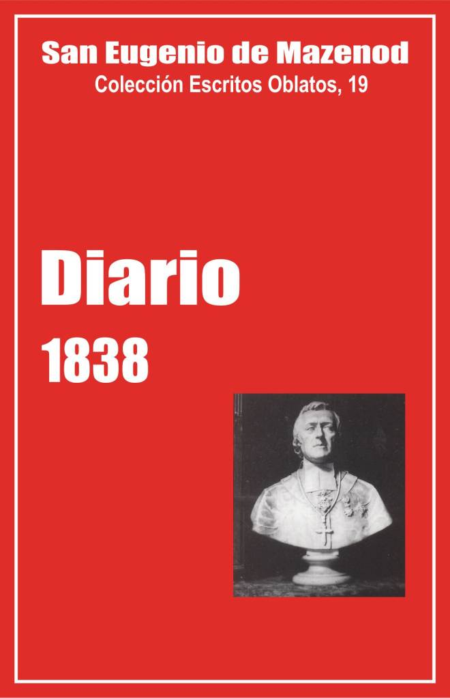

Palo Gordo
2019
Escritos Oblatos: - 01 - 02 - 03 - 04 - 05 - 06 - 07 - 08 - 09 - 10 - 11 - 12 - 13 - 14 - 15 - 16 - 17 - 18 - 19 - 20 - 21 - 22

SAN EUGENIO DE MAZENOD
Colección Escritos Oblatos, 19
Traducción de Félix Erviti O. M. I.
y Olegario Domínguez O. M. I.
Postulación General, 1999
(Asunción, Paraguay, 2006)
Palo Gordo
2019
Enero - Febrero - Marzo - Abril - Mayo - Junio - Julio - Agosto - Setiembre - Octubre - Noviembre - Diciembre - cartas administrativas
Nota del Traductor:
Damos íntegro el texto de San Eugenio y del editor, P. Beaudoin, pero omitimos o abreviamos muchas de las notas que lo acompañan.
O. Domínguez
En 1837, a instancias del padre Tempier, Mons. de Mazenod tomó la costumbre de escribir diariamente una o dos páginas, o solo unas líneas de lo que llamamos su Diario. Intentaba conservar el recuerdo de los acontecimientos diarios, probablemente también para sí mismo como un memorándum. Lo cual hace de este diario un escrito de un estilo muy particular, que debemos aceptar tal como está, a la vez como notas tomadas sobre el trabajo diario, sobre los encuentros, las preocupaciones y, al mismo tiempo, como examen de conciencia que nos manifiesta unos sentimientos que sólo el escrito revela y que la dignidad debía mantener ocultos. . .
La introducción al Diario de 1837 trataba de expresar esas perspectivas. Nos ponía en guardia contra la apreciación demasiado rígida de este escrito. Séanos permitido pedir de nuevo al lector que lea con inteligencia y comprensión. Más allá de las fórmulas, a veces tajantes, a veces cargadas de una sensibilidad cuya expresión sorprende, se sabrá descubrir la vida de un hombre, de un hombre de fe, de un obispo, que la Iglesia ha reconocido como un santo.
Los cuadernos manuscritos [2] del Diario de 1838 se han conservado. Se publican, por primera vez y en su integridad. Mons. de Mazenod señala numerosas cartas escritas al clero y a las autoridades civiles. A modo de ejemplo, publicamos cinco como anexo de este volumen. En esas cartas es donde aparece sobre todo “el intelectual”, el hombre capaz de argumentar, de defender una tesis, de exponer los diversos aspectos de un problema y de proponer soluciones. Que se consulten también los Escritos oblatos en los que están publicadas 28 cartas escritas en 1838, a los Oblatos de Francia (Ecrits Oblats, 9, p. 71-101).
Al leer estas páginas queda uno impresionado por el número y la diversidad de las actividades del obispo. Un nuevo entusiasmo le da aliento. El pesimismo de 1837, acompañado de frecuentes problemas de salud, ha dejado lugar a lo que se puede llamar una vitalidad apostólica recobrada y a una sorprendente capacidad de trabajo, con la que puede escribir aún varias páginas del Diario, tras unas jornadas ocupadísimas, en las que ha recibido y escrito varias cartas, acogido a visitantes y visitado parroquias e instituciones o a diversas personas.
Menciona, por ejemplo, 277 cartas recibidas, de las que 107 son de Oblatos [3] y 194 escritas, de ellas 50 a Oblatos [4]. Sin embargo, no ha hablado de todas las cartas recibidas o escritas [5]. Algunas veces escribe sencillamente “Cartas y más cartas” (20/1), “Cartas recibidas y escritas” (27/1, 30/6 y 6/7), “Me encerré en mi oficina para despejar un poco mi mesa”(8/9). El 24 de noviembre, recibe una carta del p. Mille que le escribe “las cosas más conmovedoras” sobre el p. Albini, gravemente enfermo; añade: “A propósito de cartas, por algo las conservo con aprecio. Conjuro a los que encuentren tantas entre mis papeles después de mi muerte, que no las quemen a la ligera. Muy pocas hay de las que conservo que no contengan algún detalle interesante para la congregación. . . . ” Sigue a ese propósito, el 14 de diciembre: “He rebuscado en mis papeles. He quemado casi 200 cartas. Conservo las que pueden servir como material para la historia de la congregación. Se encontrarán en esa correspondencia cosas muy interesantes que traerán recuerdos que sin eso se perderían. Se sacarán también datos preciosos para la vida de nuestros padres. [. . . ] Pero hará falta un hombre abnegado, paciente, celoso y capacitado para coordinar todas esas cosas. . . ”.
El obispo de Marsella se impuso siempre como un deber acoger en su oficina a cuantos deseaban hablar con él. Da el nombre de 164 visitantes, de los cuales 13 Oblatos. Con bastante frecuencia hace alusiones a eso, por ejemplo el 26 de enero: “Audiencia como todos los días a todas las personas que se presentan”; el 23 de febrero: “Visitas recibidas y hechas”; el 16 de marzo: “Las audiencias me abruman”, o el 4 de abril: “Agobiado de asuntos, como los demás días”. El 17 de marzo, dice que “cinco personas”, por la mañana, lo han “cansado con sus pretensiones”. Nombra a cuatro. Dos han querido venderle libros. Un judío vino a entregarle un donativo para sus obras de parte de Abd El-Kader, emir de los árabes en Argelia. Luego una persona le ha entregado 2000 misas por el descanso del alma de la señora Emerigon, esa señora que, a la llegada de Mons. Fortunato de Mazenod a Marsella en 1823 incitó al populacho a protestar por la medida que había tomado contra los Misioneros de Francia. . ”. Los días 3, 5 y 8 de setiembre, hace las siguientes reflexiones: “¡Qué afluencia de desdichados!. Si las mañanas como la de hoy y otras más, se renovaran con frecuencia, creo que sería imposible resistir”. “Las audiencias de todos los días ocupan todo mi tiempo” El 17 de diciembre, escribe de nuevo : “día abrumador”, y el 31: “visita tras visita”.
Mons. de Mazenod da también muchos detalles sobre 150 visitas hechas por él, de las cuales 10 a los Oblatos del Calvario, 2 al seminario mayor y 2 a Aix. Ahí sobre todo, en las visitas a las parroquias, los conventos y las obras, especialmente para administrar el sacramento de la confirmación, parece estar en su elemento y encontrar la mayor alegría.
El segundo punto que atrae nuestra atención, es la diócesis, de la que Mons. de Mazenod acaba de ser constituido pastor y que le ocupa por encima de todo. Aproximadamente el 45% de lo que escribe y mucho más de lo que hace, se refiere a la diócesis [6]. Habla de los Oblatos en el 25% de este texto, de su familia en el 5%, otro tanto de sí mismo y, por último, de los acontecimientos generales de la Iglesia y de Francia en un 20% de estas páginas.
Para dar al lector un anticipo del contenido del volumen y poner algo de orden en la multiplicidad y diversidad de los acontecimientos contados y de las reflexiones hechas por el fundador, señalaré aquí los puntos principales de lo que dice sobre sí mismo, sobre su familia, la congregación, la diócesis y los acontecimientos generales.
Sobre sí mismo.
A través de todo su Diario, Mons. de Mazenod habla evidentemente de sus actividades. Su modo de expresarse nos revela mucho de su personalidad. Es más, algunas ocasiones le llevan a hablar explícitamente de sus sentimientos más personales, así en el asunto Vèze o también, cuando recuerda su elevación al episcopado y su nombramiento a la sede de Marsella.
El asunto Vèze es bien conocido. Las acusaciones públicas -y calumniosas- de su antiguo criado, proferidas el 1 de abril en plena celebración litúrgica, y luego el jueves santo, diez días después, el anuncio de la publicación de un panfleto que recogía esas acusaciones, lo afectaron evidentemente mucho. Mons. de Mazenod habla con frecuencia de eso en abril y mayo. Escribe entonces hermosas páginas para pedir a Dios “aguantar con resignación interior este nuevo género de humillaciones” (1/4) o también para lamentar el hecho de que después de haber sido acusado en el pasado “de ambición, de avaricia, de altivez, de orgullo y odio”, ahora, a los 56 años, atentan contra su moral. “Desde ahora no podré envidiar a nadie, confiesa. San Atanasio y san Francisco de Sales, ya no se atreverían a quejarse después de lo que me ocurre” (7/4). El viernes santo, 13 de abril, al hablar del panfleto preparado para su publicación contra él, escribe también: “Les perdono de todo corazón. A no ser por el escándalo que se sigue, me parece que Dios me da la gracia de llegar hasta agradecerle la humillación que cae sobre mí, y que la cruz que mi Señor ha llevado hasta el Calvario me ayuda mucho a llevar esta”.
Recuerda también algunas peripecias de su elevación al episcopado en 1832, las dificultades suscitadas entonces por el gobierno y el papel del p. Guibert, en 1835, para destrabar el asunto de Icosía (2/2 y 14/10). El 14 de octubre, aniversario de su ordenación episcopal, hace amplias consideraciones sobre el peso de la responsabilidad de una diócesis, mientras que de 1832 a 1837, sólo consideraba el episcopado “como el complemento del sacerdocio, como un sacramento que confería una gracia, y no como esta temible carga que abruma al obispo, al que se le impone la responsabilidad de una diócesis”. Esta reflexión parece contradecir una afirmación tajante que había hecho el 15 de mayo hablando de la vejez feliz de su tío Fortunato (90 años), que gozaba de buena salud, rodeado de amigos y parientes que lo veneran, “viéndome a su lado, terminando y perfeccionando las obras que había iniciado bajo su nombre y de las que él comparte la gloria y el mérito”.
Se ve que con frecuencia se emociona con la amistad y el agradecimiento de algunos cardenales [Pacca y Falconieri], de amigos y conocidos de su infancia y de su juventud, del doctor d’ Astros, médico de los Oblatos en Aix (18/8). El 24 de mayo, después de haber copiado una carta del abogado Tavernier a propósito de la condena de Vèze en Aix, el prelado añade: “Es fácil pensar que esos sentimientos, compartidos, por todos aquellos a los que dediqué los primeros años de mi ministerio, me resarcen y con creces de todas las persecuciones que me suscita el infierno”.
Por último, al azar, entre sus numerosas reflexiones, nos enteramos de que, siendo sacerdote joven, ha llevado el cilicio (3/12), que ha estado enfermo del 19 al 23 de enero, e indispuesto los días 24 de mayo, 14 de agosto y 1 de octubre. El día aniversario de su nacimiento, el 1 de agosto, cree equivocarse al contar sus años (57) y no se atreve “a jactarse de que los ha cumplido conforme a la voluntad de Dios”.
Su familia
A pesar de sus numerosas ocupaciones, Mons. de Mazenod no olvida a su familia, a la que quedó siempre muy apegado. Logra en primer lugar que nombren a Fortunato canónigo de San Dionisio, título honorífico que asegura una buena renta. El 27 de abril el sobrino celebra la misa por su tío el día de su nacimiento, y escribe: “Que Dios lo conserve muchos años en el perfecto estado de salud en que se encuentra”. El 1 de febrero compra un terreno en el cementerio de Marsella, para enterrar a su tío el caballero Carlos Luis Eugenio, fallecido el 23 de febrero de 1835, y para depositar allí un día los restos de los demás miembros de la familia. El 10 de octubre, aniversario de la muerte de su padre, fallecido en 1820, escribe una página para exaltar sus virtudes y su santa muerte.
Menciona varias veces el nombre de su madre a la que escribe algunas cartas, sobre todo de negocios. Esta fue a Marsella por lo menos dos veces con toda la familia Boisgelin. El 28 de agosto para asistir a la ceremonia de la tonsura y órdenes menores de Luis, escolástico jesuita y, el 14 de octubre, para celebrar el aniversario de la ordenación episcopal del prelado. Hablando de la ceremonia del 28 de agosto, Mons. de Mazenod hace de nuevo, como en 1837, consideraciones sobre los sacrificios aceptados por la familia, al ceder a los Jesuitas a ese joven cuyo nombre, educación, virtudes, etc. parecían llamarlo a altas funciones en la Iglesia.
En febrero, Mons. de Mazenod sirve de intermediario en el proyecto de matrimonio de su sobrina Cesárea (21 años), al parecer, con el hijo del mariscal de Bourmont, conquistador de Argel en 1830. El 14 de noviembre escribe una página de recuerdos sobre su sobrina Natalia, fallecida a los 19 años, el 14 de noviembre de 1829. Habla sobre todo unas diez veces de su sobrino Eugenio (17 años) que ha pasado el año escolar en el instituto del señor Poiloup, en París. En febrero y marzo, el tío está preocupado porque Eugenio está enfermo. Este vuelve a Marsella al terminar el año escolar en agosto y, en setiembre, no quiere ya volver a París. Expone sus razones a su tío el 7 de octubre. Este acepta sus motivos y hace escribir una carta quejándose al señor Poiloup, por no haberse comportado “como padre”, tal como lo había prometido, sino que ha sido “indignamente injusto para con él. Ese joven, muy puro y muy inocente, sólo merecía una suave reprimenda por su aturdimiento”.
La Congregación de los Oblatos.
Si nos atenemos al Diario de 1838, Mons. de Mazenod recibió a pocos Oblatos en su despacho. Menciona dos o tres veces el nombre del P. Tempier, de regreso de visitas canónicas de las casas (v. g. 19/7 y 16/10) y solo una vez cita los nombres de los padres Guibert, Lagier, Ricard, Mille, Telmon, Casimiro Aubert, etc. Por su correspondencia es como está al corriente de la conducta y de los trabajos de padres y hermanos, así como de la marcha de las casas.
En 1838, se trata sobre todo de Córcega. En la primavera, el p. Guibert va a Roma y obliga al padre Albini a quedarse en el seminario como profesor y director. Sin aprobar ese viaje, Mons. de Mazenod no se opone, pero pide al superior del seminario que deje predicar lo más posible al p. Albini, cuyas misiones tienen un éxito extraordinario. El p. Guibert alaba las virtudes y la abnegación de los padres Albini, N. F. Moreau y F. P. Marchal, pero está descontento del p. E. A Rolleri, que es llamado a Marsella, y del p. V. Reinaud que saldrá de la Congregación en 1841. Habían propuesto a los Oblatos establecerse en Balagne. Al fundador le parecía interesante la propuesta, porque el convento de Vico no estaba bien situado para la predicación por toda la isla. Con motivo de su visita canónica en Córcega en julio, el padre Tempier constata que “de todos los conventos de los que se hablaba no hay ni uno solo habitable”(19/7).
La casa de Aix va mal; al p. Courtés no le gusta el p. Magnan, único buen misionero de su comunidad. Los padres de Aix predican en noviembre una misión en Rognes (12/11). En diciembre, el párroco escribe al fundador alabando el celo de los misioneros, que han logrado que la mitad de la población haya aprovechado la misión. “¡Qué fracaso!, comenta Mons. de Mazenod. Eso siempre se ha llamado entre nosotros una misión fracasada. ¡Dios mío! ¡La mitad de la población no ha aprovechado de una misión de cinco semanas! Nunca jamás hemos tenido un resultado tan pobre [. . . ]Temo que no se den, en la diócesis de Aix, conforme a nuestras costumbres. ¿Por qué, si no, en todos los otros lugares tienen éxito como antaño?” (15/12).
En N-D. de l´Osier, el p. Guigues y sus cooperadores predican con éxito, pero Mons. de Mazenod reprocha al superior que no conserva todas las costumbres de la congregación. El obispo de Grenoble está satisfecho del trabajo de los Oblatos (26/4), pero no le parecen bastante numerosos y quiere formar un equipo de misioneros, con sacerdotes diocesanos (16/11).
En N. -D. du Laus, los peregrinos acuden numerosos en verano y los padres dan demasiadas misiones, hasta el punto de que el fundador debe obligar al p. Mille, enfermo, a descansar unas semanas.
En N. -D. . de Lumières abundan los peregrinos en agosto y las misiones, dirigidas por el p. Honorat, tienen un éxito maravilloso. Mons. de Mazenod escribe entonces: “!Esos son misioneros¡[. . . ] Honorat está contento de todos sus cooperadores; Courtès se queja de los suyos. El secreto de esa diferencia es que Honorat, en las misiones, confía plenamente en la ayuda de Dios, pues está acostumbrado a verle hacer milagros, y Courtès, que no tiene la misma costumbre, sólo confía en los medios humanos de los que puede servirse. . . ”(12/11). El p. Honorat al que siempre le ha gustado la construcción, lleva a cabo trabajos para los cuales él y sus socios van con frecuencia a pedir.
Los padres del Calvario parecen ocuparse sobre todo de los fieles que frecuentan su iglesia y de la obra de los italianos. El p. J. -A. Bernard predica, sin embargo, una misión en Cuges en enero y un retiro en un suburbio de Aix.
En setiembre, el canónigo Loewenbruck propone a los Oblatos establecerse en Saboya, en la abadía de Tamié. El p. Tempier va a visitarla en octubre, pero constata que el obispo no quiere a la congregación. “Es la segunda vez, escribe Mons. de Mazenod el 16 de octubre, que Mons. Martinet, arzobispo de Chambery, la rechaza de Saboya donde su ministerio habría podido ser tan útil”.
Más de veinte veces habla el fundador de vocaciones, en particular de sacerdotes que piden ingresar en el noviciado, como los abates Feraud de la diócesis de Fréjus, Agniel y Girolet de la diócesis de Aviñón, J. F. Allard y Chabrier de la diócesis de Gap, Alliès, párroco de Orgon en la diócesis de Viviers, Curnier, rector de Aubenas en la diócesis de Viviers, etc.
El superior general y los superiores locales están descontentos de la conducta de algunos Oblatos, en particular de los padres J. A Pélissier, C. Kotterer, A. Telmon, J. A. Valentín Reinaud. Sin embargo, sólo los hermanos H. Blanc y F. B. Marchi salen de la congregación en 1838. Algunas veces, el fundador habla de la enfermedad de los padres Mille, Guibert y, sobre todo, del p. Albini en noviembre y en diciembre, luego del hermano Luís Morandini (1816-1838) que muere en Aix el 27 de diciembre (cf. Diario, 28/12). Con ocasión del aniversario de su muerte, recuerda a los padres M. Suzanne (+ 31 de enero 1829) y A. Pons (+ 16 de setiembre de 1836. Y escribe una verdadera nota necrológica del p. J. Marcou (+ 20 de agosto de 1826).
Habla poco de asuntos temporales, menos en febrero. El 7 dice que a su muerte, la señora de Bausset de Aix ha dejado 20. 000 francos a la congregación; el 12, termina el asunto del crédito Trinquier; el 21 compra un terreno en el cementerio de Aix para construir una capilla funeraria, en la que serán enterrados los Oblatos y los Boisgelin. El 24, habla del proyecto de vender la propiedad oblata del Tholonet en Aix. Lamenta también no lograr la venta del castillo de Billens.
La congregación de los Oblatos no ha vivido ningún acontecimiento importante en 1838, y los juicios del fundador sobre los hombres, las casas y las obras, son más bien serenos. Apenas menciona a sus dos colaboradores inmediatos, los padres Casimiro Aubert y Tempier. Parece, sin embargo, que cita implícitamente a éste, cuando con ocasión de la visita de un abate Hoffman, misionero en los Estados Unidos, escribe: “Todo cuanto el señor Hoffman nos ha contado de los Estados Unidos ha demostrado que estuve bien inspirado cuando me opuse al deseo de algunos de algunos de los nuestros que ardían en ganas de ir a ese país [7]. Sabía lo que había cuando me opuse con tanta energía al proyecto, que honraba su celo pero no iba guiado por la experiencia. Bueno será siempre tener en cuenta la sabiduría de los que el Señor ha colocado a la cabeza de la familia. Cuando llegue el momento, el amo de la Viña sabrá indicarlo. Mientras tanto, que la congregación se perfeccione y multiplique” (2/3)).
La diócesis
Al ser nombrado obispo de Marsella , Mons. Eugenio de Mazenod temía especialmente al clero. En él había encontrado la mayor oposición como vicario general de su tío. En 1838, sus relaciones parecen buenas, hasta con algunos sacerdotes que le habían hecho sufrir en el pasado, tales como Andrés Caire (cf. 3 /12 y 1/8), Damico (cf. 18/2 y 2/5 ) y Polydoro Jonjon (cf. 11/12).
El 8 de junio, se entera por el abate A. Coulin que algunos miembros del clero hablan contra su obispo. Este escribe al respecto: “No es posible desnaturalizar más las intenciones más puras, desagradecer más indignamente los beneficios, calumniar más descaradamente y en materia más grave, devolver, en una palabra, más completamente mal por bien. ¿Será el último intento del infierno para ahogar en mí cualquier pensamiento de celo, de perfeccionamiento, de saludable reforma?”. Se da cuenta, el 10 de junio, que el abate Coulin sólo puede nombrar a dos sacerdotes poco influyentes. Sin embargo, el prelado aprovecha los ejercicios que hace en el seminario menor con 140 sacerdotes, del 9 al 14 de setiembre, para decirles, el último día del retiro que conoce la existencia “de gran número de murmuradores”, pero que acaba de recibir una carta que, añade, “confirmándome en el conocimiento que tenía de la culpa de buen número de aquellos con los que me hallaba, había echado a pesar mío un mar de hielo sobre mi alma, el cual no había podido por cierto destruir los sentimientos de afecto por mi clero, demasiado profundamente arraigados en mi corazón, pero, confesaba, me hacía imposible expresarlos”. Apenas hubo llegado a su habitación, le siguió la corporación entera de párrocos para expresarle “el dolor que les había causado mi comunicación, que, prosigue, había creído deber hacerles. Que el pequeño número de los culpables se arrepentían sin duda de su falta, y que la mayoría de mi clero venía a manifestar su obediencia y su afecto a mi persona. . . ”. La víspera de la fiesta de san Carlos, “todo el clero” acudió a “felicitarle” (3/11).
Mons. de Mazenod escribe el 4 de mayo, que siente por todos los “buenos” sacerdotes un “afecto extraordinario”. En efecto, se le ve acudir a la cabecera de sacerdotes enfermos, v. g. el señor Martin capellán del ayuntamiento (16/3), Flayol, vicario general (25-26/9), d´Herbes, párroco de San Julián (8/9). A propósito de este último, escribe: “A pesar de la lluvia, he acudido a su casa. Mi visita, que no esperaba, le gustó muchísimo. Era un deber para mi que soy el padre de todos mis diocesanos, pero que amo sobre todo a los sacerdotes, como a los hermanos mayores de mi familia espiritual”.
Lamenta la mala conducta de algunos sacerdotes extranjeros, y confiesa que tiene dificultad para hacer los nombramientos de párrocos y sobre todo que no le gusta que le presionen en ese punto.
Al obispo se le ve en su elemento sobre todo en la visita a las parroquias, las obras, los conventos y las instituciones. En junio y julio, es la visita de las parroquias de la ciudad para administrar la confirmación. Sólo menciona 5 de las 12 parroquias y sucursales, pero en cada una confirma niños de varias otras. El 5 de julio, por ejemplo, en N. -D. del Monte, confirma a 600 niños. En los meses de setiembre y octubre, visita la mayoría de las otras 48 parroquias y sucursales de la diócesis. Nombra 30. Con frecuencia habla de las buenas disposiciones de los niños y de su atención a las exhortaciones que hace en lengua provenzal. En St-Henri, después de la ceremonia que dura 4 horas y media, va por la tarde a pescar con los niños. En Chateau-Gombert, el 29 de octubre, al día siguiente de la confirmación, hace bajo la lluvia una peregrinación de un día a N. -D. de los Ángeles con los monaguillos.
Anima las obras, cofradías, pensionados, adonde va con frecuencia a celebrar, confirmar y participar en las reuniones de los bienhechores. Por lo menos hace tres visitas al seminario menor para las confirmaciones (10/7), para asistir al lanzamiento de un globo (12/8) y para la distribución de los premios (16/8) Habla algunas veces de los Hermanos de las Escuelas Cristianas y sobre todo de las religiosas. Las Hermanas del Santo Nombre de Jesús y de María le preocupan algún tiempo porque hay varios casos de posesión diabólica; el obispo tiene que mandar al p. J. J. Lagier, o. m. i, para ayudar al canónigo Chauvier a practicar los exorcismos (17-21/4)).
Celebra misa pontifical o asiste a las vísperas en muchas iglesias parroquiales con ocasión de las fiestas patronales y otras circunstancias. Después del fallecimiento del párroco de San Martin, en febrero, va algunas veces a hacer el servicio, en concreto el domingo de Quasimodo (22/4), y es él quien ese día lleva la comunión pascual a los enfermos. “Esa noticia, escribe, ha producido una sensación general. Hay personas que han llegado a decir que desearían estar enfermos para tener la dicha de comulgar de manos del obispo”. El domingo de Pascua oficia pontificalmente en la catedral, acompañado por Mons. Fortunato y Mons. C. M. Pablo Tharin, antiguo obispo de Estrasburgo. Observa que la iglesia está llena, mientras que el sábado santo había cantado el aleluya ante pocas personas (14 y 15/4). En la fiesta de San Marcos, el 25 de abril, asiste a la misa mayor en la iglesia estacional de St-Cannat y escribe: “Nunca soy más feliz que cuando desempeño estas dulces funciones de mi santo ministerio”. El domingo 20 de mayo celebra la misa en N. -D. . de la Guardia y, por la tarde bendice la primera piedra de la iglesia “que se va a construir en el barrio de San Lázaro. Es preciso, dice, que un obispo de Marsella sea ligero de piernas y que no le cansen las ceremonias porque es un fuego graneado. Felizmente cumplo con gusto ese deber que nunca ha tenido nada de penoso para mí”.
Algunas veces hace observaciones sobre los predicadores, en particular sobre los de Adviento y Cuaresma. Le parece que con demasiada frecuencia hacen del “púlpito su oficio”(18/4) con escaso celo. El día de Navidad, en las vísperas, se divierte contando la “pérdida de memoria” del predicador.
Meditando sobre el Pontifical romano, cuando el retiro preparatorio para la ordenación al episcopado, en 1832, había escrito: “He aquí la incomparable gracia, he aquí el gran carácter [. . . ] comunicar a mi vez el Espíritu Santo para perpetuar el sacerdocio en la Iglesia de Jesucristo, [. . . ] juzgar, interpretar, consagrar, ordenar, ofrecer, bautizar y confirmar. . . ”. Fiel a “esa incomparable gracia” recibida, preside, en 1838, seis ceremonias de ordenación, después de haber hecho un día de retiro con los ordenandos. El 6 de diciembre, permite al abate Gaduel ingresar en el seminario de San Sulpicio, pero con la condición de recibir las órdenes del obispo de Marsella. “¿Cómo puede un obispo consentir en no dar a luz personalmente para la Iglesia a todos aquellos que Dios le ha dado para ser sus cooperadores, en su gran misión?”, escribe entonces. En cuanto a mí, me parece, en cada ordenación que hago, poder decir como Nuestro Señor que una virtud ha salido de mí. . . . ”.
Todos los lunes confirma en su capilla a todos los que se presentan, sobre todo adultos. Responde siempre a las peticiones que recibe para confirmar a convertidos, a militares y sobre todo a enfermos. Lo escribe con frecuencia. Dice, por ejemplo, que va a confirmar a un niño en un 5º piso (17/10), a una vieja en el 4º (28/12) y el 23 de noviembre escribe que ha ido por tres veces en una misma semana “a uno de nuestros peores barrios”. El 17 de abril le habían invitado a ver a una enfermita de doce años que no quiso confesarse. Vivía en la calle Glandevès, de mala fama. “El demonio al que se sacrifican las almas en este lugar, escribe, ha sido más fuerte que la gracia de mi ministerio”.
En calidad de obispo, pero sobre todo por razón de sus relaciones personales, sirve de intermediario en cinco bodas importantes. Personalmente bendice a media noche, conforme a la costumbre provenzal, esos matrimonios, uno de ellos en Tolón el 18 y 19 de junio (Gerard-Roux Bonnecorse) y otro en Gemenos el 20-21 de junio (Turcas, ex congregante).
Sólo unas treinta veces habla de asuntos y de administración financiera, sobre todo a propósito de su proyecto de una nueva catedral. El 3 de diciembre dice que ha escrito al ministro de Justicia para que el gobierno aumente la paga de los obispos de las grandes ciudades.
Como obispo, tiene que intervenir en gran número de asuntos. Cuatro veces habla de las reliquias que recibe en Marsella. El 8 de abril escribe al alcalde para denunciarle un escándalo en la Canebière. El 6 de junio el abate Vitagliano le ruega vaya a ver a una chica “inspirada”. “Voy despacio en esa clase de cosas”, comenta. El 11 de junio, debe recibir en el obispado al buey que toma parte en la procesión del Corpus y, el 2 de agosto, los comerciantes de cera vienen a protestar contra los “cirios de la estrella” que al prelado le parecen más limpios.
Desde 1830 Mons. de Mazenod se interesó siempre por Argelia. En vano propuso varias veces el servicio de los Oblatos. El 1 de mayo escribe al cardenal Fransoni, prefecto de la Propaganda, para pedirle informaciones sobre el estado de la religión en Argel. “Tengo demasiados diocesanos cuya salvación está comprometida en esa región, confiesa, para que no quiera saber a qué atenerme”(2/5). El cardenal contesta tranquilizándole. El 1 de septiembre, Mons. de Mazenod aconseja al abate J. -M. Landmann que vaya a ayudar al obispo de Argel. “He tenido la dicha de contribuir a la erección de la sede, anota; es muy justo que aproveche todas las ocasiones para asegurarle ayudas espirituales que tanto necesita. Se interesa también mucho por una asociación católica para la colonización de Argelia, iniciativa del príncipe de Mir.
A pesar de esa intensa actividad, Mons. de Mazenod sobre todo ha examinado bien la situación y preparado el terreno para relanzar la diócesis. Sólo recibe a una congregación religiosa en 1838, las Hermanas de la Caridad del Refugio, pero fundará o acogerá a otras 25 de 1839 a 1861; sólo funda en 1838 la obra de San Francisco Regís para la regularización de los matrimonios, pero fundará otras ocho de 1839 a 1848. Con el acuerdo del gobierno sólo erige una sucursal en 1838, en San Pedro , contra la opinión del consejo municipal de Aubagne y del párroco, que no quiere que se toquen los límites de su parroquia. A pesar de esa clase de oposición que encuentra en todas partes, de 1839 a 1848 logrará del gobierno la erección de otras doce parroquias o sucursales.
Acontecimientos de interés general.
Con frecuencia Mons. de Mazenod debe mezclarse en asuntos de interés general. Señalaré aquí solo los principales. Recibe varias veces la visita de un padre Bucchi, agustino, condenado por la Inquisición. Este lo pone al corriente de la oposición, hasta de parte de sacerdotes que hay en la Romaña contra el Papa y la administración pontificia.
En marzo, mons. C. M. Pablo Tharin, condiscípulo de Mons. de Mazenod en el seminario de San Sulpicio y antiguo obispo de Estrasburgo, acude con frecuencia al obispado, pero no quiere aceptar la hospitalidad del obispo para no comprometerlo. Está, en efecto, en Marsella para vigilar la impresión de una obra sobre el estado de la Iglesia de Francia, en que “no perdona al gobierno”.
El 14 de mayo, es el párroco de Digne quien le ruega haga que su tío dé “un buen consejo a ese buen obispo de Digne, que pide un coadjutor”. Mons. Bienvenido de Miollis, de Aix, y amigo de los Mazenod ,era obispo de Digne desde 1805. El clero temía que hiciera nombrar como coadjutor a un sacerdote que no tenía la plena confianza de la diócesis.
Mons. de Mazenod mantiene correspondencia con Mons. Carlos de Forbin-Janson y con Mons. A. Basilio Menjaud que en julio es nombrado su coadjutor. Este nombramiento fue propuesto por el obispo de Marsella, con reticencias de Forbin-Janson que, desde tiempo atrás enfrentado con el gobierno de Julio, no puede ya pisar su diócesis. Mons. de Mazenod escribe entonces: “Los hombres más santos son a veces muy extraños” (15/8).
En agosto el obispo de Marsella recibe la visita de Mons. J.J. Pedro Guigou, obispo de Angulema de 1824 a 1842. Antaño vicario capitular de Aix, ese prelado había comprendido y ayudado al padre de Mazenod en los comienzos de la congregación, por eso este lo había propuesto a la Capellanía Mayor como obispo de Angulema: “Otros han podido presumir, dice, la verdad es que fui yo el que le ha impuesto esa enorme carga y que en ello actué menos por amistad hacía un hombre al que estimaba que por la convicción que tenía de que era eminentemente apto para hacer el bien en esa diócesis tan difícil”. Mons. Guigou estaba paralizado e inactivo desde 1834, Mons. de Mazenod le aconseja entonces presente su dimisión. Escribe: “Creí servir a la Iglesia facilitando a Mons. Guigou el acceso a la más alta dignidad. Actué en el mismo sentido aconsejándole, hoy que está totalmente impotente y sin poder realizar el bien, que dimita de su sede” (17/8).
El 15 de octubre es el “célebre señor Drach”, judío convertido, quien llega al obispado. El prelado señala esa visita y escribe: “El señor Drach se propone siempre ser sacerdote y su hijo, alumno de Propaganda, sigue queriendo consagrarse a las misiones de China. En verdad hay motivos para bendecir a Dios admirable in sanctis suis”.
En sus notas del retiro preparatorio para la toma de posesión de la sede de Marsella, Mons. de Mazenod había escrito : “Querría. . . ser un buen obispo. Querría desde el principio de mi episcopado realizar dignamente todos mis deberes”. Las páginas de su Diario de 1838, nos dan la ocasión de seguir día a día todas sus actividades y sus reacciones, nos permiten también constatar que ha cumplido dignamente todos sus deberes de pastor y que “¡hay en verdad motivos para bendecir a Dios, admirable in sanctis suis!”
Yvon Beaudoin. o. m. i.
Llegada de las Damas de San Miguel de Tours. Fui a instalarlas en la casa del Refugio que van a ocupar. Muchas señoras de la obra estaban presentes. Las de la dirección, con un celo admirable, se habían comprometido a cuidar a las penitentes durante 24 horas; habían pasado la noche en pie recorriendo las salas para evitar cualquier desorden. Puse de relieve esa dedicación en el discursito que precedió al Veni Creator y al ingreso procesional de las religiosas en la casa.
El consuelo de ver ya este establecimiento en manos experimentadas se moderó al enterarme, leyendo su acto de obediencia, que esas religiosas quedan sujetas a la jurisdicción del señor arzobispo de Tours [9]. Las cartas de la superiora a las damas de la obra, lejos de expresar esa cláusula, parecían decir todo lo contrario. Manifesté mi sorpresa y mi descontento. Las bellas palabras de la señora superiora no han disipado mis inquietudes. Le hablaré ampliamente de eso en nuestra primera entrevista.
Carta al señor abate Drach, en respuesta a la suya y para explicarle cómo y por qué he tenido que despedir a las Damas del Buen Pastor de Angers, que él me recomendaba. Carta al señor abogado Tavernier. Carta al padre procurador de los Cartujos en Roma para atestiguar la miseria de la madre del padre Lucas, y decirle que no pudiendo colocar a ese padre en mi diócesis, lo cedería con gusto al señor arzobispo de Aviñón [Mons. Dupont]. El señor párroco de Cucuron pide ese padre como vicario.
Centésima visita de las damas de la dirección de la obra del Refugio, esta vez para tranquilizarme sobre las cláusulas inquietantes de la obediencia de las religiosas que han hecho venir.
Los señores de la Providencia han venido para darme parte del resultado de su votación. Después de haber propuesto al señor arcipreste y de haber éste consentido en ser nombrado director de su obra, la mayoría ha votado por el señor Court, párroco de San Martín. Este grave inconveniente exige que en adelante nombre yo a ese director sin esperar la presentación de esos señores. Lo señalo aquí para que se recuerde. Carta al señor obispo de Ajaccio.
Visita de las damas de la caridad del Refugio. Seguridad de arreglar el punto de la dependencia de la autoridad eclesiástica de Tours. La superiora lleva su asunto en el sentido que le he indicado, es decir que no se permitirá a nadie sacar una sola religiosa de las que vienen a formar nuestra comunidad sin mi autorización especial.
Viaje a Cuges por San Menet donde me he detenido para ver al marqués y a la marquesa de Montgrand. Llegada a Cuges un poco antes de anochecer. Recepción solemne. El alcalde y el teniente de alcalde con banda, cumplidos, respuesta. En la iglesia, saludado por el párroco. Respuesta. Todo conforme al ceremonial.
Misa. Sermón antes de la comunión. Mucho recogimiento, lágrimas de hombres que hacía 47 años no habían pisado la iglesia. La comunión ha durado una hora. Era la segunda para toda esa gente. Se quedaron todos para la confirmación. Nuevo sermón juzgado necesario en la circunstancia. Muchos hombres y mujeres de edad han recibido ese sacramento. Por la tarde, no hay vísperas. He bendecido la cruz. Procesión con un tiempo muy frío. Toda la población. Adiós del misionero [P. J. A, Bernard], no muy bien. Después de la bendición, el párroco subió al púlpito, algunas cosas buenas mezcladas con varias inconveniencias. Desde el trono donde estaba, tomé la palabra para clausurar la fiesta, expresar mis sentimientos y dar algunos buenos consejos para la perseverancia, que el misionero había olvidado. Gran satisfacción en la asamblea.
Regreso a Marsella, cansado de la jornada de ayer y de mi irritación del pecho.
En la cama todo el día.
Cartas y más cartas. Visitas, etc. Falto a la promesa de celebrar la santa misa en la Misión de Francia. No hay misa. Tos.
Falto a la promesa de ir a celebrar a la casa del Cólera. Celebro en mi capillita, no sin dificultad. Siento no haber podido clausurar el retiro de esas damas que han sido muy edificantes. Carta al señor Abeille, de Saint Chamas, añadiendo mi autorización para vender al señor de Lavison mi credencial sobre la menor de los Trinquier por 2. 000 francos, de los que el señor Lavison guardaría 200 francos para entregarlos a esa mujer y él mismo retendría otro tanto por su trabajo.
Enfermo a consecuencia de mi viaje a Cuges. Diversas cartas recibidas de nuestras misiones. La de Bédarrides, admirable. desde los primeros días. La de St-Michel-les-Portes, diócesis de Grenoble, deseada y bien empezada. La de Mens va también bien. Los párrocos de la Mure y de Vizille están tan contentos que las piden para sus parroquias. El p. Guigues desearía suprimir la ceremonia del ingreso y la procesión de penitencia. Hay que guardarse de ello. Ese padre confiesa que por no estar convencido de su utilidad, las hace sin espíritu de fe. ¡Ahí está el mal! Que tenga menos confianza en sus propias luces, que participe del espíritu que las inspiró y luego las hizo aprobar por la Iglesia, y verá los buenos resultados, como se comprueba en otros sitios. Misión de Montmiral, misión en Rovon, misión en St-Just-de-Claix, misión en Devençais. Una de estas misiones se da en la diócesis de Valence. Es nuestro ensayo en ese nuevo campo, ha sido con éxito.
Tristes informes sobre el p. Pélissier. Es de una apatía sin igual, no sabe molestarse para nada, se ocupa de las obras de celo solo cuando son de su gusto y no le causan ningún esfuerzo; es de una susceptibilidad sin igual, enfadándose por cualquier palabra insignificante y cumpliendo muy imperfectamente sus deberes de párroco. Es un cuerpo muerto, no tiene ni celo, ni conciencia; engorda, eso es todo; todos se quejan, a cual más. El hermano Blanc no tiene las disposiciones necesarias para renovar sus votos. He escrito que nos liberemos de él. Autorizo para que se haga el entablado en el coro interior de l’Osier. Consiento que den 150 francos al diácono que quiere venir al noviciado.
Conferencia con la señora Aymes. Pone tales condiciones para la cesión de su hijo al padre, que será difícil que este las acepte. Carta al señor Aymes para hablarle de este tema y darle diversos encargos.
Carta al señor Caire. No le oculto en qué se fundaba mi convicción sobre las culpas que le he reprochado en París. Le nombro sin miramientos al señor Maurel y al señor Ricaud, sus cuñados, como muy culpables en el camino de oposición que han seguido hasta ahora. Audiencia como los demás días para todos los que se presentan.
Asuntos corrientes. Cartas recibidas y escritas. Nada notable. He olvidado de anotar, entre otras cosas, la carta a Guibert, en la que le autorizo para que dedique, también este año, el sueldo de los directores de su seminario para completar el mobiliario y otros gastos de Vico. Le recomiendo el p. Rolleri que se aburre solo en esa casa de campo desprovista de libros, etc. Prefiero que lo lleve a Ajaccio, en espera del momento en que salga con el p. Albini para alguna misión, que con todo es preciso que ese padre dé durante el año. Al respecto le hago ver al p. Guibert la inconsecuencia que habría a los ojos de la Congregación en retener en el seminario al p. Albini, tan útil para las misiones, con el pretexto de que se necesita un director más, cuando él, el superior, dejara la casa para un viaje a Génova y a Roma. Le autorizo que admita al hermano Pedro a la primera profesión. Pienso que conviene disuadir al señor obispo de Ajaccio de la idea de nombrar canónigos honorarios de su catedral a los padres Moreau y Albini. Se admite para los superiores de los seminarios mayores, eso entra en los estatutos de los Cabildos, y no es lo mismo para otros.
Carta del doctor d’Astros para informarme de la muerte de la señora Castellane, su hermana. Respuesta inmediata a ese verdadero amigo. Carta del p. Courtès. Propone agregar alguien al p. Bernard para el retiro que debemos predicar en el suburbio de Aix. Su idea sería llamar al señor Cuynat. Pero eso no puede ser. No se cansa de repetir que siente no se den misiones en la diócesis de Aix. . ¿Por qué no se piden a tiempo?
Misa en el primer monasterio de la Visitación. Presentado el señor Cailhol, vicario general, para remplazarme, cuando yo esté impedido por los asuntos de superior. Visitas a los concejales municipales y a otros. Han entregado a mi tío la carta pastoral escrita el 4 de junio de 1755 por mi tío abuelo, con ocasión de la muerte de Mons. de Belsunce, cuyo vicario general era, como lo fue del Cabildo y de Mons. de Belloy. Ese documento ha gustado mucho a mi tío. Es el elogio del obispo difunto en que se recuerdan todas sus acciones.
Misa por nuestro buen Suzanne. Explicación al señor Martín Lázaro sobre su posición para conmigo. Este mal sacerdote apelaba a mi bondad. Le he tenido que decir que lo quería muy sinceramente, hasta el punto de que me sentiría feliz en hacerle el bien, pero que no podía darle mi confianza. La señora Auban vino para explicar su conducta respecto al Refugio. Los fabriqueros de San Victor insisten en aceptar la dimisión del señor Matalian.
El señor Barthélemi me ha entregado un oficio parvo que utilizaba mons. de Belsunce; me ha dado también un libro curioso: un Breviarium Massiliense, impreso en Lyon en 1526, en el que están los oficios de nuestros santos y letanías en las que se invocan sus nombres.
Carta del señor obispo de Ajaccio. Nuevo encolamiento [10].
Carta del p. Albini. Desea saber si apruebo que se quede en el seminario. Su carta está llena de los sentimientos de su alta virtud. Ya había contestado antes en mi carta al p. Guibert.
Fabri, consejero en los Tribunales, vino el otro día para hablarme de su deseo de casar a su cuñada con alguien que yo eligiera. He propuesto ese partido al señor Roux-Bonnecorse.
Carta al señor obispo de Fréjus para pedirle su venia para el ingreso del señor Feraud en la congregación.
El alcalde nos ha enviado el título de la concesión del terreno comprado en el cementerio de la ciudad de Marsella por 200 francos, pagados el 5 de marzo de 1835, para enterrar a mi tío el caballero. He colocado ese título, con el nº 902 entre mis papeles. Nos faculta para poder ser enterrados todos en ese cuadrado de tierra.
Carta del apóstata Ailhaud. Después de mil tentativas y de haber hecho intervenir a no sé cuanta gente, por último me escribe para decirme que está dispuesto a someterse a todo cuanto exija, aunque sea volver a una comunidad de la cual no ha sabido apreciar el mérito ni las ventajas (copio sus expresiones), deseoso de reparar con unos años de celo y de entrega por la salvación de las almas, el estado de inacción en que se halla, si me digno acceder a sus deseos (es él quien sigue hablando). Espera de la gracia de Dios que nunca me dará el menor motivo de arrepentirme de mi clemencia. Verdaderamente no sé si hay que tomar en serio esta carta, y si debo presentarla al Consejo, como una petición en forma para que decida sobre la aceptación o la negativa de esta propuesta.
El Ministro del ejército asigna cincuenta francos al mes a los sacerdotes que han asistido a los soldados enfermos en Ratonneau; es más o menos la mitad de lo que esos señores han gastado. Así que no ha sido generoso el ministro. Me tocará a mí suplir el déficit, porque no es justo que esos señores pongan de su bolsillo.
Carta al señor Caire para encargarle de que saque del ministerio de la gobernación la misa de Requiem de Cherubini que el ministerio nos ha donado.
Acabo de escribir la nota siguiente al margen de la ordenanza del rey que permite la transcripción de mis bulas de obispo in partibus al Consejo de Estado:
“Es bueno señalar que nunca he reconocido la pretendida irregularidad de mi aceptación del título de obispo in partibus por no haber obtenido la autorización previa del rey. Nunca he dejado de sostener lo contrario. Lo único que he pedido es que se regularizara lo que faltaba a las formalidades legales, exigidas para la transcripción de las bulas en el Consejo de Estado”.
El p. Tarrot, misionero de las Islas Gambier, ha venido a despedirse. Tiene la bondad de encargarse de mis sellos para hacerlos retocar en París. Le he encargado que diga al señor arzobispo de Calcedonia, superior general de su Congregación, que le pido la comunicación de obras y méritos, como yo se la concedo de nuestra parte. El p. Tarrot se me mostró muy complacido con esta buena idea.
Carta al p. Mille. Mi inquietud sobre su estado de salud. Ayer recibí una carta suya. Desearía que suspendiera sus misiones para recuperarse. Si tarda hasta la cuaresma, haré el sacrificio del p. Bernard, que con todo me es muy necesario en Marsella.
Misa pontifical en San Victor. Música con gran orquesta de Cherubini. He reconciliado al señor Matalian con el párroco invitándole a venir a comer conmigo en el gran banquete de ceremonia. El párroco, los fabriqueros y sobre todo el señor Matalian han quedado encantados de esa medida. Si yo no hubiese tomado ese partido, los rencores habrían sido interminables.
Carta de la señora Josefina de Coriolis. Sostiene que ha obrado muy bien donando sus bienes al Sagrado Corazón. Sus argumentos no me han convencido. Que les aproveche a esas Damas, pero ojo con las pobres familias que son las víctimas de esas ideas. Antaño los conventos se contentaban con una dote. Estoy de acuerdo con que se dé más, pero las Damas del Sagrado Corazón quieren todo para ellas. Es la caridad bien comprendida. No les quedará a las familias con qué mantener su rango. Ya no se podrá casar a las jóvenes de buena familia conforme a su nacimiento, por no tener una dote suficiente; no importa, la tía carnal se habrá llevado 80. 000 francos, y reivindicará también 1. 500 o 1. 800 francos que le pueden tocar; así se recibirán religiosas gratuitamente, no se exigirá la pensión integra de algunas pensionistas que se presentan, y también se comprarán así hoteles Biron, castillos de San José y otras pequeñas casas de campo por el estilo. No, no, nunca aprobaré, como cosa buena, que las familias sean despojadas de esa forma con principios de una estricta justicia, pero de una soberana inconveniencia.
Carta al señor Fabri, consejero de la Corte de Aix, para darle cuenta de mis gestiones ante la familia que tenía en vista para proponerle el matrimonio del que me había hablado.
He reunido el Consejo de la congregación para deliberar sobre varias cuestiones: 1. La petición del señor Ailhaud, que solicita su reingreso; 2. La petición del indigno Kotterer, que pide dispensa, aunque esté ya fuera; 3. La admisión del hermano Daly para la oblación. La petición del señor Ailhaud ha sido rechazada. La del indigno Kotterer aceptada para su perdición, que solo a él mismo será imputable. El hermano Daly ha sido admitido para hacer su oblación el 17 de este mes.
Documento del señor arzobispo de Tours con el que se compromete a no retirar a las Religiosos del Refugio sin mi consentimiento.
Carta de Magloire Giraud, llena de sentimientos.
Visita del señor Coustet, párroco de Istres, para apremiarme a que le dé misioneros para la cuaresma. Negativa. Compromiso para la cuaresma del próximo año. Avisar de ello al padre Courtès.
Carta del p. Bermond; me informa, algo tarde, que piensa que el p. Mille necesita verdaderamente un descanso. Ha salido para la misión de Banon, mi rápida respuesta no lo ha hallado por consiguiente en Laus.
Carta del p. Courtès que me informa de la muerte repentina de la respetable señora de Bausset, amiga e insigne benefactora de la Misión. He escrito inmediatamente a todas nuestras casas para que cada sacerdote celebre una misa por el descanso de su alma, y que cada oblato novicio y hermano haga cinco comuniones con la misma intención, y que las indulgencias, buenas obras, etc. , le sean especialmente aplicadas durante ocho días, independientemente de los derechos que tiene para siempre a todos los méritos de la congregación.
Segunda carta del p. Courtès que me informa que en su testamento la excelente señora de Bausset me asigna la suma de 20. 000 francos que me serán pagados durante este año. Se sabe en la congregación que esta caritativa cristiana y buena amiga nos dio durante diez años 600 francos anuales para la formación y el sustento de nuestros padres. Dios ha debido de recompensar ya a esta santa alma, pero es deber de la congregación conservarle eterno agradecimiento. En cuanto a mí, siento su pérdida con el dolor que no puedo dejar de sentir cuando me son llevados amigos tan queridos y tan apreciados; estoy seguro de que no es fácil reemplazar semejantes tesoros; en lugar de los amigos verdaderos, sinceros, virtuosos, sólo se encuentran indiferentes. La buena señora de Bausset tendrá cada día de mi vida un lugar en el memento de los difuntos y no me cansaría de hacer el elogio de sus virtudes y de sus buenas cualidades.
El P. Bucchi, agustino [condenado por la Inquisición], que se había hecho anunciar por una recomendación de la señora Charpentier, amiga de la señora Sauvaire, se me presentó con una carta de su general que le da a conocer el consejo dado por el Santo Oficio:
“Debería Vd. presentarse al Ordinario del lugar, hacerle una leal y sincera confesión de su conducta, sin ocultarle cosa alguna referente a su asunto, y manifestarle al mismo tiempo el deseo de reconciliarse con el tribunal de la fe. Luego él, que se supone tenga las instrucciones oportunas para asuntos semejantes, pensaría en todo lo demás”.
Carta del conde Tourini que no disimula su enojo porque no quise mezclarme en sus litigios de intereses con el señor de Lander, su tío.
Carta del señor Beraud, notario en Aix, que me informa que la señora de Bausset me ha dejado 20. 000 francos en su testamento, pagaderos en tres años con intereses al cinco por ciento a partir del día de su muerte.
Carta del p. Honorat. Detalles sobre la misión de Bédarrides, que hay que conservar, por lo conmovedores que son. Se podrá contar esa misión entre las más bellas que hayamos dado.
Carta al párroco del arrabal de Aix para concederle el p. Bernard una semana más, dado el bien que hace el retiro que ha iniciado el domingo pasado.
Carta al señor Gay, párroco de Cassis, para invitarlo a venir a entenderse conmigo sobre los arreglos que hacer para la nueva situación en que le he puesto. Le expreso con toda claridad mi voluntad inquebrantable de establecer la comunidad del párroco y los vicarios sucesivamente en todas las parroquias, empezando por la suya. Le anuncio los cambios que he hecho para que a su llegada encuentre todas las facilidades.
Carta de Mons. el Uditor Santissimo, en nombre del papa, para aprobar que yo haya prestado mi juramento ante mi predecesor, antes de mi instalación.
Carta del señor obispo de Fréjus. Consiente en darme al señor Feraud, pero piensa que ese sacerdote le pedirá el permiso de dejar su diócesis; le dará entonces su excardinación, pero si dejara la diócesis, desearía que quedara bajo mi jurisdicción. Esto me obligará a examinar el tema más a fondo.
Carta de Josefina de Coriolis. Quiere sondear nuestras disposiciones para un matrimonio. El señor mariscal de B. . . desearía casar a uno de sus hijos con una señorita de rango, bien educada, con una fortuna razonable. Esos jóvenes son tan piadosos que Josefina los llama ángeles. Si esto nos conviene para Cesárea, no tenemos más que escribirle.
Carta al señor Beraud, notario en Aix, para acusar recibo de la suya.
Visita del señor Massot, primer teniente de alcalde. No se puede ser más amable ni decir las cosas más convenientes y más agradables mejor de lo que lo hizo el señor Massot en esa visita. Me ha dicho que considere como liquidado el asunto de San Lázaro y me ha pedido por favor que no me moleste en ir a su casa cuando tenga que pedirle algo, que mirará como un deber venir junto a mí y que se sentirá feliz de poder servirme, en cualquier ocasión, etc.
Carta a mi cuñado para informarle de la propuesta que me ha hecho Josefina de Coriolis.
Carta del señor Abeille. Concluyó el asunto de los Trinquier y del señor de Lavison. Este ha hecho la compra por 1. 800 francos. No ha dado más, porque en la agrimensura se han dado cuenta que había menos terreno de lo que las actas decían. Ver su carta del 10 de febrero. No acepta los 200 francos de gratificación que le ofrecía. Me envía dos letras de cambio, una de 700 francos pagadera a la vista, por el señor Durand, comisionista, calle nacional, número 3. La otra es una obligación de 945 francos, suscrita por el señor Lavison y pagadera a finales de enero de 1839. Los 200 francos restantes están en manos del señor Abeille, que se propone mandármelos, reservándose solo los gastos de viaje de la joven Trinquier y de su marido, de St-Chamas a Marsella.
He recibido de París el complemento del hermoso ornamento donado por el rey. Con este envío venía el regalo de una magnífica estola pastoral, bordada en oro sobre tela de oro, que el rey tuvo a bien hacerme sin que yo la hubiese pedido.
He metido en mi cartera dos pagarés del empréstito de San Lázaro, firmados a favor de mi madre. Cuando salgan a suertes sus números, me entregarán la cantidad correspondiente para ser empleada en cualquier obra buena de mi agrado.
El Consejo municipal ha adoptado ayer por unanimidad las conclusiones de la comisión acerca del reconocimiento de la parroquia de San Lázaro. Ya está terminado un asunto de gran importancia, en muy poco tiempo y de común acuerdo; tuvo que haberse mezclado en ello nuestro gran patrono desde el cielo, donde sigue siendo el amigo de su divino maestro nuestro Señor.
La señora Gérard y su hijo han venido a verme para concertarse sobre las propuestas del matrimonio proyectado para la señorita su hija. He escrito al señor Roux para que mañana pase por el obispado. Acabamos de tratar este asunto a satisfacción de todos.
He ido a visitar algunos de nuestros conventos. He aquí lo que me ha contado la priora de las Carmelitas sobre una de sus religiosas, que se distingue entre todas por sus virtudes y sobre todo por su obediencia. Desde algún tiempo esta santa mujer tenía malo un dedo de la mano, y todos los días había que curar esa llaga, hacer cataplasmas, etc. Un día, la priora le dice: “Tenemos que celebrar tal fiesta y mañana Vd. hará el ridículo llevando el cirio con su muñeco en el dedo, le mando que se cure “. La buena religiosa se inclinó. Al día siguiente por la mañana fue con sencillez a mostrar su dedo totalmente curado a la priora, que quedó estupefacta de ese milagro. No fue esa la única vez. En otra ocasión, estando enferma la misma hermana, la priora le mandó se curara; obedeció, o mejor dicho, Dios curándola quiso dar esa prueba de su amor por la virtud de obediencia ya que quiso de algún modo obedecer él mismo en la persona de esa santa religiosa cuya oración atendió.
El señor párroco de St-Martin ha muerto súbitamente ayer tarde. El arcediano de St-Martin, según el nuevo reglamento que he hecho, entrará en posesión de la jurisdicción parroquial, mientras dure la vacante de la parroquia.
Me he enterado esta tarde que se proponían pasear por la parroquia mañana por la mañana el pobre cadáver, que ha sido depositado esta tarde en la iglesia. Me he apresurado a prohibir esa práctica absurda Cuando el Cabildo vaya para el levantamiento del cuerpo para llevarlo a la catedral, entonces se podrá sin inconveniente hacerle dar una vuelta por la parroquia, pero sacarlo del catafalco, con el riesgo de que cuando el Cabildo vaya a buscarlo, el pobre cuerpo no haya regresado, es el colmo del ridículo. He tenido que oponerme, y lo escribo aquí, para que se recuerde cuando muera algún otro párroco, canónigo honorario.
Visita del señor príncipe de Mir, que vuelve de Argel donde ha fundado unos establecimientos. Ese príncipe polaco me dice cosas muy interesantes sobre la colonia. Sus posesiones están a tres leguas de Argel, pero no teme a los árabes que lo respetan a él y a su familia porque son testigos de los ejercicios de piedad que se hacen en su casa. Lo consideran como un morabito cristiano, y cuando se reza en su casa, los árabes se quedan de pie y en silencio por respeto. Ha exhibido sin vergüenza la cruz en su finca. Nunca un árabe le ha hecho la menor ofensa. Me ha asegurado que sería muy fácil ganar por la virtud a todos esos infieles, que solo se han alejado de nosotros a causa de la impiedad de nuestros colonos.
Entrevista en mi casa de las familias Roux y Gérard. El matrimonio de sus hijos se ha concertado en mi presencia. Todo hace creer que es Dios el que me ha llevado a procurar una unión tan conveniente.
Entierro del señor Court. He asistido a la misa y hecho el responso.
El señor Coursin ha venido a pedir por un señor Samat, que dio gran cantidad de objetos para Nuestra Señora de la Guardia. Era rico entonces, ahora es pobre, viejo y enfermo y pide alguna ayuda a la administración.
Duodécimo aniversario de la aprobación del instituto. He celebrado la misa en el Calvario, donde estaban reunidas las dos casas de Marsella. El hermano Daly, irlandés, hizo su oblación. Dieciocho profesos estaban presentes en la ceremonia y renovaron los votos. Los numerosos novicios, junto a los sacerdotes y oblatos de la sociedad, llenaban la capilla. La ceremonia fue muy hermosa y conmovedora. Aunque todavía enfermo, no pude menos de dirigir unas palabras a la numerosa asamblea. Me retiré después de haber pasado al comedor, muy edificado y muy contento.
El señor Gabriel, consejero de la Prefectura, ha venido en representación de mucha gente, a pedirme la parroquia de St-Martin para el señor Léautier. He contestado, como debía, estableciendo los principios sobre esta materia.
El Sr. Damico ha escrito al señor Caihol que marchaba para su parroquia, para que no se pensara que prolonga su estancia en Marsella con toda intención. Pero encarga especialmente a mi vicario general me diga que está dispuesto a aceptar el puesto que le ofrezca, si es mi intención recuperarlo para la diócesis.
Carta de Leblanc. Ha visto a Chappuis, que sentía mucho no haberme visto en Marsella. Se ha compensado de esa pena, me dice Leblanc, hablando mucho de nuestro padre y bienhechor común. Créanos, los recuerdos de nuestras antiguas relaciones son muy queridos ya que después de tantos años perviven todavía en nuestros corazones. La carta de tres páginas está llena de delicados sentimientos. Usted es hoy, me dice este hijo querido, lo que ha sido en todas las épocas de su ministerio, tal como le he visto cuando tenía la dicha de estar siempre a su lado, sabiendo conciliar a maravilla la condescendencia de la caridad con el rigor del deber. Me gusta este testimonio. Procede de un buen sacerdote al que estimo tanto como siempre lo he querido, y recuerda los primeros años de mi ministerio, cuando ese buen Leblanc estaba entre los más fervorosos discípulos de mi hermosa congregación de la juventud cristiana, de la que fue uno de los primeros.
Carta del p. Guigues del 13 de febrero. Vuelve sobre lo que me había dicho acerca del hermano Blanc, excusándose de lo que me había dicho siguiendo la opinión del p. Pélissier, que no es muy indulgente cuando se trata de los demás. Ese hermano es tal como lo vi en Laus. El p. Guigues me pide una nueva respuesta sobre el sujeto de acuerdo con los nuevos informes que me da. Me manda una copia del relato de la misión de Mens, para que la pase al noviciado. La han transcrito en su registro. No tengo que olvidar escribir a Lumières que hagan otro tanto para sus misiones en el Condado.
Misa en el gran catecismo que dirige el señor Coulin. Había por lo menos unas 250 señoritas o señoras que han comulgado. Es una hermosa institución que he alentado desde el principio y que aliento porque sé que se puede sacar provecho de las instrucciones que se dan allí. Sólo habría querido que no se pudiera acusar al director de haberse acomodado demasiado bien, aunque se aprecie mucho su desinterés.
Carta del señor Puissant, secretario particular del señor ministro de Justicia. Me manda la ordenanza del nombramiento de mi tío, como canónigo de la orden de San Dionisio. Está muy bien la carta del ministro a mi tío. Por fin está terminado este asunto, sé muy bien lo que me ha costado llevarlo a cabo. .
Carta del p. Bernard. Su retiro misión de Aix va de maravilla.
Carta del p. Guibert. Detalles muy precisos sobre el p. Reinaud y el p. Rolleri. Son tan penosos como son consoladores los que me da sobre los padres Albini, Moreau y Mouchel. Insiste en hacer el viaje a Génova y a Roma. Le escribo para que me devuelva al p. Rolleri, aun reprochándole no haberle cuidado bastante. Ese pobre padre joven parece ser muy imperfecto, pero ¿no es también algo por encima de su edad, el quedar abandonado en la soledad de Vico? Carta al p. Guibert; rápida respuesta a su carta de hoy.
Carta del señor Girolet , párroco de Goult. Me pide con insistencia que escriba al señor arzobispo de Aviñón, para lograr de él que pueda ingresar en la congregación. Me dice que esa ha sido siempre su vocación, pero que hasta ahora no se había atrevido a darla a conocer ante la escasez de sacerdotes. En la situación en la que estoy, es imposible que escriba al arzobispo. Al señor Girolet le toca empujar la puerta.
Carta de Vignolo para informarme de la enfermedad de nuestro buen Eugenio [de Boisgelin]. Es una pleuresía que no presenta síntomas muy alarmantes. No por eso dejo de sentir pena y pena muy grande. Así, acabo de escribir a las abadesas de las Capuchinas y de las Clarisas y a la priora de las Carmelitas para que empiecen en seguida a rezar En eso está mi confianza; pero no puedo librarme de un profundo sentimiento de inquietud.
Carta de Vignolo tranquilizadora sobre la enfermedad de Eugenio. Dios ha atendido a las oraciones de esas santas hijas y del sacrificio que mi tío y yo hemos ofrecido esta mañana por él.
Carta del señor obispo de Fréjus que me concede al señor Feraud, sacerdote de su diócesis. Me pide a cambio al señor Michel.
Carta a Luis [Boisgelin, novicio jesuita] para informarle de la enfermedad de su hermano.
Viaje a Aix para visitar al señor arzobispo y arreglar unos cuantos asuntos. Esa visita al señor arzobispo no es de rigor. Mi carta, cuando fui instituido, bastaba, pero como los demás obispos de la provincia se habían sometido a esa formalidad, sin pensar en las consecuencias de ese paso en falso, he creído deber hacer otro tanto, conociendo la susceptibilidad de ese prelado que estaba ya molesto conmigo y de muy mal humor con mi tío.
He visitado en Aix el nuevo cementerio, donde desearía levantar una capilla para depositar allí los restos venerados de mis dos familias. Los gastos que habría hecho en el Enclos, serán mejor empleados en este camposanto. Mi intención sería emplear a lo más cinco o seis mil francos en ese edificio. Consentiría que llevaran allí a todos los muertos que se enterraran en el cementerio y que se celebrara la misa cuando lo inspirara la devoción, con la confianza de que las almas de los nuestros se aprovecharían. Pondré eso como condición para la concesión. Tendré que hablar con el alcalde de Aix antes de empezar la obra.
El señor párroco del Espíritu Santo me ha invitado amablemente a celebrar la misa en su iglesia para la exposición del Santísimo. He quedado muy edificado del gran número de comuniones. He regresado por la tarde a su iglesia para asistir al sermón y dar la bendición.
Ayer había asistido al sermón de nuestro p. Bernard en el arrabal, y di la bendición después. El retiro que este padre da en esa parroquia produce grandes frutos. Terminará el domingo con la comunión general que el Sr. arzobispo irá a dar a ese buen pueblo.
Visita al señor procurador general. Me ha expresado vivamente su apego a la ciudad de Aix, a la que, sin embargo, había tratado muy mal en una circunstancia solemne. Quiere que el canal [del Durance] pase por Aix. A propósito de ese canal, me dijo que acababan de descubrir las obras que los Romanos habían realizado para traer bajo tierra las aguas de Jouques y de Peyrolles a Aix. Es la solución de un problema respecto al caso presente, ya que la mayor dificultad que se opone es el temor de no poder realizar la perforación que necesita el proyecto del canal que pase por Aix.
Visitas recibidas y hechas.
Palacio de Justicia que no conocía todavía. Lo visité de arriba abajo. Hermoso patio, pequeñas salas, mala construcción, habrá que rehacer ya la techumbre. El Sr. presidente Verger me invitó a comer el lunes. Se lo he agradecido, ya que salgo mañana.
Arreglo para la venta de nuestra propiedad del Tholonet, que procede de la señora viuda David. Todo quedó concluido esta mañana con el señor Courtés, padre. Pagará mil escudos al vendedor, gozará de la propiedad mientras viva, su hija gozará de ella después de él, y la propiedad volverá a nosotros a la muerte del último superviviente. Esta tarde todo ha cambiado. Las mujeres se han enfadado ante el peligro y las dificultades de esa adquisición. El padre no pudo resistir a tantas protestas y rompió el convenio.
Llueve todo el día, imposible salir. Lo haremos mañana.
Misa de madrugada en la Misión. Salida para Marsella.
Carta de Dassy que me informa que la litografía de mi retrato la hará el señor Belliard por 500 francos. Tendrá 13,50 de alto por10 pulgadas de ancho. Ha retocado él mismo el retrato original. Le he escrito para aprobar lo que ha hecho.
Paso del señor de La Villegontier por Marsella. Carta del p. Guibert, llena de elogios para el p. Albini, el p. Moreau y el p. Mouchel. Me equivoco de fecha. Carta posterior a esa. Trata de las relaciones con el señor obispo de Ajaccio que se muestra cada vez más incapaz de gobernar su diócesis. Ese prelado es poco agradecido por lo que se ha hecho por él. Habrá que estar en guardia. La carta de Guibert es convincente. Es del 17 de febrero. La anterior es del 2.
Carta de D. Giacomo Semeria, escrita desde Roma. Llena de agradecimiento por lo que he hecho por su sobrino [el p. Semeria]; me ofrece sus servicios.
Visita del p. Bucchi. Me habló de nuevo de su asunto y me entregó una extensa memoria para que conozca todos los detalles. Al mismo tiempo me entregó una carta que escribe al p. Olivieri para informarle de los comentarios indignos hechos aquí por cierto médico romano llamado Freduzzi que iba diciendo en todas partes que el papa era un bonachón que se dejaba influir en todo por su ayuda de cámara, por el que pasaban los asuntos, hasta los más secretos; que ese indigno sujeto le hacía cambiar las decisiones más serias tomadas con el Secretario de Estado o cualquier otro cardenal en plaza; que el papa pasaba el tiempo en tonterías, se divertía echando agua sobre los miembros de su Corte, paseándose en su jardín. Como estas insolencias repetidas son aptas para disminuir el respeto que se debe al Santo Padre, ese médico que las propaga debería ser denunciado a Roma, como un hombre muy sospechoso. No ha dejado de ponerse aquí en contacto con los refugiados romanos más encarnizados contra la Santa Sede.
Carta del obispo de Gap pidiendo ayuda. Es la más extraordinaria que es posible escribir. Deseo tenga éxito, aunque lo dudo.
Carta del señor cardenal Pacca, afectuosa y muy amistosa, como de costumbre.
El señor Bonnafoux, nuevo canónigo, me ha entregado una preciosa reliquia de San Lázaro para el cabildo Es una falange de un dedo del pie. Poseía esa reliquia del señor Boyer, canónigo honorario de Malta, que la había traído de esa isla, donde estaba el pie del santo. Es el mismo que nos dio una parte considerable de ese pie, que también había traído de Malta. Ambas reliquias son debidamente autentificadas por el señor arzobispo-obispo de Malta.
He hecho la ceremonia de las cenizas en la catedral. Por la tarde presidí la hermosa reunión de St-Martin. La iglesia estaba llena porque se había sabido que yo iba a ir. Por eso cuando me coloqué en el trono, dirigí la palabra a la asamblea, lo que causó impresión y gustó. Era oportuno, pues el escándalo de la disipación está en el colmo este día en Marsella; era pues justo conversar paternalmente con los buenos que se unían con su primer pastor para ofrecer a Dios una compensación y reparación tan edificante.
El ministro del ejército, teniendo en cuenta mis observaciones, ha concedido la pequeña suma que le había pedido para resarcir a los sacerdotes de sus gastos de Ratonneau. Si ese ministro es amable, no lo es tanto el de cultos, que acaba de ponerme un nuevo obstáculo para las reparaciones solicitadas.
Olvidé anotar que había escrito desde Aix al rey para agradecerle el nombramiento, que yo había solicitado para mi tío, de la canonjía retribuida de San Dionisio.
Carta del señor Allard para informarme que el señor Chabrier, superior del seminario de Embrun, quiere ingresar en la congregación. El señor Girodet, párroco de Goult, diócesis de Aviñón, me había escrito otro tanto, pero ¡cómo esperar lograrlo del arzobispo de Aviñón!
Visita del señor Hoffman, misionero de los Estados Unidos, que va a Roma. Lo que nos ha dicho de las diócesis de aquella parte de América no es nada consolador. La indiferencia de los católicos es total, y el país está devastado por una inmensidad de malos sacerdotes de todas las naciones. Los religiosos de Méjico y de las otras partes de la América española que han sido expulsados de su patria, son casi todos indignos de su vocación. Nada más común que ver a sacerdotes, que viven públicamente con mujeres, no esconder su vergüenza y hacer ostentación de sus hijos. El señor Hoffman no quiere volver a un país en el que no ve posibilidad de hacer mucho bien. El gusto por el estudio le lleva a hacerse benedictino en el Monte Cassino o en Subiaco. Trae documentos poco favorables para el obispo de Detroit. Aconsejan a ese prelado se quede en Roma y no vuelva a una diócesis que, según el señor Hoffman, no ha sabido gobernar. Es ese mismo obispo de Detroit el que por desgracia ha elegido al señor Reynaud como vicario general. Razón tuvimos al impedir que ese señor hiciera colecta en Marsella únicamente para la diócesis de Detroit, perjudicando la obra general de la fe. Ya está bien con los cerca de 90,000 francos que el obispo de Detroit había logrado de la sociedad Leopoldina, sin provecho alguno para América. Esa cantidad fue prestada a un irlandés, amigo del obispo, que la llevó.
Todo cuanto nos ha contado el señor Hoffman sobre los Estados Unidos nos ha demostrado que estuve bien inspirado cuando resistí al anhelo de algunos de los nuestros que ardían en deseos de ir a ese país. Conocía la situación cuando me opuse tan enérgicamente a ese proyecto, que decía mucho de su celo, pero no tenía en cuenta la experiencia. Siempre se hará bien teniendo en cuenta la prudencia de aquellos que el Señor ha puesto a la cabeza de la familia. Cuando llegue el momento, el Dueño de la Viña sabrá decirlo. Mientras tanto, que la congregación se perfeccione y crezca.
El señor Maurel, párroco designado de St-Martin, me ha escrito una carta conmovedora para disuadirme de la decisión de nombrarlo párroco de St-Martin. Su carta, aunque muy bien escrita, no me ha convencido para cambiar la decisión. Le he contestado muy amablemente, pero diciéndole que tenía que resignarse y cooperar con su adhesión a mis proyectos, y facilitarme el cumplimiento de mis deberes en el puesto difícil que ocupo.
Carta de Mons. Garibaldi, internuncio, para pedirme informaciones sobre el señor Escalon y otros aspirantes al puesto de cónsul general de Roma. Respuesta favorable para el señor Escalon apoyada en el testimonio del señor Buret.
Visita del señor Deguerry que viene a predicar la cuaresma en St-Ferréol. Le deseo otros éxitos que los que él espera de su talento. Es del todo parecido al retrato suyo que había visto en los muelles de París: actitud orgullosa, peinado original, palabra altiva, etc.
He confirmado al buen hermano Luigi, nuestro querido oblato.
Carta al Señor cardenal Pacca sobre el asunto del religioso Bucchi, enviándole la memoria que me ha entregado.
Carta al señor cardenal Falconieri, de amistad y de reproches, felicitándole por su elevación al cardenalato.
Carta del señor obispo de Digne, edificante, para acusarme recibo de mi carta pastoral.
Carta del señor Massot, que hace las funciones del alcalde en su ausencia, en respuesta a la mía sobre el proyecto de construcción de una nueva catedral. Le parece conveniente esperar el regreso del señor Consolat para que lo someta personalmente al Consejo municipal, la propuesta ganará siendo presentada por el primer magistrado de la ciudad.
Las damas de la obra del Refugio han venido para hacerme suscribir en pro de su nueva construcción. Sólo he podido ofrecerles 100 francos y ya es mucho dadas las cargas que pesan sobre mí. Les he hecho comprender que esa pobre aportación en la cabecera de la lista podría ser un mal ejemplo y animar a otros a dar poco. Así lo veían también, por eso me propusieron señalar 1000 aunque sólo diera 100. Mi delicadeza se negó a ese gesto. Hemos buscado otros medios y por fin hemos decidido que esas mismas señoras pongan sin consultarme lo que juzguen conveniente, dejándome a mí revisar su cuenta y dar solo lo que pueda. Así se entiende bien. Lo escribo para que si viniera a morir, se sepa bien que persisto en querer dar a esa obra solo cien francos. Esas damas lo saben, pero otros podrían ignorarlo.
Llegada del p. Rolleri. No ha tenido éxito en Córcega. Lo dedicaremos al servicio de los italianos de Marsella, donde lo pongo en la casa del Calvario. Carta del p. Guibert. Carta del p. Reinaud.
Carta al p. Guibert sobre el proyecto de hacer que den misiones sacerdotes jóvenes formados en su seminario, que ejercerían ese ministerio bajo la dirección del padre Albini y de algún otro de nuestros padres cuando los haya. Desapruebo ese proyecto.
He entregado hoy mis cartas para el señor cardenal Pacca y el cardenal Falconieri a un señor que sale en barco mañana; el señor Hoffman había venido a buscarlas cuando yo estaba en el Refugio.
He ido a celebrar esta mañana a la gran reunión de las damas del Buen Pastor. Nunca había habido tan numerosa reunión de damas, he admitido a diez nuevas. Después de la recepción subimos al gran locutorio, donde la secretaria dio cuenta de la situación de la casa y anunció los proyectos de ampliación. Me han agradecido mucho mi interés por la obra. Por mi parte las había alabado mucho en mi sermón aunque diciéndoles con qué espíritu debían cumplir sus deberes de caridad con las pobres chicas penitentes. Estoy verdaderamente edificado por su celo.
Visita del señor capitán Pegulu. Este buen militar está muy agradecido por el pequeño servicio que tuve el gusto de prestarle, gracias a la complacencia del señor cardenal arzobispo de Génova, que, a mis ruegos, envió al señor Pegulu unos papeles que nadie había podido procurar, y que eran de suma importancia para él. La alegría del militar me hizo sentir un rato de verdadera dicha.
Carta al señor arzobispo de Burdeos, en respuesta a la que me mandó por medio del señor Mathieu, hijo de un magistrado recomendable de Burdeos. Ese señor vino sin dejarme su dirección. Se la pido al señor arzobispo.
Carta del señor arzobispo de Aviñón, que me pide para tres años más a la hermana Marcela. Difícilmente podía negarle esa gracia, pero no sé como tomarán esa decisión las religiosas de aquí.
Reunión en mi casa de algunos notables para establecer la obra de San Francisco Regis [11]. La sesión ha durado tres horas. Se adoptó el reglamento, se formaron las secciones, se nombró el comité. Me encargaré de ver a los miembros honorarios que hemos añadido a la comisión activa, tales como el señor presidente Reguis, el señor teniente de alcalde Loubon, etc. Veré al señor alcalde para intentar lograr una sala en el ayuntamiento para las sesiones ordinarias de la obra.
Ordenación en la capilla interior del Calvario. Los hermanos Rouvière, Luigi y Daly recibieron, el primero el subdiaconado y los otros dos la simple tonsura.
Confirmación de una pequeña enferma. Al hacerle rezar sus oraciones, me he convencido de lo mal que se hace enseñándoselas en francés a los niños del pueblo. Lo hice observar a los sacerdotes que me acompañaban. Esa pobre pequeña no sabía lo que decía, eran palabras de las que se veía que no comprendía ni el sentido ni la conexión. Nuevo argumento para probar que tenía razón para tomar la medida que he tomado para San Lorenzo.
Llegada inopinada de Mons. Tharin, antiguo obispo de Estrasburgo, mi antiguo amigo y condiscípulo. No quiso aceptar un alojamiento en mi casa por temor de comprometerme. Tiene la intención de pasar algún tiempo en Marsella para seguir de cerca la impresión de una obra que acaba de escribir sobre el estado de la Iglesia de Francia. Al parecer no trata con indulgencia al gobierno en ese opúsculo; si quiere ser justo, puede remontarse hasta el tiempo de la Restauración para formular sus quejas. No hay obispo que no pueda facilitarle algunas páginas en contra del gobierno de aquella época. Se lo dije al obispo, que estuvo de acuerdo.
Confirmación de otra pobre enferma en su lecho de muerte.
Misa en San Teodoro con ocasión del sacrilegio. Visita a Mons. Tharin.
Carta del señor Beraud, notario, que dice:
“Si quiere cumplir todos los requisitos prescritos por las leyes contra el señor Lubières, tiene derecho a pedirle la concesión del legado que le ha sido hecho por la señora de Bausset (art. 1014 del código civil ) y a los seis meses de la muerte, hacer inventario de los bienes de la sucesión para conservar el beneficio de la separación de los patrimonios (2111 c. c. ). Su prudencia decidirá, monseñor, si la posición del señor de Lubières, no le dispensa de cumplir esas formalidades”.
Aix, 10 de marzo de 1838.
Avisaré tomando consejo de mi abogado.
Llegada del sacerdote anunciado desde hace varios meses, ver, el 30 de setiembre. Le he autorizado a presentarse al Calvario para prepararse a empezar su noviciado.
Visita a todos los miembros honorarios notables de la obra de San Francisco Regis.
Ayer el antiguo obispo de Estrasburgo almorzó en mi casa.
Visita regular al primer monasterio de la Visitación. Le he dedicado el día entero, sin poder acabarla. Estoy muy satisfecho del espíritu de esa comunidad. Ha ganado prodigiosamente desde mi última visita. Está claro que el escollo era aquella antigua superiora que dejaba pasar todo, que fuera era considerada como un oráculo, pero era mejor conocida por algunas hijas con sentido común, a las que he podido apreciar y he hecho poner a la cabeza de la casa, las cuales han levantado el espíritu. Sea dicho en toda paz de la pobre señora Remuzat.
Continuación de la visita. Estaba decidido a hacerla como es debido. Ha durado todo el día. La he terminado conformándome puntualmente a lo que está escrito. Así las religiosas están rebosantes de dicha y agradecimiento, y yo muy consolado del bien que ha quedado consolidado. Ciertamente sólo hay un corazón en esta comunidad.
No quise dar una carta de recomendación a cierto hermano que vino para eso de Cap Corse. No quiero avalar sus rarezas. El señor obispo de Ajaccio juzgará por sí mismo y decidirá.
Carta del p. Guibert. Cree que su viaje a Italia es útil para los intereses de la diócesis y para su salud.
Visita al señor Martin, capellán del Hospital. Le he dado la alegría del nombramiento de un superviviente. Las audiencias me abruman.
Ayer numerosa asamblea de la obra para legitimar los matrimonios; la he presidido, y se decidió empezar a entrar en acción la semana próxima.
Se anda a ver quién será más indiscreto para pedirme ayudas exorbitantes. Cinco personas por la mañana, me han cansado con sus pretensiones. El señor Fabre, juez de paz y consejero municipal, autor de una historia de Marsella, escrita con muy mal espíritu, ha tenido la paciencia de esperar su turno para verme, más de hora y media. Esa constancia le ha valido una recepción muy cortés, de la que ha pareció quedar contento, pues me ofreció graciosamente sus servicios para cualquier ocasión.
El señor de St-Priest me ha traído una carta de recomendación del señor Gaultier de Claubry. Ha insistido mucho para que recomiende la Enciclopedia, de la que es editor. Se trata nada menos que de 52 volúmenes, sin más garantía que algunos nombres de autores. Es como para pensarlo.
Curiosa historia. Estando reunido en consejo, me anuncian un mensaje muy urgente. Lo hago entrar. Cual no es mi sorpresa al recibir, por medio de un judío, una carta del enviado de Abd-El-Kader [12], que me entrega un billete de quinientos francos para los indigentes de mi comunión. Dudé un instante, pero tras un momento de reflexión, dije al portador de la carta que cuando se trata de socorrer a los pobres se debe recibir el don de dondequiera que sea. Hice escribir a uno de mis vicarios generales una carta cortés al enviado de Abd-El-Kader. Su encargado me dijo que había hecho el mismo donativo a la obra de beneficencia. Presumo que este acto de filantropía está inspirado por la política, y que desea así hacer popular a su señor en Francia, donde mucha gente no lo quiere.
La señora Emerigon, la misma que a la llegada de mi tío a la diócesis sublevó a la gente para oponerse a la medida que había tomado contra los Misioneros de Francia, que dio un puñetazo en el pecho a una mujer que no quería gritar como ella y ocasionó así a esa desgraciada un cáncer que la llevó a la tumba, esa señora ha dejado en su testamento al superior de los Misioneros de Provenza 2. 000 misas por el descanso de su alma para que él las distribuya entre sus socios misioneros. Comparad este hecho con este otro más antiguo que me asombró en su tiempo, es decir, ver a cierta señora Moulinard que anunciaba la próxima muerte de mi tío dándoselas de profetisa, que era el centro de todas las revueltas que se agruparon también alrededor del señor Rodet cuando ese sacerdote insensato, desafiando las órdenes del obispo, quiso quedarse en la ciudad prefiriendo no celebrar antes que ceder, ver, digo, a esa señora Moulinard elegirme como confesor, y terminar siendo asistida por mí en su muerte. Estos hechos se refieren a cosas que no tengo tiempo de contar, pero que deben cubrir de vergüenza a los sacerdotes, que se llamaban Misioneros de Francia, entre los que estaba el señor Rodet, su superior, espíritu débil, que cayó en todas las ilusiones de un iluminismo insensato, sea escribiendo resmas de papel al dictado de la profetisa, sea siendo engañado por cierto sacerdote José, que fue procesado por la inquisición en Roma y tuvo que retractar sus infames errores para librarse gracias incluso a la protección del señor embajador de Francia. Otro era Mario Aubert a quien hubo que castigar con entredicho etiam a sacris en la diócesis a causa de faltas enormes; otro, ese señor. . . [nombre omitido], hoy párroco de Carpentras, del que tendríamos que pedir noticias al arzobispo de Aviñón; otro, un cierto señor Bart, hombre grosero, contra el cual, sin embargo, no tengo más informes malos que el de haber sido causa de que todas las supuestas penitentes del Refugio estaban locas por él, porque las tuteaba y se ocupaba demasiado de ellas, con buen fin sin duda. Eran estos hombres los que mientras mi tío no fue canónicamente instituido, mantuvieron, o mejor dicho fomentaron una oposición con la loca pretensión de lograr como obispo de Marsella al abate Janson, rechazando a mi tío, al que ofendían temiéndole a causa de mí; hasta hicieron correr una petición, con recogida de firmas, para presionar al gobierno. No tuvo éxito esa maniobra indigna, pero la intención era bien manifiesta.
Carta al señor obispo de Fréjus para informarle que el señor abate Feraud no ha sido juzgado apto para la congregación, y que le he aconsejado se presente a él para recibir un destino proporcionado a sus fuerzas.
Clausura del octavario del sacrilegio de San Teodoro. Fui a San Teodoro, asistí a las vísperas en cappa magna, en el trono. Después del sermón, fui a la sacristía a revestirme con el alba y la capa, mientras cantaban cánticos en la iglesia y distribuían cirios para la procesión. De regreso al coro, llevé el Santísimo en la procesión, di la bendición y terminamos la hermosa ceremonia con el Te Deum. Como es debido, quedé en pie todo el tiempo de vísperas, y como el oficiante se sentó, le mandé decir que estando de pie el obispo, no podía quedar sentado. Eso está claro, pero lo que me chocó fue que los hombres que llenaban el santuario, viéndonos respetuosamente de pie, no tuvieran la idea de imitarnos, con pequeñas excepciones. El año pasado, los que no se sentaron eran bastante numerosos. No olvidaré el año próximo decir a los hombres, que quieran colocarse en el presbiterio, que tomen la actitud conveniente. No se sienta uno ante el rey, aunque se pase toda la tarde con él. Otro tanto se puede hacer con nuestro Señor en los tres cuartos de hora que duran las Vísperas.
Víspera de San José. Por temor a olvidarlo, en los permisos que daré para la cuaresma del año próximo, si Dios me da vida, reservaré la abstinencia para la vigilia de San José y para la de la Anunciación. Eso se hace en Italia.
Misa en las Hermanas del Retiro para consolarlas un poco de las inquietudes que les dan las indagaciones del señor arzobispo de Aix, que no se ha dado cuenta tan pronto como yo de las disposiciones de esas buenas religiosas. Creo que en el fondo trabajan por su salvación, con excesivo temor y temblor ante la verdad, pero sin que su doctrina sea positivamente errónea. El carácter duro y severo de su fundador, señor Receveur, se ha perpetuado por el respeto que su memoria inspira al padre Carlos Bretenière, que no se inclinaría naturalmente a ese exceso; entre los sacerdotes mediocres que se han sucedido o reemplazado en esa sociedad mixta, los ha habido que realmente han caído en extravagancias; personalmente yo tendría algunos reproches que hacer sea al p. Carlos, sea a algunos otros, pero tras madura reflexión, no pienso que haya que turbarles en la situación que se han creado en mi diócesis. Vigilarlos me parece no sólo prudente, sino un deber. Ese mismo temor les impedirá inclinarse demasiado a lo que provoca nuestra solicitud. Después de la misa en la que di la primera comunión a dos mozos, a los que también confirmé, subí a la sala de trabajo donde la comunidad se reunió. Me retiré para ir a la catedral, en la que debía asistir pontificalmente a la misa mayor y a las vísperas. Después de la comida, primero, confirmación de un pequeño enfermo, en la parroquia de San Lorenzo, y luego, de otros tres en el hospital, donde devolví la visita del año nuevo a la administración.
Conversación con el abate B. que querría, de acuerdo con otros buenos sacerdotes, fundar una pequeña sociedad como la del p. Clorivière.
La obra de los Savoyanos desea que escriba al señor obispo de Aosta para informarle de su fundación, y rogarle que escriba a sus párrocos para que dirijan a los niños que vienen a deshollinar al señor Caire, su director.
Asistencia a un sermón de caridad en la iglesia de St-Ferréol. Fue el señor Duguerry el predicador. Visita a las Damas de Santo Tomás y a las huérfanas del cólera. Nada tan conmovedor como los cuidados que se dan en esta casa a los 140 niños, de los que algunos apenas saben hablar.
He tenido una larga conferencia con el p. Telmon; debo decir que estoy muy contento del modo franco y respetuoso con el que se me ha abierto sobre todo cuanto se le ha podido reprochar. Su carácter es difícil, tiene formas ásperas, pero se atiene a razones sobre muchas cosas y con suavidad se le podrá ganar. Sin embargo, sus prevenciones contra el p. . . [ilegible] están demasiado profundamente arraigadas como para esperar que cambie tan pronto. Es un sujeto con el que hay que tener paciencia y al que no se puede tratar con brusquedad.
Carta del p. Dassy; me envía por la diligencia su pequeña obra sobre N. -D. de l’Osier.
La Gazette no lo ha dicho todo al hablar de ese militar retirado al que confirmé el otro día en su lecho de muerte. Ese buen hombre que había sido condecorado con la cruz de la legión de honor por un hecho de armas glorioso, había caído en la miseria. Caído enfermo, hizo llamar a un sacerdote, pero la Gazette no dice que ese sacerdote encontró en su casa a cuatro hombres, miembros de una sociedad republicana de la que formaba parte, que le dijeron que si volvía a ver al sacerdote, le suprimirían toda ayuda y lo abandonarían. El enfermo, prevenido por la gracia de Dios, les contestó con firmeza, que no le hablaban como gente honrada; que si ellos lo abandonaban, la providencia cuidaría de él. Es lo que ha ocurrido. Me he emocionado, hasta llorar, con los sentimientos de ese hombre y como es justo, con el sacramento de la confirmación, le he llevado los socorros que su confianza merecía y de los que la Gazette ha hecho bien en no hablar, al mencionar los que le ha proporcionado el sacerdote.
Carta al señor arzobispo de Aviñón, con fecha del día 20, para decirle lo difícil que es para mi cederle por tres años más a la hermana Marcela; le insinúo también que el señor Girolet, párroco de Goult, me pide el ingreso en el noviciado, y que tal vez el señor Agniel no podrá seguir y volverá a la diócesis.
Me he suscrito a la Enciclopedia de siglo XIX, o mejor dicho, he aceptado dos acciones de esa empresa, en las condiciones que se expresarán en el acta.
He sido testigo hoy de un milagro de la gracia, que me demuestra la asistencia que Dios concede al pastor en el ejercicio de su cargo caritativo. Me llamaron junto a una pobre mujer, la más desgraciada del mundo, que desde su infancia tullida de medio cuerpo sólo tenía las manos para trabajar. Sola en el mundo, no había salido de su habitación, desde hacía más de cuarenta años. A esas enfermedades, se había añadido desde hacía más de veinte años una sordera absoluta, tal que no oía nada. En ese estado deplorable había tenido que proveer el sustento a su anciano padre que no podía hacer nada. Su dedicación había hecho de ella una obrera extraordinaria, pero los que le daban trabajo, abusando de su posición, no la pagaban por lo que valían sus trabajos. Abrumada por sus sufrimientos, nadie la ayudaba a sobrellevarlos, así que dejada a sí misma y a las instigaciones del demonio, carente por otra parte de instrucción religiosa, dejó que su alma se llenara de desesperación, es decir de un odio razonado hacia Dios al que consideraba injusto por haberla creado para dejarla tan miserable. Malos vecinos le facilitaron por un tiempo la lectura de libros impíos, y esa pobre criatura perdió totalmente la fe. Vivió así hasta los 55 años. No hace mucho la casa en la que habitaba se incendió y por la mayor de las casualidades la salvaron trasportándola a través del fuego. La llevaron entonces a la casa de una buena mujer que le prodigó todos los cuidados que la caridad cristiana puede inspirar. La pobre tullida estaba agradecida, pero la buena cristiana no pudo nunca llevarla a pensamientos de resignación ni de fe. Le hablaba de sus penas, pero siempre con sentimientos de rencor contra Dios que, según decía, la hacía tan desgraciada. Si Dios existía, le decía, me trataría como un padre, me enviaría un ángel para aliviarme en el exceso de mis males. ¿Quién lo creería? Dios le envió ese ángel en la persona de las señoritas Lautard y Martin, que van en busca de todas las miserias para aliviarlas.
Los ángeles terrestres llegaron no se sabe cómo hasta ella y empezaron lo que estaba reservado a mi sublime ministerio terminar; esas señoritas suavizaron con su presencia la amargura de ese corazón ulcerado y proporcionaron un buen argumento a la buena hospedera para combatir los pensamientos de desesperación de la pobre enferma. Todo debía ser extraordinario en la conducta de la providencia con esa alma; la hospedera vino a presentarme anteayer a un pequeño grumete, ahijado suyo, para que lo confirmara antes de que saliera a la mar. Le vino la inspiración, durante la misa, de hablarme de su enferma. Lo hizo antes de que yo saliera de la capilla. Envié mi bendición y unas palabras de consuelo a aquella desgraciada. La hospedera (señora Eron) había logrado hacerse comprender por el movimiento de los labios, le dio mi recado. ¿Cuál no fue su sorpresa viendo llorar a esa pobre mujer al comprender mi mensaje. -¿Querrá el obispo venir a verme? - Si, no lo dude, le contestó la señora Eron. – ¡ Oh no es posible! - Ya lo verá, contestó la señora Eron. Esta vino a verme esta mañana para pedirme la gracia de hacer ese acto de caridad. Accedí sin dificultad, mirándolo como un deber de justicia que me impone mi cargo. Convenimos la hora, y llegado el momento fui a ver a la enferma. Allí encontré a la señora Eron y a la señorita Lautard, que me dicen que habían creído verla morir unos instantes antes. Mi presencia la reanima, intento hacerme comprender con signos, ella me mira con una sonrisa graciosa, pero no contesta a ninguno de mis signos expresivos de confianza en Dios y de arrepentimiento, que le repetí varias veces. Me asustó esa insensibilidad, me habló , sin embargo, de sus males y de su desgracia. Me puse a escribir lo que quería darle a comprender. Lo leyó con dificultad y no pareció conmoverse. Insistí y recé imponiéndole la mano sobre la cabeza. Con gran sorpresa de esas buenas cristianas que le prodigaban sus cuidados, por primera vez desde que ellas le hablaban de Dios, levantó los ojos al cielo y juntó las manos en forma suplicante. Esta invocación nos colmó de alegría; la consideramos, con razón, como una victoria sobre el infierno, que nos presagiaba la conversión de esa alma ulcerada, a la que Dios parecía querer llamar en la undécima hora. En esto llegó el vicario de la parroquia, lo presenté a la enferma como otro yo mismo, para inspirarle la confianza necesaria para llevar a cabo la obra que veía iniciada. Di mis instrucciones a ese vicario y después de haber bendecido a la enferma, me retiré.
Carta del señor obispo de Nancy. Me dice que sus asuntos en lugar de arreglarse, están a punto de producir un escándalo. Está convencido, sin razón alguna, de que el gobierno le teme. Insiste sobre puntos que hubiese sido prudente disimular; en resumen, no ha hecho nada de lo que yo le había aconsejado. Lo siento por su pobre diócesis.
Carta del p. Courtès. Me hace su informe trimestral; me parece que son cuentas hechas a la ligera. Su padre ha vuelto a tocar el asunto de la propiedad del Tholonet. Sin otra forma de procedimiento, aunque el acuerdo había sido roto ante los gritos de las mujeres de su casa, ha llevado a la casa de mi madre los 3. 000 francos, que había debido entregar para entrar en posesión de la propiedad. Es un modo muy especial de tratar los asuntos. Bueno, después de todo, esa transacción nos conviene para nuestros sucesores, que volverán a entrar en posesión de la propiedad cuando mueran los usufructuarios; son más jóvenes que yo; hago, pues, el trato para los que vengan después.
He vuelto hoy a la casa de la pobre enferma; se había confesado y acababa de recibir el santo viático. La he confirmado. ¿No es para aclamar el milagro de la misericordia de Dios?
Carta al señor Girolet. Le digo que he escrito al señor arzobispo de Aviñón sobre su deseo de ingresar en la congregación.
Profesión de una Capuchina. Sermón absurdo del abate Feraud, vicario de San Vicente de Paúl. Visita a las Clarisas. Sermón del padre Desmazure.
Carta de la hermana Juana Bautista. Desearía que yo llamara a su orden a la diócesis o en el peor de los casos la hiciera volver. Querría también que le gestionase la pensión de retiro a la que pretende tener derecho en razón de sus servicios en los hospitales. Invoca para eso la ley del 18 de febrero de 1809.
Bendición de la estatua de la Santísima Virgen que sustituirá en la Mayor a la horrible escultura, que mandó hacer el buen señor Bernard. Fue en el recinto del Calvario donde se hizo esa bendición; yo estaba asistido por mis dos vicarios generales, por el señor arcipreste, y por los señores Jeancard, Lander y Marcos Cailhol. El recinto y todas las ventanas vecinas estaban llenas de gente, las congregaciones de la parroquia de la Mayor con sus banderas y algunos otros parroquianos han acudido procesionalmente a la plaza, al pie de la montaña. La estatua estaba colocada ante la puerta del sepulcro, cubierta hasta mi llegada. El clero acudió a buscarme en la sacristía de la iglesia y revestido con la capa y mitra fui al sillón que me habían preparado. Hice la bendición según el Pontifical, y me retiré. La música militar tocó una hermosa sinfonía, se tiraron los petardos y se puso en marcha la procesión hacía la catedral recorriendo todas las calles de la parroquia, que estaban elegantemente empavesadas. Todas las casas estaban tapizadas y guirnaldas de follaje, festones y toda clase de adornos daban a todas las calles un aire de fiesta que alegraba; también se suspendieron los trabajos en gran parte de la ciudad, y la gente se apiñaba para recorrer todas las calles por donde debía pasar la procesión. Había sillas bordeando la calle por ambos lados, y todos los que las ocupaban, así como con los numerosos paseantes estaban vestidos con sus trajes de fiesta. Así ocurren las cosas en Marsella. No todo es devoción, pero una ceremonia religiosa es siempre para este pueblo un espectáculo interesante.
Carta del señor Chanuel que propone hacer en relieve el Cristo del Calvario. Pretende que por ese procedimiento el Cristo costaría más que de 2 a 3. 000 francos. Aparte de que no se ha reunido esa cantidad, se sabe que ese artista célebre valora mucho sus obras, y nunca está contento con el precio convenido.
Sermón en San Ferréol para las huérfanas. El predicador, por célebre que sea, no ha estado a la altura de su tema. Las personas que juzgan por la oratoria no lo habrán juzgado así. Ello hace más ridículo poner tanto énfasis para tan poca cosa.
El párroco de Roquevaire vino para denunciarme un crimen horroroso cometido en su iglesia. El hecho por desgracia ha sido bien probado y demasiado conocido. Toda la villa de Roquevaire está conmocionada. Los culpables han sido interrogados y convictos ante el juez del pueblo, se los ha trasladado a las cárceles de Marsella. Serán juzgados por la policía correccional, como culpables de un crimen que va a la vez contra la moral pública y contra el respeto debido al lugar santo. Mientras tanto tuve que poner en entredicho la iglesia y como ese templo está consagrado, tendré que ir personalmente a reconciliarlo conforme a las normas prescritas para las iglesias consagradas que han sido profanadas. Esta lo ha sido literalmente en el mismo momento de la bendición del Santísimo. Por penoso que sea para mí el viaje, me impondré como deber realizar la ceremonia, convencido así de cumplir una obligación de mi cargo y de entrar en el espíritu de la Iglesia que quiere infundir el mayor horror por esas profanaciones que repugnan a la vez a la naturaleza y a la fe.
Carta del p. Honorat que pide ayuda para la misión que va a empezar la próxima semana. Pretende que el padre Ricard está demasiado enfermo para ponerse en campaña, y que el párroco de Goult, como es justo, debe volver a su parroquia en las proximidades de Pascua, pero sospecho que hay más falta de voluntad que enfermedad en el padre Ricard, al que le gustan más los asuntos externos de la casa, le gusta construir y demoler, en una palabra le falta celo, por buen sacerdote y buena persona que sea.
El p. Bucchi ha venido de prisa para decirme que en su carta al p. Olivieri se había equivocado llamando Freduzzi al médico al que denunciaba; ha reconocido que se llamaba Renucci. Lo haré saber al señor cardenal Pacca.
El p. Bucchi me dice también que un cierto abogado Zaccaroni, nombre supuestamente de un sacerdote, jefe aquí de todos los romañones, expulsados de los Estados del papa, debe conocer al sacerdote que la policía sospecha está en connivencia con Porracciani. Es cierto que le fue recomendado cuando vino de Córcega. Ese indigno Zaccaroni lo recriminó cuando le vio poner de nuevo la sotana, utilizando términos indignos. Zaccaroni había sido condenado a muerte por haber hecho la revolución en Imola. Está asociado al señor Roussier, calle de los Dominicos, nº 16, y es muy bien recibido por el cónsul de Roma. .
El hermano director de los Hermanos vino a informarme de que se han puesto a reclutar niños de la Caridad para hacer grumetes de esos pobres muchachos. Lo que es de verdad deplorable es que se lleven a buen número de ellos antes de hacer su primera comunión. Es deber mío reclamar enérgicamente contra ese horrible abuso de poder [13].
El p Guibert ha llegado ayer de Ajaccio. Va a Roma para los asuntos de la diócesis.
Carta de Eugenio [de Boisgelin, entonces en Roma] bastante tranquilizadora sobre su salud.
El señor de Saint-Priest vino a despedirse. Le entregué un poder para el señor duque de Almazan, sea para inscribir mi nombre en el catálogo de los accionistas de la Enciclopedia del siglo XIX, sea para representarme dado el caso, en la asamblea de los accionistas que se reúne todos los años.
El p. Guibert me expone las necesidades de su casa. Es cierto que, cuando el p. Albini pueda dedicarse al ejercicio de las misiones, hará falta en el seminario un director más. Espero poder proporcionárselo para el comienzo del año escolar.
Fiesta de la resurrección de san Lázaro. Asistencia a la misa mayor. Reunión de los predicadores de Cuaresma en la comida: el p. Desmazure, el señor Deguerry, el señor Molinier y el p. Ambrosio, guardian de Chambéry. Los señores Molinier y Deguerry se pusieron a hablar entre ellos como predicadores profesionales o mejor dicho como gentes del oficio. Detesto ese género e interrumpí la conversación dirigiéndome al buen padre Desmazure y al padre Ambrosio, que no hablaban de si tal o cual había podido lograr el púlpito de primera en tal lugar. ¡Oh santa Palabra de Dios¡ ¡No siempre eres anunciada por apóstoles!
Carta al señor cardenal Pacca para recomendarle al p. Guibert y rectificar un nombre mal indicado en la carta del padre Bucchi al padre Olivieri.
Ordenación en el seminario menor. Un solo sacerdote, dos diáconos y un subdiácono. El padre Rouvière era uno de los diáconos.
Salida para Roquevaire. Pasando por Aubagne, he dejado al señor párroco la carta que le informaba de que St-Pierre ha sido erigida en sucursal. Ese buen hombre respetará más la ordenanza real que la voluntad concienzuda del primer pastor. Cuando supo que yo quería desmembrar esa parte de su parroquia, que desde hacía tiempo estaba abandonada, decía con orgullo que quería transmitir a sus sucesores la parroquia íntegra, tal como la había recibido de sus predecesores. Esa pretensión ridícula, basada sin duda sobre la institución divina de los párrocos, me hizo sonreír de lástima. Ni la oposición de la fábrica de Aubagne, ni la más radical todavía del Consejo municipal me desconcertaron. Estaba tan convencido de que la necesidad de las almas exigía que erigiese esa nueva parroquia que, aunque el gobierno no hubiese secundado mis puntos de vista, estaba decidido a poner un sacerdote en Saint Pierre con jurisdicción parroquial, sustrayendo todo ese barrio a la jurisdicción del párroco de Aubagne, que no podía prestarle el servicio por sí mismo y solo lo hacía prestar muy imperfectamente por sus vicarios. El gobierno me ha ahorrado la preocupación de procurar un sueldo a ese sacerdote reconociendo la rectitud de mis puntos de vista y erigiendo legalmente la sucursal.
No era una inocentada la que me esperaba en Roquevaire, era más bien la mayor ofensa que haya recibido en mi vida. El infame Francisco Vèze me la reservaba en el repertorio de sus terribles diatribas, de sus atroces calumnias, contra todos aquellos que tienen la desgracia de hacerle algún bien. Ese hombre, o mejor dicho ese monstruo, desesperado al ver que cuanto su mal corazón le había inspirado hacer y decir contra todas las personas de mi casa y especialmente contra mis vicarios generales, no le procuraba el dinero que esperaba para no seguir calumniando, meditó otros proyectos igualmente inicuos. En primer lugar, después de haber intentado en vano hablar conmigo, para tratar sin duda de suscitar mi compasión demasiado fácil, lo reconozco, tomó un partido desesperado, el de insultarme personalmente, a mí su bienhechor, a mí que para ponerlo en el buen camino cuando fue despedido, le había puesto, como se expresaba él mismo, el pan en la mano y había hecho por él, según decía, más que su padre ya que le había proporcionado una cantidad suficiente para comprar un almacén de comestibles y casarse honestamente. ¡Pues bien¡ ese miserable, pervertido por las compañías que frecuentó cuando salió de mi casa, dilapidó todo lo que le había adelantado y perdió todo sentimiento de honor, de delicadeza y de religión. Lo ha probado bien al mostrar lo que ha venido a ser, es decir, el más ingrato, el más infame, el más abominable de los hombres. Ocultaba todavía, sin embargo, su juego para conmigo; aunque calumniando de modo atroz a mis vicarios generales, sólo decía cosas buenas de mí. El prefecto me lo atestiguó cuando fui a quejarme en defensa de las personas de mi casa a las que ofendía. Ayer mismo, cuando se detuvo mi coche al ir a Roquevaire para recoger al señor Tempier que me esperaba en las Clarisas, tuvo la audacia de acercarse humildemente, es verdad, sombrero en mano, para suplicarme le oyera; lo rechacé haciéndole los reproches que merecía por su indigna conducta con mis vicarios generales, se excusó lo mejor que pudo y me dijo que podía procurarle un medio de vida colocándole en las aduanas. Habría podido recomendarlo cuando lo creía honesto, pero ahora, le dije, no puedo hacer nada por un hombre que se ha deshonrado ante toda la ciudad con las infames calumnias repetidas en todas partes. En esa conversación forzada estaba yo, cuando llegó el señor Tempier. Vèze tuvo que retirarse para dejarle subir al coche, y aunque con frecuencia lo había amenazado con romperle los brazos y las piernas, no dijo ni una palabra. Seguimos nuestro camino hacía Roquevaire, y bajamos en la casa del párroco. Quién lo diría, ese malvado, informado del lugar adonde yo iba, nos siguió y llegó la misma tarde a la posada donde habíamos dejado el coche. Esta mañana se presentó en la casa del párroco; mi criado me había avisado de su llegada y yo había ordenado que se le rechazara. Quería absolutamente verme. Irritado de verse rechazado, lanzó amenazas, no se las tuvo en cuenta. La ceremonia para la cual había ido a Roquevaire empezó, era la reconciliación de la iglesia mancillada públicamente una semana antes. Todas las oraciones del exterior terminaron sin que apareciera el hombre. Se le vio pronto en la iglesia en medio de la gente. Meditaba su golpe y me esperaba en el estrecho paso de la entrada al presbiterio. Yo hacía la aspersión prescrita por el Pontifical alrededor de los muros en el interior de la iglesia. El sacristán iba delante de mí, llevando un recipiente lleno del agua solemnemente bendecida, mezclada con cenizas y vino. He aquí que ese miserable, sacando una llave del bolsillo de su levita, como podía haber hecho con un puñal, la tiró en el recipiente, diciendo en voz alta: Esta es la llave que yo tenía o que me había dado para entrar en su apartamento ese. . . , añadiendo una horrible injuria en voz alta. Quedé menos conmocionado, por la gracia de Dios, de lo que estoy ahora, al escribir esta deplorable historia. Proseguí mi oración. Pero, sea que al verle llevar la mano al pecho para agarrar la llave se creyera que era un puñal o un revólver, sea que la gente se indignara por la injuria que me había sido dirigida, se sublevó el pueblo, lo agarraron y doscientos hombres lo arrastraron fuera de la iglesia y lo llevaron, o más bien lo empujaron, a la cárcel. En su furor él amenazaba con pegarles un tiro a los que estaban más cerca, de hecho no llevaba armas, pero no hay clase de abominación que no profiriera su alma infernal. Por mi parte, tenía que terminar la ceremonia celebrando los santos misterios. Sentado ante el altar, mientras se colocaban los manteles y los candelabros, me preguntaba si mi emoción era tal que debiera abstenerme de subir al altar. Confieso que estaba tan tranquilo, tan poco turbado, menos emocionado, en una palabra, que si hubiese sido testigo de una escena semejante hecha a otro. Consultaba los sentimientos de mi corazón. Evidentemente la gracia de Dios me asistía en aquel momento, no reconocí en mi alma ni movimiento de odio ni deseo de venganza por justa que pudiera ser. Sentí que con toda sinceridad podía rezar por ese malvado y me levanté para iniciar el santo sacrificio. Tuve la dicha de proseguir con los mismos sentimientos y, con la asistencia de Dios, pude hablar por dos veces a la numerosa asamblea sin que apareciera en mí la menor alteración.
Apenas regresado a la casa parroquial, todos vinieron a expresarme su dolor por lo que había pasado, el alcalde, los tenientes de alcalde, el juez de paz, este había ya interrogado al culpable, que había continuado su táctica de horrible calumnia. Le hablé, como convenía a mi carácter, es decir expresando palabras de perdón. Confesaré, sin embargo, que me hizo falta una gracia de estado para no aplastar a ese miserable cuando oí su horroroso denuesto. Mi impasibilidad me parece prodigiosa. Pido a Dios me haga aguantar con resignación interior este nuevo género de humillación. Al dejar Roquevaire, pasé por St-Pierre y recorrí a pie todo el barrio y el de Baudinard para conocer bien la localidad y señalar los límites de la nueva parroquia.
Carta al señor cardenal Tadini, arzobispo de Génova, para recomendarle al p Guibert que pasará por esa ciudad a su regreso de Roma.
Carta de la administración de los hospicios en respuesta a la mía en la que les testimoniaba mi pena por la retirada de los niños antes de que hicieran la primera comunión.
Reunión de todos los jefes de sección del Rosario para excitar su celo y combinar lo que hay que hacer para el mes de mayo.
Visita del señor Autran para informarme del matrimonio de su hijo con la señorita de Montazan.
Visita del señor Tempié, abogado, para presentarme a su mujer y hacer que le recordara. Me han conmovido los sentimientos que expresaba sobre los cuidados que tuve de su infancia, cuando era miembro de la congregación de la juventud que había formado en Aix. No ha olvidado nada de cuanto se hacía por mantenerlos juiciosos y virtuosos.
Visita del señor Sylvestre, abogado también, y rector de la cofradía que depende de San Lázaro. Ha venido para pedirme que consienta en ser nombrado prior de la cofradía, como lo han sido todos mis predecesores. Estos hermanos tienen el privilegio de enterrar a los obispos de Marsella, y a los canónigos de la catedral. A propósito de eso me han contado, que cuando vinieron a cumplimentar a Mons. de Belloy, no dejaron de recordarle ese hermoso privilegio de su cofradía, y el prelado contestó que esperaba hacerles aguardar mucho tiempo, lo que ocurrió. Yo que no siento ningún presentimiento de longevidad, no presumiré el domingo próximo, cuando vengan a hacerme el homenaje de su presidencia. ¿Quién sabe si ese monstruo de Vèze, después de haberse deshonrado con sus calumnias, que no teme recaigan sobre él, no querrá expiarlas en el cadalso asesinándome al salir de la cárcel? Entonces los buenos penitentes de San Lázaro ejercerían la prerrogativa que reivindican y de la que han disfrutado desde el entierro de Mons. de Belsunce.
Agobio de asuntos como todos los días. La señora Lucas me presenta la secularización de su hijo, el cartujo, con una carta de él. Se retiró a Cucuron, junto al señor Raspaud.
Carta del p. Martín. Le parece que en Lumières se ocupan demasiado de construcciones y de procesos. Pide ir a ayudar a los padres de Laus en alguna de sus misiones.
Carta del p. Albini. Quiere conocer mi intención sobre su destino.
Carta del p. Mille sobre la misión de Banon (ver en la fecha del 22 de marzo) y sobre la de La Roche, fecha del 28 de marzo. Carta del p. Guigues del 24 de marzo.
Carta al p. Dassy, dirigida al p. Guigues para contestar a dos cartas suyas.
Carta al señor de Magallon, para invitarlo a venir a recibir una comunicación importante para su familia.
El señor procurador del rey ha venido para pedirme informaciones sobre el abominable asunto del infame Vèze. Me ha preguntado si quería que se atuvieran a atacarlo por haber perturbado e insultado a un ministro de la religión en sus funciones, o si había que acusarle de difamación. Me expuso las ventajas y los inconvenientes de las dos alternativas. No dudé en preferir la primera como más conforme a mi dignidad y a la mansedumbre del carácter del que estoy revestido. El señor procurador del rey volverá el lunes para saber mi determinación. Hoy interrogará al indigno.
Misa en la casa de las muchachas pobres [14] para la reunión de las damas. Eran muy numerosas. Les di una instrucción para enseñarles cómo debían pasar la semana santa unas damas cristianas. Informe sobre el estado de la casa. Tenemos actualmente 140 niñas. No hay que olvidar que el día de la instalación de la obra, hace tres años, presenté 12 al pequeño número de damas que iniciaron la obra. Desde entonces hemos construido una casa espaciosa y, con todo lo grande que es, ya no es suficiente para el número de niñas que hay que acoger.
Visita al señor director de correos para pedirle clemencia para uno de sus empleados. Lo encontré sumido en un profundo dolor por la pérdida de una hija querida. He cumplido con mi deber de pastor y me he marchado muy edificado de los sentimientos religiosos que llenaban el corazón de ese padre desolado.
Visita al señor de La Boulie, vicepresidente [del tribunal], para informarle de lo que es ese indigno Francisco Vèze al que debe juzgar como policía correccional.
Carta al p. Courtès sobre la escena de Roquevaire y el hombre que la ocasionó. Cuando escribieron infamias en los muros de la ciudad de Aix y en las puertas del palacio arzobispal contra el señor arzobispo de Aix, deploré ese desorden, y se me escapó decir que yo tenía por lo menos el consuelo, en medio de tantas tribulaciones, contradicciones y persecuciones a las que estuve sometido en el curso de mi ministerio, de no haber visto nunca mancillada mi decencia moral. Me habían acusado de ambición, de avaricia, de altivez, de orgullo, de odio, qué sé yo, de todos los antípodas de mis disposiciones reales y de mi carácter, pero nunca nadie había dicho una palabra que pudiera atentar a mi honestidad. No había de que vanagloriarse, pero de hecho así era. Pero he aquí que a mis 56 años hay un hombre que me lo brinda con creces. En adelante no podré envidiar a nadie. San Atanasio y san Francisco de Sales ya no se atreverían a quejarse después de lo que me ha ocurrido, tengo además el consuelo de poder decir que así me pagan mis buenas obras. ¡Ah! si algún día tuviese la tentación de hacer el bien a los hombres por compasión, y por el gusto de hacerlos felices, que en seguida el recuerdo de Francisco Vèze se presente a mi espíritu para apartarme de dar a quienquiera que sea un céntimo si no es únicamente por cumplir un deber estricto de caridad cristiana! La ingratitud de los monstruos humanos es sin duda común, pero este me demuestra que hasta se puede servir del beneficio para asesinar al bienhechor. Así, que se endurezca el corazón sobre las miserias de la humanidad, que no se detenga nunca en la dicha que un alma sensible puede esperar encontrar con el pensamiento de los infortunios que alivia, que nunca se cuente tampoco con el agradecimiento de aquellos a quienes se hace el bien, a quienes se les pone el pan en la mano, a quienes libra uno de la desesperación, cuando estalle la ingratitud, cuando se muestre en toda su desnudez, el corazón tiene que sufrir demasiado. Si sólo por Dios se ha hecho el bien a la raza degenerada, abstracción hecha de todo motivo humano, entonces no se sentirá ninguna pena cuando uno se encuentre con los hombres tales como los ha hecho el pecado. Yo no he pensado así hasta ahora, sostenía más bien la tesis contraria, creyendo encontrar en la vida de nuestro Señor y divino modelo ejemplos en apoyo de mi sentimiento. Me he equivocado.
Bendición de los ramos. El príncipe de Mir ha venido a pedirme le procure un confesor. Es tan buen practicante como buen creyente.
He pedido al obispo de Estrasburgo (al antiguo) que venga a celebrar la gran solemnidad de Pascua conmigo, con hábito episcopal.
Carta del obispo de Nancy, me habla del asunto que yo había iniciado en París para reconciliarlo con el ministerio. Este santo prelado siempre tiene la amenaza en la boca. Con eso no es fácil entenderse con los que tienen el poder y la fuerza en sus manos.
Carta al señor obispo de Aosta, para darle a conocer la obra de nuestros saboyanos y rogarle advierta a sus párrocos de los cuidados que se tienen aquí con esos pobres niños para que los dirijan al señor Caire, director espiritual de esa obra.
Carta al alcalde de Marsella, para denunciarle el escándalo que se da desde hace varios días en la Canebière: vendedores de láminas, venden algunas infames a bajo precio y blasfeman al proponer la compra de las que representan asuntos religiosos.
Visita al señor vicepresidente de Laboulie y al señor procurador del rey. Me he decidido, siguiendo la opinión del señor obispo de Estrasburgo y de otras personas prudentes, a acusar al indigno Vèze, no sólo por la interrupción en el ejercicio de mis funciones, sino también por los ultrajes hechos a mi persona.
Sermón en San Ferreol para la maternidad.
Carta a los señores de la Providencia para invitarles a modificar el artículo de su reglamento, que se refiere a la presentación de su director espiritual. Ver esa carta en el registro de las cartas de este día.
Carta al p. Albini sobre mis proyectos acerca de él. Mi intención es dedicarlo a las misiones y darle al hermano Gibelli como compañero. Estoy contrariado porque no han guardado allí al p. Rolleri, que habría sido el tercero para los comienzos, porque no se puede pensar en sacar de aquí al p. Semeria, a no ser que se ponga al p. Gibelli, cuando sea sacerdote, lo que no podría hacerse sin gran detrimento para la obra de los Italianos. Esa transición violenta la perturbaría.
El presidente y el vicepresidente de la Providencia vinieron para hacerme unas observaciones sobre la carta tan respetuosa y tan medida que les he escrito para evitar en el futuro el gran inconveniente de un balotaje indecente en la presentación de su director espiritual. He persistido en ello aunque algunos espíritus díscolos se retiren de la obra.
Después del oficio de la mañana en el que el Señor se ha dignado darme grandes consuelos interiores, como para fortalecerme para el golpe que me esperaba, el señor Decanis ha venido a traerme las pruebas de un infame libelo calcado sobre las torpezas lanzadas por el indigno Vèze. Ese opúsculo lleva por título: La llave del obispado, anécdota del siglo XV. No hay clase de horrores que no se digan en esas dos páginas impresas. Es la repetición de lo que el infame Vèze repite, sólo se cambian los nombres, pero yo estoy señalado por mi estatura y por las características que me son propias, aunque disimuladas como de obispo de Marsella del siglo XV. El hecho de Roquevaire está contado como ocurrido en Montredon, ahí figura un vicario general tan granuja como yo. El pobre abate Decanis estaba del todo estupefacto ante ese exceso de audacia y de perversidad. No sé si lo debo a los pensamientos sobrenaturales que me habían ocupado toda la mañana, o a la costumbre de oír repetir las infamias de ese miserable, me quedé muy insensible a este nuevo ultraje, y como la hora de ir a la catedral para el lavatorio de los pies me apremiaba, salí sin pensar más en ese asunto, que me hubiese distraído demasiado de los pensamientos de fe en los que quería entretenerme durante esa santa ceremonia. Siguió el oficio, luego la visita de las iglesias. Al regreso quise rezar al buen Dios ante el monumento, allí estuve cerca de una hora. De regreso al obispado, fui a ver a mi tío para hablarle de la visita del señor Decanis, quedamos conversando en familia unos instantes. Solo cuando me retiré a mi habitación, pensé que estaría bien que el procurador del rey supiera lo que confidencialmente me habían dado a conocer. Le escribí para denunciar el hecho. No puedo explicarme la táctica de esos cómplices de iniquidad. ¿Será algún escritor hambriento que quiere explotar esa mina de escándalo, empujado y pagado por los enemigos de la religión que se frotan las manos cuando se les presenta la ocasión para desprestigiar a uno de sus pontífices? ¿Será una trampa para poder decir que se ha pagado por el silencio? Porque el que traía el documento daba a entender que, conociendo al autor podría con dinero lograr que renunciara a su infame producción; ¿o bien ese impresor habría combinado con el autor esa nueva clase de timo, y aun sin tener la intención de exponerse con una publicación clandestina, habrá querido de acuerdo con ese autor malvado intentar con la amenaza de un nuevo escándalo, lograr dinero? Todo es posible para la perversidad humana y tengo experiencia para creerlo. Por eso, me espero cualquier exceso, y me resigno de antemano.
Viernes santo. ¿Por qué días tan santos han de verse enturbiados, y el alma que desearía recogerse a los pies de la cruz se ve apartada de la única ocupación que querría proporcionar a su espíritu y a su corazón? Es que los malos vigilan hoy como en tiempos del divino Salvador. Demos gracias al Señor por haberme hecho participar este año abundantemente de las amarguras de su pasión. A mí me toca aprovecharlas.
El señor procurador vino a verme en cuanto recibió mi carta. Me mostró pesar por no haberla recibido ayer por la tarde, porque habría hecho vigilar las imprentas sospechosas la noche pasada. Va a aguardar en el palacio a que le ofrezca nuevos informes que pediré al abate Decanis. He escrito a este para que venga a verme y me dé cuenta de la conversación que ha debido de tener con el joven que le mostró la prueba del libelo. El señor procurador del rey volvió al obispado para decirme que había dado órdenes para la búsqueda de esa infame publicación y que esperaban informes con impaciencia. El abate Decanis vino a dármelos: la prueba que ha visto ha sido compuesta en la imprenta del señor Mossy. La hora del oficio, al que me hubiese gustado prepararme de otro modo, me obligó a dejar a Jeancard el cuidado de informar al señor procurador del rey de ese descubrimiento. El señor Mossy se habría prestado gustosamente para esa infamia, según Decanis, por deseo de venganza, por haber perdido los trabajos del obispado. Un nombre más que me sentí obligado a añadir a las oraciones que he rezado en el altar, en nombre de la Iglesia, por toda clase de personas. He cuidado de incluir a todos aquellos que me persiguen con tanto encarnizamiento, porque les perdono de todo corazón. Si no fuera por el escándalo que resulta, me parece que Dios me hace la gracia de llegar hasta agradecerle la humillación que pesa sobre mí; la cruz que mi Salvador llevó hasta el calvario me ayuda mucho a aguantarla. Por la tarde el señor procurador del rey me escribió para informarme que sus investigaciones no habían sido inútiles y que el comisario central había reconocido en efecto que el libelo había sido compuesto en la imprenta del señor Mossy, pero que no existían ya rastros de esa composición, a no ser un fragmento de la primera prueba, que me envía rogándome se la devuelva.
No veo que podamos estar muy tranquilos, a no ser que el miedo a comprometerse, ya que está probado que el libelo ha sido impreso en su casa, haga que el señor Mossy deje de publicarlo. Ya es bastante para mi viernes santo. Puedo decir esta vez que he sido crucificado. Que sea sobre la cruz de mi Salvador, que suaviza todas las amarguras.
El abate Decanis ha venido a verme. Había convencido al joven que quiere comprar la imprenta de Mossy, que se difamaría, consintiendo implicarse en una infamia como esa; éste había logrado que el autor desistiera; la lámina había sido rota y la prueba quemada. No estoy convencido de que esa conversión sea sincera o tal como se la presenta. Me inclino a creer que el autor y el obrero estaban de acuerdo para intentar sacar dinero. A cada día le basta su malicia. Vayamos a rezar a Dios a la catedral para cantar el aleluya con los pocos fieles que allí se han reunido. Me molesta tener que ocuparme de otras cosas que no son los misterios de estos hermosos días. He tenido que contestar al señor procurador del rey enviándole el fragmento de la prueba quemada.
Santo día de Pascua. Oficio pontifical al que han asistido los antiguos obispos de Marsella y de Estrasburgo. La afluencia era inmensa, todas las capillas estaban llenas de gente. La música, modesta, era buena. El príncipe de Mir que había cumplido con Pascua el jueves santo, asistía. La bendición papal fue de lo más solemnes e impresionó mucho. Lo juzgo por el silencio de esa inmensa multitud. El p. Desmazure predicó después de vísperas. El señor obispo de Estrasburgo estaba presente, le hice dar la bendición a mi pueblo después del sermón.
Misa en los penitentes de San Lázaro, que me han otorgado el superiorato de su cofradía, conforme a la antigua costumbre de mis predecesores. El asunto tiene algo de cómico, pero ya que lo han hecho antes de mí, no quise rehusarlo. Una delegación de los principales de la cofradía fue a buscarme al obispado. He sido recibido bajo palio a la puerta de su recinto. Los penitentes cantaban el Benedictus. A la puerta de la capilla, el capellán dio a bendecir el incienso, me presentó el hisopo y me incensó. Me acompañaron hasta el presbiterio, donde hice mi oración. Mientras tanto se cantaba la antífona Sacerdos, y el capellán dijo los versículos y la oración prescrita para las visitas. Subí al altar mientras se cantaba la antífona del santo. Dije la oración y me senté luego para dirigir un pequeño discurso a la cofradía, en el que no dejé de recordar a los miembros sus obligaciones, aunque recordándoles las prerrogativas de la cofradía. Me pidieron entonara el Te Deum; entonces, una vez sentado en el trono que me habían preparado, se presentaron el prior y el subprior, llevando uno en una bandeja de plata un cordón, el otro un cirio, que toqué simbólicamente en señal de investidura, luego todos los hermanos fueron sucesivamente a besarme la mano. Celebré los santos misterios y terminé con la bendición del santo sacramento, dejando a esos hombres muy satisfechos con mi visita.
El abate Chauvier ha venido a darme cuenta de lo que ha pasado esta noche en el convento de Jesús María [15]. El señor Tempier había permitido que se expusiera el Santísimo para tratar de calmar las inquietudes y las fatigas producidas por la obsesión de varias hermanas. No contaré todo lo que ocurrió. He recomendado que se escribiera exactamente, día a día, lo que obra el espíritu maligno. Es imposible no reconocer la realidad de esas obsesiones. No es una sola de esas virtuosas novicias, sino por lo menos cinco las que están atormentadas, pero aguantan esa prueba con una valentía heroica, manteniéndose puras en medio de todos los horrores que ven y que los demonios les hacen sentir. Sólo sus cuerpos sufren por los golpes que reciben y las violencias que se les infligen. Sólo ellas ven a los demonios bajo las diversas formas que toman, pero algunas veces las demás religiosas que las cuidan oyen los silbidos o el ruido. Cuando se lea el relato de todo cuanto ocurre en esa casa desde hace más de ocho meses, habrá que reconocer que nunca ha ocurrido algo tan sorprendente de ese género. Creo que me decidiré a ordenar los grandes exorcismos de la Iglesia, pero me inclino a mandarlos hacer a un simple exorcista que ni siquiera sea acólito. Lo pensaré todavía. La casa había sido ocupada por masones y la capilla era su logia. Sin embargo, otras hermanas han sido atacadas en otras casas, no se pueden, pues, atribuir esas operaciones diabólicas al local.
También hoy asistí a vísperas en San Martín. Mi presencia ha gustado a la concurrencia. La Iglesia estaba llena. Se había anunciado que iba a bendecir una campana después de vísperas. Es lo que hice muy solemnemente. Di luego la bendición del Santísimo. Me trasladé después junto a una enferma de 12 años que no quería confesarse aunque estaba grave. ¡Ay! He tenido que ir para eso a una casa de la calle Glandèves, me hice acompañar por los señores Flayol y Marcos Cailhol, porque sospechaba lo que era esa casa. El demonio al que se sacrifican las almas en ese lugar ha sido más fuerte que la gracia de mi ministerio. No fue posible convencer a esa pequeña réproba. Después de haber intentado conmoverla con suavidad y con las amenazas, me puse de rodillas, recé y, sacudiendo el polvo de mis zapatos, me retiré más afligido que sorprendido de lo que acababa de ver.
Una hermana de Jesús María ha venido para pedirme ayuda. La comunidad ha estado de nuevo en pie toda la noche. El demonio ha seguido atormentando a muchas de esas hijas. Nada más admirable que la compostura de esas santas hijas. Todas están llenas de ánimo y de resignación. Sin embargo, son horriblemente atormentadas, no solo por la visión de las obscenidades más asquerosas, y por las impresiones corporales que tienen que aguantar en el contacto de esos demonios que se les aparecen, unas veces bajo forma de animales inmundos, como machos cabríos, etc. , otras bajo forma humana en completa desnudez, sino también se ven vejadas por los golpes muy reales que reciben. Son golpeadas, pisoteadas, aplastadas, arañadas, ensangrentadas, todo eso en pleno día en presencia de toda la comunidad, que no sabía nada cuando sólo una o dos hermanas eran atormentadas, pero que ahora es testigo del gran número de las que sufren eso. Las que no son atormentadas no ven nada, pero oyen, y ven también los resultados, ya que a la vista de todos, las pobres son tiradas al suelo con violencia, están en actitud de alguien a quien están ahogando y todos ven los moretones, los arañazos, las heridas, la sangre que mana. Hay que hacer la cura en seguida, por ejemplo, cuando una hermana, con gritos horribles, se queja de ser pisoteada y al instante las huellas de las heridas hechas por los pies de ese ser, visible para todas las que están acosadas, son vistas y tocadas por todas las otras hermanas, y la parte herida queda tan lastimada y tan sangrante que hay que poner cataplasmas y vendarla. Un día, cuando toda la comunidad estaba en el comedor, el demonio saltó sobre una hermana bajo la forma de un macho cabrío, luego saltó a tierra y todos oyeron el ruido que hicieron las patas del animal al saltar. Al instante vomitó con fuerza; sin ver al animal, al que solo veía la perseguida, todas pudieron reconocer su presencia y la realidad del acto que acababa de realizar, ya que hubo que barrer la porquería que salió de sus fauces; era una abundante materia amarillenta, como la que los animales vomitan a veces, solo que era inodoro. No tengo tiempo para relatar todos los hechos que serán consignados en el sumario que he encomendado se haga de todo cuanto ocurra. Las cosas han llegado a punto tal, que ya no es posible diferir el empleo de los exorcismos de la Iglesia. En consecuencia, he escrito al abate Chauvier que le confío esa misión, deseando que le asista solo el p. Lagier [16], que esta mañana irá al convento para eso.
El p. Lagier ha venido esta tarde a darme cuenta de su misión. La comunidad estaba en un estado lamentable, siete u ocho hermanas estaban acosadas. Era un espectáculo que daba miedo. Sus gritos no eran ya de voces humanas; eran atormentadas en forma desgarradora. La hermana [se omite el nombre] acababa de ser raptada, corrieron a todas partes para buscarla, terminaron por encontrarla cerrada con llave, la llave por fuera, en una habitación de la casa; las demás agotaban las fuerzas de sus hermanas con la violencia de sus movimientos y convulsiones, se necesitaban cinco o seis para sujetar a una. De no haber tomado la precaución de colocar unos colchones en el suelo, cuando eran empujadas con violencia por los demonios, a los que veían bien, habrían sido indudablemente matadas. El exorcista y su asistente iniciaron las oraciones de la Iglesia. Los demonios contestaron por boca de las atormentadas con una voz que no era su voz natural, a las preguntas de la Iglesia, hechas por el ministerio del exorcista. -¿Quién eres? - El demonio del orgullo. A otro: -¿Quién eres? - El demonio de la impureza. -¿Para qué has venido? -Para humillar a las hermanas. -¿Quién te ha mandado? - Nuestro dueño, nuestro rey. -¿Quién es tu rey? -Satanás. –Sal de ese cuerpo, etc. La fuerza de los exorcismos logró su efecto. Cuando se marchó el p. Lagier, todas las hermanas, menos una, estaban liberadas. Sólo quedaba un demonio de los muchos que atormentaban a las hermanas. Todos coincidían en decir que querían destruir a la superiora. Esta, que hasta entonces animaba a las demás con una fortaleza heroica, se sintió agarrada con violencia, pidió la ayuda de las oraciones y se agarró a la estola, como punto de apoyo; inmediatamente las tentaciones contra la fe, vinieron a obscurecer su inteligencia, como nunca había experimentado. Gritaba, con el crucifijo en la mano, que quería vivir y morir en el seno de la Iglesia católica, que creía todo cuanto Ella enseña y especialmente que Jesucristo estaba realmente presente en el sacramento de la Eucaristía. La tentación más violenta era contra ese misterio.
El padre Ambrosio ha venido para despedirse. Se queja tanto del público que no ha asistido a sus sermones como de la fábrica que no quiere pagarlos como él cree que valen. Según dice, con todos los gastos pagados, le quedarían solo 300 francos de beneficio para su convento, por supuesto. Sin embargo, la fábrica le da la mitad del producto de las sillas. Es una desgracia que no haya sabido atraer a la gente, pues, hoy más que nunca, los predicadores de cuaresma hacen del púlpito un oficio. Si el buen padre Ambrosio, en lugar de meterse en el hotel de Malta para comer bien y estar independiente, se hubiese alojado en su convento, no habría gastado 6 francos diarios, así hubiese ganado 300 francos más, supuestamente para su convento. Podía haber ahorrado también algo en sus zapatos y en la finura de la tela de su hábito, en la ciudad en la que sus socios van vestidos de tela gruesa y con los pies descalzos conforme a la regla de San Francisco, que les es común. En resumen, confieso que me conmovió muy poco el descontento del buen padre.
Mientras estábamos en el Consejo llegó también el tesorero de la fábrica de San Martín, acompañado del abate Olive. Querían consultarme sobre lo que tenían que hacer. El p. Ambrosio no quería menos de 600 francos de ganancia neta. El tesorero le daría 500 francos, lo que unido a los 300 de gastos del hotel y a los 200 del viaje, serían los 1000 francos de desembolso para la fábrica. Creo que es más de lo necesario para un hijo de san Francisco. Si el padre siguiera negándose a aceptar eso, se escribirá al Custodio, que la cantidad de 500 francos está a disposición de su casa de Chambery. Dudo que las pretensiones del p. Ambrosio edifiquen a los que las conocen. Un poco de reforma no les vendría mal a esos buenos padres. Pero viven de exención, y en Roma no se deja que les falte. El p. Ambrosio había tomado la precaución de llenar su saco. Así las cosas, no hay que sorprenderse si nadie acude al sermón. La gracia no pasa por esas mangas.
Carta del p. Magnan. Me da cuenta de sus salidas, le gustaría hacer una aparición por Marsella antes de ir a Aix. Me pide ayuda para esa comunidad, como si se pudiera ignorar que no tengo a nadie disponible.
Distribución de los santos óleos. Compra de ocasión de un soberbio ornamento rojo y blanco, bordado en oro, casulla, estola, manípulo, velo del cáliz, capa y palia, todo por 1500 francos. Dicen que había costado 9000. Lo he hecho valorar. Parece tan barato que se teme haya sido robado.
He aquí la carta que me escribe el p. Lagier del convento de Jesús María:
“En espera de poder dar cuenta a su ilustrísima de todo cuanto ha pasado desde ayer tarde, quiero besar su mano paternal y anunciarle que desde hace más o menos una hora, la comunidad está totalmente liberada. Hacia las 11,30 por fin quedó libre la última atormentada después de haber hecho los exorcismos durante toda la mañana. El demonio salió en el momento en que se le obligaba a confesar que Jesucristo lo había vencido por el madero de la cruz. Desde ese momento, la alegría, la calma. , la felicidad, la acción de gracias reinan en todos los corazones. Pedimos humildemente a su ilustrísima nos conceda la dicha de hacer una procesión por toda la casa con el Santísimo, para que nuestro Dueño, tan bueno y tan grande, llene a toda esta comunidad y Él solo viva y reine en ella. Hemos quedado en extremo sorprendidos del poder de la Iglesia sobre el infierno. Desde que comenzaron los exorcismos ayer al medio día, los demonios se han retirado poco a poco, sensiblemente su poder se debilitó a ojos vistas. Por la mañana, la última perturbada no pudo ser del todo liberada sino después de haberse confesado. Le ruego su bendición, etc. ”.
El p. Lagier vino más tarde a confirmarme lo que me había escrito. A más de los hechos extraordinarios, de los que me habían informado, me contó lo que ocurrió el otro día en presencia de toda la comunidad y del abate Chauvier, que en aquel momento pasaba allí. Una hermana fue agarrada en el rincón de la sala donde estaba y llevada al otro extremo, por los aires, rozando con su ropa las cabezas de las hermanas que estaban sentadas. El abate Chauvier, sorprendido como todos los demás, mandó inmediatamente al demonio que devolviera la hermana a su sitio, de donde había salido sin permiso, pero le prohibió hacerla volar. Esa pobre hija obedeció inmediatamente la orden del exorcista, pero no pudo llegar más que con mucha dificultad, arrastrándose como una persona tullida, que apenas puede utilizar sus miembros.
El señor Agniel, sacerdote de la diócesis de Aviñón, después de unos meses en el noviciado, al no ser hallado apto para la obra, se ha retirado con los honores de la guerra. Le daré una carta de recomendación para el señor arzobispo de Aviñón.
Carta al señor Trucy para que informe al p. Bucchi de lo que me escribe el cardenal Pacca.
Carta al señor arzobispo de Aviñón. Le doy buen informe del señor Agniel. Trato a fondo la cuestión de la vocación del señor Girolet. Pido informes sobre el señor Avignon, sacerdote comprometido en el asunto de Ansouis.
Visita al señor procurador del rey, correspondiendo a la suya de ayer.
Visita al señor Jauffret, bibliotecario, en cuya casa encontré al señor Raúl Rochette, que va a visitar Atenas. Hemos intercambiado algunos cumplimientos con ese sabio, que pareció prometer enviarme su obra sobre las antigüedades cristianas. Ha reconocido en las criptas de San Victor, restos de la antigüedad más remota. Aproveché la circunstancia para encomiar nuestra tradición, y lo hice con más satisfacción porque estaba presente el señor Toulouzan, uno de los autores de nuestra estadística. Se sabe que en ese libro no se ha respetado una verdad histórica tan bien fundada, pero que está de moda despreciar desde Launoy, de atrabiliaria memoria.
Las Hermanas del Retiro me han mandado su recibo por 300 francos, importe de sus trabajos y suministros. Lo deposité entre mis recibos.
El señor alcalde de Aubagne vino a prevenirme de que encontraré oposición de parte del Consejo municipal, cuando se trate de los límites de la nueva parroquia. No me importa mucho. Ojalá me fuese igual de fácil nombrar un párroco.
Carta del p. Mille. Nuevas bendiciones en su última misión. El obispo de Gap fue a clausurarla y a dar la comunión a los hombres que llenaban la iglesia ellos solos. Aquel día al regreso de esa misión los padres han pasado por las parroquias en las que ya se había dado misión. El p. Hermitte no pudo dar abasto al trabajo que le procuró la parroquia donde estuvo.
Desde los exorcismos ya no veo nada sobrenatural en lo que pasa en el convento de Jesús María.
Domingo de Quasimodo. Como el párroco de San Martín no ha sido todavía instalado y su nombramiento no ha sido aún reconocido por el gobierno, y así esa parroquia está sin pastor, pensé que sería conveniente que hiciese yo las funciones, que por otra parte son esencialmente propias del primer pastor. Por consiguiente había anunciado que este año llevaría yo la comunión pascual a los enfermos. Esta noticia produjo sensación general. Hay personas que han llegado a decir que desearían estar enfermas para tener la dicha de comulgar de manos del obispo. Todo ha sido dispuesto para hacer comprender el valor que se daba a esa señal de benevolencia paternal. Fui, pues, hacia las 7,30 a San Martín. Al subir al altar para tomar el santo copón, creí que debía dirigir unas palabras de edificación a la numerosa asamblea que estaba reunida, tratando de hacer comprender lo que íbamos a hacer, con qué disposiciones debíamos cumplir ese deber, y expliqué por qué me había encargado de presidir esa ceremonia. Salimos con gran pompa cantando el Pange lingua, que era repetido por muchos hombres que precedían el palio, cirio en mano, y por una masa de mujeres que seguían al Santísimo. Recorrimos así la parroquia en todos los sentidos para visitar a los quince enfermos que se habían preparado para cumplir con Pascua. El palio lo llevaban cuatro levitas, cuatro fabricianos sostenían los cordones, otros llevaban antorchas. Niños revestidos con albas iban llevando, unos, grandes faroles y antorchas, otros las insignias episcopales. Seis turiferarios no cesaban de incensar durante la marcha triunfal. Entramos así sucesivamente en las quince casas donde estaban los enfermos. En todas partes hemos encontrado verdaderos altares para depositar momentáneamente el copón. Después de la aspersión pascual y el confiteor dirigí a cada enfermo unas palabras de fe y de consuelo. En todas partes eran acogidas con recogimiento y emoción. Regresamos hacía las once. Cuando vi que la iglesia estaba llena, creí que debía hablar todavía a aquellos fieles bien dispuestos para acoger las palabras del primer pastor. Terminé dando la bendición y me retiré lleno de consuelo, `porque acababa de cumplir una de las funciones más santas de mi ministerio paternal.
Carta del p. Guigues. La misión de. . . (si he leído bien el nombre) ha tenido éxito completo. Acuden de todas las parroquias vecinas, cuando se da la misión en algún sitio. Se necesitarían diez confesores en los lugares más pequeños, a causa del la afluencia de la vecindad. Me pide sujetos como si yo pudiera fabricarlos.
Ha llegado Tempier de su viaje de inspección a Lumières. Los trabajos no están terminados. Se han hecho conforme a lo acordado. También ahí harían falta más sujetos. Se me hace sentir bien el desgarro del parvuli petierunt panem, etc.
Carta al p. Magnan. Lo autorizo a venir a Marsella. Carta al p. Courtés.
El señor párroco de St-Cannat, amenazado de ser despojado del legado que le ha hecho la señorita Roustagny, consentiría en último análisis, para compensar el daño, en dejar los 3. 000 francos a los indignos coherederos, que carecen de delicadeza hasta el punto de oponerse a la voluntad de su bienhechora, de la que no tendrían que esperar nada. Haré la propuesta a Dositeo Teissère, socio del abogado Audiffret que no debía haberse encargado de la defensa de una causa tan mala.
Carta de la superiora del segundo monasterio de la Visitación, para pedirme el retorno de la hermana Marcel, después de su trienio en Aviñón.
Me ha parecido que debía trasladarme a la iglesia estacional de St-Cannat para asistir a la misa mayor. Es lo que me propongo hacer siempre para la procesión de san Marcos, y para las de las Rogativas. Pienso que un obispo que reflexiona sobre su cargo no puede hacer de otro modo. En cuanto a mí, nunca me siento tan feliz como cuando cumplo esas funciones de mi santo ministerio. Me siento en esos momentos compensado de todas mis penas. Es siempre demasiado corto para mi gusto.
Consagración de la capilla de la obra de las Huérfanas, bajo la advocación de la santísima Virgen concebida sin pecado original. Toda la asociación estaba reunida. La ceremonia fue muy conmovedora. El seminario menor se encargó del servicio.
Carta del señor cardenal Falconieri, encantadora y llena de la amistad que tiene la bondad de otorgarme. No había recibido la vida de Ligorio que yo le había enviado hace ya varios años.
Carta del señor Testou, religioso cartujo. Tiene el valor de pedirme escriba a Roma para pedir su secularización. Este señor había sido jesuita. Ocurre con él como con nuestro padre Pachiaudi. Pretende que le han presionado mucho para ingresar en la orden. Su carta es curiosa. Rechazo con indignación cualquier cooperación de esa clase.
Carta de nuestro ex padre Sicard. Como tiene ganas de lograr ingresar en la diócesis, no teme “confesar sus errores” y “pedir perdón”. Espera que no “rechazaré a un hijo rebelde, dispuesto a suavizar con su regreso los dolores que me causó con sus errores”. Hay que leer toda la carta; está fechada el 22 de abril de 1838.
Carta del señor obispo de Grenoble; me denuncia al abate Marsillac: Iste presbyter, dice, monstrum est horrendum, etc. Ver su carta del 22 de abril, depositada en el secretariado. “Nuestros queridos padres”, me dice el prelado en esa misma carta, “terminan hoy su última misión. Ha tenido casi en todas partes (el casi sobra) un gran éxito. Van a descansar y mucha falta les hace”.
Carta del señor obispo de Angulema [17]. Simples excusas. Anuncia su venida a Marsella. Elogio exagerado de su predicador. Opinión demasiado favorable de su pobre Angulema.
Día del nacimiento de mi tío. He celebrado la santa misa por él. Que Dios lo conserve en el perfecto estado de salud que tiene.
Carta al señor párroco de Cuges, muy detallada sobre diversos asuntos.
Carta del obispo de Nancy. Desea conocer mis gestiones ante el ministro para su asunto. Va a Besançon para la consagración del señor obispo de Nîmes, vendrá pronto aquí.
Carta de monseñor Menjaud, muy larga y muy detallada sobre su asunto. Lo toma, en mi opinión, demasiado a pecho, he escrito al ministro en su favor.
Carta al señor obispo de Nancy en respuesta a la suya de Lons-le-Saunier. Lo invito para que ponga pronto en práctica su proyecto de venir a hospedarse en mi casa.
Mons. Loras, obispo de Dubuque en América, ha venido a verme a su paso por Marsella camino de Roma. Su diócesis tiene unas 600 millas cuadradas de superficie. Es el 15º obispo titular de los Estados Unidos; hoy son en total 19 obispos contando cuatro coadjutores. Es para bendecir a Dios.
Coulomb me da la noticia, en su carta de ayer, que el señor Saurin, párroco de La Ciotat, ha muerto después de una corta enfermedad. Deja su biblioteca al seminario mayor de la diócesis, y sus ornamentos a la iglesia de La Ciotat. Ese sacerdote tenía virtudes sacerdotales; en su parroquia sienten su muerte.
Carta al señor obispo de Grenoble para agradecerle los informes que me ha dado sobre el señor abate Marsillac y completar lo que hay que decir de ese señor, de sobra conocido por mí y mis vicarios generales.
Carta del señor arzobispo de Aviñón. Habría que tener tiempo para transcribirla, para hacerse una idea hasta qué punto ese prelado se equivoca sobre sus poderes en materia de vocación. Sus pretendidas convicciones no pueden destruir las buenas razones, menos todavía los principios.
Gran día de consuelo para el alma de un obispo. Esta mañana fui a la capilla, llamada de la Misión de Francia, para dar la primera comunión a los pequeños saboyanos, a quienes los jóvenes de la obra, y el señor Caire, su director, habían preparado. Los he confirmado después de la misa. Aunque en los sermones que les dirigí antes de la comunión y antes de la confirmación había insinuado los motivos de agradecimiento que tenían esos niños por la obra que los había recogido, cuidado, instruido, etc. , se vio con agrado que diera a conocer al público la obra desconocida hasta hoy. Lo he hecho con gusto y para edificación de los fieles que han escuchado con interés.
Este día ha sido verdaderamente completo ante el Señor. Después del oficio de los Franceses en el Calvario, la iglesia se ha llenado de Italianos [18]. Era el día señalado para la confirmación de los niños de esa nación, que nuestros misioneros catequizan. Había tanta gente en la iglesia que apenas se podía entrar, las tribunas estaban llenas de hombres. Se rezó el rosario como de costumbre a dos coros. Después del rosario subí al presbiterio, donde habían preparado una sede para el cónsul sardo. Empecé dirigiendo la palabra en italiano a la asamblea, me extendí sobre el beneficio que la providencia les había procurado permitiendo que se viniera en su ayuda tan eficazmente, terminé recomendándoles que se mostraran agradecidos y no dejaran de cumplir con Pascua. He prolongado el tiempo pascual hasta Pentecostés para los Italianos, en razón del pequeño número de confesores que hablan esa lengua. Después interrogué a los niños sobre el catecismo, contestaron todos de maravilla. Han merecido verdaderamente elogios. Hice luego una plática sobre el sacramento que iban a recibir, y si había quedado satisfecho de su instrucción, lo quedé todavía más de su piedad. Se presentaron bien como ángeles, acompañados de sus padrinos o madrinas. Por último di la bendición del santísimo a toda la asamblea, dando gracias a Dios de todo corazón por el bien que se hacía en esta numerosa colonia por el ministerio de nuestra congregación, y lo ofrecía al Señor con confianza para que se dignara ponerlo en la balanza como contrapeso de mis infidelidades.
El buen obispo de Estrasburgo (emérito) ha salido hoy para volver al Piamonte, después de haber hecho imprimir aquí su obra, sobre los dolores y esperanzas de la Iglesia. Siento la marcha de este querido y antiguo amigo, me hubiese gustado retenerlo hasta la llegada de nuestro común amigo, el obispo de Nancy, pero Mons. Tharin que conoce la lentitud de nuestro amigo, no ha querido esperarle.
Carta al señor Aymes. Le recomiendo mire si mis sellos que se le han entregado, han sido retocados. Su mujer le pide una pequeña gratificación de 600 francos.
Visita del señor Emilio Mathieu. Hemos acordado que escribiré al señor arzobispo de Burdeos, para que me dé informes sobre él, sobre su familia y sobre su fortuna.
Misa con música en la catedral. He asistido pontificalmente.
Carta a su eminencia el cardenal Falconieri al enviarle la vida del beato Ligorio [19]. El señor Isnard, al que he permitido acompañe al señor obispo de Dubuque, es quien la llevará.
He escrito, aprovechando la misma ocasión, a su eminencia el cardenal Fransoni, prefecto de la Propaganda, para pedirle informes precisos sobre el estado de la religión en Argel. Me interesa estar informado si existe una jurisdicción legítima en la colonia y quién la ejerce. Tengo en esa región demasiados diocesanos cuya salvación está comprometida, para que no quiera saber a qué atenerme.
Carta del buen Emanuel Gaultier tan amigable como piadosa; me participa el matrimonio de su hija Alfonsina. Quiere que rece por ella y que le conteste.
He concluido con el señor Damico, después de haberle dado a conocer mis intenciones, a las que se ha adherido del todo. Se ha mostrado dispuesto a seguir mis directivas, y me ha asegurado que siempre será el más sumiso y afecto de mis sacerdotes.
Carta al señor alcalde para reiterarle la petición de los planos y dibujos de San Lázaro.
El señor de Marsillac ha tenido la cara de presentarse ante mí, a pesar de lo que le habían dicho mis vicarios generales. Le he mostrado lo que me había escrito de él el señor obispo de Grenoble, y le he hecho saber que desde que dejó Marsella, había tenido sobre él informes horrorosos. Le he negado, pues, la facultad de celebrar, aconsejándole pusiera orden en su conciencia. Se propone ir a Roma. Estuve bien inspirado al recomendarle al cardenal prefecto de la Propaganda.
Misa en la Misión de Francia para la asociación de la propagación de la fe. La reunión ha sido de lo más edificante, la capilla estaba llena y casi todos se han acercado a comulgar. En la alocución que les hice antes de empezar la misa, animé a los asociados a agradecer los benefiicios de Dios para con su obra, y expuse los beneficios que aportan las misiones en el mundo entero. Después de la misa tuve que felicitar a la asamblea, etc.
Carta del obispo de Nancy. El antiguo obispo de Estrasburgo hizo bien en no esperarle. Ha salido para Chambery, al volver de Besançon. Va para asistir a la consagración del obispo saboyano. Parece que no se consagrará ningún obispo sin que nuestro querido amigo esté presente.
El párroco de Roquevaire, al que he propuesto la parroquia de La Ciotat ha estado perfecto en los sentimientos que me expresó. Se mostró tan apegado a mi persona como dispuesto a hacer lo que juzgue provechoso para el bien de mi diócesis. Es cierto que no le he ocultado el afecto extraordinario que siento por todos mis buenos sacerdotes y en particular por él, que lo merece.
El p. Ricard ha salido para N. -D. de Lumières.
El abate Leblanc me ha escrito una vez más. Me apremia para que lo recomiende al señor arzobispo de París. Se me ha enseñado a evaluar a los hombres. Este había pasado doce años sin escribirme una sola línea. Pensaba entonces al parecer que no podía serle útil; ahora me escribe carta sobre carta. Me conmueve poco, pues veo el motivo a través de las expresiones de su amistad, que me habrían afectado en forma muy distinta cuando no se dignaba informarse si yo vivía todavía. Intentaré, sin embargo, buscar la ocasión de serle útil.
Visita a las Damas del Santísimo Sacramento. Les he presentado como superior al señor Cailhol, mi vicario general.
Visita a Nazaret. Es la casa de las Damas del Sagrado Corazón de María; tienen ya 13 pequeñas.
Carta al señor doctor Gaultier de Claubry, en respuesta a la suya sobre el matrimonio de su hija Alfonsina.
Carta a Matassy, sobrino, para consolarlo.
Cien francos para la obra del Refugio.
Propuesta a los hombres de negocios de los herederos de la señorita Routagny, de parte del señor párroco de St-Cannat para reparar daños. El señor Audibert ofrece 3. 000 francos. Teissère es el mediador.
Carta del diácono Revest. Pretende haberse convertido, tras una vida execrable. Quiero creerle, pero mientras yo viva nunca será promovido al sacerdocio.
Carta al p. Mille. Que mantenga las buenas disposiciones del padre Allard; que éste apremie al obispo de Gap recordándole su palabra y que insista para que lo reemplace en el seminario. Ya está bien que hayamos diferido un año la realización de su vocación. Que el p. Mille deje de predicar y siga un régimen, pero que no me moleste pidiéndome sujetos que sabe que no tengo.
Misa pontifical en San José para la fiesta de su patrono.
Carta a las abadesas de las Capuchinas y de las Clarisas y a la priora de las Carmelitas para pedirles algunas oraciones. Su respuesta es digna de su gran piedad.
Visita a las Damas del Refugio a petición de la superiora interina. Excelente comunidad que ha hecho ya mucho bien entre las penitentes
Carta del p. Mille. Me da a conocer el deseo del obispo de Gap de que los misioneros le precedan en algunos pueblos de su diócesis. Protesto, en mi respuesta de hoy, contra la complacencia que habría llevado al p. Mille a consentir ese aumento de trabajo para el cual no teme pedirme al p. Courtès, al p. Martin, al p. Bernard y al p. Gignoux, y además todos los padres deberían estar en Gap el viernes. Es casi una locura. Como no he olvidado que el p. Mille en su última carta, me había escrito que había escupido sangre, y que estaba agotado a consecuencia del trabajo verdaderamente forzado que había hecho este invierno, le he contestado con una clara y neta prohibición de predicar por el motivo que sea.
El tribunal correccional ha juzgado hoy al infame Vèze; le ha aplicado la máxima pena que marca la ley. Ese monstruo había calculado mal cuando creía que el placer de la escandalosa venganza que había meditado sólo le valdría unas semanas de cárcel. Quedó estupefacto cuando el presidente lo condenó a cinco años de prisión, tanto que interrumpió al presidente para decirle que se equivocaba. Entonces dijo que yo había querido ser su verdugo, como ya había dicho que si no tenía abogados era porque los había pagado para que le rehusaran su ministerio.
Carta del p. Moreau. Se excusa de haber tardado demasiado en escribirme; me expresa su justa indignación por las infamias del execrable Vèze. Para consolarme me recuerda el ejemplo de tantos obispos (más santos que yo, añado esta reflexión) que han pasado por semejante prueba.
Me confirma lo que el p. Guibert me ha dicho siempre de la escasa consistencia del agradecimiento que nos debe el obispo de Ajaccio. Y mientras me hace el elogio del seminario y de los padres Mouchel y Albini, me dice cosas poco satisfactorias del p. Reinaud.
Visita al señor y a la señora Clapier. Visita al presidente de La Boulie, que se ha portado perfectamente en el asunto del infame Vèze.
Carta al consejero Fabry. Aunque eso me aburra, voy a copiarla porque contiene un pensamiento que me preocupa de verdad: Mi querido Augusto, el señor canónigo Jeancard te informará de que el infame Vèze ha sido condenado al máximum de la pena señalada por la ley del 25 de marzo de 1822. Como cabía esperar, ha apelado contra esa muy justa sentencia. Estaréis, pues, en condiciones de juzgar vosotros mismos a ese execrable individuo. Ha persistido hasta el final en su táctica, intentando provocar el mayor escándalo posible, sea por mantener lo que dijo, que me arrepentiría de no darle todo el dinero que hubiera querido, sea para saciar su venganza y su impiedad.
El señor Jeancard te dirá cuánto me ha disgustado el haberme enterado por el público de todas las infamias que el señor juez instructor hizo mal en consignar por escrito. Calumnias atroces que tanto menos debía recoger cuanto que eran extrañas a la causa y me era imposible rechazarlas. Es a mi juicio una injusticia tan enorme, que creo tener el derecho de pedir, cuando termine el proceso, se haga desaparecer ese documento, porque, si confío que mis contemporáneos me hagan justicia, rechazando con desprecio todas las imputaciones infames que ese agente del diablo gusta acumular sobre mí, tras haber agotado todas las calumnias de ese género contra todos los de mi casa desde el portero hasta el venerable patriarca, mi nonagenario predecesor, sin respetar tampoco a mis vicarios generales, etc. ¿no se puede temer que en generaciones posteriores, cuando mi nombre, mi persona y mi carácter hayan sido olvidados, se desentierre ese monumento de infamia, aislado de todo lo que hoy lo reduce a polvo, y se diga que en tal época un obispo de Marsella que se llamaba así, ha sido acusado de semejantes horrores, sin que se encuentre una palabra en el documento donde se transmite el hecho, que neutralice el mal efecto del escrito? etc.
Carta de la señora de Legondès, nacida de Orcel, de Clermont-Ferrand. Me pide que me informe si a un señor Roux, antiguo comerciante de telas en Tolón, establecido después en Marsella, le han entregado un crédito de 600 francos que le debían y que habían confiado a una persona para entregárselo.
El presidente de la obra de los señores de la Providencia vino de nuevo con otros dos señores para negociar el asunto del nombramiento de su director espiritual. Les he contestado en el sentido de mi carta del 10 de abril, del presente año. Su reglamento dice que elegirán su director. Se ha dejado pasar esa pretensión muy inoportunamente. Cuando hubo que elegir, se entabló una competencia indecente para juzgar y medir el mérito de los sacerdotes más respetables; aquel con el que se había conversado para lograr su consentimiento y que efectivamente había aceptado ser nombrado, ha sido de nuevo puesto en balotaje y tras grandes debates quedó desplazado por un competidor alistado como opositor. Así fue como el señor arcipreste fue eliminado y el señor Court fue nombrado. Tal incongruencia se renovó a la muerte del señor Court, a pesar de que yo había prevenido que para evitar eso en el futuro, yo mismo nombraría directamente; el señor Maurel ha competido con el señor Carrier. Es, pues, deber mío cortar de una vez esos desórdenes. Cuanto más se resisten esos señores a ceder un derecho que no pueden utilizar sino por concesión del obispo y que el obispo tiene que revocar al ver el abuso y los inconvenientes surgidos cuando se lo ha querido poner en práctica, más debo yo empeñarme en hacer que las cosas entren en el derecho común. He actuado con tanta prudencia y con formas tan honestas al tomar esa decisión, que solo hombres sin sentido común podrían molestarse con ella; por otra parte me importa muy poco, dado que puedo reconocer ante Dios que sólo lo hago por el honor del sacerdocio y las conveniencias de situaciones que se ven comprometidas en cada nueva elección.
Carta al señor arzobispo de Burdeos sobre el proyectado matrimonio del señor Emilio Mathieu.
Carta al señor Trucy para el asunto del p. Bucchi.
Carta del p. Courtès que me expresa el horror de todos los que han oído hablar del asunto que me ha suscitado el infame Vèze.
Los señores de la Providencia se han decidido a devolverme mi carta para que les escriba otra, en la que solucione la dificultad. Es lo que he hecho.
Llegada del hermoso cuadro de Dassy. Es santa Filomena la que ese excelente pintor ha pintado para las capuchinas. Antes de mandárselo, he querido exponerlo en el obispado para que lo admiren todos los aficionados a la pintura que se presenten.
He tenido el consuelo de ver al señor Bouge, al que con mis atenciones he logrado traer a mi casa; llevaba años retirado y había dejado toda relación con mi tío y conmigo. Este señor tenía grandes culpas que reprocharse. Siendo yo ahora su pastor, he hecho gestiones para acercarlo. Dios las ha bendecido y con mucho gusto abrazándole he podido decirle que no sólo había olvidado todo, sino que me sentía feliz de haber reanudado con él nuestros antiguos lazos.
Misa en la congregación de la Cruz. Pequeño discurso para recomendarles la perseverancia por la fidelidad a su reglamento.
Los pequeños y grandes saboyanos, porque hay uno de 21 años y otro de 19, a los que he dado la primera comunión el otro día [20]. Sus catequistas son cada vez más interesantes.
Carta del señor Th. Segon Cresp, abogado, grande rue n. 60, para informarme del legado de 1000 francos hecho al seminario por la señorita María Magdalena Blanc, en las condiciones expresadas en el testamento.
Carta al mismo abogado para agradecerle las expresiones de su amable carta. Carta del p. Magnan y respuesta al mismo. Carta a Jeancard, dirigida a Cannes. El párroco de Cuges me previene de la visita que se propone hacerme Sicard, nuestro expulsado.
Carta del señor párroco de Digne. Desearía mucho que yo moviera a mi tío a dar un buen consejo a ese buen obispo de Digne, que pide un coadjutor. ¿Qué podrá hacer un “coadjutor de un prelado que se aferra con fuerza a sus ideas y a los sacerdotes que lo rodean y que administran?” Lo que, al parecer, más se teme, es que el prelado busque su coadjutor justamente entre esos sacerdotes que lo rodean y que están lejos de tener la confianza de la diócesis.
Carta al señor abogado Bugnon para pedirle una suscripción al empréstito de San Lázaro.
Carta al señor de Saboulin, respuesta a su invitación a participar en el matrimonio de su hermano. Carta al p. Moreau a Ajaccio. Respuesta a la del 8 de mayo. Carta a Jeancard para que vuelva en seguida a Aix. Tavernier ha escrito que el infame Vèze será juzgado el 23. Es importante que se informe a los jueces.
Por fin el ministro me ha enviado la orden de pago de mi tío, excusándose del retraso. Esto completa la bendición que ese santo anciano ha recibido del Señor de rore coeli en primer lugar y luego de pinguedine terrae [21]. No creo pueda existir un hombre más feliz en la tierra. Llegado a los 90 años sin ninguna enfermedad, gozando de la serenidad de espíritu de un hombre de 30 años, con un carácter alegre y jovial, sin que le afecte nada que pueda enturbiar la paz de su alma. Rodeado de una familia que lo quiere y lo venera, de amigos que comparten esos sentimientos, viéndome a mí a su lado completando y perfeccionando las obras que había iniciado en su nombre y de las que él comparte la gloria y el mérito. Elevado a la más alta dignidad de la Iglesia, sin tener que temer la responsabilidad, gozando ante los hombres de la rara ventaja de ver que le atribuyen todo el bien que se ha hecho bajo su episcopado, mientras que la parte dura, la que molesta y contraría, en una palabra, todo lo odioso que es inseparable de las medidas más prudentes, me era imputado a mí [22]. Por último, no depende de las ayudas que mi afecto le reservaba, gracias al honorable retiro que le he procurado y que le permite, sin molestar a nadie, dar libre curso a las inclinaciones generosas de su corazón. Esa es la recompensa que Dios reservaba en este mundo a nuestro santo patriarca, sin perjuicio de la que le concederá en el cielo después de cien años, espero, de una dulce y santa vida.
Carta a Tavernier sobre el asunto del juicio en Aix. Entrevista con el sr. Meistre anunciándole su nombramiento para San Vicente de Paúl. Está de acuerdo con mis ideas. Le gustaría que lo hiciese instalar por el arcipreste.
Carta a Courtès. Carta al p. Guigues, larga y detallada. Le encargo dé a conocer mis intenciones a Dupuy. Pido respuesta rápida. Ofrezco a éste la rectoría de los Cartujos, pero quiero que me la pida, para salvaguardar las formas ante el señor obispo de Grenoble. Recomiendo al p. Guigues que no haga gastos y que me ahorre la pena de oír sin cesar la misma canción reclamándome sujetos que no tengo, y él lo sabe bien. Le reservo uno de los cuatro que voy a ordenar dentro de seis semanas.
Carta al p. Mille para confirmar la prohibición de predicar, le prohíbo también confesar de noche cuando hay afluencia de peregrinos. Para facilitar su obediencia, le prometo mandarle al p. Martin para suplir lo que él no pueda hacer. No omito hacerle reproches sobre su falta de sinceridad y de sencillez, en lo tocante al estado de su salud que tanto me interesa.
El pobre Sicard ha venido a echarse a mis pies. Le he demostrado que era padre, es decir, en una palabra, que le he perdonado. No se podían expresar mejores sentimientos en forma mejor. Reconoce sus errores, está dispuesto a expiarlos con la penitencia que yo quiera imponerle Para lograr la gracia y la dicha de ser reintegrado en la congregación, si hay que ir a postrarse a los pies de cada miembro de la congregación, lo hará. No se cree digno de ese favor, pero aunque se viera rechazado, no se desanimará, está decidido a dejarlo todo, renuncia a las ventajas que le prometen en la diócesis de Fréjus, ha tomado su partido, no dejará la diócesis aunque tenga que ponerse bajo mis pies, no puede vivir lejos de aquel al que siempre ha considerado su padre, al que ha tenido la desgracia de entristecer, de afligir, de traicionar, etc. Se siente feliz, de no haber sido rechazado de mi presencia, se lo tenía ganado, pero venía con la intención de dejarse aplastar. Se marcha para volver, será personalmente portador de una carta que quiere someterme y que me conjura que apoye. Si éstas no son expresiones de un sincero arrepentimiento, no entiendo nada. Por eso he consolado a este hijo pródigo y voy a rezar por él para que se cumplan sus deseos. .
He olvidado anotar ayer que el señor Besson de La Ciotat ha venido expresamente para disuadirme, en nombre de los habitantes de su ciudad, de darles como párroco al señor Meistre. ¿Se quiere saber por qué? Porque es cojo, y en este país, que no se parece a ningún otro, se llega a decir que si les doy un hombre así, es porque estoy de mal humor contra ellos: risum teneatis amici [contened la risa, amigos].
Lo que he sacado de la conversación de ese buen hombre y que vale algo más que el objeto de su embajada, es que deja en su testamento 53. 000 francos para la fundación de los Hermanos de las Escuelas Cristianas en La Ciotat. Le he dado algunos consejos sobre el particular, porque, si arregla las cosas como me dijo, podría verse frustrado en la ejecución de su voluntad. Le he enviado a consultar al abogado Lajard. Si se tratara de instalar ahora a los Hermanos, apenas podría desprenderse de unos diez mil francos.
Hay cosas buenas hasta en los libros justamente condenados. He aquí un pasaje de las reflexiones morales de Quesnel que leo fuera de su libro: “Ni murmuréis como murmuraron algunos de ellos y perecieron bajo los golpes del Exterminador”. [1 Co 10,10]. Levantarse contra la autoridad legítima, murmurar contra los pastores que cumplen con su deber, criticar su conducta, es atacar a Dios. Si ese pecado y ese castigo tan terrible no son simples figuras, ¿qué crimen no es y qué suplicio no merece en la nueva ley? Es un pecado de los más comunes, sobre el cual se reflexiona poco. Nada suscita más la cólera de Dios, y nada es más capaz de atraer sus efectos sobre los pueblos, que el desconocer el don que hace de un buen pastor, o incluso el poner obstáculos a sus trabajos, y el convertir en veneno la leche de sus instrucciones apostólicas”.
Carta del señor Dassy que me dice que mi retrato litográfico está terminado y que está muy bien. Me propone remitir pruebas a las personas de París que le indique.
Carta de las Damas de la Visitación de Aviñón. Me piden para tres años más a la hermana Marcel. Estoy dispuesto a concedérsela para siempre.
Carta al señor arzobispo de Aviñón para anunciarle que consiento en cederle a la hermana Marcel como superiora del monasterio de Aviñón, pero con la condición de que se afilie a esa casa y que no vuelva más.
Carta del señor Brunello. Me somete el proyecto de algunas personas piadosas, que desearían establecer un convento de Mínimas. Veremos eso más tarde.
Lo que merece más atención, es la propuesta que vino a hacerme el venerable señor Matassy, antiguo párroco de St-Cannat. Arde en deseos de restablecer la orden antes de morir. Sólo esperaba para ponerse a la obra mi consentimiento. Ciertamente que se lo concedo de muy buena gana. Porque uno de mis principios es secundar todas las buenas inspiraciones cuando puedo juzgar que vienen de Dios. Ese buen religioso se asociará a otro padre Mínimo, que espera con impaciencia el aviso de ir a Marsella. Un hermano está preparado para seguirlos. Van a empezar pronto con un ánimo digno de su celo y que puede decirse por encima de sus fuerzas, cuando se considera su edad. Bendigo a Dios por el hermoso ejemplo que esos ancianos van a dar a la Iglesia.
Carta de Guibert, fechada en Génova. Yo necesitaba tranquilizarme. En efecto, él se había enfermado en el momento de dejar Roma. Transcribo como consuelo y reparación las siguientes frases:
“No dejé de hacer comprender al Santo Padre, tanto como la modestia me lo permitía, lo que la congregación ha hecho por la diócesis de Ajaccio. A este propósito el Papa habló mucho sobre el celo del obispo de Marsella, y no me disimuló la profunda estima que sentía por él. El asunto del escapulario pasó sin dificultad. El papa y el cardenal Castracane tenían la voluntad de concederlo, solo había un inconveniente, el que los Teatinos tienen un escapulario de la Inmaculada Concepción, del todo semejante fuera del color que es azul. Querían darnos simplemente comunicación con ese escapulario; pero cuando les hice observar que el designio de usted no era el de establecer una cofradía del escapulario, sino el de dar a los miembros de la congregación una señal distintiva y que solo debía aplicarse a los que son de la sociedad, no insistieron más. Redacté la súplica en este sentido, al día siguiente el cardenal hizo su informe al Papa, y por la tarde la tenía en mi portafolio No quiero olvidar presentarle los cumplidos del señor cardenal Castracane, que ha sido muy amable conmigo cuando se enteró que yo era uno de sus hijos, etc. ”
Carta a los señores secretarios perpetuos de la Academia para excusarme de no poder asistir a la sesión académica a la que me habían invitado, al tener que ir, a la hora indicada para la sesión, a bendecir la primera piedra de la nueva iglesia de San Carlos extra muros.
Visita del p. Juan Bautista, Carmelita del Monte Carmelo. Ha insistido mucho pidiendo la autorización de hacer la colecta para la reconstrucción de la iglesia y del monasterio del Monte Carmelo. Mons. Garibaldi me había escrito para recomendarme esa obra. Me he prestado a sus deseos, rogándole no empiece su colecta hasta dentro de un mes, ya que debemos ocuparnos en este momento de recaudar lo que necesitamos para los Hermanos y sus escuelas.
Ha vuelto Sicard y él mismo me ha entregado la carta en la que pide con insistencia su readmisión en la congregación; haré uso de ella pronto.
Carta del p. Mille. Me tranquiliza sobre su salud y me ruega levante mi entredicho, aunque agradeciéndome mi solicitud por él. Ha quedado contento del celo y de la actividad de nuestros padres en esta temporada. Solicita la autorización para que el hermano Joubert haga su profesión perpetua con dispensa del quinquenio. Ese hermano me dice que el p. Mille es cada vez más santo y encantador.
Misa en Nuestra Señora de la Guardia. Debía este homenaje a nuestro santuario, pero como querían que fuese un domingo, siempre algún nuevo deber me lo impedía. Hoy he subido. Después de haber dirigido la palabra a los fieles que llenaban la capilla, he consagrado a la vista de todos un hermoso cáliz de plata dorada que fue donado al santuario en agradecimiento por una curación de la Santísima Virgen. He explicado la ceremonia al pueblo, que mostró mucho interés.
Había sido invitado a asistir a la sesión pública de la Academia; me he excusado para ir a bendecir la primera piedra de la iglesia que van a construir en el barrio de St-Charles. Un obispo de Marsella tiene que estar en forma y no encontrar cansadoras las ceremonias porque es un fuego graneado. Felizmente cumplo con mucho gusto ese deber que nunca tuvo nada de penoso para mí.
Carta de Mons. Menjaud. Su asunto se enreda, y él clama pidiéndome por piedad que yo lo arregle si puedo. Parece creer que el obispo de Nancy está conmigo. Pero ¿quién sabe donde está ese buen prelado? Me había dicho que iba a Chambery para asistir a la consagración del obispo de Tarantasia, ¿dónde habrá ido después? no lo sabrá él mismo hasta que vuelva. El bueno de Menjaud, a quien yo mismo propuse, me parece que toma las cosas demasiado a pecho. Teme que llegue a Nancy otro obispo, al que Janson no dejará de recomendar como su otro yo; así fue como anunció a su coadjutor, y bien sabemos ahora qué había de ese parecido.
Confirmación en mi capilla. Asistencia a las Rogativas. Acompañé la procesión hasta la catedral, por tanto he bendecido el mar.
Profesión de fe del párroco de San Vicente de Paúl.
Visita del señor canónigo Chervaz, que me trae una carta del señor obispo de Lausana, que solicita con insistencia una colecta para salvar la iglesia de Lausana, sobre la que pesa todavía una deuda de 75. 000 francos y los protestantes están a punto de expropiarla. Me sorprende un poco este extremo, que me parece una exageración del recaudador, la cual le ha dado éxito en París para decidir al arzobispo a autorizar la colecta. Me parece que el señor párroco de Lausana, aunque me dio a conocer sus necesidades, cuando pasé por su parroquia, no me habló de una situación tan desesperada. Sea como sea, autorizaré la colecta para cuando los Hermanos hayan terminado la suya, aunque pienso que después de los cuantiosos gastos ya hechos y para los cuales Francia había proporcionado un enorme contingente, es casi una temeridad exponerse a deber además 75. 000 francos en tan difíciles condiciones.
¿He consignado la respuesta del señor cardenal Fransoni a mi carta del primero de mayo? Le pedía informes sobre Argel, para saber si en ese país existía una jurisdicción legítima, etc. El señor cardenal me contesta que el señor abate José Montero, primer capellán de la guarnición, ha recibido del Santo Padre todas las facultades necesarias. El cardenal, en una posdata de su mano, añade a las explicaciones de la carta, que está de acuerdo conmigo en que hasta ahora se habían puesto obstáculos al ejercicio de las facultades apostólicas, pero que las cosas han cambiado desde que el mariscal Vallée es gobernador, y que por lo demás si spera quanto prima di stabilire una sede episcopale [23]. Yo había escrito al cardenal: “Cuando estaba en París insistí muchísimo ante el rey a fin de que proveyera a las necesidades espirituales del gran número de cristianos que sufren en ese hermoso país, y, puesto que no consentía que fueran allí los misioneros de San Vicente de Paúl, como se había propuesto, insistí para que pidiera al papa que atendiera a la necesidad apremiante de aquellos habitantes, de los cuales muchos eran diocesanos míos, con el nombramiento de un obispo que se comprometería luego a hacerse ayudar según sus necesidades”.
Podía haber añadido que el rey acogió muy favorablemente mis observaciones, que entró conmigo en los más pequeños detalles hasta preguntarme con qué número de canónigos era preciso contar al establecer una sede, porque él sólo disponía de 40. 000 francos para eso, etc. En esa muy prolongada conversación sobre el tema, hice ver al rey las ventajas de una sede episcopal a tenor de las de Francia, le insinué que lograra de la Santa Sede que incluyera dicha sede en la misma categoría que las nuestras; añadí que, según mi idea, para consolidar la medida, mientras eso no se lograra, esas regiones seguirían bajo la jurisdicción de la Propaganda, aunque se enviara un obispo in partibus. El rey comprendió muy bien el alcance de mis palabras, no lo puedo dudar por su respuesta, y quedó confirmado, si ya él tenía esa idea, en que ése era el partido que había que tomar. Recuerdo que me preguntó si dos vicarios generales y dos canónigos bastaban para empezar y que le dije riendo que había un axioma en el derecho canónico, del que no era lícito apartarse, según el cual para formar un cabildo hacen falta por lo menos tres: tres faciunt capitulum; añadí que si no se podía hacer más, serían necesarios dos vicarios generales canónigos y cuatro canónigos para el cabildo, lo que daría seis, pero que hacían falta obreros evangélicos, hombres que con el título de canónigos se dedicasen con celo al santo ministerio, como también había que elegir a un obispo apostólico [24]; fueron mis propias expresiones; podía hablar francamente y consideré un deber hacerlo en aquella circunstancia. Había abordado esta cuestión con reflexión y hasta había prevenido a monseñor el internuncio, porque me había dado cuenta que se habían introducido muchas intrigas, ciertamente sin enterarse los señores Lazaristas y buscando el bien, pero que, en mi opinión, habían dado un resultado menos ventajoso para la religión que el que yo quería proponer. ¿No era evidente que, establecida una sede y nombrado un buen obispo, ese prelado no desearía privarse de las ayudas que podría sacar del celo y de la abnegación de los señores Lazaristas y no dejaría de acudir a ellos, y además a otros, si fuera necesario? ¿Por qué, pues, intentar forzar al rey, que no es hombre para dejarse presionar, a aceptar una medida que él rechazaba por serias razones y que, de hecho, era menos ventajosa que esa a la que daba su preferencia? Creo, pues, haber hecho una buena acción y prestado un servicio a la Iglesia al insistir en poner de relieve las ventajas del nombramiento de un obispo, y si he contribuido a aclarar las dudas del rey sobre este punto, me congratulo y siento consuelo por ello.
Consejo de la congregación. ¡Sorpresa, horror! Ese Sicard que me había conmovido con las expresiones de un arrepentimiento que parecía tan sincero, tan heroico, ese Sicard que no quería hablarme sino de rodillas, que después de haberme escrito varias cartas en las que hacía la humilde confesión de sus faltas, me trajo personalmente la última para pedirme ser reintegrado en la congregación, ese Sicard es un monstruo de trapacería; al salir de mi casa en la que había desplegado toda la seducción de los sentimientos más aptos para conmover mi buen corazón, se jactaba de haberse aprovechado de mi debilidad y de haberme engañado sobre sus verdaderas disposiciones. Imposible encontrar mayor hipocresía combinada con la mayor perversidad. Engañar a su obispo, empleando lo que la religión inspira de más sagrado, quiero decir el arrepentimiento aparente para lograr el perdón que no se puede negar cuando es sincero, ¡es un horror! Tan joven todavía y ser tan profundamente pervertido, apartemos nuestro pensamiento de ese intrigante. He escrito al párroco de Aubagne para que le indique la prohibición más expresa de celebrar la misa el día de la Ascensión.
Estación en St-Martin para el segundo día de las rogativas. Consejo penoso a causa del descubrimiento de las infamias del sobrino del párroco de M.
Carta del señor Vidal, médico en París, para pedirme la parroquia de La Ciotat para su hermano; el otro hermano, alcalde de Cassis, me había hecho la misma petición, y había vuelto sobre lo mismo por medio del señor Maurandy. Es triste eso.
Carta a Manuel Gaultier para recomendarle al señor Alberto Maurin.
Estación en San Víctor. Nada tan conmovedor para mí como ver al obispo reunido con todo su clero en las súplicas públicas y solemnes como las de las rogativas. ¿Cómo no se aprecian estas cosas? Me siento penetrado hasta el fondo del alma. Hay algo de sobrenatural ahí y de un orden superior.
Carta de Dupuy. Acepta de mala gana el puesto que le ofrezco. Hubiese deseado otro, no sé cuál. Por mucho que se haga en este bajo mundo, es difícil contentar a la gente.
Cartas a las abadesas de las Capuchinas y las Clarisas para pedirles oraciones.
Carta a la asistenta del Refugio en respuesta a la suya.
Carta a la superiora del segundo monasterio de la Visitación para hacerle saber que autorizo al hermano de la loca, a hablar con su hermana en el locutorio sin testigos aparentes.
Carta de Antonio Antommarchi, primo del médico que cuidó a Napoleón en Santa Helena. Me testimonia los sentimientos de su afecto y de su agradecimiento por todo cuanto he hecho por él en su juventud. Ha tenido éxito en Santiago de Cuba. Le agradaría escribiese al ministro de Asuntos Exteriores para lograrle le plaza de cónsul de Francia en Santiago.
Día de la Ascensión. Debía ir a celebrar la santa misa a la capilla de San Rafael para confirmar a los niños de la obra, y bautizar a un alsaciano, darle la primera comunión, confirmarlo y casarlo. Me encontré demasiado enfermo para procurarme esa alegría. Con dificultad he podido celebrar los santos misterios en casa. Un acceso de fiebre, a consecuencia de bastantes dolores de vientre, me obligó, bien a pesar mío, a abstenerme de cumplir un ministerio que me prometía grandes consuelos. Espero poder ir a la capilla esta tarde para no privar del sacramento de la confirmación a esos pobres niños de la clase obrera que sólo pueden reunirse los domingos; si no, tendría que posponer demasiado la ceremonia a causa de los compromisos que he aceptado para las fiestas venideras.
He recibido la carta que voy a transcribir, tanto para conservar el recuerdo de la buena actitud que ha tenido el Tribunal real de Aix en el asunto del infame Vèze, como para recordar la delicadeza de sentimientos del excelente abogado Tavernier, que me da noticia de la sentencia. Hay que perdonar algunas expresiones demasiado halagüeñas, debidas a la ternura filial y al agradecimiento del relator:
“Monseñor, con viva alegría y con un sentimiento de satisfacción difícil de expresar le doy la noticia de la confirmación del juicio emitido contra el infame Vèze. El fallo, inspirado por la indignación del Tribunal, pero dado con perfecto conocimiento de la perversidad del culpable que comparecía ante el, ha sorprendido a ese ser tan profundamente criminal. Todas las circunstancias que han acompañado el fallo son tales que me dan a conocer que el Tribunal ha comprendido en esta ocasión toda la extensión de sus deberes y todas las de las virtudes que se trataba de vindicar. La audiencia se ha desarrollado a puerta cerrada, ni un solo abogado estaba presente; esto es decirle también que el culpable no ha encontrado un defensor y que el foro de Aix no ha actuado menos bien que el de Marsella. Fabry mismo ha sido el relator del proceso. Nada de lo que en los documentos del proceso podía entristecer el alma o hacer enrojecer ha sido leído; todo ha sido dicho y relatado con tanta mesura y conveniencia que los magistrados decían entre ellos que el público habría podido ser admitido sin inconveniente en los debates. El ministerio público ha cumplido noblemente su deber. También habló noblemente del obispo de Marsella, de sus virtudes bien conocidas de todos y de la locura perversa del culpable al que se trataba de castigar.
En cuanto a este último, ha dicho poco, el presidente le imponía respeto. No sé si el aspecto del Tribunal le impresionó, el hecho es que no dijo nada que agravara su crimen.
Todos estos detalles me los ha dado el mismo relator. No he querido asistir como abogado a la audiencia por miedo a que mi ejemplo pudiera llevar a algún otro abogado, movido por motivos menos puros que los míos, a asistir a los debates. La fuente de donde he sacado esto le es conocida. Una sola razón, la de las conveniencias, pues no parecía oportuno que bajado del sillón desde el cual había juzgado, Fabry tomara la pluma para contarle la historia del proceso, le obligó a dejar para otro día el gusto de escribirle.
Lo repito de nuevo, monseñor, que el cielo consuele su alma; no ha sufrido sino para engrandecerse a los ojos de todos aquellos que le conocen, para realizar la palabra del Maestro, llevando en su persona las señas del pontífice terrible para los malos y agradable a Dios. Nuestros corazones han sufrido con el suyo, nuestras almas se han unido en las mismas oraciones ante Dios, y aquí como siempre, nos hemos reconocido los verdaderos hijos del hombre apostólico que nos enseñó a amar la virtud. Reciba, etc. ”.
Es fácil pensar cómo semejantes sentimientos, compartidos por todos aquellos a los que dediqué los primeros años de mi ministerio, me compensan, con creces, por todas las persecuciones que me suscita el infierno.
Ayer también recibí esta carta de Antonio Antommarchi, que a tan gran distancia, me expresa los mismos sentimientos, de un corazón agradecido que cree con razón compensarme de mis cuidados, diciéndome que se ha mantenido fiel a Dios y a la virtud.
Turcas vino el otro día a pasar una hora conmigo, no podía apartarse de mi lado, recordaba con lágrimas los años que había pasado bajo mi dirección. Agradecía con efusión los consejos que le daba, ahora que está en los preparativos de su matrimonio. Me decía con ternura: Nada de lo que un padre bueno como Vd. me dice, quedará perdido para mí, cuente con que lo aprovecharé; yo mismo estaba enternecido. Es una dicha que el buen Dios me reservaba en la aflicción inevitable por el inicuo proceder de Vèze.
He creído actuar como buen pastor yendo a confirmar esta tarde a los niños que no había podido visitar esta mañana. Tenía todavía algo de fiebre, pero me ha parecido un deber forzarme para no dejar por mucho tiempo sin la gracia del sacramento a esos niños que se habían preparado bien y que no pueden reunirse sino los domingos. Tendrían que esperar hasta después de las fiestas de Pentecostés. No me ha salido mal lo que podía llamarse una imprudencia. Hasta pude dirigirles unas palabras de edificación y de ánimo, antes de confirmarlos, pero me he retirado a la sacristía durante la bendición, porque no tenía fuerzas para quedarme de rodillas. Desde allí recibí la bendición.
Visita de Mons. d’Astros, arzobispo de Toulouse. Carta al p. Guibert para apremiarle a regresar a Ajaccio, donde el p. Moreau tiene mucha necesidad de él. Este padre acaba de escribirme, que está muy descontento del p. Reinaud. Lo que me dice es realmente desolador. Querría darme noticias consoladoras
“sobre él, pero haría falta un milagro para eso, y Dios no lo hará, porque el orgullo del individuo es demasiado grande. Es siempre la misma altivez, la misma insubordinación. Es calculado de su parte, desearía hundirlos. Busca siempre hacerse aliados en el seminario y amigos en la ciudad, para que si lo quieren llevar al continente, su salida haga mucho ruido. Este hipócrita quiere establecerse a la fuerza en Córcega, a pesar de ellos, y triunfaría tal vez, si pudiera aplastar a los que le han servido de escalón para subir. Teme todavía algo al p. Guibert, a los demás los desprecia. Sale cuando quiere sin avisar, fue a ver al señor prefecto y Moreau lo supo por casualidad y por una persona de fuera. Ha comprado, por medio de un obrero del seminario una caña de pescar, sin decir nada ni al ecónomo; fue igualmente a pescar al mar sin permiso. No piensa depender de nadie. . . Monseñor, deseo no ser profeta, pero mucho me temo que este hermano nos dé quebrantos, si Ud. no se da prisa a librarnos de él lo más hábilmente posible, en cuanto termine el año escolar. Si espera Vd. mucho, dará un escándalo al marchar, si es que no trata de quedarse en la isla en contra de nosotros. Sería capaz de hacer romper todos los lazos que lo retienen o de romperlos por sí mismo y luego levantar altar contra altar. Quién sabe si no lograría incluso un lugar en la diócesis; hay que esperar todo eso. Siento, monseñor, que le aflijo con todos estos detalles, pero los creo necesarios; por lo demás el espíritu de Dios le hará valorar mis palabras y no temo hablarle ex abundancia cordis, porque sé que sabrá poner las cosas en su sitio, etc. ”
¿Qué se puede esperar de un sujeto que no ha dejado de ir por ese camino desde que nos arrancó las sagradas órdenes. Desde entonces ya no ha sido el hombre de la congregación. Es una perversidad precoz que produce su fruto. Que Dios aparte los últimos efectos.
El señor canónigo Chervaz ha tenido la bondad de darme una reliquia de san Mauricio. Esta reliquia está autentificada por el señor arzobispo de París, pero proviene de la abadía de san Mauricio y, como el relicario había sido abierto para separar unas partecitas, ha sido preciso autentificarla de nuevo. Fue separada del cuerpo el día del traslado de esa insigne reliquia. El señor canónigo Chervaz estaba presente.
Fui al Refugio para confirmar la elección de la nueva superiora de Nuestra Señora de la Caridad que ha venido de Tours.
Misa pontifical en la Trinidad con ocasión de la fiesta que se celebra solemnemente todos los años en honor de la santísima Virgen durante el mes de mayo. Oficié también por la tarde, el p. Desmazure predicó.
Carta del señor arzobispo de Burdeos. Contesta a la mía del 11; me da los informes sobre el señor E. Mathieu. Ese joven tiene actualmente 200. 000 francos. La familia Magallon, según el arzobispo, hará buen negocio. Me escribirá de nuevo para darme la respuesta del padre.
Carta al señor párroco de Brignoles, para rogarle logre del padre de la llamada Arbi Julien, que la reciba de nuevo en la casa paterna de la que había huido.
Carta del p. Guibert; su llegada a Ajaccio. Carta del p. Moreau. Me informa que el p. Guibert ha sacado en su viaje para la diócesis de 15 a 20. 000 francos. Me previene que el prefecto hace tanto caso de él, que ha asegurado que si muere el obispo de Fréjus estaba seguro de hacerlo nombrar obispo de esa diócesis. Me lo dice para hacerme comprender cuánto estiman al p. Guibert en Ajaccio.
Carta del señor Guesneau, párroco de Carbon, cerca de Burdeos. Me propone su propiedad valorada en 30. 000 francos para establecer allí a los Capuchinos. Antes de contestarle hablaré con el p. Atanasio, que está ausente ahora.
Carta de Reynier. Me pide el ingreso en la congregación. Esa petición será sometida al consejo para valorarla. . La carta dice así:
“Monseñor, deseando dar satisfacción a mi conciencia tanto como a mi corazón, tengo el honor de suplicarle quiera ponerme en el camino al que la providencia y su bondad paternal me habían llamado y del que nunca debí apartarme, reponiéndome entre sus hijos. En espera de su respuesta, le suplico crea en la sinceridad de mi respeto, de mi afecto y de mi gratitud. Tengo el honor de ser, etc. , servidor e hijo,. Reynier”.
El p. Honorat vino para hacer su retiro. Me ha confirmado en la idea que no habría querido tener, de que el señor arzobispo de Aviñón es como tantos otros prelados, que dan más importancia a cierta organización aparente, que del bien real de las almas que les son confiadas.
Te Deum para terminar el mes de María en la Trinidad. Esta devoción se incrementó mucho este año. Se dieron más de 6. 000 comuniones durante el mes. Me he congratulado públicamente antes de proceder a la recepción usual para la asociación del Santo Rosario; son los miembros de esta asociación los que hacen el gasto de la piedad que se ha admirado todo el mes.
Confirmación en mi capilla, en mi misa. El párroco del Monte Carmelo vino luego para llevarme a confirmar a un enfermo. Al pasar ante su iglesia hemos oído el canto de los niños que hicieron ayer su primera comunión. Entré para dirigirles unas palabras que parecieron gustarles mucho. De allí fuimos a la casa del enfermo, donde, como de costumbre, había mucha gente. El pobre hombre parecía muy emocionado y contento por haberse reconciliado con Dios. Entre los asistentes había una buena vieja que tiene diez años más que mi tío, es decir que le falta uno para los cien años. A mi regreso al obispado, he hallado a la superiora general de las Damas del Buen Pastor [la madre Eufrasia Pelletier], de paso para Roma para fundar una casa de su orden. Es en St-Michel donde el papa las establece, harán un gran bien en esa casa. El cardenal Odescalchi es el protector de esa congregación a la que el papa favorece mucho. Él me había escrito para que formase en Marsella un establecimiento de esas Damas, pero ya nos habíamos comprometido con la comunidad de Tours. Las religiosas que ésta nos enviaba estaban en camino cuando se presentaron las del Buen Pastor, tuve que agradecerles el no comprometer el establecimiento que ya existía y que sólo era sostenido con las ayudas de las damas de la obra que habían llamado a las otras. No me entregaron entonces la carta del cardenal Odescalchi que había escrito a esas Damas que nunca escribiría para eso a ningún obispo fuera de mí que era su amigo. Se ve, en efecto, por su carta cuánto teme que se pueda sospechar que desea inmiscuirse en lo que es competencia de los obispos diocesanos, y se toma la molestia de explicar que su calidad de cardenal protector no afecta en nada a esa competencia. Su carta es de lo más amable. Le he contestado hoy con la misma amabilidad. La superiora general del Buen Pastor le entregará mi carta en que le expreso mi pesar por las circunstancias que no me han permitido hacer honor a su recomendación. La superiora ha quedado muy satisfecha de mi acogida y de los consejos que le he dado para cuando esté en Roma.
Carta del señor Damico. Quiere excusarse de su conducta algo extraña en el asunto de su nombramiento.
Ha vuelto a aparecer Sicard, se excusa de todo, ha perdido la cabeza, no sabe qué hacer. Tengo ya experiencia para no dar fe a todas las protestaciones que se pueden hacer.
Ha llegado Dupuy, será instalado pasado mañana.
He autorizado al señor canónigo Chervaz a hacer la colecta para la iglesia de Lausana.
Oficio pontifical en la catedral. Todo el día en la iglesia [fiesta de Pentecostés].
Carta del señor Boucarut, superior del seminario mayor de Nîmes para pedirme informaciones sobre Sicard que ha pedido ser admitido en la diócesis para educar a un niño.
Di el hábito a dos candidatas del Santísimo Sacramento. Confirmación de algunas de sus alumnas.
Visita del cónsul de Nápoles que me ha presentado al señor Camilo de Monteforte, ayo de sus altezas los serenísimos infantes hijos de D. Francisco de Paula [hermano de Fernando VII]. Este preceptor me ha entregado una carta de recomendación de mi antiguo condiscípulo, señor Cassou, párroco de la Corte de Madrid. D. Camilo ve bien los acontecimientos de España. Reconoce que su príncipe no es más que un buen hombre que se deja llevar sin saber dónde va. El mayordomo es quien gobierna en su casa, y como es un impío y un conspirador, se puede comprender la dirección que da a los asuntos. Ha comprometido a su príncipe con sus intrigas, y lo ha acompañado a Toulouse, donde ha colocado a la buena en un colegio a los tres hijos de D. Francisco; los dos primeros de 15 y 17 años, tienen cabeza, principios sólidos y juzgan bien los acontecimientos. El tercero es un verdadero imbécil. Habría hecho falta más que una corta visita para enterarse de muchos detalles interesantes.
Misa en la Providencia de las pobres muchachas para administrar el sacramento de confirmación a unas veinte de esas niñas. Era también el día de la asamblea de las damas, he recibido a 32. Está claro, que hay que hacer siempre lo que está prescrito a los obispos, es decir enseñar y predicar; hay que comenzar de nuevo todos los días. Dios sea bendito si se saca provecho. No seré yo quien me reserve en esta materia. Así es como respondo a las atrocidades que se publican contra mí, porque atacar a los autores y al impresor no está dentro de la esfera de mis deberes. Un pastor debe estar dispuesto a sufrir todavía más. Tal vez si fuera menos exacto en el cumplimiento de lo que considero deber de mi cargo, el demonio y los malvados a los que inspira me cansarían menos con sus intrigas. Estas no podrían ser más infernales; no importa. Venceré al mal con el bien, conforme al consejo que me da el Apóstol.
Consejo del martes, fastidioso por la dificultad de nombrar para las vacantes que dejan la elección de los párrocos de San Martín, San Vicente de Paúl, de La Ciotat y de Roquevaire, y los vicarios que hay que trasladar.
Carta desesperante del p. Mille. Me informa que el hermano Morandini, al que habíamos mandado a N. -D. de Laus para cambiar de aires y descansar, al llegar a Gap vomitó sangre por la boca y por la nariz. Prescribí inmediatamente oraciones, porque la pérdida de ese sujeto sería una gran desgracia para la congregación ¿y qué se puede esperar cuando se vomita sangre? Por eso contesté inmediatamente al p. Mille que ordene a ese hijo de bendición que se consagre a la santísima Virgen y obtenga de su poderosa intercesión la curación que no se puede esperar de los hombres.
Nueva entrevista con Sicard. Niega todas las palabras y los sentimientos que se le imputan. ¿De quién fiarse? Si su conducta anterior no le hubiese hecho perder todo crédito, podría uno preocuparse, porque habría que suponer tanta perversidad en un hombre para creer que puede sostener un papel de hipocresía y de intriga tan horrible. Pero estoy en guardia contra mi excesiva propensión a fiarme de las apariencias de un arrepentimiento que todo debería llevarme a creer sincero. A pesar de sus negativas, es demasiado seguro que es culpable de ese nuevo crimen. Durante la conversación se le han escapado algunas expresiones que ponían al descubierto horribles pensamientos de infidelidad y de apostasía. Llamado al orden, se ha excusado con la turbación y la desesperanza en que se encuentra. Va a ir a Aix a los Jesuitas para hacer un retiro y una buena confesión, pero es que me ha dicho: “¿Para qué serviría ese retiro si Vd. no me levanta el entredicho?”. Pobre disposición; le di 20 francos para pagar su estancia en los Jesuitas.
Después de Sicard ha venido el señor Martin por centésima vez, para presentarme sus excusas y pedirme le coloque.
El marqués de Janson vino a traerme algunos encargos de su hermano el obispo de Nancy. Debo su visita a esa circunstancia, porque hace más de un año que no le había visto. Le he entregado las cartas que me habían sido mandadas para su hermano, que por fin va a París en lugar de venir a Marsella, como me lo había anunciado varias veces.
El alcalde y el teniente de alcalde de Roquevaire han venido para expresarme su pesar por la pérdida de su párroco que he nombrado para La Ciotat.
El párroco de Mazargues ha venido también para hablarme de su sobrino, al que desearía excusar, por lo menos en parte. Le he dicho con toda claridad que no espere verlo colocado. No puede vegetar sino a la sombra de su tío. Tan ignorante es e incapaz. No pudiendo entrar en Mazargues, no se puede esperar nada; juntar la mala conducta con la idiotez ¡son demasiadas cualidades!.
Vitagliano me ha hablado de nuevo de esa chica que tanto él como otros sacerdotes creen inspirada. Me apremia para que lea sus escritos para juzgarla. La Voz que la dirige se lo ha mandado. Voy despacio en esa clase de asuntos, en primer lugar porque soy de una incredulidad rara para todo lo que no está revelado, y luego porque no hay que exponerse a desengaños.
Carta del señor arzobispo de Burdeos sobre el asunto del matrimonio del señor Emilio Mathieu. Visita de Emilio sobre eso. He terminado el día confirmando a una pequeña moribunda en la casa de las Huérfanas.
Carta de Félix Turcas. Se sentiría feliz si bendijera su matrimonio. Su carta es digna de uno de mis hijos. Otro Félix quedará sin duda muy sorprendido y descontento de que le dé esa prueba de interés a Turcas, que se une a una familia que no es de sus amigas, pero yo quiero más a un hombre que ha conservado para mi un afecto filial que a un amigo infiel, que tiene errores imperdonables de que arrepentirse ante mí.
El señor Michel, párroco de Cuges, ha hablado conmigo de su parroquia.
El señor Camoin, vicario de Allauch, ha inducido a su párroco a pedirme poder hacer todos los domingos una instrucción; quiere que lo mande yo, fijando la duración, que no debería pasar de media hora.
La señora Baumond ha venido a certificarme todo cuanto había dicho al p. Telmon, a propósito de su conversación con Sicard. Ciertamente le ha dicho que sólo había hecho una formalidad y que prefería quedarse con el entredicho toda la vida antes que ingresar en la congregación. Yo había citado textualmente eso a Sicard, ¿se concibe que haya tenido la audacia de negarlo y que pidiera a gritos una confrontación con su delator? Aunque la señora Baumond tema cualquier cosa de la brutalidad de su marido, no se niega a sostener frente a Sicard la verdad de sus aserciones.
El señor abate de Cesolles ha venido a verme. Va a Lyon para recoger los despojos mortales de su cuñada, mujer del conde de Cesolles, primer presidente del senado de Niza.
Carta del señor obispo de Grenoble, de cortesía, sobre el nombramiento del señor Dupuy como párroco de los Cartujos.
Carta al señor Gallician para aprobar que acepte, si puede lograrla, la capellanía de Pomègue. Le recomiendo únicamente que vele para que la cosa se haga canónicamente.
El señor de Cesolles, primogénito, y su mujer Felicia de Castellane, han venido a verme; se han encontrado en Marsella con el abate de Cesolles, su tío, que hoy ha comido en mi casa.
También ha venido a verme Francisco Roux. Creo que desearía fuese a bendecir su matrimonio; pero habría que viajar a Tolón y es algo violento.
Carta de Coulin [25], que conservaré cuidadosamente como prueba irrecusable de la maldad execrable de aquellos de los que habla en la carta. Desgraciadamente el clero figura en primer plano y, ¡Dios mío, con qué infame papel! Creo que la carta exagera, hasta tengo la prueba de ello, pero lo que queda de verdadero es suficiente para asquear para siempre a un alma sensible, a un corazón por poco generoso que sea, de toda la especie humana. Es imposible desnaturalizar más las intenciones más puras, desconocer más indignamente los beneficios, calumniar más descaradamente y en materia más grave, en una palabra devolver más completamente el mal por el bien. ¿Será un último esfuerzo del infierno para ahogar en mí toda idea de celo, de llevar adelante una saludable reforma? Casi lo creería por el asco que se apodera de mí y la violencia que tengo que hacerme por mantenerme dispuesto a cumplir lo mejor que pueda mi ministerio con los hombres que tan poco merecen que se ocupe uno de su bien.
Carta a Reynier para invitarle a venir a hablar conmigo antes de proponer su petición al consejo.
Carta a Coulin para darle la audiencia que me pide.
Carta de Sicard desde la casa de los Jesuitas de Aix, donde hace su retiro. Pide de nuevo su perdón en los siguientes términos:
“Mis sentimientos son como se los exponía hace unos días. Lejos de haber cambiado, han aumentado en el retiro y la oración y con el conocimiento de mis nuevas necesidades. Estaría desanimado si no supiera que mis necesidades y mi arrepentimiento eran motivos para su indulgencia y su caridad. Le ruego de nuevo, monseñor, postrado a sus pies, quiera permitirme vivir bajo sus leyes y recuperar entre sus hijos un lugar del que con demasiada frecuencia he sido indigno”.
El p. Richard, rector de los Jesuitas, me ha escrito sobre lo mismo, para que reciba a ese hijo pródigo.
Basta para que lo proponga al Consejo. Probablemente, después de todo lo que ha pasado, será rechazado, y será por culpa suya. Entonces lo dejaré ir donde quiera.
Carta del p. Martin. Nunca se recuerda haya había habido tal afluencia de gente en N. - D. de Laus. El p. Mille va mejor, el entredicho que le he intimado le ha venido muy bien. Morandini está algo mejor. Edifica a todos con los sentimientos heroicos que ha manifestado en medio de los más horribles sufrimientos.
He enviado al señor Fernando Paille una letra de cambio de 10. 000 y otra de cien, en pago de la casa comprada del señor Gastinel.
He confirmado esta mañana al señor Papon, de la familia del historiador de Provenza; tenía más de cincuenta años. Su retorno a la Iglesia es de lo más consolador. El señor Papon era calvinista, nunca había dejado ver ninguna propensión a convertirse, únicamente dejaba que su mujer practicara su religión y había consentido que sus hijos fuesen todos católicos. Pero he aquí que de pronto, a los 53 años, sin que nadie lo esperara, pide hablar con un sacerdote y después de tres sesiones, está preparado para abjurar los errores de Calvino y ser bautizado bajo condición, como lo hacemos siempre. El marqués de Montgrand y su mujer fueron sus padrinos. Genaud, párroco de St-Giniez, lo ha confesado y yo he tenido el consuelo de confirmarlo y de darle la comunión en mi capilla, en presencia de su mujer y de sus dos hijos.
Breve carta de Luis [Boisgelin, novicio sj]: me presenta a dos de sus padres: el p. Leblanc y el p. Portal.
Visita de Turcas; se casa el 21 por la mañana.
Larga conversación con Coulin sobre su carta. Me he convencido de que, el día que me escribió veía muy negro y que la partícula “on”[se] debía restringirse más de lo que él pensaba. Debo, sin embargo, recordar que si el señor Bossier habló mal por necedad, el señor Espanel sabía mejor lo que hacía zafándose.
Confirmación en mi capilla, como todos los lunes. Visita del buey del Corpus. Han querido hacerlo subir al gran salón. La gente había invadido el obispado. Tuve que hacer honor a tan hermosa visita. Todo ese mundo me ha testimoniado mucho interés, relatando las cosas más lisonjeras: Noustre bel evesque nous fas tant de plaisir de lou voire, etc. Cinco francos para el pequeño Juan Bautista, 10 francos a los nobles carniceros vestidos a lo Enrique IV, excepto la capa. Regalo al conductor de la víctima, todo termina así con dinero.
Consejo de la Congregación. Rechazo unánime al reingreso de Sicard, apoyado en los motivos que figurarán en el atestado de la sesión. Se decidirá sobre Reynier, tras mi entrevista con él.
Carta de la señora Gérard de Toulon, en nombre de toda su familia, para invitarme a bendecir el matrimonio que he tenido la suerte de arreglar con una elección que ella califica de providencial. El hecho es que nunca una unión ha sido más apreciada que la de las dos familias de Roux y Gérard; ambas sienten la conveniencia del matrimonio, y me alegro de haberlo inspirado.
Carta de mi madre, que contiene una letra de cambio de mil francos pagadera hoy.
Carta al señor obispo de Fréjus para avisarle que iré a bendecir el matrimonio del señor Roux y de la señorita Gérard de Toulon.
Carta a Félix Turcas. Lleva una para Courtès para que sepa mi itinerario y el día de mi llegada a Gemenos, para bendecir su matrimonio.
Visita al pensionado de las señoritas Reynier. No he podido negarme a sus ruegos y he elegido este día como el más a propósito para darles satisfacción; todo el clero de la parroquia estaba reunido en el pensionado.
Misa en San José donde recibí los votos de cuatro profesas del Sagrado Corazón. Esa comunidad va bien y el pensionado siempre de maravilla. Encontré allí a 36 religiosas y 83 pensionistas.
Entrevista con Reynier sobre la petición de su readmisión en la congregación. He acertado al querer hablar con él antes de la decisión del Consejo sobre su petición. Ha hecho esa petición por deber, pero se ve que ha tenido que superar todas las repugnancias que han debido provocar en él las faltas cometidas y los hábitos contraídos desde su salida. Sin embargo, he quedado muy contento de su sinceridad y de sus sentimientos. He aquí lo que he decidido después de haber leído en el fondo de su alma. Pediré al Consejo no decida nada aún sobre su petición. Su padre y su madre van a acabar, el padre sobre todo que tiene más de 80 años; los lazos humanos se aflojarán y la atracción de la gracia ayudará a la voluntad, inclinada hacia el deber.
Carta del padre Guibert. Ha tenido de nuevo fiebre, y aunque ese buen padre me diga que está en la disposición de ir “o de quedarse, de morir o de vivir, atribuyendo valor a una sola cosa, es decir a que el último acto de su vida sea un acto de obediencia”, estoy bien resuelto a no imponer a esa obediencia heroica otra prueba que no sea hacer todo lo posible por conservar una vida que es para nosotros tan querida y tan preciosa.
Carta del señor obispo de Grenoble. Ese prelado no se muestra demasiado cuidadoso de la cortesía. Me parece que mi carta muy atenta merecía algo más que la respuesta que es simplemente honesta.
Rescripto de nuestro santo padre el papa que concede al escapulario decretado por el capítulo general de 1837, las mismas indulgencias que el escapulario del Monte Carmelo [26].
“Beatissime Pater, Congregatio Missionariorum Oblatorum Beatae Mariae Virginis Immaculatae, a reverendissimo episcopo Massiliensi instituta et a felici recordatione Leone XII approbata, ad Santitatis Vestrae pedes provoluta humiliter exponit decretum esse a capitulo generali ejusdem Congregationis juxta regulas coacto anno 1837, ut in die professionis aut renovationis votorum, singula familiae membra parvum scapularium albi coloris cum impresa imagine sanctissimae Virginis Mariae Immaculatae acciperent, secreto gestandum velut signum speciale ipsisque proprium devotionis erga illud venerabile mysterium, postulatque suppliciter ut gestantibus praedictum scapulare, a superiore prius benedictum et impositum, indulgentias omnes scapulari Carmelitano adnexas, ac insuper indulgentiam plenariam in die decima septima februarii quae est erectae Congregationis anniversaria, Sanctitas Vestra velit benigne concedere. Mens Missionariorum amplissimam illam gratiam expostulantium ea est ut hunc favorem velut suae Societatis membris personalem obtineant, solisque religiosis professis limitatam, et sic jura confraternitatum quibus hujus generis indulgentiae concessae fuerunt, integra serventur. Quod, etc.
Ex audientia Santissimi
Sanctissimus Dominus Noster Gregorius PP XVI omnes et singulas indulgentias pro scapularibus Beatae Mariae Virginis de Monte Carmelo, rite benedicendis, impertitas, etiam pro scapularibus Immaculatae Conceptionis, de quibus in precibus ab oratricis Congregationis superioribus pro tempore, ad effectum prout in precibus benedicendis, benigne in perpetuum concessit. Praesenti valituro, non obstantibus in contrarium facientibus quibuscumque. . .
Datum Romae ex secretariatu Sacrae Congregationis Indulgentiarum, die 30 Aprilis 1838.
C. card. Castracane, praefectus
L. S. A canonicus Prinzivalli, substitutus.
Otro rescripto para indulgencia de las cruces de misión.
“Beatissime Pater, Societas Missionariorum Oblatorum Immaculatae Virginis Mariae a reverendissimo episcopo Massiliensi instituta atque a felici recordatione Leone XII approbata, ad pedes Sanctitatis Vestrae provoluta humiliter exponit praescriptum esse a suis regulis ut finitis publicis exercitiis, Missionarii in loco publico crucem erigant, velut missionis monumentum, hortenturque populos ad visitandum frequenter illud venerabile signum Redemptionis nostrae, ut virtute illius firmiter emendationis propositum, amorisque divini fervor augeatur. Hinc eadem societas ad fovendam hanc perutilem devotionem enixe postulat ut Sanctitas Vestra indulgentiam septem annorum velit benigne concedere singulis fidelibus quoties illas cruces devote ac pie visitaverint. Quod, etc.
Ex audiencia Sanctissimi
Sanctissimus Noster Gregorius Papa XVI clementissime indulsit ut omnes utriusque sexus Christi fideles quoties ter Pater, Ave et Gloria ante quamlibet ex crucibus, ab oratricis congregationis sacerdotibus in sacrarum missionum et spiritualium exercitiorum fine, jam erectis vel infra triennium ab hac die decurrendum erigendis, in trium horarum agoniae Domini Nostri Jesu Christi memoriam, ac juxta mentem Sanctitatis Suae corde saltem contrito et devote interfuerint, toties quinquaginta dierum indulgentiam, fidelibus quoque defunctis applicabilem consequantur. Praesenti in perpetuum valituro absque ulla brevis expeditione. Datum Romae ex secret. S, Congregationis Indulgentiarum, die 30 Aprilis 1838.
C. card. Castrecane, praefectus.
Loc, sig A caninicus Prinzivalli, substitgutus.
Traducción de los dos rescriptos
Santísimo Padre:
La Congregación de los Misioneros Oblatos de la bienaventurada Virgen María Inmaculada, fundada por el reverendísimo obispo de Marsella y aprobada por León XII de feliz memoria, postrada a los pies de Su Santidad, expone humildemente que el capítulo general de la misma congregación, celebrado según las Reglas en 1837, ha decretado que, el día de la profesión o de la renovación de los votos, todos los miembros de la familia recibirán el pequeño escapulario blanco, con la imagen impresa de la santísima Virgen María Inmaculada, que llevarán en secreto como signo especial y propio para ellos de su devoción para ese venerable misterio. Esta Congregación pide insistentemente que a aquellos que lleven ese escapulario, previamente bendecido e impuesto por el superior, Vuestra Santidad se digne, en su benevolencia, conceder todas las indulgencias concedidas al escapulario del Carmen y, además, la indulgencia plenaria, el diez y siete de febrero, aniversario de la Congregación.
La intención de los Misioneros que piden esta gran gracia es que sea concedida como favor personal a los miembros de la Sociedad, limitada únicamente a los religiosos profesos y que así los derechos de las confraternidades, a las que han sido concedidas indulgencias de esa clase, queden a salvo , etc.
En la audiencia del Santo Padre:
Nuestro Santo Padre el papa Gregorio XVI concede con benevolencia, a perpetuidad, todas y cada una de las indulgencias que llevan los escapularios de la bienaventurada Virgen María del Monte Carmelo, legítimamente bendecidos, así como los escapularios de la Inmaculada Concepción de los que se trata en las peticiones hechas por los superiores actuales de la Congregación peticionaria.
Vale para el futuro, no obstante cualquier decisión contraria.
Dado en Roma, en el secretariado de la Sagrada Congregación de las Indulgencias, el 30 de abril de 1838.
L. S. C. cardenal Castracane, prefecto.
A. canónigo Prinzivalli, sustituto.
Otro rescripto para indulgencia de las cruces de misión:
Santísimo Padre,
La Sociedad de los Misioneros Oblatos de la Inmaculada Virgen María, fundada por el muy reverendo obispo de Marsella y aprobada por León XII de feliz memoria, postrada a los pies de Su Santidad, humildemente expone que sus Reglas le prescriben que al terminar los ejercicios públicos, los misioneros erijan una cruz en un lugar público, como memorial de la misión, y animen a los fieles a visitar con frecuencia ese venerable signo de nuestra Redención, para que por ese poderoso medio se afiance en ellos el propósito de corregirse y se acreciente el fervor del amor a Dios. En consecuencia, esta misma Sociedad para favorecer esa muy útil devoción, pide insistentemente que Vuestra Santidad se digne conceder una indulgencia de siete años a los fieles, cada vez que visiten devota y piadosamente esas cruces.
En la audiencia del Santo Padre:
Nuestro Santo Padre el Papa Gregorio XVI concede con bondad una indulgencia de cincuenta días, aplicable también a los difuntos, cada vez que con corazón contrito y devoción los fieles de ambos sexos visiten una de las cruces ya erigidas o que vayan a erigirse en los tres próximos años a contar desde este día, al final de las misiones o de los ejercicios espirituales predicados por los sacerdotes de la congregación peticionaria, rezando tres Pater, Ave y Gloria en memoria de las tres horas de agonía de Nuestro Señor Jesucristo.
Esto se concede a perpetuidad, sin expedición de breve.
Dado en Roma, en el secretariado de la Sagrada Congregación de las Indulgencias, el 30 de abril de 1838.
L. S. C. cardenal Castracane, prefecto.
A. canónigo Prinzivalli, sustituto.
Jueves, fiesta del Corpus. Carta del señor obispo de Fréjus en respuesta a la mía del 12. Estará en Tolón el mismo día que yo y tiene la bondad de decirme que habrá dos obispos de Fréjus en Tolón ese día [27].
Nueva visita de Sicard, tan cargante como las demás. Me escribirá para pedirme ir a Nîmes, y lo autorizaré.
Carta a Félix Turcas y a Courtès.
Carta del p. Guigues; no he tenido el tiempo de leerla.
Carta a Dassy. Le pido que me cargue el monto de todos los gastos que ha hecho.
Carta del señor Wuilleret. Tiene 380 francos para mí. ¡Hermosa renta de Billens! Si no logra vender esa propiedad, me hablará de un proyecto. Es lo que pido, con tal de que me libre de un castillo y de un bien que me son una carga.
Carta a Sicard para autorizarlo a aceptar la colocación que el señor Sibour, vicario general de Nîmes, le propone y para recordarle que la excardinación que tiene le permite ponerse bajo la jurisdicción de quien quiera aceptarlo. El señor obispo de Fréjus había escrito al señor Tempier, que lo había echado de su diócesis por motivos evidentes. Sicard explica eso como todo lo demás.
El señor alcalde de Marsella ha venido a verme. Le he hablado de la catedral. No creo que lo tome como asunto suyo. Pero el señor prefecto que ha venido también, parece mejor dispuesto. Ha hablado de ese proyecto en París, sea al rey sea al señor ministro de Justicia.
La señorita Rocofort ha venido a exponerme sus temores, después del paso del señor Montagard por Marsella; teme sus intenciones contra la obra de Boucherie. Sé ya que el señor Montagard vería con satisfacción el hundimiento de esa obra, porque entonces quedaría libre para disponer a su antojo de la herencia del difunto señor Boucherie. Me contrarió mucho no haber podido hablar con el señor Montagard para hacerle comprender que se equivoca si cree estar dispensado de seguir las intenciones conocidas del señor Boucherie, porque éste le habría dicho que era dueño de hacer lo que quisiera con sus bienes. Así había que hablar para que el heredero fuese autorizado, en caso de discusión con los herederos naturales, a declarar que los bienes dejados le pertenecían; pero eso no le dispensa de la obligación de seguir fielmente sus intenciones. Nadie se equivoca sobre eso. Es el método que se sigue en todas partes cuando se quieren perpetuar las obras que se han emprendido en vida. ¿Se equivocaría el señor Montagard sobre este particular?
Procesión general del Santísimo.
Viaje a Tolón para bendecir el matrimonio del señor Roux y de la señorita Gérard. En seis horas estaba allí. Fui directamente a la hermosa casa de campo de la familia Gérard, donde me esperaban las dos familias Roux y Gérard.
Este mismo día visité al señor obispo de Fréjus. Sin duda los remordimientos hicieron que Riccardi sólo apareciera por un instante. Para mostrarnos su consideración, había colocado a Sicard en Signes en los límites de mi diócesis. Ese procedimiento poco delicado no le dio resultado. ¿Temía que se lo reprochara?
He bendecido el matrimonio a media noche en la iglesia parroquial de San Pedro. Todo ha ocurrido con la mayor decencia y el mayor recogimiento. He hablado con convicción, felicitándome de bendecir la unión de verdaderos cristianos.
Comida de bodas en la casa de campo de la familia Gérard, a la que ha asistido el obispo de Fréjus. Nada más canónico y más edificante que esa reunión verdaderamente cristiana. Jesucristo estaba en medio de nosotros.
Misa en San Pedro. Visita a la buena señora de Missiessy y a su hija la canonesa. Hablamos de Gastón. Les conté la anécdota tan interesante de su ingreso en la marina. Estaba yo en el seminario de San Sulpicio, cuando Gastón de Missiessy hizo su primera comunión en la pensión donde sus padres lo habían colocado. Me enteré con pena de que ese niño había hecho una acción tan importante en una escuela tan mala. Interrogado por mi sobre la preparación que había tenido, me di cuenta que se había despachado ese asunto como si fuera la acción más insignificante de la vida. Sentí mucha tristeza, porque había descubierto en ese buen Gastón un fondo excelente y las mejores disposiciones para la virtud. Le expresé mi pena y mi deseo de que rehiciera su primera comunión. Al principio le pareció muy raro, y habló con su madre como de una idea extraña de mi parte. Su madre le animó a seguir mi consejo, y se decidió a ello sin demasiada dificultad. Me apresuré a llevarlo a mi catecismo de San Sulpicio. Se distinguió en seguida y fue pronto el primero, sea por su aplicación, sea por la excelencia de sus análisis, pero sobre todo por la sólida piedad que se desarrolló en su alma. Fue un perfecto modelo. Así era como Dios lo preparaba para las pruebas que tenía que aguantar. Su tío era vice-almirante; destinaron a Gastón a servir en la marina, fue enviado a Amberes donde estaba la flota y el barco al que le habían destinado. Ya en el camino hacia el puerto tuvo que mostrarse cristiano haciendo vigilia los días prescritos. Pero llegado a bordo, se encontró en medio de una juventud sin moral y sin religión, y su calidad de sobrino del almirante no le defendía de los sarcasmos y de la persecución, de los comentarios y de las conversaciones de sus camaradas. Fue entonces cuando me escribió una carta preciosa, que debe figurar entre mis papeles. Después de haberme expuesto su triste situación y dado a conocer todo lo que hacía para preservarse de la corrupción que lo rodeaba, después de decirme que pasaba parte del día en su hamaca para leer apartado de sus camaradas, me hizo una petición heroica que me hizo verter lágrimas de consuelo. Cuando lo instruía en París, lo había llevado un día a Issy, y le había mostrado un cuadro que representaba al señor Olier, de rodillas ante la santísima Virgen, teniendo en brazos a un niño que ofrecía a la Virgen, rogándole llevara a ese niño de este mundo si viviendo fuera a cometer un solo pecado mortal. ¡Pues bien! Gastón, escribiéndome, me recordaba ese hecho que le había explicado entonces, y me pedía con insistencia que hiciera el mismo ruego por él a la santísima Virgen, para lograr de Dios que muriera antes de ofenderle.
Qué consuelo para mí, en medio de mis penas, encontrar en todas partes o personas o recuerdos que nos demuestran que los cuidados que he prodigado a la juventud, en los primeros años de mi ministerio, no han sido infructuosos. Doy gracias a Dios desde el fondo de mi corazón.
Salí esta tarde a las 5,30 para Gemenos, para bendecir el matrimonio de Turcas, otro joven de mi congregación de Aix que se ha acercado a mí después de veinte años de ausencia. Había seguido mi consejo yendo a confesarse con Courtès unos días antes de su matrimonio.
Bendición nupcial del matrimonio realizado en Gemenos. Durante el día, he recorrido San Juan y visitado la papelera con sus nuevas máquinas. En veinte minutos la tela se ha hecho papel. Es realmente mágico.
He salido a las 8 pasadas para Marsella donde llegué a las once. Tenía prisa en llegar para la ceremonia de mañana.
Fiesta del Sagrado Corazón. Oficio pontifical, procesión general. He tenido la dicha de llevar el Santísimo. Me ha servido para la preparación del retiro de mañana.
Retiro en el seminario mayor, para prepararme a la ordenación de mañana. Después de la oración, he hablado a los ordenandos, que esperaban eso de mí.
Domingo, fiesta de San Juan Bautista. Hermosa ordenación en la catedral. La había hecho anunciar en las parroquias, pensando que muchos fieles desearían asistir. Juzgo a los demás por mí. ¿Cómo vivir años enteros sin procurarse la dicha de ver cómo se transmite un poder como el de Jesucristo, dado a los sacerdotes por el ministerio del obispo?. Había mucha gente, pero me parece que debería haber habido más. Todos los asistentes estaban encantados. He ordenado a 7 sacerdotes [4 oblatos], 5 diáconos y 6 subdiáconos, y algunos minoristas y tonsurados. Estábamos todos conmovidos Desearía no hacer más que eso toda la vida o bien alguna función de esa clase, en la que comunico lo que he recibido. Dios me hace sentir el milagro que se realiza. ¡Señor, que sea digno de ese gran ministerio!
Los penitentes negros han aprovechado esta hermosa ocasión para hacerme bendecir la estatua de su patrono, San Juan Bautista, que acaban de hacerles.
Confirmación de dos enfermos; uno de ellos había sido bastante tonto o bastante despreocupado para casarse en el templo [protestante].
Confirmación en las Damas de Santo Tomás. Pensionado bastante numeroso, pero en el que no se aprenderá mucho, si no mandan otras profesoras.
Confirmación en San José, en las Damas del Sagrado Corazón. La casa va de maravilla, la ceremonia ha sido muy conmovedora.
Confirmación en la Mayor. Había varias parroquias reunidas. He confirmado a unos 600 niños. Es la primera vez desde que confirmo en Marsella que he quedado contento de los niños. Estaban pasmados de verme en el púlpito predicándoles con la mitra en la cabeza.
Confirmación en el pensionado de las Damas Reynier. Es un favor que no me obligo a hacerles todos los años.
Cartas recibidas y escritas
Confirmación en el colegio. Asistencia pontifical en la Mayor.
Misa y confirmación en el primer monasterio de la Visitación. Comida en casa de los Roux. Reunión de la familia.
Confirmación en San Martín. También quedé muy contento de los niños. Al salir fui a confirmar a una niña que estaba agonizando. Esa pobre pequeña debía hacer su primera comunión después de la ceremonia. Perdió el conocimiento antes. Razón de más para que fuera a darle el Espíritu Santo a esa bella alma que no había podido recibir a Jesucristo. Su familia estaba apenada y mi presencia, y sobre todo el sacramento que acababa de administrar, llenó su corazón de santa alegría. Yo mismo he sentido una gran dicha, sea por el bien que hacía al alma de esa inocente, sea por el bálsamo que vertía sobre la llaga de esa pobre familia. Siento en esas ocasiones lo que es ser pastor. ¿Lo comprenden los cristianos todavía? Para eso haría falta que los sacerdotes los instruyeran y se penetrasen ellos mismos, con verdadero espíritu de fe, de lo que es un obispo. ¿Cuántos hay que nunca han dicho una palabra sobre ello?
Misa en la obra de la Providencia de las niñas pobres. Distribución de los premios concedidos a esas buenas pequeñas por su aplicación y sus éxitos. Han presentado trabajos bonitos. La asamblea era numerosa. Todos se alegraban de la prosperidad verdaderamente sorprendente de esa obra.
Carta del p. Courtès. El señor Alliès, párroco de Orgon, sigue presentándose para ingresar en la congregación. ¿Cuándo allanará las dificultades? ¿Es valor o habilidad lo que hace falta?
Confirmación en Nª Sª. del Monte. Casi 600 niños. La atención de los niños se ha mantenido como en La Mayor y en San Martín todo el tiempo de mi instrucción. El auditorio así recogido era verdaderamente imponente y delicioso al mismo tiempo. La actitud de cada niño cuando pasaba por las filas para confirmarlos, testimoniaba sus excelentes disposiciones. Los sacerdotes estaban sorprendidos y emocionados del conjunto de esa hermosa ceremonia, dos de ellos me dijeron que no habían podido reprimir las lágrimas.
Carta del p. Vincens, llena de buenos sentimientos. Expresa su dicha por haber sido admitido en la Congregación. Me pide ir a Chambery para asistir al retiro pastoral que predica el señor Combalot [28]. Le he contestado inmediatamente para negárselo, apoyándome 1º- en que era ir a buscar demasiado lejos su modelo de elocuencia; 2º- en que no pensaba fuese bueno imitar a ese orador fogoso, siempre exagerado, falto de lógica, y que no podía evitar inspirarse a menudo en sus opiniones particulares; 3º-en que considero muy inconveniente que un miembro de una congregación no encuentre en su propia familia la ayuda necesaria y vaya a dar un espectáculo en una reunión de sacerdotes para hacer un retiro con ellos. No hay congregación que consienta eso.
Carta del p. Guigues llena de prevenciones contra el sujeto que le mando. El fondo y la forma de sus frases me han herido justamente. Le contesté inmediatamente, como hacía falta. De haber estado a tiempo de retener al p. Pont, ciertamente lo hubiese hecho, pero había salido ya para su destino. ¿Cómo se puede agradar a un sujeto si se le recibe de mala gana y con prevenciones tan desfavorables?. Por lo demás, el p. Guigues se equivoca mucho. Yo daría gracias a Dios, si me enviara muchos sujetos como ese excelente p. Pont, tan bueno, tan virtuoso, tan regular, tan atento, tan humilde, tan lleno de buena voluntad y, al mismo tiempo, provisto de talentos más que suficientes, y reconocido como uno de los mejores estudiantes de teología en el seminario mayor. De él, sin embargo, es de quien han tenido el valor de escribirme estas frases inconvenientes:
“El p. Pont ha sido designado para esta casa; lo agradezco aunque pienso que ya era bastante con el p. [Gignoux] para guardar la casa y no trabajar, pero el p. Aubert me hace una reflexión muy curiosa, y es que de los cuatro nuevos ordenados, es el más capacitado, (El p. Aubert ha querido decir que era el más apto para la casa de N. -D. de l’ Osier) porque si eso es cierto, es sorprendente que de cuatro sujetos, éste sea el más hábil, cuando hemos dudado varios días en hacerlo bajar, por el temor, bien fundado, de que no tenía los talentos suficientes para nuestra obra, y, en tres años, ha pasado tan rápidamente por el noviciado y los estudios teológicos. Preferible es creer que se quieren fortalecer las demás casas y dejar esta con su debilidad, porque así, por lo menos, tendremos el mérito de la obediencia”.
No vale la pena seguir después de una carta así, y esa fue la actitud de aquel al que iba dirigida.
Cartas recibidas y escritas.
El señor cardenal Pacca me había escrito una carta a la que me es difícil responder. Me habla de una especie de compromiso o de promesa que ha tenido la debilidad de hacer a los fundadores del inicuo y miserable periódico llamado El eco del Vaticano. Se ha enterado de que han utilizado su nombre para propagar ese periódico desconocido y que nadie quiere. Parece ser que no puede retirar abiertamente la palabra que se le ha escapado, de proporcionarles de vez en cuando pequeños artículos. Con todo, parece que le pesa verse así engañado; desearía, pues, que ahora yo atenuase algo el efecto de la indiscreción de esos señores modificando en su verdadero sentido un compromiso, que propiamente hablando no es tal.
He ido a las Vísperas y al panegírico de san Luis Gonzaga y a dar la bendición en la capilla de la Juventud Cristiana. Me gustaría decir que he quedado edificado del comportamiento de esa muchedumbre de niños; pero lejos de eso. Nunca semejante disipación. Esos niños hablaban, reían en mi presencia, durante todo el tiempo del sermón que les dirigía el señor Bérengier, su director, sermón del que no podían comprender mucho. Los que no hablaban solo se ocupaban en mirarme de arriba abajo, contemplando mi vestido. He sentido verdaderamente tristeza de esa actitud general de esos niños que forman la mayoría de esta congregación, en la que he podido ver a jóvenes de 16 a 18 años, y algunos de más edad. Estos eran lo que tenían que ser. Me reservo hacer mis observaciones al director.
De allí fui a las Damas del Buen Pastor o Refugio, que me escribían carta sobre carta para que las visitase.
Misa en la catedral por el aniversario de la consagración de esa iglesia. Estoy convencido de que soy el único en toda la diócesis, que haya tenido el pensamiento de ir a rezar a la catedral este día; tanto se pierde el espíritu de la Iglesia que, sin embargo, es tan claramente manifiesto.
Escribo de memoria, así que dejo las cartas a un lado.
Confirmación en St-Cannat; la misma observación que para las demás confirmaciones. No sé si los niños y el pueblo estaban sorprendidos de ver a un obispo en el púlpito, pero la atención de todo el auditorio era imponente, ni un niño volvía la cabeza. Todos los ojos estaban fijos en mí. Era verdaderamente delicioso.
Confirmación en el seminario menor. Les he concedido un día de asueto. El orador me lo había pedido con gracia en los versos que me recitó en nombre de toda la banda que saltaba de alegría.
Carta del señor Molé, presidente del consejo de ministros. No puede nombrar a Antommarchi, cónsul de Santiago de Cuba. Las normas de la diplomacia se oponen. Por otra parte el consulado no está vacante.
El señor Jauffret, bibliotecario, me ha enviado sus nuevas fábulas. El señor Barthelemy, conservador del Museo de historia natural, me escribe para interesarme en el matrimonio de su hermana.
Confirmaciones en la Trinidad. La asistencia estuvo aquí como en otras partes con una notable actitud piadosa durante todo el tiempo de la ceremonia. El sermón desde el púlpito parece haber producido el mismo efecto que en las otras iglesias. Hay que concluir que Dios bendice y acompaña con su poderosa gracia el más sublime de los ministerios, el de la palabra, reservado eminentemente a los primeros pastores. Estoy del todo convencido de ello ¿por qué extrañarse de que los demás, favorecidos con la misma gracia, lo sientan también y lo aprovechen?. Eso es tan cierto que hoy mismo una persona de las que han abandonado a Dios, habiendo entrado en la iglesia por pura curiosidad cuando yo predicaba, fue derribada por la gracia. Había jurado no volver a confesarse, y el demonio al que así se había entregado le había inspirado la voluntad de dedicarse a la vida más licenciosa, tanto por seguir las malas inclinaciones de la naturaleza, como por desprecio para la religión a la que renunciaba. Pues bien, de rodillas todo el tiempo en que yo hablaba y renunciando a su horroroso propósito que demasiado había ya puesto en práctica, se rinde a la gracia, y al volver al obispado, la encuentro ya dispuesta a recibir mi orientación para la nueva vida que había decidido seguir. ¿Cómo no ver el dedo de Dios en esa clase de acontecimientos? Me conmueve de muy diferente modo que cuando oigo decir que creen ver a san Ambrosio cuando anuncio la palabra de Dios a mis fieles. No soy un san Ambrosio, sino un pobre pecador al que Dios ha dado el sentido de sus deberes y de la sublimidad de su gran ministerio. Nunca agradeceré bastante su misericordia, por la gran dicha que me hace sentir en el ejercicio de mis funciones, que cumplo siempre con nuevo consuelo, en lugar de acostumbrarme por la rutina de hacerlas.
Mons. Casanelli me sorprende entrando en mi despacho mientras yo lo creía en su diócesis. Ese prelado no supo decirme nada del trabajo admirable que hacen en Córcega los sacerdotes de nuestra congregación que le he concedido. Otros lo contarán a la posteridad. Es milagroso. Sin embargo, tiene que contar con el p. Guibert, del que no me habla, para dejar Córcega acompañado de su vicario general. ¡Ah! lo que el obispo no dijo, el señor Sylve no lo ha ocultado. Le faltaban palabras para expresar todo el bien que ese padre hace en esa isla abandonada, donde nada se había hecho antes de la llegada de nuestra congregación.
El cónsul de Cerdeña ha venido para agradecerme, de parte de su gobierno, cuanto se hace en Marsella a favor de los súbditos de Su Majestad Sarda. Ofreció una pequeña limosna para las dos obras: cien francos para los savoyanos y otros cien para los genoveses.
Carta al p. Honorat para desaprobar el método que ha adoptado para su colecta y señalarle otro; mi carta va fuertemente motivada.
Visita al prefecto, hablé de la catedral.
Confirmación en la obra de la Juventud cristiana; quedé más contento de ellos que el domingo pasado. Han comulgado casi todos. Gran atención a mi sermón. Contraste notable con su disipación durante el sermón de su director, el domingo pasado.
Asistencia a Vísperas en San Víctor. Predicó el p. Telmon; para oírlo fui a esas vísperas, sólo tenía que ir para la procesión y la bendición, en el aniversario del robo sacrílego hecho en esa iglesia en tiempos del señor Chapiers. Telmon ha predicado bien.
Confirmación en mi capilla. Visita a los Cartujos para ver el lugar proyectado para la casa parroquial.
Carta del señor Legrand. Siento no haberle escrito antes. El ministro había ya contestado negativamente sobre la erección de la sucursal de San Lázaro. Volveremos a la carga. El señor Legrand me habla de mi proyecto de catedral; aunque reconoce que es cosa difícil, lo cree posible y me anima a no abandonarlo. Sería cosa fácil si nos entendiéramos todos, pero el alcalde se preocupa poco de este asunto y con razón.
Estoy todavía conmocionado por la petición que acaba de hacerme el que llamaré todavía padre Reinaud. Sordo a todos los testimonios de bondad que le he dado, a pesar de que su actitud de ayer debía haberme llevado a ser riguroso con él, preocupado con el único pensamiento que causa su perdición, se ha atrevido a pedirme dispensa de sus votos. Contesté como debía a esa indigna propuesta. Es, dice, para ir a ayudar a su familia; le mostré que aun cuando lograra una parroquia, tendría menos medios para ayudar a su familia, que los que yo habría querido procurarle si él, como debería haber hecho, rechazando todo pensamiento de apostasía, me hubiera expuesto su situación y pedido ayuda para los suyos. No, jamás ese horrible pensamiento de romper unos lazos sagrados contraídos usque ad mortem y sellados con un temible juramento, debió aflorar en la mente de un hombre fiel a sus deberes. Por lo demás, Reinaud hará lo que quiera, pero le he dicho bien claro, que el perjurio me horrorizaba demasiado y la apostasía era demasiado horrible para que yo quisiera cooperar consintiéndola, aunque los pretextos y los falsos paliativos fuesen todavía menos evidentes de lo que son en el caso presente.
Iba de camino para confirmar a un enfermo, cuando en el bulevar de las señoras, encontré a la familia Magallon y al señor Mathieu que iban a informarme de que todas las dificultades se habían allanado, y que todos estaban de acuerdo para ultimar el matrimonio. Alabado sea Dios.
Misa en la obra del Retiro, dirigida por el canónigo Guien. Hermosa reunión, de un centenar de personas, que asiduamente siguen los ejercicios que he aprobado. Animé a esas buenas cristianas. Una joven recibió la primera comunión y la confirmación.
Conferencia con el p. Tempier sobre su visita a Córcega. Resulta de la inspección que ha hecho allí, que de todos los conventos de los que se hablaba, ni uno solo es habitable. El de Balagne, entre otros, está en tan mal estado que sería imposible arriesgarse a dar un martillazo; todo caería al instante, por tantas grietas como tiene, etc. Piensa que a falta de conventos, podrían utilizar hospicios, en los que los misioneros pudieran pasar los cortos intervalos de una misión a otra, cuando evangelizan tal o cual comarca de Córcega. Este plan me gustaría bastante si realmente hay que renunciar a formar una segunda casa de misioneros.
He firmado el contrato de matrimonio del señor Mathieu y de la señorita de Magallon. Soy yo el que ha representado al padre del esposo por procuración del señor Mathieu padre, teniente de alcalde de Burdeos; he dado mi consentimiento por escrito, para no tener que presentarme en el ayuntamiento para la formalidad de lo que se llama matrimonio civil.
El p. Reinaud ha vuelto. Probablemente mis observaciones del otro día le han causado alguna impresión. Está con sentimientos muy diferentes y tales como yo podía desear. Me he alegrado con él y he quedado verdaderamente consolado. ¿Cómo puede ser uno distinto de lo que la gracia le ha hecho?. Es querer cambiar el oro por barro. Así las cosas, el p. Reinaud me ha expresado su voluntad de cumplir lo mejor que pueda sus deberes.
Carta al p. Aubert; que descanse todavía en Laus. Nada apremia para su regreso, haremos aquí sin él los despidos; en efecto, voy a despedir al novicio Ercole que ha mostrado inclinaciones viciosas y que no está hecho para nosotros.
Carta al p. Ricard, de Lumières, para que remita mi carta al p. Honorat, allí donde esté, si llega esta después de su salida.
He confiado el señor Mathieu al señor Lander, después de haberle hecho mis recomendaciones para que se prepare bien a recibir el sacramento del matrimonio. Quedé encantado de las buenas disposiciones de ese joven que está decidido a confesarse bien. Es el vigésimo ejemplo de lo que se puede lograr de los que van a casarse, cuando uno sabe cómo hacerlo. Sacerdotes, sacerdotes, honrad vuestro ministerio. Con un poco de celo ¿qué es lo que no se logra?
¡Qué triste día de declaraciones a cual más horrorosa! ¿Qué no tendré que escuchar todavía de ese infame sacerdote Garavagni?. Ahora ha violado a una pobre niña de ocho o nueve años, que sigue enferma de resultas. Quién sabe lo que hacía con los jóvenes que seducía con sus abominables conversaciones. Se emborrachaba de las 7 de la tarde a la medianoche. Entonces se le escapaban los secretos más íntimos. Así se le hizo declarar que había sabido en la confesión la conjuración tramada contra el duque de Módena, y que lo había revelado mediante la promesa de una pensión que le pagan puntualmente. Es posible que se le autorizara para esa revelación, pero no deja de ser el más impío y el más impúdico de los hombres.
Desgraciada la madre que me informaba, demasiado tarde, del motivo de sus penas. Su hijo, de 17 años, ha estado en la escuela de ese hombre, y se ha amoldado tanto al vicio, que no supo defenderse de los lazos, que cierto médico Andravi, creo, le ha tendido como a tantos otros jóvenes que formaron una monstruosa asociación, que la policía cree haber disuelto con el arresto y el leve castigo del médico. Me han dicho que ciertos hombres de la policía estaban metidos por su parte en ese horroroso antro. ¡Dios mío! ¿No tengo razón de celebrar todos los días los santos misterios por mi diócesis, es decir, no sólo para pedir al Señor todas las gracias que necesito para el cumplimiento de mi penoso ministerio, sino también como expiación de todos los crímenes que se cometen en esta nueva Sodoma, en todas las clases de corrupción?
El mal es endémico. ¿No he tenido que expulsar hoy mismo al novicio Ercole por haber osado tener conversaciones impúdicas con otro joven novicio, al que probablemente me veré obligado a echar más tarde por haberle escuchado, con todos los inconvenientes que son secuela de esa clase de conversaciones? Ni uno ni otro se preocupaban de confesarlo por sí mismos. No están hechos para nosotros, sobre todo Ercole que se vanagloriaba de sus antiguas tonterías.
El príncipe de Mir sale de mi despacho. Recomendará para Argel al hermano del p. Reinaud. Ese príncipe sigue considerando la cuestión de Argel como un asunto turco. Está convencido de que Turquía va a caer, pero que los tratados preexistentes con las potencias europeas harán de ella estados independientes. Entonces Argel, Tunez, etc. , tendrán que ser estados independientes bajo la protección de Francia, gobernados por un príncipe de la casa de Orleans, si la población europea crece y prospera, y si no es así, por Abd-El-Kader. Él espera siempre que será para ventaja del cristianismo y de la verdadera religión.
Carta al p. Albini. Le encargo que informe al p. Guibert que hemos echado a Ercole. Le encomiendo cuide de sus jóvenes compañeros en Vico.
Doble alegría hoy. El bueno de Emilio Mathieu ha venido a mi misa después de haber recibido la absolución. Yo lo había mandado al señor Lander para confesarse. Ha cumplido con ese deber, en tres sesiones, con profundo espíritu religioso. ¿Querrán comprenderlo? De no haber hablado a ese joven de la obligación en que estaba de prepararse con una buena confesión, para la recepción del sacramento del matrimonio, habría hecho como tantos otros, habría cumplido una formalidad presentando un billete. Avisado de su deber, lo ha hecho muy bien. ¿Por qué no hacen así en las parroquias?
El otro motivo de alegría es el haberme enterado de que ese otro joven que desde hace tres años, vivía con la mujer con la que iba a casarse, de la que tiene hijos y a la que todos creían su legítima esposa, ha seguido el consejo que le di el otro día, fue a confesarse con el p. Bernard que yo le había indicado y cumplió su deber del modo más satisfactorio. He ahí otro ejemplo. Ya van tres en quince días. ¿Cómo creer que los sacerdotes de las parroquias sean menos persuasivos o con menos suerte que yo? Consigno estas cosas por escrito para que utilicen mi ejemplo y el éxito de mis gestiones para animar y excitar el celo de aquellos a los que les falta constancia, pues no quiero creer que no tengan un gran deseo de santificar y salvar las almas.
Carta de mi hermana en respuesta a la mía del otro día. Armando ha escrito para que Eugenio venga en coche sin detenerse en Aviñón.
Carta del p. Courtès. Cuidará de De Veronico al que ha presentado ya al señor arzobispo. Ese padre joven se hará con el tiempo. Parece que ha salido mal en su primer ensayo. El p. Magnan prepara el panegírico del beato Ligorio.
Carta al pintor Dassy. Agradecimiento, encargos, proyecto de retrato, propósito de no consentir nunca en servir de modelo. Que lleve uno a Gaultier y otro a Colonia. Que me cargue los gastos.
Carta del p. Ricard. Hace colecta en Apt para Nuestra Señora de Lumières. El sub-prefecto le propone hacer una petición al gobierno; cree que le podrían dar un millar de francos de los fondos para restaurar los monumentos. El p. Ricard pide mi opinión. Pienso que sería perder el tiempo, primero porque la iglesia de Lumières no es un monumento, luego porque pertenece a un particular.
Carta del p. Mille. Pide respuesta sobre la petición que me había hecho de ir a Turín. Debe saber por mi respuesta al p. Aubert que no estoy de acuerdo. Cuenta retener al p. Chauvet sin soltar al p. Bernard. Es siempre la misma historia. Cada uno para su casa, sin mirar las necesidades de las demás. Su comunidad es muy edificante, son actualmente diez misioneros. El hermano Morandini se mantiene. El señor obispo de Gap, sigue encontrando oposición en su cabildo.
Bendije esta noche el matrimonio del señor Emilio Mathieu y de la señorita de Magallon. Mi capillita estaba llena. La ceremonia ha sido imponente. Mi discurso ha podido hacer reflexionar seriamente a algunos de los asistentes. En cuanto a los esposos estaban como dos ángeles, el señor Mathieu ha leído en su libro toda la misa, lo cerró para seguir atentamente y en actitud recogida, las oraciones que se dicen por los esposos en el curso del sacrificio. La gracia de la absolución que había recibido por la mañana producía su fruto. Daba una buena lección a los amigos de la familia que estaban presentes. He sentido un verdadero consuelo bendiciendo a unos esposos como esos.
Misa en Nuestra Señora del Monte Carmelo.
Carta del p. Ricard. Me tranquiliza sobre el proceso con el ayuntamiento de Goult. Están seguros que la plaza de la iglesia es nuestra. El p. Honorat ha recibido mi carta y se conformará a su contenido.
Visita al prefecto para excusarme de asistir a su comida del sábado; no he temido decirle por qué no quería ir. Lo comprendió, y no ha podido censurarme. Catedral. Visita al cónsul de Cerdeña para darle gracias y pedirle al mismo tiempo informes sobre los sacerdotes de su nacionalidad que me preocupan por su conducta.
Carta al príncipe de Mir para recomendarle a José Reinaud.
Misa en las Damas de San Carlos. Informes muy desfavorables dados por el señor cónsul de Cerdeña sobre dos sacerdotes de su nación: Roca y Garavagni.
Coulin vino a consultarme sobre el reglamento que desearía adoptar para su círculo. Le hablé de las oposiciones que he descubierto de parte de gran número de señores por lo demás bien intencionados.
Hoy me he enterado de algo más grave: una coalición que se forma en todas las diócesis para resistir a los obispos. Son simples sacerdotes que cotizan y dan 25 francos al año para crear un periódico de oposición a las supuestas pretensiones de los obispos y para sostener la libertad del orden inferior. Esos hombres verdaderamente extraviados apelan a los cánones que quieren restablecer. El insensato que ha dado la noticia a nuestro canónigo Lander, ciertamente que no sabe lo que son los cánones, a no ser los de la bodega [29], porque gracias a su habilidad para abrir botellas debe haber sido honrado con el canonicato en el cabildo de Aix. Nombrar al señor Figuières, es indicar al servidor complaciente de todos los arzobispos que han pasado por Aix durante su tiempo; y es él quien se jacta de haber ingresado en esa oposición monstruosa y repugnante en la Iglesia que no es un gobierno representativo. Parece que esa trama estaría bastante avanzada. No sospechaba su existencia. Pero me han dicho, que han tenido la audacia de mandar un prospecto al arzobispo de Aix. A ese prelado no se le ha ocurrido la idea de informarme. Sin duda piensa que me han hecho la misma jugarreta. Lo cierto es que solo hoy me entero del asunto debido al paso de Figuières y a sus imprudentes confidencias al señor de Lander.
Carta a los padres Gibelli y Rolleri en Vico.
Carta al caballero Amyot. Recomendación para José Reinaud.
El p. Dassy me escribe al enviarme el manuscrito de su Neuvaine en l’honneur de N. -D. de l’ Osier. Procuraré examinarla yo mismo.
Misa solemne de Requiem. Asistí pontificalmente e hice el responso. Ni sombra de dificultad sobre esto. Se trataba de los cristianos muertos en la paz de la Iglesia. Respecto a la comida del prefecto, es otra cosa. No temí decirle con toda franqueza que no podía celebrar el aniversario de una revolución [la de julio de 1830]. Una cosa es aceptar sus resultados para la paz de la Iglesia y el amor del orden, y otra alegrarse conmemorando una época de trastornos, de revuelta y de sangre. Tal o cual realista, tan furibundo por la actitud que mi conciencia de obispo me obliga a guardar, y que desearía verme hacer una oposición, a mis ojos tan insensata como culpable, tal vez no habría tenido el valor de motivar abiertamente los principios que rigen mi conducta en todas mis gestiones. Después de todo, qué me importa. La injusticia de los hombres apasionados ni me quita el sueño ni influye en mis decisiones. Me basta con ir derecho ante Dios y que todas mis acciones sean pesadas en la balanza del santuario. Pido al Señor que no permita que nunca me aparte de estos principios que han sido siempre la norma de mi conducta y le agradezco el haberme dado bastante fortaleza de alma para despreciar la opinión de los hombres cuando me siento seguro de mi conciencia.
Carta a mi hermana. Asuntos de familia.
Carta del señor obispo de Digne para darme noticias del p. André, y anunciarme que le hace dar dos retiros pastorales. Si no conociera la bondad del prelado, se podría pensar que ha perdido facultades. No me dice nada de la dimisión, que todos dicen ha presentado. Ese rumor ha bastado para obligarme a escribir al rey una carta muy fuerte para disuadirlo de nombrar al que toda la diócesis teme y que aseguran ha sido designado por él.
Carta al p. Mille. Entre otras cosas, le pido mande sin demora al p. Chauvet a Lumières.
Larga conferencia con el señor Clapier, consejero municipal para hacerle ver la importancia y el acierto de una catedral en Marsella. Creo haber logrado interesarle hasta el punto de hacerle un defensor de esa hermosa causa en el consejo.
El viernes 27, había hecho expresamente una visita al señor alcalde para apremiarle a comunicar al consejo municipal la carta que le había escrito sobre ese tema. Mis argumentos eran perentorios; difícilmente ese magistrado podrá evadirse en un asunto al que he dado carácter urbano. Creo haberle dejado mejor dispuesto de como estaba al principio de la conversación. Hablará al consejo; allí encontrará miembros dispuestos a refutar sus argumentos, si reproduce los que yo he pulverizado en nuestra entrevista de anteayer. Me falta ver a algunos otros miembros influyentes del consejo. Así que no será mi culpa si tan hermoso proyecto no se lleva a cabo. Con un alcalde bien dispuesto iría a toda vela. Topamos con esta dificultad además. Esperemos que Dios nos ayudará a superarla.
Siempre asuntos desagradables con sacerdotes extranjeros, es para no aguantarlo. ¿Habrá que decidirse a no admitir a ninguno?
Almuerzo en casa del párroco de la Magdalena con Tempier, Jeancard, Bicheron Félix, Marcos Cailhol y Bodoul.
Llegó el señor Jacquemet, vicario general de Aix. Rehusó educadamente alojarse en mi casa, le he invitado a comer mañana y pasado mañana.
Carta al p. Courtés. Carta a mi madre.
El p. Mille llega de pronto. Me trae al hermano Marchi, ese corso indigno, que a pesar de sus votos, había intentado armar una intriga abominable en N. -D. de Laus, donde, con el hermano Lagier y el hermano Morandini, lo había mandado a pasar sus vacaciones. El acta de la sesión del consejo que he reunido hoy mismo explicará los detalles de esa abominable conspiración. Había que ser más loco que perverso para consentir interpretar un personaje así. No le ha quedado más que la vergüenza, que por desgracia salpicará a toda la familia. Ese malvado ha sido expulsado por unanimidad de votos del consejo; he confirmado inmediatamente la sentencia y ejecutado la condena, dándole la dispensa que su conducta me forzaba a dar.
El párroco de la Trinidad me ha dado los informes que le había pedido sobre esa marquesa de Sully que me había escrito dos veces para que fuera a su casa. Es una alemana, prometida desde los 8 años, al señor de Béthune, luego colocada en un convento hasta la mayoría de edad. Casada con el marqués de Béthune-Sully, no tardó en separarse de él. Vive en Marsella con un hombre sin fortuna, como ella, pero al que no quiere dejar. Es protestante y muy original. Presume de su nobleza, pero como los pergaminos no alimentan más que el orgullo, no deja por eso de morir de hambre. Sé bastante para conducirme ante ella, como conviene a mi posición.
Día de mi nacimiento. Cumplo 56 años. Voy a empezar los 57. Siempre me parece que me equivoco cuando cuento el número de los años que he pasado en la tierra. Si pudiera gloriarme de haberlos cumplido según la voluntad de Dios, me consolaría contando tantos, pero ¿cómo tranquilizarme sobre este punto? Más vale humillarse, confundirse y pedir misericordia. Hágase lo que se haga, siempre hay que llegar a pedir gracia sea por lo que no se ha hecho, sea por lo que se ha hecho mal.
Visita del señor obispo de Angulema. Me ha hablado a favor del señor Martín, pero cuando ha oído lo que teníamos que decir de ese hombre, replegó velas y aprobó abiertamente nuestra conducta.
Carta de Emanuel Gaultier, perfecta de piedad como acostumbra.
Carta del p. Honorat. Ha aprovechado mis consejos.
Carta de Mons. Menjaud. Me dice que ha sido nombrado coadjutor de Nancy. Después de algunos cumplidos el nuevo prelado me dice:
“Espero, monseñor, que querrá añadir a todos los testimonios de bondad que he recibido de Vd. , la ayuda de sus oraciones y dado el caso la de sus consejos. Está Vd. interesado, monseñor, este nombramiento es en parte obra suya, ¿no debe Vd. tomar una partecita de la responsabilidad que va aneja al mismo? Dejo a su conciencia y sobre todo a su corazón la respuesta”.
Mons. Menjaud tiene razón, pero al proponerle al señor obispo de Nancy, al apremiar a ese prelado para que lo eligiera, al hablar en su favor al ministro, y al escribirle a él como lo he hecho, seguía las inspiraciones de mi conciencia. He creído que era el hombre adecuado para hacer el bien en la diócesis de Nancy. Como Mons Janson no quería dejar su título, yo lo había propuesto para sufragáneo [auxiliar]. Suponiendo que aceptarían esa medida, yo insistía sobre todo a favor de Mons. Menjaud, que tenía la costumbre de vivir con Mons. de Janson, que le era afecto y que pondría todo su empeño en ejercer las funciones episcopales en la diócesis de Nancy por cuenta, si me atrevo a hablar así, de su bienhechor. Mons. de Janson había echado el ojo sobre otro, que era la antípoda de lo que hacía falta, era el segundo tomo de Mons. Donnet. Cuando propuse a Mons. Menjaud, él no lo quería por cien razones, pero las que yo le oponía eran demasiado fuertes para que no se rindiera, pero era ya demasiado rendirse a una opinión que no era la suya, tenía que poder decir que él había concebido la cosa; para ello puso verdaderamente de lo suyo, y eso fue presentar un coadjutor en lugar de un sufragáneo. Así, hizo obispo diocesano al que no había querido como sufragáneo. Al menos fue mejor que la primera vez que presentó a un coadjutor que sólo había visto una vez en su vida. Cuando se conocieron, parecieron sorprendidos de no estar hechos el uno para el otro. Hubo que encontrar un medio para separarlos. Se nombró al coadjutor arzobispo de Burdeos. ¡Los hombres más santos son a veces muy extraños!
Visita a las Carmelitas. Siempre la misma edificación para mí cuando veo a esas santas hijas; siempre la misma alegría de su parte cuando me reciben.
He nombrado al p. Telmon, primer asesor del superior del Calvario. Lo he anunciado personalmente a la comunidad reunida. ¡ Qué gusto tener que tratar con hombres como el p. Semeria ! Era él el que ocupaba ese puesto. Docilidad, humildad, sencillez, sincera alegría, aprobación sin esfuerzo. He ahí las virtudes que ese ángel practica en toda ocasión.
El señor Jacquemet ha almorzado en casa. Me preguntó si me parecería bien que algunos obispos se reunieran en Aix para hablar de los asuntos de la Iglesia. Una reunión de esa clase me parece excelente, la apruebo y pueden contar con mi asistencia.
Misa en las Capuchinas por la Porciúncula. He aprovechado con gusto la ocasión, para unir mis oraciones a las de esa fervorosa y santa comunidad, el día aniversario de mi bautismo. Esas buenas religiosas tienen para mí tan gran afecto que sus oraciones salen del corazón para lograrme las gracias que tanto necesito.
Los comerciantes de cera han venido en corporación para quejarse de la introducción en nuestras iglesias de las nuevas velas, llamadas de la estrella. Ese invento destruye completamente su comercio. Ya los salones, las oficinas y todas las familias han adoptado ese alumbrado limpio y económico. Si también lo adoptan las iglesias, todo está perdido para ellos. Arguyen con la pretendida obligación de emplear la cera en el altar y en los entierros; se les responde que hay más o menos cera en la composición de la estrella, y que hay grasa en cantidad en sus cirios supuestamente de cera. Unos tienen a su favor la ventaja de ser más económicos, más hermosos y más limpios. No chorrean y no hacen manchas; los otros son horrorosos, dan asco, manchan los manteles y todo cuanto tocan, la grasa sale más que de una candela. Desgraciado el hábito sobre el que cae. Querían esos señores que decidiera en su favor. Me he negado. Si es cierto, como dicen, que los fabricantes de la estrella han escrito a Roma mandando un ejemplar de su producto, nada impide que también ellos soliciten una decisión. No puedo exponerme yo a dar una que podría no estar conforme a la que se espera. A esos señores no les ha sorprendido mi honesta negativa, al contrario me han agradecido mi buena acogida y mis consejos.
La señorita Chauvet me ha dado bastante tristes informes sobre el estado de la obra de Boucherie.
El señor Autran a quien había visitado ayer, acudió hoy a mi invitación. Hemos hablado largamente sobre el gran asunto de la catedral. He tenido que hablar mucho para darle ánimo. No es la buena voluntad la que le falta.
Carta a Mons. Menjaud en respuesta a la suya de ayer. Reconozco al obispo de Nancy en el proyecto extraordinario de ir a consagrar en Roma a su coadjutor. Le recuerdo, sin embargo, que en Roma, sólo los cardenales consagran obispos con una delegación especial del papa.
Carta del señor consejero Chambaux para pedirme una recomendación, para el cardenal de Isoard a favor de su hijo, recaudador en la diócesis de ese prelado.
Carta de Courtès para el asunto de Costa.
Carta de mi cuñado para consultarme sobre el proyecto de matrimonio de Cesárea. Se excusa por no haberse ocupado antes.
Me había suscrito por caridad a la historia titulada La Pologne pittoresque. El polaco que me presentó el prospecto me aseguró que la obra no tenía nada que pudiera herir mi delicadeza ni comprometer mi dignidad. Y he aquí que caigo sobre unas páginas injuriosas para la Santa Sede. Leo inmediatamente el artículo. Cuál es mi sorpresa al encontrarlo escrito con un espíritu detestable y lleno de malos principios sobre el poder de la Iglesia, el ejercicio de sus derechos, etc. Blasfema sobre la santidad de San Estanislao. Todo el artículo está impregnado de espíritu herético y de odio hacia la Iglesia romana. Se intitula: Cultes religieux. De l’ influence de l’Église romaine y de la sainte inquisition en Pologne. (p. 401). Indignado por haber sido engañado, voy a escribir a los editores que tienen que borrar mi nombre del número de los suscriptores, y me reservo hacer los reproches que se merece al que me ha presentado la obra.
Confirmación de los niños de Menpenti, durante la misa en mi capilla. Había 28 niños, de los que quedé muy contento. Prestaron una atención notable a la instrucción que precedió la confirmación. Se habían acercado también con recogimiento a la comunión. Estoy tanto más consolado de ese cambio cuanto que había tenido motivos de queja del mal espíritu que reinaba en esa pensión.
Carta al señor Chabaux mandándole la recomendación que me pedía para su hijo; la dirijo al señor cardenal arzobispo de Auch.
Misa en el Calvario para la fiesta del beato Ligorio. Muchas comuniones. Asistencia a las vísperas y al panegírico del santo. Fue el p. Courtès quien vino expresamente de Aix para predicarlo. Estuvo digno de su talento. Se le ha escuchado con mucha atención, a pesar de no estar al alcance de gran parte del auditorio. Di la bendición del Santísimo.
Carta del señor Persil, muy honesta, para recomendarme a la hermana de su amigo, religiosa loca, para las Pequeñas Marías.
Confirmación en mi capilla según la costumbre. Este lunes, el señor Emilio Mathieu y su mujer asistieron a mi misa; como la mayoría de las personas que hoy confirmaba eran de la clase popular, hice el sermón en provenzal. Emilio Mathieu, aunque completamente forastero, estaba arrobado, nueva prueba de la utilidad de mi método que la falsa delicadeza de algunas personas no me hará cambiar, porque me lo impone mi conciencia.
Algo más tarde fui a administrar el sacramento de la confirmación a una protestante y a su hijo, que acababan de ser bautizados bajo condición y de hacer su primera comunión, en la capilla del hospicio de San José. La asamblea estaba compuesta de personas piadosas y la ceremonia ha sido imponente por su aspecto plenamente religioso. La buena neófita lloraba durante mi sermón enternecida, sin duda, por el pensamiento de todo lo que el Señor había hecho por ella en este hermoso día.
Prolongada conferencia con los miembros del consejo de la congregación. Hemos reconocido que no es competencia nuestra corregir los estatutos de los cabildos de las iglesias catedrales en las diócesis en las que la congregación se encarga de los seminarios mayores, que, por consiguiente, conviene, si no queremos renunciar a esa clase de ministerio, que el superior vista el hábito que determinan los estatutos para los superiores de los seminarios y ocupe en el coro de las catedrales el lugar que le compete, aunque el superior general puede insinuar y hasta prescribir a esos superiores de seminarios que no lleven la muceta en el interior de nuestras casas, fuera de la que gobiernan, y en las reuniones de la congregación.
Hemos deliberado también sobre la respuesta a dar al indigno Kotterer, que habiéndose excluido a sí mismo saliendo de las casas de la congregación y sustrayéndose a la obediencia, nada tenía que hacer con la dispensa que solicitaba, porque no sería menos culpable cuando le fuera otorgada esa dispensa forzada, que actualmente cuando vive a su capricho. Ese miserable sujeto no tiene más recursos para salir del estado de pecado en el que se ha situado por su orgullo y su detestable corazón, que arrepentirse sinceramente de su apostasía y pedir humilde y sinceramente reingresar en alguna de nuestras comunidades. Su conciencia no podrá estar en paz si no hace esa gestión, cualquiera que sea la respuesta que le dé la congregación.
Carta a mi sobrino Eugenio, tan amistosa como severa había sido la anterior. Es que he quedado contento de las explicaciones que me ha dado. Tengo tanto interés en no omitir nada que pudiera hacer temer aun de lejos que el corazón no fuese bastante agradecido, que prefiero excederme en precauciones a pecar por defecto.
Carta al señor arzobispo de Toulouse para agradecerle la reliquia de santo Tomás de Aquino que ha regalado a nuestra iglesia de St-Cannat, en la que se venera al santo. Le agradezco también el envío de sus estatutos, y es el bueno de Schmit quien llevará mi carta. He prometido al párroco de St-Cannat, que presidiré la ceremonia del traslado de la preciosa reliquia para solemnizar la fiesta.
Esta santa reliquia no puede ser más auténtica. He querido que en mi secretariado se transcribiera la súplica dirigida al papa por el señor arzobispo de Toulouse para que constasen los hechos relatados. El trozo de hueso del santo cuerpo fue sustraído por un seminarista cuando se abrió el relicario por el señor cardenal de Clermont-Tonnerre. Posteriormente el joven se enteró que un papa había lanzado excomunión para quien robara la menor parte de los restos mortales del santo doctor y no descansó hasta que depositó su piadoso robo en manos del superior del seminario mayor. Es esa misma reliquia, debidamente autentificada por Mons. d’Astros, arzobispo actual de Toulouse, la que ha tenido la bondad de dar a nuestra iglesia de St-Cannat, antiguamente regida por los padres dominicos.
Carta del p. Dassy. Le dio lástima Kotterer y, al verlo tan desgraciado, le ofreció su mediación para hacerle volver a su deber. Esta actitud es digna de su celo. El orgullo del otro combate todavía para apartarlo de hacer una gestión generosa; le falta confianza y valentía, sin embargo, no rechaza al caritativo mediador. Contestaré consultando solo la misericordia, me siento inclinado a ella, por repugnante que haya sido la conducta de ese desgraciado.
Reunión en el obispado de la comisión de los Hermanos de las Escuelas Cristianas. La colecta ha sido más que mediocre, no ha pasado de la miserable cantidad de 5. 000 francos. Pediremos al ayuntamiento complete las ayudas que necesitamos añadiendo 7. 000 francos a su subvención de 12. 000 francos.
Confirmación en mi capilla de una protestante recién convertida. Satisface observar el gran número de retornos a la Iglesia. Es un consuelo que Dios nos brinda por tantos escándalos que dan los verdaderos hijos de la Iglesia, cuya conducta es una verdadera defección, una especie de apostasía.
He querido asistir al oficio canonical y a la misa mayor en la catedral para honrar a nuestro santo patrono y predecesor san Sereno. ¡Ay! Era realmente una fiesta sin brillo. ¿Quién sospecha en Marsella que hoy es la fiesta de uno de nuestros santos obispos? ¿Saben lo que es un obispo, un pastor? Tal vez algunas devotas creen que no es nada comparado con el vicario con quien se confiesan.
Carta al p. Dassy sobre Kotterer, muy larga. No tengo tiempo de transcribirla. Dios quiera que la conversión sea sincera. Yo facilito el regreso, como había alejado la sentencia de muerte. Pero el orgullo demasiado arraigado ¿no rechazará la tabla de salvación que ofrezco en su naufragio a ese pobre extraviado?
Examen de una postulante y de una novicia de la comunidad de Nuestra Señora de la Caridad. La novicia, aunque sea de Tours, profesará para mi diócesis. Será la primera piedra de ese santo edificio que se construye para bien y provecho de Marsella. No hay que olvidar, sin embargo, que excepto la superiora actual, las demás religiosas, aunque profesas de Tours no pueden ser cambiadas sin mi consentimiento, y estoy demasiado satisfecho de estas buenas hermanas para que lo dé con facilidad.
Carta al señor L. . . , para prohibirle la celebración de los santos misterios, y mandarle venga a verme. ¡Dios mío! Es también un mal sacerdote. Por lo menos a este puedo alcanzarlo, y tal vez el Señor me concederá conmoverlo, mientras la obstinación de los cómplices de algunos otros me deja en la desesperante situación de no poder dar ningún remedio al mal que se hacen a sí mismos y al todavía mayor que hacen a muchas almas asolando mi rebaño.
Con ocasión de la fiesta de san Sereno leí por la noche, antes de acostarme, lo que dice Mons. de Belsunce en su historia. Eso me recuerda el proyecto que había tenido de escribir al señor arzobispo de Verceil, para pedirle algunos detalles sobre las tradiciones de su diócesis sobre este santo obispo muerto en esa región. Si la respuesta del arzobispo es satisfactoria, me siento con ganas de hacer una peregrinación al sepulcro de mi santo predecesor para lograr una reliquia. Entonces le levantaré un altar en el lugar de aquel del que se le había retirado en la catedral para colocar allí el indecente cuadro de santa Magdalena que he hecho quitar. Se acaba de restaurar esa capilla en honor de san Lázaro, confieso que yo ignoraba, cuando consentí en ello, que había sido antes dedicada a san Sereno.
El señor L. acudió a mi llamamiento de ayer. No ha dudado en confesarse culpable, pero conmovido hasta las lágrimas por la bondad de mis reproches que sin duda suscitaron su remordimiento, se echó a mis pies para preguntarme qué tenía que hacer, porque estaba dispuesto a todo. Di gracias a Dios por sus disposiciones y le indiqué que hiciera un buen retiro con los Jesuitas en Aix. Le entregué en el acto una carta de recomendación para el p. Richard, rector de esos Padres, al que autoricé a levantarle el entredicho al terminar el retiro más o menos largo que le haga hacer. Ese pobre sacerdote me prometió que no tendría que arrepentirme de haberlo tratado como un verdadero padre, no se cansaba de repetirme que esa bondad le confundía, y le hacía sentir más sus errores. A pesar de su gran emoción, por tres veces volvió a pedirme la bendición y la ayuda de mis oraciones. Esta escena me ha hecho verter lágrimas y todavía no las puedo retener al escribir estas líneas que escribo aquí para reafirmarme siempre más en el propósito, que nunca he abandonado, de acoger siempre con entrañas de padre a los desgraciados que el demonio ha seducido, cualesquiera que sean sus errores y la enormidad de sus crímenes.
Carta al señor obispo de Digne, cumplidos para contestar a la suya. Le pido al mismo tiempo informaciones sobre el señor Chauvet.
Misa pontifical en San Lorenzo por la fiesta patronal de esa parroquia. He querido, con mi presencia, dar relieve a la solemnidad del día. Después del evangelio he dirigido la palabra a la numerosa asamblea para convencerles de cómo hay que honrar a los santos patronos que la Iglesia da a los fieles de cada parroquia. Esa instrucción a modo de homilía la hice en lengua provenzal que es eminentemente la del barrio de San Juan. La atención con la que me escuchaban me demostró haber sido bien inspirado al decidir cumplir esa función verdaderamente pastoral.
Oficié también pontificalmente en las vísperas, asistí al sermón predicado por el señor Denans y, después de haber dado la bendición pontifical, me retiré para que hicieran la procesión.
De allí fui al seminario menor para ver lanzar un globo. Había sido invitado por los alumnos de física. Una desdichada cuerda ocasionó un desastre. Cuando el globo se elevaba muy bien, la cuerda lo detuvo y le hizo dar la voltereta sobre un caballete que lo reventó. Los niños se consolaron pegándole fuego y danzando con alegría alrededor de las llamas.
Carta al señor Gauthier, capellán del colegio, para agradecerle el envío de una disertación sobre el apostolado de San Lázaro, por el señor Faillon. Le pido manifieste al autor mi agradecimiento personal por su trabajo, que es muy apto para corroborar nuestra preciosa tradición.
Cansado todo el día.
Misa pontifical. Bendición papal en la catedral, procesión después de las vísperas, oraciones del voto de Luis XIII [30], menos el exaudiat. Se ha observado que en el oficio de la mañana la iglesia estaba llena y que la gente había acudido de todas las partes de la ciudad.
Distribución de premios en el seminario menor, composiciones poco notables. Tal vez mi malestar hacía que apreciara menos los encantos de la poesía. Los jóvenes han lanzado un globo que ha subido muy alto y para perderse a una legua en el mar. El Sémaphore, no se burlará como hizo el otro día.
Carta de Guibert. Tiene todavía fiebre aunque las aguas le han sentado bien. Desearía establecer el seminario menor en Corte, y entonces los misioneros tendrían allí su residencia momentánea entre una misión y otra. El proyecto de residencias aisladas presenta grandes dificultades, aunque sólo sea para poner un ajuar en cada lugar para tan poco tiempo.
La hermana Geray ha reaparecido. Me ha importunado para que la recomendara de nuevo a mi diócesis. El obispo de Fréjus cederá la casa de la Seyne para los sacerdotes [ancianos, achacosos] que el obispo de Nancy quiere llevar allí. Deseo que lo logre.
El señor Gauthier del colegio me ha entregado un depósito de los folletos del señor Faillon. Me interesaría mucho que cada sacerdote de mi diócesis tuviera un ejemplar en su biblioteca. Consejo. Visita al obispo de Angulema. Le he dicho que debía dar la dimisión de su sede; no he olvidado que fui yo quien se la procuró; actué entonces en conciencia. La diócesis de Angulema necesitaba, en el estado horroroso en la que la había dejado Mons. Lacombe, un hombre capacitado. Di testimonio favorable del señor Guigou en la Gran Capellanía, sea al señor Besson, hoy día obispo de Metz, sea al señor Perrot. Tuve que refutar con fuerza las objeciones sacadas de la conducta del señor Guigou con Mons. Jauffret, obispo de Metz, nombrado arzobispo de Aix, que ejercía allí las funciones de vicario general [31]. Discutí más de dos horas sobre eso y al parecer fui bastante persuasivo, porque el resultado de los coloquios fue el nombramiento del señor Guigou para el obispado de Angulema. Otros podrán presumir, pero la verdad es que fui yo quien le ha valido esa enorme carga, y que en eso actué menos por amistad con un hombre a quien estimaba, que por mi convicción de que era eminentemente apto para hacer el bien en esa diócesis tan difícil. Mons. Bausset, arzobispo de Aix, tenía que estar bien informado de esas particularidades, ya que cuando la consagración del nuevo prelado, rechazó el agradecimiento de éste, que le atribuía su elevación, con estas palabras: “lo debe Vd. al señor de Mazenod”. He creído servir a la Iglesia facilitando al señor Guigou el acceso a esa dignidad. Actué en el mismo sentido al aconsejarle, ahora que está totalmente impotente y no apto para hacer el bien, que dimita de su sede.
Misa en N. -D. de la Garde. La capilla estaba llena a pesar del viento.
Imposibilidad de reunir a Costa con su mujer.
Reclamación de las señoritas de la obra de las Huérfanas para que no se permita a la damas de la obra de las pobres hijas del Cólera recibir en la obra a señoritas. Ya había observado que el asunto presentaba inconvenientes. Actuaré en consecuencia.
Carta de Morandini. Carta del p. Mille. Carta de Marchi. Este me pide consejo en su triste situación.
El señor doctor d’Astros me manda su folleto sobre la fiebre perniciosa, con una carta de las más amistosas. Sabe cuánto le quiero y estimo.
Visita al monasterio de las Grandes Marías. La superiora consiente en recibir gratuitamente a la pequeña polaca; escribirlo al príncipe de Mir.
Carta de mi cuñado que me informa de la muerte de la excelente señora d’Esparron. Otra amiga de mi familia que desaparece de este mundo. ¡Oh! cuánto siento la pérdida de tan buenas personas que no se reemplazan nunca porque, hay que reconocerlo, la amistad de la generación que nos precedió tiene un carácter que no reconozco en la que le ha sucedido. Yo soy exigente porque soy generoso. Hasta ahora doy siempre más de lo que recibo. He tomado hace tiempo mi partido en esto, pero algunas veces suspiro por una proporción algo menos desigual.
Carta de Marchi para pedirme consejo sobre lo que debe hacer. Le contesto caritativamente, tal vez no salga mi carta.
Carta de mi sobrina; le contesto inmediatamente.
Misa por nuestro siempre querido padre Marcou, muerto en St-Just, en esta fecha. Desearía tener tiempo para recordar las virtudes de ese excelente padre, pero tengo demasiada prisa. Fue uno de los siete primeros que formaron la congregación de la juventud cuando el Señor me inspiró la idea de fundarla en Aix en 1813. Su ardiente celo que se desarrolló desde la época de su primera comunión, me lo hizo elegir como celador de aquel pequeño grupo selecto. No se desvió nunca y dio constante ejemplo de una fidelidad escrupulosa al reglamento que yo había dado a la congregación y que él por su cargo tenía que hacer observar a los demás. Cuando aumentó el número de congregantes, ejerció la vigilancia prescrita a los celadores y lo hizo a conciencia, y el ardor de su alma comunicaba a sus compañeros un gran amor por la congregación donde aprendían a ser virtuosos Se citaría en la vida de los santos lo que le ocurrió un día que venía a verme, como era costumbre de los congregantes. Estaba fuera de sí, lleno de santa ira. Me explicó pronto el motivo de su enfado. Acababa de encontrarse con unas muchachas de mala vida que le habían dirigido palabras que con razón le habían escandalizado. Estaba excesivamente indignado. No satisfecho con haberles contestado con un fuerte golpe de paraguas, se reprochaba no haberles dado bastante fuerte. Para quitarles, decía, las ganas de volver a la carga, quería volver por el lugar donde esas miserables lo habían abordado y esta vez, se prometía darles una lección que iban a recordar. No pude apartarle de esa idea más que haciéndole comprender que pecaría dando voluntariamente ocasión a esas desgraciadas para proponerle cosas contrarias a la ley de Dios. El p. Marcou podía tener entonces unos quince años.
Después de haber pasado varios años en la congregación en la práctica de la virtud, ingresó en el seminario. Allí se distinguió por su piedad. Llevó a esa comunidad el espíritu que había vivido en la congregación, un santo ardor de propagar el bien. Logró formar en su entorno un pequeño núcleo de fervorosos seminaristas. Desde 1812, yo había introducido en esa casa donde iba para mis retiros anuales, la pequeña asociación de celo que existe en el seminario mayor de París. Esta asociación se había perpetuado en la casa de Aix. Marcou era demasiado fervoroso para no tomar parte en ella. Cumplió con tanta inteligencia como éxito la tarea que se impone a cada miembro de esa asociación. El solo logró más resultados felices que todos los demás juntos. Varios seminaristas me han dicho que debieron a su ingeniosa caridad haber hecho bien su seminario. El Señor recompensó su celo confirmándolo en el propósito que tenía al ingresar en el seminario, de asociarse a los trabajos de los misioneros que yo había reunido en sociedad cuando el era simple congregante. Siempre me había ocultado su proyecto. No me enteré hasta el día en que vino a pedirme con insistencia que lo admitiera en nuestra sociedad. Persuadido de la excelencia de esa vocación, había decidido a uno de sus condiscípulos [Jeancard] al que apreciaba por sus buenas cualidades a seguir el mismo camino de perfección. Con esa conquista se me presentó, contento de mi sorpresa y de la dicha que yo sentía. Hizo su noviciado como se podía esperar de un alma como la suya.
Apenas ordenado sacerdote, lo dedicaron a las misiones en las que su amor por Dios y por el prójimo le llevaron a hacer maravillas, y también ¡ay! debo decirlo, imprudencias. Se agotó pronto en el trabajo intenso que emprendió en la diócesis de Nîmes, donde mi vigilancia no podía moderar su celo, que era animado más que retenido por el ejemplo del superior que yo le había dado, cuya prudencia, no obstante, iguala su piedad y sus talentos [p. Mie]. Pero la vista del estado deplorable de todos esos pobres católicos, expuestos a todas las seducciones del protestantismo, y las bendiciones que el Señor se complacía en derramar sobre su ministerio, los llevaron más allá de los límites de la moderación. Su trabajo fue verdaderamente excesivo y la salud del p. Marcou se resintió. Para mayor desgracia, el descuido de los enfermeros del seminario de Nîmes, donde fue para que lo curaran, determinó su muerte. Lo envenenaron administrándole una poción de leche. Ese accidente empeoró el mal hasta el punto de hacerlo incurable. El p. Marcou tuvo todavía fuerzas para volver a Marsella, allí estaba a mi regreso de Roma en un estado totalmente desesperado, le había afectado tanto el pecho que no había esperanzas de curación. Sin embargo esperaba poder seguir trabajando por la salvación de las almas, y no fue el que menos se alegró del éxito de mi viaje a Roma, donde había logrado la aprobación de la congregación de los Misioneros Oblatos de María, para que fuera reconocida en la Iglesia, como una más de las congregaciones. El p. Marcou con lo débil que estaba quiso asistir a la reunión que yo había convocado para dar cuenta de mi misión y de todo lo que Dios quiso hacer por nosotros. Ese buen padre no dominaba su alegría, porque siempre expresaba vivamente los sentimientos de su hermosa alma. Hasta bajó a la iglesia para renovar sus votos, con todos los miembros de la nueva congregación canónicamente instituida. Su nombre está inscrito en el registro en el que todos firmamos el acta de aquella memorable sesión. Es el último acto importante de su vida, que sancionaba su consagración a Dios y el homenaje que desde ya hacía tiempo, le había hecho de todo su ser.
El p. Marcou no vivió ya más que unos meses, consumiéndose insensiblemente, con la resignación de una víctima que ha ofrecido a Dios su sacrificio. Tan grande era mi dolor por la pérdida de un sujeto tan precioso, y tan hondamente lo compartían nuestros hermanos, que me atreví, diría, a proponer tentar a Dios para que nos lo conservara con un milagro, que al mismo tiempo podría contribuir a la canonización del santo al que queríamos invocar. Reuní la comunidad y después de habernos recomendado fervorosamente a la intercesión del beato Alfonso María de Ligorio, nos trasladamos de la capilla al cuarto del enfermo, cuya fe alentamos. Corté luego un trocito imperceptible de la reliquia del beato, que había traído de Roma, y se la hice tragar al enfermo con una cucharada de agua. Pero el Señor tenía otros designios. Quería conceder a su servidor una recompensa precoz. Se acercaba el momento en que iba a ser llamado a tomar posesión de la gloria del cielo. Yo había hecho trasladar al enfermo a nuestra casa de campo de St-Just, pensando que allí estaría mejor. El día de la fiesta de la Asunción de la santísima Virgen, mientras asistía a mi tío en el oficio pontifical, vinieron a avisarme que frecuentes desvanecimientos anunciaban el próximo fin. Dejé el altar para ir de prisa a St-Just, hallé a nuestro buen padre bastante débil para administrarle sin demora el santo viático que recibió con su habitual fervor. Le di también la extremaunción. El enfermo se recuperó algo, pero era demasiado claro que se aproximaba el final. Por eso iba a verlo todos los días en esa su última semana de su santa vida. El 20, fiesta de san Bernardo no le abandoné. Me quedé junto a él para inspirarle buenos pensamientos y sugerirle sentimientos apropiados a su estado. Algunas palabras bastaban para enardecer su corazón, y había que imponerle silencio, cuando quería expresar en voz alta los consuelos y la dicha que sentía: ¡Oh, qué feliz soy de morir en la congregación!, decía recordando los beneficios de Dios para con él. Sólo sentía pena por mi dolor, que me costaba mucho disimular. Por lo demás, de sobra conocía él el tierno afecto que sentía por él desde su infancia para que no se diera cuenta del tormento que me afectaba, por eso me dirigía a menudo las palabras más tiernas que agravaban mi pena y me desgarraban el corazón. Su padre estaba presente, pero todos sus afectos se centraban en pensamientos sobrenaturales, así que cuando se acercó para darle cierta esperanza a su manera, el buen sacerdote le contestó con una sonrisa mostrándole su crucifijo. Mientras yo le hablaba y él me mostraba con su dulce sonrisa y con sus aspiraciones cómo penetraban mis palabras en su corazón, de pronto fijando su mirada en lo alto y levantando sus brazos como para mostrarme lo que veía e iba a alcanzar, con una expresión de alegría que no puedo expresar, pero que está en mí muy presente todavía, exclamó: Hermoso cielo y expiró, dejándome con la persuasión de que Dios acababa de descubrirle el lugar que debía ocupar. Así fue como dejó de vivir aquí abajo ese perfecto modelo de la caridad cristiana y del celo apostólico, cuya memoria debe vivir entre nosotros unida a las de los Suzanne, Arnoux, etc.
Carta del señor arzobispo de Aviñón para preguntarme lo que pienso sobre la exención que pretenden las Hermanas de San Carlos. No es ahora como en el asunto de la vocación del señor Girolet. Entonces ese buen prelado se burlaba de mis decisiones, aunque perfectamente ajustadas a los santos cánones. Aquí es otra cosa : “Vuestra opinión y vuestra conducta, me escribe el arzobispo, serán para mí del mayor peso. Las luces que lograré de Mons. de Marsella, un prelado tan experimentado, me serán de veras preciosas. Las pido, pues, con confianza y las espero para contestar”. ¡Pues sí!, contestaré en conciencia, que para mí es una norma respetar los derechos y los privilegios de todas las congregaciones aprobadas en mi diócesis, porque es con esa condición, por lo menos tácita, como han consentido dedicarse al servicio de mi Iglesia y de mis fieles. Esta franca expresión de mis sentimientos despertará tal vez algún recuerdo en el espíritu del prelado, que tan extrañamente ha desconocido, no sólo los derechos de nuestra congregación, sino su propia promesa, firmada por él, condición expresa de nuestro consentimiento para establecernos en su diócesis. Los nuestros han cumplido admirablemente su mandato, han llenado la diócesis con las maravillas de su santo ministerio, el arzobispo se ha negado despiadadamente a cumplir su promesa, ha prohibido al señor Girolet ingresar en el noviciado donde Dios lo llamaba evidentemente.
Misa en el segundo monasterio de la Visitación. Confirmación de las alumnas de la casa y de una religiosa que había sido bautizada y confirmada en América por un hombre que ni siquiera era sacerdote.
El señor Merindol, juez de instrucción, vino a informarme del matrimonio de su hija con el señor Hugues, sobrino del abogado de ese nombre, nuestro antiguo amigo a quien tuve la alegría de hacer que se confesara cerca de su fin, cuando aún se prometía muchos años de vida.
Cierto señor Borgoin, sacerdote de Nîmes, ha venido a presentarse a mi, en nombre del señor obispo de Nîmes para lograr un celebret para el tiempo de su estancia en St-Henry para baños de mar. Su actitud y su traje rebuscado me han disgustado. Me he informado por él de que Mons. Cart desea que se sepa bien que quiere hacerlo todo por sí mismo, por eso, según dice ese sacerdote, ha hecho saber que no quería vicarios generales jóvenes, dice que ha elegido al señor Ayrolles que apenas puede escribir su nombre al pie de una dispensa y al señor Boucarut, demasiado ocupado con su seminario para meterse mucho en los asuntos de la diócesis. Es también algo extraño que le adoren los protestantes, que lo ponen por las nubes, sin herir a los católicos que ya no sienten las mismas susceptibilidades que los ofuscaban tanto bajo el episcopado de Mons. de Chaffoy, a quien cansaron tanto con sus quejas. Todo eso me parece muy miserable.
Carta de Eugenio. Me anuncia su llegada para el 29. Carta de Leblanc. Va a llegar. No sé por qué teme haberme disgustado. Sigo queriéndole porque es un buen sacerdote, pero siempre será verdad que no ha seguido su vocación. Uno de los primeros congregantes, la gracia de Dios lo preparó desde la infancia. La primera gracia que el Señor le concedió y fue el principio de todas las demás, fue la solicitud que me inspiró de librarle de los peligros de perversión que hubiese encontrado como tantos otros en el colegio que frecuentaba como externo; lo perseguí a pesar de las repugnancias de su timidez hasta que le atraje a la congregación, donde se halló a gusto en cuanto la conoció. Fue en seguida verdadero modelo de las virtudes de su edad, y fue del pequeño número de aquellos que no quisieron contentarse con una piedad ordinaria, y que se comprometían de una fiesta a otra a practicar las más altas virtudes del cristianismo. Desde entonces se sintió atraído al estado eclesiástico y más especialmente a la congregación de los misioneros, cuyas obras veía de cerca. Intereses de familia lo alejaron de poner en práctica sus santos proyectos. Por debilidad o infidelidad, se lanzó por otro camino y, en contra de sus deseos, ingresó en la carrera de las parroquias que proporciona dinero para saciar el hambre y algunas veces satisfacer la vanidad de las familias. Ahora que madre, hermana y hermano han construido el edificio de su bienestar sobre él, haría falta una peste para que él rompiera sus cadenas. Así ocurre que, si no se corresponde a la vocación cuando es el momento, no se puede hacer después.
Carta del señor de Sinety para informarme de la muerte de la señora Esparron. Tiene razón pensando que me afectará esa desgracia.
Regreso de los padres que había mandado a N. -D. de Lumières, para ayudar a los padres de esa comunidad el día de la gran afluencia de los fieles. Me han contado maravillas de la devoción de esos pueblos. La presencia de nuestros padres ha dado en seguida otro giro a esa peregrinación. Ha habido cerca de mil comuniones de la noche de la vigilia de la Asunción. Se ha realizado un milagro durante la procesión que el p. Honorat ha improvisado para ocupar santamente a esa multitud de fieles que llenaban el santuario; una chica paralizada de una parte de su cuerpo y que no andaba desde hace varios años sin la ayuda de una muleta, ha sido curada de repente al regreso de la procesión y colgó su muleta en el altar de la Virgen. Era el tercer año que acudía a invocar a la Virgen en esta fecha, y siguiendo impávida en su confianza a pesar de la dilación de la gracia, había hecho el voto de volver todos los años. Si vuelve en adelante, será para agradecer a la madre de Dios su bondad para con ella.
Carta del p. Honorat para agradecerme la ayuda que le he enviado. Eran siete de los nuestros y todos han cumplido su tarea como debían. Por eso han regresado llenos de consuelo y felices.
El señor Alliès, párroco de Orgon, ha venido a verme. Me ha hablado de su vocación a la que se opone el señor arzobispo de Aix. Es también un ejemplo de las consecuencias de la infidelidad al primer llamamiento. Sigue queriendo pero no tiene valor para la ejecución. No sabe vencer los obstáculos. Es la luz que falta, en castigo por no haberla seguido cuando alumbraba.
Carta al p. Guigues. Un poco severa a causa de la inconveniencia de su carta anterior, en la que me manifestaba su repugnancia por el buen sujeto que le mandaba. Prevención, falso juicio, injusticia, falta de consideración etc. , sobraban motivos para darle una lección. Le digo, además, que si no sabe utilizar al buen p. Pont, lo emplearé en otro lugar muy útilmente.
Carta al señor Antommarchi. Le transcribo la que me ha escrito el señor Molé, presidente del consejo de ministros, para probarle que no dependió de mi lograr lo que pedía.
Carta a mi sobrino Luis para decirle cuánto me gustaría iniciarlo en las santas órdenes como lo he introducido en la Iglesia. Espero, si Dios me presta vida, tener la dicha de hacerlo sacerdote. Le explico al respecto mi modo de pensar sobre la transmisión de ese poder sobrenatural, para que sus superiores comprendan el valor que yo doy a la imposición de las manos a alguien que me es tan justamente querido como mi virtuoso sobrino.
El príncipe de Mir ha venido a verme. Le he dicho que las Damas de la Visitación, llenas de caridad, recibirán gratuitamente, en su pensionado, a la pequeña polaca que me había recomendado.
El padre Richard, rector de los Jesuitas de Aix, me ha escrito para decirme que el sacerdote que le había enviado para que hiciera un retiro en su casa me daría tanto consuelo como el último que le había mandado.
Carta a mi madre. Llegada de mi hermana y de mi sobrina para recibir a Eugenio y ver a Luis.
El señor Bonnafoux viene para decirme que renuncia a seguir ocupándose del señor vizconde de Castellane, al que había preparado hace unos meses para recibir los sacramentos. Ese viejo pecador pretende que entonces estaba de buena fe, pero que nuevas dudas lo han lanzado de nuevo a su incredulidad. No hay medio de convencerlo de su error. Sin embargo, por complacer al señor Bonnafoux y recompensarlo de sus trabajos, hace lo que él deseaba. Como es justo, el señor Bonnafoux no ha consentido semejante hipocresía. Está desanimado y vuelve a poner entre mis manos esa pobre alma. ¿Qué esperanza de lograr algo allí donde ha fracasado un hombre que tantos motivos tenía para que se le hiciera caso? Si hubiera fe no se asustaría uno, pero ¿qué esperar de un viejo obstinado que no quiere inclinarse ante la evidencia? Veré, sin embargo, lo que puedo hacer. Carta del señor arzobispo de Toulouse. Me manda los artículos que podrían ser objeto de las deliberaciones de un concilio provincial. . Son demasiado largos para copiarlos. El cuarto es notable para la congregación de los misioneros. Dice :
“la incredulidad trabaja por desarraigar la fe de la masa del pueblo; el gran medio para prevenir esa desgracia, son las misiones. Sería de suma utilidad establecer en las diócesis sociedades de sacerdotes auxiliares o enviar jóvenes eclesiásticos a formarse para el ministerio de las misiones en las casas ya establecidas”.
La experiencia ha demostrado suficientemente la ineficacia de ese medio. Parece más conforme a la razón y a la fe favorecer las vocaciones para las congregaciones ya canónicamente fundadas en la Iglesia que tienen esa misión y por consiguiente la gracia para ese difícil ministerio que sólo puede ser dignamente ejercido por hombres especialmente consagrados a Dios y que practican a ejemplo de los Apóstoles lo consejos evangélicos. Para qué nuevos ensayos, cuando por una parte se palpa el inmenso éxito de las misiones predicadas por esos hombres dedicados, y por otra la inutilidad de los esfuerzos hechos en diversos lugares para reunir elementos que no pueden compaginarse. Pero no, se seguirán combatiendo las vocaciones, se tomará como inútiles a los que el Señor inspira la buena voluntad de abarcar la obra en toda su extensión, y luego se quejarán de la falta de obreros evangélicos. Los arzobispos de Aix y de Aviñón, los obispos fallecidos de Gap y de Nîmes han seguido ese camino. Me alegro de que el arzobispo de Toulouse les dé hoy esa lección que tal vez hubiesen juzgado inoportuna en mi boca.
Carta del p. Desmazure. Me da cuenta del encargo que le había dado para el abate Lonjon. Ha apremiado fuertemente a ese sacerdote para que deje al seminario mayor la propiedad que le ha legado su hermano. Es el único medio de conservar el sepulcro que tanto quiere y de descansar él mismo en el futuro si tiene interés en que sus restos se reúnan con los de su hermano y los de su cuñada, bienhechora de ambos. Si no ¿puede esperar que los futuros propietarios, en cuyas manos caería la capilla construida con tanto gasto, no se apresurarán a llevar al cementerio esos cuerpos muertos que para ellos no tienen ningún valor? Mientras que legando su campo al seminario, con las condiciones que le guste imponer, estará seguro que la capilla no será profanada y que los restos de su familia serán honrados por religión y por gratitud. Parece que al señor Lonjon le ha gustado la idea, pero es un hombre algo raro con el que no se puede contar. Sin embargo no descuidaré de proseguir con esas primeras propuestas. En fin de cuentas, el señor Lonjon no podría hacer nada mejor por sus intereses, tanto más que no habiendo recibido ese bien de su familia, dice estar decidido a no dejárselo. Sí, pero la muerte puede sorprenderlo y ahí están los herederos, el código en mano, sin tener en cuenta las intenciones por conocidas que puedan ser.
Gran cañoneo a las 8 de la tarde para anunciar, sin duda, el nacimiento de un príncipe en la familia reinante.
Carta de la señora Eugenia Aude. Me escribe de parte de su generala que no tiene intención de abrir una nueva casa en Suiza. Tengo pues que renunciar a venderle Billens.
Carta del p. Courtès. Tavernier ha convencido al párroco de la Magdalena para que le invite a predicar en su iglesia. Courtès no se siente halagado más de lo razonable. Una invitación inspirada no le parece reparar el olvido obstinado de los señores párrocos de Aix. Las Damas del Sagrado Corazón ni siquiera le han informado de la profesión de Elisa de Fonsbelle. Convenía, sin embargo, que le hubiesen pedido predicara, aunque sólo fuera en agradecimiento por los servicios prestados a su casa y por haber facilitado el ingreso de la señora Fonsbelle en esa orden, cuando estaba bajo la dirección del p. Courtès.
Visita pastoral a Allauch. Gran recepción. El alcalde me ha cumplimentado a la entrada del pueblo donde toda la población acudió a recibirme. Estaba con uniforme de gala. Le he contestado. La ceremonia en la iglesia ha sido edificante. Solo he predicado después de la misa. La experiencia me ha demostrado que mi pecho se cansa horriblemente cuando predico sin haber humedecido mi garganta, mientras que después de haber bebido algo, predico impunemente mucho tiempo. Los niños de la confirmación me han parecido muy toscos y muy tímidos. Ha visitado la congregación de los hombres, la de las mujeres y la cofradía de los penitentes, en todas partes les he dirigido la palabra como un padre, porque estaba muy satisfecho del número y de la solicitud. He terminado bendiciendo solemnemente la nueva capilla de las chicas, que es un edificio muy bonito. No se secundará bastante el celo de los sacerdotes de la parroquia, que suplen perfectamente la nulidad del párroco que no hace casi nada. La congregación de las chicas está compuesta de la totalidad de las chicas de la parroquia; son casi 500. Es lo que hace que la disipación no se haya introducido en el país. La ciudad presentaba un panorama consolador para un obispo. Era verdaderamente cristiana. Todos ese día se ocupaban de pensamientos religiosos y de santas prácticas. Había dado por la mañana la comunión a un número prodigioso de personas. Desgraciadamente los hombres se acercan con dificultad a la santa mesa fuera del tiempo pascual.
Había dormido en Allauch para poder terminar mi visita pastoral, y también para dar a la congregación de las chicas el consuelo de celebrar la primera misa en la capilla recientemente bendecida por mí. Han hecho fiesta hoy también. He dado la comunión a gran número de ellas. A la salida de la capilla, he reunido al párroco y a los vicarios para tratar asuntos de la parroquia. Fui a confirmar a un niño muy enfermo en una casa del campo. Saliendo de ese buen pueblo, desearía verlo más próspero económicamente, porque hay mucha miseria. Me propongo hacer un legado en mi codicilo para los pobres de este ayuntamiento.
A mi regreso a Marsella, he encontrado allí a mi sobrino Luis con dos de sus compañeros.
He dado en mi misa la tonsura y las órdenes menores a mi sobrino Luis de Boisgelin; su madre, su padre, su hermana, su hermano y nuestro tío estaban presentes en la ceremonia. Era ese verdaderamente un sacrificio de familia, una hermosa victoria de la gracia sobre la naturaleza. El hijo que yo consagraba a Dios era la esperanza y hacía la felicidad de todos los que en este día presenciaban la ofrenda con un sentimiento de profundo dolor, que la resignación mitigaba sólo débilmente. El pensamiento de que el don, que costaba tanto hacer, era menos una primicia que se ofrecía a la Iglesia, que una entrega, que se estaba obligado a hacer en provecho de una sociedad, a la que sin duda se estima, pero sin creerse obligado a enriquecerla al precio de lo que uno más quiere, comprimía en todos los corazones el sentimiento religioso, que habría triunfado de todas las debilidades de la carne y de la sangre, si nuestro elegido se hubiese dedicado generosamente a la Iglesia para servirla; esto era independiente de la atracción por una sociedad particular a cuya influencia no ha sabido sustraerse, ¡tan poderosas son las impresiones recibidas con los primeros gérmenes de la piedad en la primera educación! ¡Pero no! Se ha decidido que de dos alumnos igualmente piadosos, con idéntica atracción e igual virtud uno y otro, pero llamándose uno Boisgelin y el otro con un apellido oscuro y desconocido, cargado el primero de talento, y teniendo el otro muy poco, Boisgelin que es virtuoso y brinda las mayores esperanzas era ciertamente llamado por Dios a ser jesuita, pero Crespin, que sólo es virtuoso, a pesar de su atracción no está llamado a ser jesuita, pero hará mucho bien en la Iglesia que debe contentarse con los desechos de la compañía. Era, sin embargo, Boisgelin, el que, a pesar de su atracción, había que ceder a la Iglesia en la extrema necesidad en la que está, en la escasez a la que los desgraciados tiempos la han reducido; son generales los que hay que formar para los combates que el infierno le presenta, siempre habrá bastantes tropas auxiliares, y todos saben lo que nos hace falta y que no me conviene recordar.
Muchos de esos pensamientos eran compartidos por toda la familia y por nuestros amigos (estaban inspirados sólo por la razón y por la fe como creo estarlo yo mismo); se puede juzgar lo insípidas y fuera de lugar que nos sentaron las opiniones del compañero de Luis, novicio como él, pero de los más entusiastas; pero más vale que me calle, como si me pareciera bueno todo cuanto se hace.
Visita del señor Dunoyer, secretario general de la prefectura. Venía para enterarse de lo que había decidido de conformidad con la carta cerrada del rey, que creía yo hubiera recibido ya. Nuestra conversación se ha prolongado sobre los asuntos más interesantes. Oí con gusto al señor secretario general reconocer la necesidad de la religión y la influencia de sus ministros para hacer volver a los pueblos a pensamientos morales.
Visita del señor Merindol y del señor Hugues para pedirme bendiga el matrimonio de éste con la señorita Merindol. Fue el señor Maurandi, amigo común de esos señores y del obispado, el que ha presionado para que me prestase al deseo de esas dos familias. He consentido, pensando para mí que el señor Merindol podrá reconocer que los obispos son complacientes hasta con aquellos que no siempre se han preciado de ser sus amigos.
Visita del señor presidente Réguis y del señor Samatan para hacerme la misma petición con algo más de razón a causa de su posición. Todos esos matrimonios me cansan, sea porque hay que hacerlos a media noche, sea por el ajetreo que ocasionan en la casa, pero es preciso prestarse para no disgustar a la gente: nos autem servos vestros per Jesum [2 Cor. 4,5]. La carta cerrada del rey me ha llegado esta tarde. Aprovecharé la ocasión para que oigan la misa el domingo muchos que ordinariamente no tienen tiempo. Invitaré a las autoridades no sólo al Te Deum sino a todo el oficio de la mañana, es decir a la misa pontifical y a la bendición.
Distribución de premios a los niños de los Hermanos de las Escuelas cristianas que hemos mantenido hasta ahora. Estoy descontento de haberles hecho un discurso algo esmerado. Hubiese sido preferible hablar más al alcance de los 1. 700 niños que formaban la reunión; sólo había cuatro párrocos y algunos sacerdotes presentes, lo que no está bien.
Esta noche, matrimonio de la señorita Merindol con el señor Hugues. Lo he bendecido en mi capilla. Algunos personajes han tenido que escuchar verdades que con gusto he recordado en mi discurso; no es frecuente que escuchen estas cosas. He hablado intencionadamente de la economía de la Providencia para los elegidos a los que colma de gracias con los sacramentos adaptados a todas las necesidades de la vida.
El señor Des Michels, rector de la universidad , ha venido a hacerme una visita de cumplido. ¡Qué hombres para estar a la cabeza de la instrucción! Se mataba para distinguir en el mal sacerdote al hombre eclesiástico, del que no tenía por qué juzgar los extravíos, del hombre moral cuidadoso en su conducta exterior. Como si importara poco a quien debe vigilar a los maestros de la juventud saber si ofrece garantías suficientes de la solidez de sus principios. Si es un mal sacerdote ¿cómo puede ser un buen maestro?
¿Habrá que actuar en cierto modo con servilismo para lograr lo que debe honrar a una ciudad como Marsella y de lo que todos sienten la indispensable necesidad? La catedral. Es, sin embargo, lo que me veo obligado a hacer para lograr que el consejo de la ciudad sea favorable a mi petición. Hoy he ido a ver al señor Clapier para interesarle en el asunto. Se trataba sobre todo de precaverse contra los obstáculos puestos en gran parte por hombres de corta vista y bajo mano por otros que miran más a su interés que al honor de la ciudad y a las necesidades de los fieles. Con esta intención vienen a ponerme dificultades por la petición de asignación para San Vicente de Paúl.
A las 6,30 de la mañana, consagración de la iglesia de San Lázaro. La ceremonia ha sido tan bella como era posible. Había convocado a todos los párrocos de la ciudad para asistirme con estola, porque esa iglesia es votiva y todos los fieles se supone que han colaborado en su construcción. Después de la consagración, que duró casi cuatro horas a causa de la magnitud de la iglesia y la longitud de la procesión de las reliquias, el párroco ha cantado muy solemnemente la misa a la que he asistido pontificalmente, siempre rodeado de mis párrocos. Los fieles presentes en gran número estaban maravillados de la majestad y de la belleza de todas esas admirables ceremonias.
El cabildo se ha trasladado por la tarde a esa iglesia consagrada adonde yo también fui para cantar pontificalmente las vísperas. Jeancard predicó el sermón propio del día y yo di la bendición.
He ido a visitar la parte superior de las naves laterales de San Martín donde Dupuy dice que se puede construir una casa rectoral. En efecto, nada más fácil y más apropiado. ¿Se prestará la ciudad?. Intentaré lo haga. El señor abate Landmann ha regresado de Roma, le he aconsejado escriba al señor obispo de Argel para ponerse a su disposición, exponiéndole con sencillez lo que puede hacer; cierto es que puede hacer mucho por esa Iglesia naciente. Todo cuanto pueda serle útil me interesa; ya que he tenido la dicha de contribuir a la erección de la sede, es justo que aproveche todas las ocasiones para asegurarle las ayudas espirituales que tanto necesita.
Visita del cónsul de Cerdeña. Parece que en Roma no están satisfechos de la elección que han hecho del señor Escalon para la supervivencia del consulado pontificio en Marsella. Se recaban informaciones sobre el hijo del viejo señor Persil. El cónsul de Cerdeña se ha dirigido a mí para eso. Yo no tengo informaciones sobre ese asunto, pero siento que me las hayan dado bastante buenas sobre el señor Escalon, para autorizarme a escribir en su favor, fiado en la palabra del señor Burel que había impulsado a mi vicario general Cailhol para que hiciera la petición.
Oficio pontifical en la catedral para la solemnidad de san Lázaro. Todas las autoridades invitadas para el Te Deum que debía seguir, han asistido a la misa, pero se han portado en la iglesia tan mal como de costumbre. Por la tarde he oficiado de nuevo pontificalmente en las vísperas, pero no he asistido a la procesión; me uní a ella cuando pasó ante la puerta del obispado y la seguí hasta la iglesia, donde di la bendición.
Por la mañana, visita inesperada de Mons. de Retz, auditor de la Rota y regente de la Penitenciaría en Roma. Ese prelado es siempre el mismo. Como está muy enterado de la política extranjera, le pregunté sobre lo que pasó cuando murió Carlos X. Me dijo saber de ciencia cierta que el señor Delfín reunió a la familia real, a la salida de los funerales del rey, y que declaró que por el honor de los principios y el verdadero bien de su sobrino, se creía obligado a tomar el título de rey con el nombre de Luis XIX; pero que si la providencia secundaba sus deseos, cuando llegara el momento, es decir, a su regreso a Francia, abdicaría a favor de su sobrino que tomaría entonces el título de rey y ejercería toda su autoridad. Así, dijo dirigiéndose al joven Henrique, [duque de] Burdeos: “nada ha cambiado para vos”. Este es el relato exacto de Mons. de Retz, que afirma ser cierto [32].
¡Qué día más pesado! ¡Qué afluencia de desgraciados! Desgraciados de verdad, cuyos infortunios, para mi pesar y con desgarro de mi corazón, sólo puedo aliviar muy imperfectamente, aunque dando mucho!
Visita pastoral de la parroquia de Santa María Magdalena; San Justo y san Bernabé se han unido. Había bastante gente, aunque era día laborable, para que yo me extendiera sebre los deberes de los fieles en mi instrucción, antes de dirigir la palabra a los niños. Los que me acompañaban y rodeaban quedaron impresionados, como siempre yo quedo, de la atención sostenida del auditorio, incluidos los niños, cuya atención era especialmente notable, prueba palmaria de que el método que sigo es el mejor y el el único: hablarles en su idioma, y también de que hay que ponerse al alcance del pueblo, no contándole pamplinas, o traduciendo textualmente discursos franceses, lo que no sirve absolutamente para nada, sino aplicando bien el pensamiento. Así se puede instruir como es debido sobre las más sublimes verdades y hacerlo con gran provecho para las almas. Que se crea en mi experiencia.
El conde Julio de Castellane ha venido a verme. Su conversación me habría sorprendido si el vicario de las Aygalades no me hubiese prevenido de las disposiciones en que se hallaba. Este joven antes atolondrado y disipado vuelve a pensamientos de religión. Habla de convertirse; sin duda no tiene ideas bastante justas sobre esa importante acción, pero parece tener una verdadera voluntad de volver a Dios. Si se orienta bien, su director podrá rectificar lo que haya de inexacto en sus ideas. Creí entender, por ejemplo, que no le parecerían mal esas tardes divertidas en París, de las que han hablado todos los periódicos el invierno pasado. Él me ha confesado que nunca había sido irreligioso y que había tomado el propósito de convertirse cuando se creyó enfermo, y que quería mantener ese propósito en el que se había reafirmado a la vista de la muerte súbita del señor St-Pons que había expirado en sus brazos en unos minutos. He animado a esta oveja perdida a aprovechar la gracia, y pido al Señor que ésta fructifique en su alma.
Triste comida de ceremonia en casa del señor Sebastiani, general de división. Creo que me decidiré a negarme en adelante a esa clase de invitaciones. La etiqueta que se observa no me parece conforme a la dignidad del carácter episcopal. En los comienzos no había que mostrar un alejamiento que podría ser nocivo para los intereses de la religión, único móvil de mis actos. Pero en cuanto juzgue que mi ausencia de esas comidas de etiqueta no podrá interpretarse mal, me sentiré feliz librándome de esa molestia con un pretexto aparente, o por hablar más exactamente haciendo valer los derechos de mi calidad de primer pastor, que los hombres de hoy día pueden querer desconocer, pero que me toca a mí no permitir que se la rebaje.
No me sentí cohibido, ante el señor presidente del consejo general del departamento, Alejo Roustan, ni ante el secretario, señor Desfougères, que es además diputado, y además rector de la universidad, para señalar, dirigiéndome a ellos, la incongruencia de los procedimientos del consejo general, que nunca presta la menor atención a mis recomendaciones. Esos señores no han podido contestar nada, cuando les reproché el haber negado el menor suplemento a mis vicarios generales y a los canónigos de mi catedral que verdaderamente no tienen para vivir con los miserables 1. 900 francos de su paga. Y, aun diciéndoles que no había pedido nada para mí, les he hecho confesar que un obispo de Marsella con 9. 500 francos, en una población de 180. 000 almas, no tenía ni para tres meses, etc.
Si mañanas como las de hoy, y algunas más se repitieran con frecuencia, creo que no podría aguantar. No es nada dar el propio dinero, pero encontrarse ante seres tan desgraciados y verse en la imposibilidad, aun haciendo más de lo que se puede, de satisfacer sus necesidades, está por encima de mis fuerzas. Una viuda que ha perdido a su marido en Cayena y que se halla aquí sin un céntimo, no pudiendo ni vivir ni ir a su país. Un joven, belga de nacionalidad, que sale del hospital donde gastó todo cuanto le quedaba y que agotado por la enfermedad y por sus penas no tiene para ir a Bélgica más que los 10 francos que le dio su cónsul. Una vieja, hermana de un sacerdote fallecido hace tiempo en la diócesis, que tiene todos sus efectos en el Monte de Piedad y no tiene un ochavo para reunirse con uno de sus hijos, que le daría al menos una escudilla de sopa para impedirle morir de hambre.
¡Cuántas otras miserias todavía! Realmente no puedo más. Además de lo que he podido dar, escribí para recomendar la viuda a un abogado, que le redactará una especie de petición para que ella la presente a todos los médicos. Esa era la profesión de su marido, muerto en Cayena de una insolación. Escribí para el belga a un miembro de la administración de la misericordia. Con todo eso, siéntate a la mesa y come si puedes.
El día no era todavía completo para mi corazón ya tan herido. Me entero que Dherbes, párroco de San Julian, uno de mis mejores sacerdotes, hace tres días que vomita sangre. A pesar de la lluvia acudí a su casa. Mi visita, que no esperaba, le causó un gran placer. Es un deber para mí, que soy el padre de todos mis diocesanos, pero que amo sobre todo a los sacerdotes como a los hijos mayores de mi familia espiritual. Pido a Dios que me conserve a éste, que es virtuoso y capacitado.
Carta al p. Guigues. Contesto a 13 preguntas; mis respuestas servirán de norma; no tengo tiempo para transcribirlas.
Carta de Mons. Flaget. Me anuncia su llegada a Marsella para el 18 o el 20 de este mes.
Respuesta a Mons. Flaget. Siempre será bienvenido a mi casa.
No sé por qué la princesa de Gagarin, rusa de nacimiento, ha tenido la idea de venir a verme. Me pidió ayer audiencia por escrito, dirigiéndose, como si hablara a un pope griego, a mi santidad; mi santidad le contestó que la recibiría hoy a las diez y no ha faltado. No acabo de saber, ahora que la he visto, qué era lo que quería. de mí. Todo lo que he aprendido es que están exiliados de Rusia porque su marido, contrariamente a las leyes del país, se batió en duelo.
Carta del señor Loewenbruck para proponerme la abadía real de Tamié en Saboya, antigua, magnífica, bien reparada, convenientemente amueblada y provista de unas rentas suficientes, para una comunidad de misioneros. Son los términos de la carta de Loewenbruck. Si acepto ese proyecto, vendrá a tratar ese asunto conmigo a Marsella
Visita al conde de Castellane en las Aygalades. Quería mantenerlo en la buena disposición que me manifestó el otro día. No lo encontré, pero parece que mantiene su proyecto, porque el pro-párroco me escribe que se ha dirigido a él para confesarse. Es mucho para ese sacerdote; le he dado algunos consejos.
Visita al prefecto, al general, al presidente, a la princesa de Gagarin, al matrimonio Hugues-Merindol.
Visita del señor Beaussier. Por realista que sea en el sentido de los que censuran mi conducta prudente e independiente, plenamente sobrenatural y tal como se debe esperar de un obispo, no temió informarme de su viaje por Alemania y París. Vio a la familia real en Goritz y por lo que me ha contado me confirmó la exactitud de lo que me había dicho Mons de Retz. El duque de Burdeos no es reconocido como rey en la familia real. Es Luis XIX el que lo es, como María Teresa es la reina, pero tanto el rey como la reina no viven sino para ese niño y el rey no dejó de repetir al señor Beaussier, lo que siempre dice: que si se presenta como rey es solo para el bien de su sobrino y hasta que pueda entregarle la corona. Entonces, dijo al señor Beaussier, me retiraré a Roma, asilo de todos los reyes caídos, para terminar mis días.
Me he encerrado en mi oficina para limpiar un poco mi mesa de trabajo. Esas audiencias de todos los días absorben todo mi tiempo. Son, sin embargo, necesarias. Es deber de un obispo hacerse accesible a todos sus fieles. Tengo el consuelo de ver a todo el mundo retirarse satisfecho de mi acogida. Debo los consejos como las ayudas, cada uno tiene derecho a ser oído por su pastor. D. Bartolomé de los Mártires daba a las audiencias todavía más tiempo que yo, y probablemente no creía fuese tiempo perdido. Se lo podría emplear más agradablemente, pero lo que importa es cumplir con el deber. No perdamos de vista esta hermosa palabra de san Pablo: Nos autem servos vestros per Jesum. Con eso se soportan todas las molestias y todas las penas.
Entre otras, carta al señor Loewenbruck. Acepto la entrevista que me da en Marsella para tratar el asunto de la abadía de Tamié.
Carta al presidente Reguis para proponerle bendecir el matrimonio de su hija del 26 al 27 por la noche; el 25 estoy ocupado con la visita pastoral.
Carta a la señora vizcondesa de Orcel, en Clermont-Ferrand. No he logrado ningún informe sobre el señor Roux al que ella buscaba para saber si los 600 francos se le habían pagado.
Carta a Mons. Menjaud, coadjutor nombrado de Nancy. Respondo a la confianza que me testimonia. Le doy ánimos para que siga la carrera que la providencia parece haberle trazado. El punto principal para mí, es que, dada la persistencia de Mons. Janson en no dimitir de su sede, Mons. Menjaud es de todos los hombres que conozco el más capacitado para dar garantías de paz y de unión con el obispo titular, y el que mejores condiciones reúne para volver los espíritus extraviados a sentimientos razonables. Por consiguiente, Mons. Menjaud no debe cansarse de la conducta indigna de los enemigos de Mons. Janson, que solo le hacen la guerra a causa de él. Le alabo por haber presentado su dimisión desde el comienzo de esos debates para dejar que la providencia actúe más libremente. Esa dimisión, que no ha sido aceptada, por efecto de esa misma providencia, demuestra que no hay que apartarse del camino de firmeza que impone el deber. La dulzura le atraerá todos los corazones cuando le vean trabajar. Basta con andar ante Dios con sencillez; su gracia nos asiste siempre poderosamente. Estos son mis principios [33].
Bendición de la capilla de san Eugenio en Endoume. Ese barrio crece, desprovisto de servicios religiosos, sin embargo, los domingos se reúnen sobre esas rocas y las numerosas casas de campo que han tenido la manía de construir allí, de 1500 a 1600 personas. Hay unos 300 afincados en aquel lugar. Y es de temer que la mayor parte de esas personas nómadas no oyeran misa los domingos. El párroco de San Victor lo ha remediado, utilizando el legado de la señora Samatan y las limosnas de los colonos. La capilla es muy bonita y podrá fácilmente ser ampliada cuando haga falta. Antes de celebrar la primera misa en ese santo edificio nuevamente bendecido, intenté convencer a la numerosa asamblea de las ventajas que los que acuden a Endoume sacarían de esa capilla, y los he animado mucho para que no deshonren más con excesos un lugar ahora consagrado por un edificio levantado a Dios para ser la casa de oración de los cristianos que se reúnen los domingos sobre esas laderas áridas.
El señor Bensa ha hecho los honores del lugar y hemos aceptado el almuerzo que nos había preparado.
He regresado a la ciudad bastante pronto para asistir a la apertura del retiro eclesiástico que empezaba hoy en el seminario menor. No había visto todavía al señor Dufêtre que debe dárnoslo.
Ejercicios del retiro. Ciento cuarenta sacerdotes estaban reunidos conmigo en el seminario menor. Me parece que todo ha estado bien. He seguido todos los ejercicios. Era yo quien celebraba la misa a la que asistían y respondían todos los sacerdotes. Durante los tiempos libres o confesaba o recibía a los sacerdotes que estaban deseosos de hablar conmigo.
No me ha parecido oportuno hablar en ningún ejercicio. Estaba demasiado preocupado por los reproches que merecían muchos murmuradores, que sabía estaban presentes. No podía, en esa disposición de ánimo manifestarme con cordialidad; por eso era mejor que guardara silencio. Tal vez me he equivocado, porque no todos eran culpables, pero estaba muy impresionado. Tanto es así que el señor Dufêtre, habiéndome entregado una carta que un honesto anónimo le había escrito para animarle a predicar contra esa mala costumbre de los sacerdotes, que escandalizaba en gran modo a los fieles a los que no temían hacer partícipes de sus miras, guardé la carta para utilizarla en el momento oportuno. El último día del retiro, después de la oración de la noche, que hacía yo como también la de la mañana, dije a la asamblea que me había propuesto no dejar terminar el retiro sin testimoniar a todo mi clero la satisfacción que sentía viéndole aprovechar bien las gracias que el Señor les había proporcionado, pero que una carta que les iba a leer, confirmándome en el conocimiento que ya tenía de las faltas de muchos con quienes me encontraba, había echado un jarro de agua fría en mi alma; que ciertamente no habían podido destruir los sentimientos de afecto para mi clero, profundamente grabados en mi corazón, pero, confesaba, me hacía imposible expresarlos. Añadí pocas palabras a la lectura de la carta, luego di la bendición pontifical como de costumbre. Apenas había entrado en mi cuarto, cuando la corporación entera de los párrocos de la ciudad, seguida de una masa de otros párrocos y sacerdotes, me siguieron para testimoniarme el profundo dolor que les había causado la comunicación que les había hecho. Que el pequeño número de culpables estaba sin duda arrepentido de su falta y que la masa de mi clero venía a protestar de su obediencia y su apego a mi persona. Rivalizaban en hacer patentes los sentimientos que percibía en ellos y por los que les di las gracias, recordándoles que ninguno de ellos ignoraba cuánta estima y afecto sentía por ellos. Solo hubo un grito de aprobación. Quedaron un rato rodeándome, y no quisieron retirarse sin haber recibido mi bendición. Esta escena fue realmente enternecedora y me doy el gusto de escribir el recuerdo, aunque imperfectamente. Olvidaba decir que me agradecieron no le dejara la carta al señor Dufêtre, y no le permitiera la leyera él. Les conmovió ese detalle y la suavidad paternal de mis palabras que ni siquiera parecían un reproche.
Misa en San Martín. Fui en procesión con todo el clero que ha asistido al retiro. En el ofertorio, el señor Dufêtre predicó. Luego renové mis promesas clericales de rodillas ante el altar. Todo el clero las renovó ante mí. No quise que utilizaran otra fórmula que las palabras: Dominus pars, etc. Me repelía consentir que se repitieran las palabras de la ordenación. Reverentia et obedientia dimanan de otro principio que de la promesa que hace el sacerdote el día de la ordenación. Estaría obligado a ello aunque no lo hubiera prometido solemnemente en ese gran día. A mi modo de ver, no se debe hacer depender ese gran deber de una promesa que, después de todo, no es sino la expresión de una ley eterna y constitutiva de la Iglesia y de Dios.
Mons. Flaget llegó ayer tarde, venía con la intención de recomendar al clero reunido la preciosa obra de la propagación de la fe. Antes de ir a la capilla para cantar el Te Deum, nos hemos reunido para oír al prelado. Solo verle inspiraba respeto. Hemos podido oír lo que ha dicho, pero no necesitaba ser elocuente para convencernos.
Después del Te Deum, solemnemente cantado en la capilla, cuando el clero vino para saludarme, expliqué las intenciones del prelado, espero que el celo de nuestros sacerdotes responderá a su invitación; por otra parte los había invitado yo apoyando con mis palabras la circular que les había sido distribuida por el consejo de la propagación de la fe.
Misa en el Calvario para la gran recepción e institución de la congregación de Nuestra Señora de los Siete Dolores. Expliqué en pocas palabras el objeto de la reunión, que era tan numerosa como era posible en esa pequeña iglesia. Luego di ejemplo haciéndome recibir yo mismo. Lo hice sentado por consideración a la dignidad de mi carácter. Procedí luego a la recepción de todo el clero y de todos los hombres presentes. Los misioneros pasaron a los bancos para recibir a las mujeres. Todos han comulgado. Había por lo menos 800 personas.
Lo emocionante de esa ceremonia no me hizo olvidar que hoy era el aniversario de la muerte de nuestro muy llorado p. Pons. Yo le apliqué de corazón todas las indulgencias de este día, no sin dolor y amargura por su pérdida, que ha privado a la congregación de un sujeto tan apreciado y que debía prestarle tan grandes servicios. El p. Mille ha sido encargado de escribir la noticia de su corta pero santa vida. No diré pues nada aquí.
Las jornadas de un obispo de Marsella deben estar llenas. Eran las once cuando terminó la ceremonia de esta mañana. Pronto tuve que empezar de nuevo. Después de las vísperas en la catedral, bendije solemnemente el nuevo Cristo que debe ser colocado en la cruz del Calvario. La ceremonia fue muy imponente. La iglesia estaba llena de gente. Después de haberlo bendecido, lo adoré yo el primero, los canónigos y todo el clero lo hicieron después. La procesión se puso en marcha. Fui a esperarla al Calvario, donde di la bendición con el Santísimo desde el altar de piedra que está al pie de la cruz. Dejo a otros la descripción de esa magnífica procesión y de la impresión que produjo en la población el espectáculo de nuestro divino Salvador llevado en triunfo, aunque como inmolado y víctima.
Tampoco es día de descanso. Misa en el Refugio. Allí he recibido la primera profesión, hecha en nuestra nueva comunidad, de las Damas de N. S. de la Caridad. Predicó el señor Dufêtre. Había gran reunión de los miembros. He dado también el velo blanco a la primera novicia. El señor Dufêtre se ha marchado de allí, después de haberme dado informes poco favorables del predicador señor Clerc.
Las señoritas Dubosc y Rocofort vinieron a informarme de las intenciones que el señor Montagard les había manifestado, que irían nada menos que a la destrucción de la pobre obra que el difunto señor Boucherie le ha legado con sus bienes. Es un asunto grave ese plan del señor Montagard. Evidentemente ese sacerdote se equivoca sobre su papel en esa propiedad. El señor Boucherie ha debido decirle, como hacemos todos cuando queremos evitar las dificultades que pueden provocar los herederos naturales, que el bien que le dejaba era bien suyo, que podía hacer lo que quisiera. Eso es necesario para que se pueda responder en caso de necesidad, hasta bajo la fe de juramento, que el bien pertenecía a aquel a quien se ha dejado. Pero ¿autoriza eso a no cumplir las intenciones del testador? ¿La única intención que tuvo cuando lo eligió a Vd. como heredero con preferencia a sus parientes? La señorita Dubosc dice con razón que el señor Boucherie, antes de elegir al señor Montagard como ejecutor de su voluntad, había hecho su testamento a favor de la señora Dubosc, su madre, pero era únicamente con la misma intención que lo determinó más tarde a pensar en el señor Montagard. Tanto es así que protesto con todas mis fuerzas contra esa pretensión del señor Montagard.
El señor Berryer, hijo, me escribe una carta muy amable para recomendarme un arquitecto que conoce, para que lo emplee en la catedral que el señor Berryer cree que voy a construir, como si me tocara construir catedrales. Lo más que puedo hacer es intentar persuadir a que se ocupe de ello el consejo municipal de Marsella.
Nuestro novicio, el p. Allard, ha llegado por fin, con las mismas disposiciones de fervor.
Carta del p. Mille. Le he escrito inmediatamente para decirle, que no puedo consentir que ni él ni ninguno de nuestros padres hagan el retiro con el clero de Gap. Que si lo han elegido para ser confesor de los ejercitantes, estoy de acuerdo a condición de que pueda celebrar todos los días. Le recuerdo nuestros principios y nuestros usos y quiero que no se desvíen de ellos
Me he enterado hoy que los Jesuitas de Aix fundan una congregación de jóvenes como la que había fundado yo mismo. Unos cuarenta jóvenes se reúnen ya bajo la dirección de uno de sus padres, llamado Aubert. ¡Qué vergüenza para nuestros señores de Aix no haber sabido heredar mi obra y dejársela quitar ante sus propias narices!
Carta a mi sobrino Eugenio sobre su resistencia a volver a la casa del señor Poiloup, en París.
Carta del señor de Colonia para agradecerme mi litografía.
Carta del señor vicario general de St-Claude a propósito del señor Clerc.
He llevado a Mons Flaget a nuestras Damas Clarisas; el prelado ha quedado encantado, como tenía que ocurrir.
Gran discusión sobre la obra de Francisco Regis. Los señores de la Providencia querían escamotearla en provecho suyo; defendí su independencia respecto de esos señores que tienen fuerte tendencia al filantropismo.
Carta del p. Mille a propósito del señor Chabrier, superior del seminario menor de Embrun.
Me he retirado al seminario mayor para prepararme para la pequeña ordenación de mañana.
El señor Loewenbruck ha llegado para entenderse conmigo sobre el gran proyecto de llevar la congregación a Saboya para tomar posesión de la abadía de Tamié.
Ordenación en la iglesia del Calvario. Hice dos sacerdotes: nuestro p. Bise y el señor Spitalier. El p. Bise hace el número 38 de los sacerdotes que hay actualmente en la congregación. Su dulzura, su apego a la familia y su gran deferencia hacia mí a quien ama, como es por mí amado, me hace esperar que este nuevo sacerdote edificará a la congregación y hará el bien con la gracia de Dios.
Hemos hablado mucho con el señor Loewenbruck de la utilidad de su proyecto y de los medios para lograrlo. Volverá a salir mañana para facilitar los caminos, porque ha quedado encantado de lo que ha visto entre nosotros.
Gran fiesta en el Calvario. Fui a clausurar sus santos ejercicios, dándoles la bendición después del regreso de la procesión de N. S. de los Siete Dolores, a la que no asistí.
Almorcé con la comunidad para festejar el día de la primera misa de nuestro p. Bise. Mientras cantaban vísperas escribí a mi sobrina, al señor Milanta para proponerle la estación de la cuaresma en San Buenaventura de Lyon, que el señor Jordan me había pedido, al señor Gallicet para recomendarle al señor Nicolas, hijo, que es mandado a Friburgo, al señor obispo de Nancy, al señor vicario general de Belley para agradecerle el ritual que cree haberme dado, pero que yo había pagado, al p. Magnan para consolarlo en sus penas por su situación bastante difícil con el p. Courtès, al hermano Morandini en respuesta a varias cartas suyas, por último al señor Wuilleret para proponerle poner en venta Billens. Le aconsejo proponga mi propiedad, digo mi propiedad porque no pertenece a la congregación, pertenece realmente a mi tío que proveyó todo el dinero, la proponga, digo, al señor obispo de Lausana. Le indico también entregue a los padres Jesuitas, para que me la pasen, la pequeña suma que tiene en mano.
Entre los innumerables asuntos del día, recordaré la conversación con el señor Caire. Este sacerdote al que tanto he favorecido, cuya necia conducta, tanto en la ocasión de su ordenación como cuando era vicario en los Grandes Carmes, habíamos olvidado, fue obligado a reconocer que había sido culpable de oposición a la administración de mi predecesor, con unos cuantos más. Lo más exorbitante en esa confesión, es que llegó a admitir que ciertos sacerdotes aparentemente de su opinión, le habían dicho, que si yo le había permitido emprendiera las obras de las que se ocupaba, era con la esperanza que no lo lograra y cayera así de más arriba. Hasta ahí llega el juicio temerario de esas almas devotas, hasta la más execrable calumnia. Felicité a esos señores en la persona del señor Caire, por tener una conciencia tan acomodaticia porque se trata aquí nada menos que de enormes pecados mortales que no han podido ser perdonados, pues subsistía la flagrante calumnia y nadie había hecho nada para repararla. El señor Caire se defendió bastante mal, pues aceptando la gravedad de la falta, se refugiaba en el miserable subterfugio de que, aunque escuchara a sus falsos amigos, no hacía caso de lo que decían. Sin embargo, se mantenía en una especie de incertidumbre que no le exime de falta grave, pues su deber era rechazar tal infamia con la vehemencia que la caridad cristiana debía inspirarle. Así son los hombres que tienen la temeridad de juzgar y de condenar a todo superior.
La sirvienta del señor Flayol entra en mi despacho cuando daba audiencia, pidiendo socorro para su amo cuyas ideas se han oscurecido y que está muy mal, dice. Corro y en efecto encuentro a ese buen sacerdote en un estado que me anuncia una apoplejía. Un médico acudía por su parte para sacarle sangre, para mí demasiado poca. Hago acostar al enfermo, el médico se retira ordenando unos sinapismos y un lavado purgativo. El estado del enfermo empeora a ojos vistas, su lengua se paraliza, su mirada se hace fija. Tempier, el señor Honorat y yo estábamos solos con él; me apresuro a hacerle dar el lavado que su sobrino le administra con mi ayuda, porque no era un experto en eso. Tempier y yo le ponemos los sinapismos, porque veíamos empeorar al enfermo. Habíamos mandado a Jeancard a llamar a Cailhol para traer la unción de los enfermos, mando al sobrino Honorat para que traiga cuanto antes un médico. Los temblores del enfermo aumentan, se transforman en convulsión, los ojos giran, la cara se contrae, sale de la boca espuma con sangre, la respiración se hace intermitente y difícil como cuando se tiene el estertor. Creemos que el buen sacerdote va a morir; le doy la absolución, mando que se apresuren a traer los santo óleos. Los trae Cailhol, acompañado de algunos canónigos, no espero a los demás y de prisa, con la estola sobre el roquete le administro el sacramento creyendo en cada unción que no llegaría a tiempo para las demás. Estaba tentado de quitarle la compresa de la sangría para hacer salir la sangre, porque el enfermo se ahogaba. Me retenía cierto temor de hacer algo incorrecto y también de contraer una irregularidad; llega el médico y hace en seguida lo que yo estaba tentado de hacer. El enfermo parece aliviado en el sentido que no sucumbe. Unas horas después la lengua se suelta, pero las ideas no son coherentes, no puede expresar ninguna, sólo unas palabras en latín; más tarde y muy avanzada la noche se sirve de esas mismas palabras para formar ideas que con dificultad se captan. Sigue la mejoría.
Esta mañana, las ideas son más lúcidas, el enfermo dice unas cuantas palabras más. Se le puede comprender. Lo visito y me decido a administrarle el santo viático. Quiero llevárselo yo mismo a ese santo sacerdote que merece toda mi veneración y afecto. Está muy agradecido por cuanto me ve hacer por él. Salimos procesionalmente de la Mayor. El enfermo está consciente. Entrado en su habitación, quiero dirigirle unas palabras. Me interrumpe, para expresar sus propios sentimientos; me siento tan conmovido que no puedo seguir hablando. Le doy el viático, convencido que estaba ante un verdadero predestinado, ante un santo sacerdote, digno de la recompensa que le concedía en ese momento el buen Maestro al que había servido tan lealmente durante toda su vida. Yo expresaba, sin embargo, la esperanza que el Señor con su visita le concedería la salud que pedíamos para él, para gozar todavía del ejemplo de sus virtudes. No era un cumplido, hablaba convencido. La mejoría se mantuvo todo el día. El doctor Roux al que había hecho llamar me da esperanzas.
Carta del p. Courtès y del p. De Veronico.
He firmado hoy un convenio privado por el cual la abadesa de las Capuchinas me vende el convento y sus dependencias por doscientos cincuenta mil francos. Me encargaré de construir otro monasterio en el local comprado al señor Abel. Si hay beneficio será para la congregación. Nada me parece más justo ya que las Capuchinas según su regla sólo pueden poseer su convento, su iglesia y su huerta. ¿A quién darán el superavit si lo hay? ¿No es la congregación en la persona del señor Tempier y en la mía, la que tiene más derechos a la preferencia? Y ¿pueden ellas hacer mejor uso de lo que nuestra previsión les ha procurado que el de contribuir a la dotación de una congregación que sirve a la Iglesia y a la diócesis sin retribución, a no ser que la providencia le procure alguna ganancia que pueda resarcirla de lo que perderá a mi muerte? ¿sería prudente, sería justo privarla de eso? No lo pienso, así que me pongo por encima de dimes y diretes que tengo la costumbre de despreciar desde que, fuerte en mi derecho y en la justicia de mis intenciones, trabajo por el bien público.
El presidente Réguis me ha pedido ser testigo del contrato del matrimonio de su hija con el señor Samatan; me he negado. Esa propuesta me ha parecido poco conveniente, y no he temido decírselo educadamente al señor presidente, aunque me dijera que el señor prefecto tendría mucho gusto en hacerle ese honor. Para compensarlo de mi negativa, le he prometido ir a firmar el contrato y entonces, en razón de la dignidad que ostento, se haría mención de mi presencia en el contrato. Así se ha hecho. Me retiré después de la lectura del contrato, y la numerosa asamblea de familiares y amigos se trasladó sin mí al ayuntamiento y de allí a la casa del señor Samatan, donde debía servirse una apetitosa colación a la que no he querido asistir. A las doce de la noche han venido al obispado donde he bendecido el matrimonio antes de la misa que he celebrado en la gran galería donde habíamos instalado un altar a los pies de la estatua de la santísima Virgen. No he visto en la ceremonia religiosa a todos aquellos que vi en el contrato, ni el prefecto, ni el alcalde acudieron; seguramente para ellos, haber asistido a un matrimonio, es estar presentes en el contrato civil. El procurador general no ha seguido su ejemplo, y sin pasar por ser más devoto que ellos, tal vez hace más caso de las conveniencias.
Ha salido Tempier para N. -D. de Lumières, de donde saldrá el lunes. Llegará el 2, martes a N. -D. de l´Osier. Partirá de allí el sábado para Grenoble y Chambery, si hace falta. El 10 o el 11 estará en N. -D. de Laus, desde donde regresará rápidamente a Marsella.
Carta de De Veronico.
El doctor d’Astros vino a pasar unas horas en Marsella y no me ha olvidado, siempre veo con gusto a ese buen amigo. Me ha dado malas noticias del hermano Morandini. Lo considera perdido. El p. Courtès me había escrito en otro sentido, pero ¿para qué ilusionarnos? Por amarga que sea la verdad, prefiero siempre saberla. Querido Morandini, el Señor te habrá traído a nosotros para hacernos sentir todavía más tu pérdida. ¡qué bellas esperanzas se desvanecen!. Sabiduría, espíritu, bondad, fervor, todas las virtudes reunidas y tan bien dibujadas en su rostro angélico. No será para la tierra ya que emprende su vuelo hacia el cielo. ¡Que se haga la voluntad de Dios!
Carta del p. Magnan; entristecedora porque me revela las penas que aguanta en Aix. No se queja sin algún motivo. Haré algo para que cese su pena.
Carta del p. André. Me pide prolongar su estancia en casa de sus padres, en Trest, para restablecer su salud.
Respuesta al p. André para concederle lo que pide.
Carta del p. Guibert, muy inquieto porque no se le da el p. Allard. Este padre acaba de llegar al noviciado. Debo retenerlo ahí algún tiempo, aun después de su profesión, porque si no, en toda su vida sólo tendría una visión muy imperfecta de la congregación. Es necesario para su bien y para la utilidad de la familia que pase algunos meses en el noviciado, aunque estrictamente hablando haya cumplido su tiempo de prueba en virtud de la dispensa que le había concedido el año pasado.
Carta al señor párroco de San Buenaventura de Lyon, en respuesta a la suya, en la que me pedía le procurara un predicador para su cuaresma.
Como Fissaux tiene que salir el martes para París, con dos religiosas que mandamos para que aprendan a educar a las sordo-mudas, le he dado una carta de recomendación para el señor arzobispo de París. Invito al señor arzobispo a protestar contra la decisión pérfida del consejo de la Universidad que excluye al clero de la enseñanza. Le pido información sobre el señor abate Laneuville al que debo entregar una restitución de 400 francos; le recomiendo al abate Blanc haciéndole su elogio, por otra parte bien merecido.
Visita pastoral a Aubagne. No he querido recepción con ceremonial. He bajado del coche a la puerta de la iglesia. El párroco me ha cumplimentado al entrar, le he contestado; todo lo demás como en el pontifical. Al volverme para dar la comunión a los confirmandos durante la misa, me di cuenta de la falta de atención de la mayoría de los niños. No se les había preparado ni siquiera con los actos [34]. Hubiese creído faltar a mi deber si no los preparara yo mismo. Es lo que hice al presentarles la divina eucaristía. Uno siempre está bien inspirado en esas ocasiones. El recogimiento se hizo. Los niños comprendieron ese lenguaje. Después de la misa, subí al púlpito para hablar al pueblo que llenaba la iglesia. Era mi primera visita como pastor, y necesitaba establecer algunos principios ignorados por algunos. Al bajar del púlpito quería preguntar a los niños sobre el catecismo, pero me sentí impulsado a hablarles y, como me escuchaban bien, prolongué esa instrucción y con eso terminé.
A lo largo del día he visitado el hospicio, los penitentes, etc. Por la tarde tuvo lugar una escena curiosa. Estaba advertido de que algunos habitantes de Solans preferían dejar a sus niños sin bautizar antes que bautizarlos en San Pedro o en Baudinard. Esperaba algunas reclamaciones. En la plaza apareció un hombre que, dirigiéndose modestamente a mí, me rogó le excusara porque me había faltado, - Le he perdonado de antemano, le dije, pero ¿de qué se trata? - Me ha nacido un hijo hace 15 días y no lo he bautizado todavía. – Eso está muy mal. –Sí, pero es que no hay caminos para venir de mi casa a St-Pierre [35] o a Baudinard - ¡Ah! Si se tratara de ganar un escudo, ya sabría llegar - Monseñor, si Vd. quisiera bautizar a mi niño. – Con mucho gusto, soy el primer párroco, es siempre para mí un consuelo cumplir con mi ministerio, pero le advierto que solo lo bautizaré en Baudinard.
-¡En Baudinard! ¡Pero el niño podría morir!. - Tranquilícese, lo ha tenido 15 días sin que ocurriera ningún mal, no le pasará nada. ” El hombre desconcertado ante tanta bondad, se envalentonó para abusar de ella, y me dijo en un tono zalamero: - Dicen que hay niños que no se bautizan hasta la primera comunión, el mío esperará que llegue ese tiempo”. A esas palabras, harto de su insolencia y de su impiedad, levanté la voz para tratarlo como un payaso, le mandé se marchara, y le dije al despedirle que sólo le faltaba hacerse turco. Se marchó murmurando entre dientes: “Hacerme turco”. Hasta ese punto esos insensatos se irritan contra la medida más ventajosa que pueda ser tomada para la población rural de esa región. Cuál no fue mi sorpresa al día siguiente al enterarme de que al salir de junto a mí, donde al parecer ese miserable había ido solo para sondearme, había acudido a St- Pierre, para pedir al rector que le bautizara a su niño.
Sea por el cansancio de ayer, sea por la escena con ese hombre, me he resentido esta mañana escupiendo algo de sangre. Esto no fue, sin embargo, impedimento para que celebrara, en el centro de los penitentes blancos, en honor del santo mártir que el papa ha regalado a la cofradía. Asistí luego a la procesión para honrar las santas reliquias. Continué mi visita. Por la tarde me han dado una hermosa serenata con grandes sentimientos de afecto.
Salí de Aubagne a las 5,30 para ir a La Ciotat donde bajé a la puerta de la iglesia, fui recibido con ceremonial, sin que aparecieran las autoridades civiles. Todavía algo indispuesto de la víspera, y deseando no exponerme a dejar inconclusa la ceremonia de la consagración del altar, rogué a Jeancard hiciera el discurso de entrada. Procedí luego a la consagración del altar. Es la tercera vez que este altar es consagrado. La primera vez fue en 16. . . por Mons. el obispo de Caesarópolis, que consagró al mismo tiempo la iglesia, la segunda por Mons. de Belsunce en 17. . . , y esta vez por mi. El pergamino encerrado en la caja de plomo que contenía las reliquias, cuando la consagración de Mons. de Belsunce estaba intacto, la letra, la firma del prelado y el sello parecían de ayer. La tinta que me dieron no durará tanto. Se ha conservado la misma caja más pequeña que las que empleamos, más pequeña también que una caja mucho más antigua, que encontramos en un altar de los Mínimos de Marsella y que me han entregado aquí, llena de reliquias y forrada por dentro y por fuera de damasco carmesí. Sacaré ejemplo de eso para exigir que en adelante todas esas cajas se forren con tela. Es más conveniente.
El nuevo párroco ha hecho por sí mismo lo que yo nunca había logrado de su predecesor. Ha colocado el altar delante del arco. Ha tapiado la puerta que daba de la calle al presbiterio, por la que pasaban todas las mujeres del barrio. Ha abierto sobre la nave lateral la puerta de la sacristía. Lo curioso de todo esto, es que hemos descubierto una ordenanza de Mons. de Belsunce que prescribía todas estas reparaciones. El prelado hasta había puesto en entredicho el altar mayor mientras no se hicieran esos cambios.
He observado al respecto, que Mons. de Belsunce hacía ordenanzas mucho más severas que cualquiera de las mías y que no se murmuraba, por lo menos las murmuraciones no han llegado hasta nosotros y quedan las ordenanzas. Él ordenaba a los penitentes, bajo pena de entredicho de su capilla, que hicieran celebrar al año 200 y más misas de fundaciones atrasadas. Me equivoco al decir que las murmuraciones no han llegado hasta nosotros. Recuerdo haber oído decir a un sacerdote anciano, llamado señor Coulomb, que por su edad se remontaba a tiempos muy cercanos al episcopado de Mons. de Belsunce, que por dos veces en Marsella se amotinó el pueblo contra él; al parecer no le estaban tan agradecidos como lo estuvieron después por todo lo que había hecho durante la peste. Después de tantos años, sólo se recuerdan los rasgos salientes de su episcopado, todos lo veneran con razón a causa de su edificante conducta del todo episcopal, pero si se hubieran conservado los detalles de su vida, cuántas penas, cuántas contradicciones veríamos que sufrió incluso de parte de los mismos que tenían que secundarle. Casi todos ignoran qué censurado fue en varias circunstancias, por las mismas cosas que son más ensalzadas con la distancia del tiempo. Así he leído dos cartas autógrafas del prelado, escritas a los regidores cuando la famosa procesión a la que se atribuyó posteriormente el cese de la peste, en las que consta que esos magistrados se oponían con todas sus fuerzas a esa procesión y no quisieron asistir. Se podría pensar que esos magistrados, contrariados en una cosa de esa importancia, ya que juzgaban la procesión mortal para la población, se molestarían a una con sus numerosos partidarios y censurarían la imprudencia y la temeridad del prelado. No. Podemos ver por las expresiones de las cartas, que las cosas estaban un poco envenenadas, ya que Mons. de Belsunce, que los había inútilmente invitado, les escribe al regreso de la procesión, una carta bastante viva en la que les dice que la procesión se ha realizado a pesar de cuanto han dicho de ella, y que ha sido magnífica, y que sólo faltaba una cosa : la presencia de los magistrados. Esas cartas están en manos del señor Jauffret, bibliotecario de la ciudad.
He oído contar también que Mons. de Belloy fue nombrado para ser su sucesor, a fin de que por la dulzura de su carácter, que era notable, no me toca a mí su sucesor caracterizarla, apaciguara a todos aquellos que la pretendida severidad de su predecesor había irritado. Esto es bastante creíble. Parece que el carácter de Mons. de Belloy no se desmintió, porque fue también su bonachonería la que hizo que lo eligieran como arzobispo de París. El señor Portalis, que lo conocía bien, lo había presentado al primer cónsul, respondiendo de antemano que no sería demasiado exigente, ni molesto para la autoridad civil, la cual no quería se le suscitasen dificultades en los comienzos de una restauración religiosa.
Estoy muy lejos de mi visita pastoral a La Ciotat. He querido, de paso, recoger estos hechos ignorados que será grato encontrar. Recuerdo otra anécdota que probaría que los hombres más pacientes pueden salirse de sus casillas como los demás. Es Mons. de Belloy, cuya excesiva bondad acabo de mencionar, quien me la proporciona. En las asambleas que tuvieron lugar al comienzo de la Revolución, para la elección a la asamblea nacional, el señor Nicolas, muerto en nuestro tiempo siendo párroco de St-Cannat, habló con tanta insolencia que Mons. de Belloy, perdiendo el control, agarró una silla y lo amenazó con rompérsela en la cabeza. Para quien conoció el carácter agrio del señor Nicolas, se comprende que exaltado por las primeras ilusiones de la Revolución, que soliviantaba con destreza a los inferiores contra los superiores, ese sacerdote violento hubiese pasado los límites del respeto hasta el punto de provocar la indignación de su obispo. Su conducta posterior le ha proporcionado el medio de reparar sus errores y de expiarlos en las cárceles en las que fue recluido por la buena causa a la que se adhirió en cuanto se dio cuenta de adónde querían arrastrar a los débiles.
He visitado en La Ciotat el nuevo convento fundado en la antigua casa de los Oratorianos. Esas piadosas hijas, reunidas en comunidad y con profesión religiosa, son ya muy útiles para el país. Prudentemente yo había autorizado esa asociación, que se adorna con el nombre de orden religiosa.
He celebrado en la capilla del convento y confirmado a algunas alumnas. Bendije solemnemente el cementerio de la ciudad que no había sido todavía bendecido. Las congregaciones y el pequeño número de penitentes que se pudieron reunir en este pueblo me acompañaron procesionalmente. Esta ceremonia ha impresionado.
Salida de La Ciotat a las 5,30, llegada a Cassis a las 9. Recibido a la entrada del pueblo solemnemente por el clero y por la autoridad civil. El alcalde con faja me arengó. Temí que mi tío se preocupara si no volvía a Marsella esta tarde. Es lo que me obligó a pasar sólo unas horas en Cassis. Salí a las 4. En menos de tres horas estaba en Marsella pasando por Gineste.
He encontrado en casa una carta de Mons. Flaget que me da cuenta de su misión en la diócesis de Fréjus. Otra carta del ministro de Instrucción pública, escrita a todos los obispos, para invitarlos a extender su solicitud hasta sobre los colegios de la Universidad. ¿Qué puede hacer un obispo en esas casas? Lo que he hecho hasta el presente, celebrar allí la confirmación a los que el capellán me presenta. Sería evidentemente comprometer mi responsabilidad querer hacer más. Sería tomar sobre sí todo lo que va mal y no puede ir bien. Así la enseñanza del profesor de filosofía es impía. ¿Qué autoridad tendrá el obispo para reprimir sus errores? La vigilancia está tan mal que ocurren allí desórdenes horrorosos. ¿Sería uno escuchado si se quejara, etc. ? Considero, pues, esa carta como un señuelo [36].
Carta del señor arzobispo de Aix para invitarme a ir a su casa, donde se reunirán también otros obispos. Carta del señor Dumolard, rector en la diócesis de Grenoble. Me pide la admisión en la congregación. Desearía hacer su noviciado en N. -D. de l’Osier. Me informa que el señor obispo de Grenoble le ha pedido se una a los misioneros que quiere establecer, a lo que se ha negado el señor Dumolard.
El señor Autran vino a informarme de la ruptura del matrimonio de su hijo con la señorita de Montezan. Ese disgusto no me hará perder la estima que tengo por el señor Autran al que el público se complace en calumniar en esta circunstancia.
El señor Lombardon llega por su parte para informarme de lo que sabía ya que había sucedido al señor Autran, hijo, en la búsqueda de la mano de la señorita de Montezan. Venía a pedirme un atestado de buena vida y costumbres para tranquilizar a la familia Montezan sobre su conducta. Hice comprender al señor Lombardon que yo estaba demasiado implicado en la confidencia del señor Autran, para concederle a él lo que me pedía, de lo que por otra parte, podía prescindir. Si la familia me pide informaciones verbales, sólo las podré dar buenas, pero dar la impresión de tomar parte activa en ese asunto, sería poco delicado de mi parte. El señor Lombardon lo ha entendido. Está rebosante de dicha. .
Carta del p. Albini sobre la misión de Letia. Carta del p. Guibert. Pide a gritos al p. Allard; tiene todavía fiebre. No puede dejar la casa.
He pedido a la superiora de las Damas de San Carlos pase por mi despacho. Es para pedirle logre de su general unas condiciones más favorables para la madre de nuestro padre Reinaud, desearía que por 600 francos la hospedaran en su casa de Lyon donde su hijo quiere colocarla. ¡Qué enorme carga para la congregación! Es así como se sacrifica por sus miembros, que no son siempre agradecidos y con frecuencia son poco discretos.
El p. Aubert me ha presentado un joven, que nos manda el p. Courtès. Se llama D’Huy y es de Mans. Si los sentimientos que expresa son sinceros, si persevera en las buenas disposiciones que manifiesta, puede ser un excelente sujeto. Lo veremos en la prueba.
Oficio pontifical en St-Cannat para la fiesta del Santo Rosario. Idéntica asistencia en las vísperas. El párroco y los vicarios me han manifestado el deseo de que asista a la procesión, me presté con gusto y no me arrepentí, porque era un hermoso espectáculo para los fieles ver al primer pastor, con la mitra, recorrer las calles de la ciudad junto a gran número de fieles de ambos sexos, rodeado de sus sacerdotes rezando en voz alta y alternativamente el santo Rosario con el clero y el pueblo sin temor a rebajarse llevando el rosario en la mano. Me sentía el padre de esa muchedumbre y me sentía perfectamente en mi sitio.
Mi sobrino Eugenio llegó esta mañana, para explicarme lo que sería muy largo de escribir. El señor Poiloup será por siempre inexcusable de haberse portado tan mal con él y conmigo.
Carta del p. Mille. Me propone participar en una parte de los gastos para hacer una capilla detrás del nicho de la santísima Virgen en N. -D. de Laus. Encuentra la cosa factible, fácil, indispensable. No puede ser de otro modo.
Misa en la Caridad para confirmar a un centenar de chicas. La instrucción ha sido del gusto de los señores administradores, a cuyo celo he creído hacer justicia; aunque era temprano se habían impuesto el deber de estar en el hospicio para recibirme. No habían sido siempre tan amables, pero eran otros tiempos y tal vez también otra gente.
Carta del señor Montagard a la señorita Bosc. Ese sacerdote escribe como un déspota, ya no oculta la intención de destruir la obra de Boucherie en Marsella. Me he encargado de escribir a ese insolente. Ver mi carta en el registro.
Carta a mi hermana sobre el regreso de su hijo.
Visita a Canet. Los niños estaban muy atentos. En general han contestado bien. He insistido según mi costumbre sobre la presencia de Jesucristo en la eucaristía y sobre lo que le debemos.
Carta del señor arzobispo de Aix en respuesta a la mía del otro día, para pedirle si podía diferir en un día mi viaje.
El señor Curnier, rector de Aubenas se ha presentado con una carta de recomendación del señor de Fonsbelle para ingresar en la congregación. Ese sacerdote parece bien formado; ¿se amoldará a nuestro espíritu y a nuestras costumbres? Lo sabremos pronto. Mientras tanto tendremos que informarnos sobre él.
Misa por mi pobre padre. Es el día aniversario de su muerte. ¡Qué bella muerte! ¡Qué sentimientos de penitencia, de confianza y de humildad! ¡Qué paciencia, qué resignación, qué devoción a la santísima Virgen, qué piedad! Siento no tener tiempo para recordar todas las circunstancias de esa hermosa muerte. Fui yo quién le administró la unción de los enfermos. ¡Con qué fe respondía a todas las oraciones! Yo cumplía con un deber muy duro para la naturaleza, pero muy consolador en el orden espiritual, exhortándole hasta el último suspiro ¡Cómo saboreaba todo lo que Dios me daba la fuerza de decirle! “Ten cuidado de mi pobre alma, hijo mío, me decía. Desearía mantener siempre la atención. No ofendo a Dios con mis gemidos, son involuntarios”. Cuando no podía más, salía un momento al vestíbulo para dar libre curso a mis sollozos. Volvía luego, sostenido por la gracia de mi santo ministerio, para seguir con mis cortas, pero continuas exhortaciones. Nunca he hablado a un moribundo con más unción, me parecía que a cada palabra, elevaba a mi padre a un grado más de gloria en la eternidad. Apreciaba mucho mis palabras o, mejor dicho, los sentimientos que el buen Dios me inspiraba. Conservó el conocimiento y así mereció hasta el último suspiro. Algún día podré entrar en más detalles. Diré también para edificación de quienes quieran contarlo, que me dijo una vez que no había pasado un solo día de su vida sin haber invocado a la santísima Virgen y que nunca quiso leer un libro contra la religión, y sin embargo su juventud había sido borrascosa [37]. ¡Oh santa fe, qué tesoro para una alma que la aprecia!
Carta del señor abate Polge, profesor de dogma en la Universidad de Aix. Es para ofrecerme su obra sobre los destinos del cristianismo. Su carta me recuerda, en términos delicados, las señales de amistad que le había dado en el seminario de San Sulpicio. Le he contestado enseguida para agradecerle.
Carta al señor Dumolard para aceptarlo; le aconsejo vaya a Marsella con preferencia a l’Osier, donde pronto no quedará nadie.
Carta del señor Emilio Mathieu, digna de su amistad para conmigo.
Carta a Tempier en N. -D. de Laus. Le doy instrucciones.
Carta de Mons. Flaget; nuevas pruebas de su gratitud y de su amistad.
Visita a St-Henri. Gran recepción con música, etc. Fiesta general. Todos endomingados. Arrastrado por las circunstancias he sido un poco largo en mis sermones. La sesión ha durado de las ocho a las doce y media. Los niños, en general han contestado mal. La timidez lo explica en parte.
Después de la comida visité el barrio de l´Estaque, donde antes o después habrá que construir una capilla. Han querido proporcionarme el placer de la pesca. A nuestro barco se han unido otros cuatro o cinco llenos de críos que había confirmado por la mañana. ¡Qué felices eran remando junto a mí! “Si regalan” [nos regalamos], decían con alegría. Esa población es fundamentalmente buena; conserva todavía buenas tradiciones. Por la tarde al pasar ante la iglesia de san Luis, bajé del coche para adorar al santísimo.
Carta de Jeancard al señor Poiloup. He preferido que él escriba. Mi franqueza me hubiese obligado a escribir de un modo descortés. Reclamamos una reparación. Es una justicia que se nos debe y que debe estar por encima de la pequeña vanidad de no confesar que se han cometido errores y que se ha actuado sin prudencia.
Enrique Hains me trae una carta del secretario del señor Poiloup para Eugenio. Estoy muy descontento. ¿Qué cree ser ese sátrapa que dicta su ley desde su diván, sin pies ni cabeza? Son tal vez galicanos, pero si disputan al papa la infalibilidad, la profesan a favor de ellos mismos; o mejor dicho, se equivocan pero demasiado les cuesta confesarlo.
Carta del bueno de Dherbes, párroco de St-Julien. Me da detalles sobre su salud. Le parece que va mejor, aunque la tos persiste. ¡Ay! esa señal no engaña mucho. Le he contestado con una larga carta que le alegrará. La merece por los buenos sentimientos que me expresa en la suya.
Carta a mi cuñado, en respuesta a la suya que llegó hoy; razono mi indignación contra el señor Poiloup; en lugar de servir de padre a Eugenio, como me había prometido, ha sido indignamente injusto con él. Ese hijo, muy puro y completamente inocente, sólo merecía una suave reprimenda por su ligereza.
Carta al señor Berryer en respuesta a la suya. Entro en algunos detalles sobre el asunto de la catedral, ya que me recomienda un arquitecto para ese edificio. Mi carta es educada, lo era la suya. Los hombres de su partido [legitimista] no saben conducirse así. Aguantan con dificultad la moderación y se dejan llevar por la pasión. El señor Berryer comprende lo que debe ser un obispo y se comporta con él en consecuencia.
Aniversario de mi consagración episcopal. Misa privada en mi capilla, a la que ha asistido mi familia. Qué duda cabe que he dado gracias a Dios del augusto carácter, con el que tal día como hoy, hace seis años, fui honrado y enriquecido para toda la eternidad. Pero entonces sólo se trataba de ser asociado al colegio de los sucesores de los Apóstoles, de recibir la plenitud del sacerdocio para servir a la Iglesia desde una alta posición, más eficazmente de lo que la había servido hasta entonces. No se trataba de la responsabilidad de una diócesis. Ciertamente me habría vuelto atrás, si hubiese tenido que contraer entonces el compromiso que me ha sido imposible declinar cinco años más tarde. Ese es el motivo de mis penas: el haber sido llevado por la fuerza de los acontecimientos al punto que siempre había temido y evitado. Vuelvo siempre a esta idea, cuando reflexiono. He recibido el episcopado con la misma confianza, el mismo abandono, que sentí cuando tuve la dicha de ser ordenado sacerdote. Así como en mi ordenación, sólo consideré el sacerdocio en sí mismo, sin considerar la carga pastoral que para la gran mayoría de los sacerdotes es su consecuencia, ya que mi voluntad bien decidida era no ser nunca párroco, así mismo, en el episcopado, creí poder considerar únicamente la plenitud de ese sacerdocio inferior, al que me había sido permitido aspirar, cuando creyeron poder ordenarme sacerdote, pese a lo indigno que era y que sigo siendo. Me parecía que había mayor distancia del estado secular al sacerdocio que del sacerdocio al episcopado, y me parecía, en la ilusión que me hizo consentir en ser obispo, que bastaría lograr de Dios la gracia y dedicarme a la adquisición de más virtudes y de una mayor santidad para ser menos indigno de una gracia que podía ser la fuente de más méritos en la disposición en la que creía estar, para servir a la Iglesia con tanto más celo, cuanto que dispondría de más medios. Aún ahora, pienso que se puede considerar el episcopado bajo ese punto de vista, sin dejarse asustar por todo cuanto los santos Padres, y los autores que tratan de este orden sublime, han acumulado, me parece, para desolar y desalentar la debilidad humana. Si le está permitido a una simple criatura, a un hombre mortal y pecador, pues todo hombre es pecador desde Adan, aspirar al sacerdocio, no veo por qué ese mismo hombre siendo sacerdote, no podría consentir con toda humildad en dejarse imponer las manos en el orden pontifical, sin caer en todas esas amenazas que deberían asustar a los más santos. Sostengo con toda la franqueza de mi carácter una tesis que tal vez almas más tímidas no se atreverían a confesar. Pero dejo aquí mi sentimiento concienzudo y muy reflexionado. Está claro que no considero el episcopado sino como el complemento del sacerdocio, como un sacramento que confiere una gracia y no como una temible carga que abruma al obispo, al que se impone la responsabilidad de una diócesis.
A este extremo me he visto reducido. ¡Oh! sí, ahora yo siento todo el peso del episcopado, ahora que de obispo in partibus, he venido a ser obispo titular. Si hubiera podido creer que, contra toda probabilidad, esa desgracia me iba a llegar, nunca hubiese consentido que me impusieran las manos. Pero quién es el hombre, por hábil y clarividente que pueda ser, que hubiese previsto que ese mismo individuo, elevado al episcopado por voluntad del jefe de la Iglesia, en 1832, es decir cuando arreciaba la persecución contra él, ese mismo que era víctima de la animadversión del gobierno al aceptar su promoción sin el consentimiento, es más, a pesar de ese gobierno que se obstinaba en considerarlo como su mayor enemigo; el mismo que preveía grandes tribulaciones en el ejercicio de su nuevo ministerio que no aceptaba sino para defender los derechos de la Iglesia amenazados por un orden de cosas que no disimulaba sus intenciones hostiles; de pronto, cuando un recrudecimiento de odio y de malquerencia le suscitaba dificultades inextricables, comprometía su descanso y su existencia, se exponía a todas las desgracias de una oposición tiránica, de pronto vería cambiar el curso de las cosas, y caer de plano las más fuertes sospechas ante la simple palabra de un hombre de bien [el p. Guibert], que puso de relieve lo absurdo de la situación, y el poder, que hasta entonces lo había perseguido sin tregua, se avenía a darle muestras de cortesía y a hacerle propuestas honorables. Fue entonces cuando se despertaron con más fuerza todas mis repugnancias, y tuve el suficiente valor para decir al jefe del Estado que me ofrecía una diócesis, que aunque tuviera a su disposición la diócesis de Toledo, no la aceptaría. Sin embargo, la providencia ha dispuesto las cosas de tal suerte que fue preciso, iba a decir, caer en esa sima, y he venido a ser obispo titular de Marsella, cuando creía quedar toda mi vida obispo de mi querida Icosía.
El mismo día. Asistencia pontifical a la misa capitular, cantada con música con ocasión del aniversario de mi consagración.
Por la tarde fui a clausurar el octavario del santo Rosario en St-Cannat, dando la bendición. Eso ha gustado mucho al clero y a los fieles de esa parroquia que llenaban la iglesia. Yo mismo siento un gran consuelo, cuando me hallo a la cabeza de mis fieles en reuniones de oración o grandes solemnidades.
Carta al señor Lombardon. Muy cortés para rehusar bendecir su matrimonio con la señorita de Montezan. Espero que comprenda que habiendo prometido al señor Autran, por la invitación que me había hecho, bendecir el matrimonio de su hijo con esa misma señorita, no sería delicado mostrarme tan solícito para bendecir ese mismo matrimonio con el que lo ha suplantado, o por lo menos se ha encontrado allí tan a propósito para reemplazarlo.
El p. Courtès me escribe para decirme que el señor Boué le ha propuesto ir a predicar el retiro al seminario mayor de Montpellier. Se siente capaz de hacer ese trabajo y lo hará hasta con gusto. Le contesto inmediatamente, dándole mi consentimiento, porque debe salir mañana con el señor Boué.
Carta de Fissiaux. Me da cuenta de su viaje y de la buena acogida que les ha hecho a él y a las religiosas el señor Ordinaire, director de los sordo-mudos. Ha sido una dicha para él ver dos religiosas acudir de tan lejos, con un sacerdote, con la intención de ser útiles a esa clase desgraciada por la que tanto se interesa el señor Ordinaire. Fissiaux está seguro de aprender bien el método. Ha entregado mi carta al señor arzobispo de París que lo ha recibido bien.
El célebre señor Drach ha llegado aquí. Venía de asistir en Angers a la toma de hábito de una de sus hijas y a la profesión de otra en la congregación del Buen Pastor. El señor Drach continúa con el propósito de ser sacerdote y su hijo, alumno de la Propaganda, persiste en su voluntad de dedicarse a las misiones de China. Es como para bendecir a Dios, admirable in sanctis suis.
Visita pastoral a los Caillols. Los niños de las parroquias de St-Julien, de Paume y de Olives se han reunido allí. Es para mí un verdadero consuelo instruir y catequizar a esas buenas almas del sector campesino. La iglesia estaba llena. No podría más que alentar a los que se reúnen así alrededor del primer pastor. Pero según mi costumbre procuro que los presentes lleven algunas verdades a los ausentes. Siempre tengo ocasión de quedar muy satisfecho de la atención de los que me escuchan, y me felicito del método imprescindible que siempre me he impuesto, de hablar al pueblo en su lengua. Me contaban hoy que algunos labriegos de este pueblo, dando cuenta de mi instrucción, decían entren sí: es un placer ver a nuestro obispo hablar nuestra lengua. Y como les parecía que era una hazaña, para expresar su admiración, añadían enfáticamente per d’hommes ansia parla prouvençau fau ave de genie [para hombres así, hablar provenzal hay que tener genio]. Qué feliz sería si tuviera el genio de llegar a su corazón, para hacerles amar al divino Maestro que les predico, con toda la sencillez que me es posible.
Por la tarde he visitado la aldea de Comtes. Todos los habitantes se habían reunido en la capilla, donde les he dirigido unas palabras para recomendarles la unión con los de Caillols, de los que están algo envidiosos, aunque sin amargura. Recuerdan en esta aldea que la capilla del lugar dependía de la catedral, cuando Caillols no era más que un anejo de St-Julien.
Al llegar a Marsella, encontré en el obispado a Tempier, de regreso de su visita a nuestras casas. Su informe es de lo más satisfactorio. En todas partes ha encontrado le regularidad y el celo. Es para dar gracias a Dios. La negociación del señor Loewenbruck para Tamié ha fracasado ante el señor arzobispo de Chambery. Tempier ha llegado hasta esa antigua abadía, que le ha encantado. Al parecer, no ha llegado el momento, para la congregación, de extendernos fuera del reino. Es la segunda vez que Mons. Martinet, arzobispo de Chambery, la rechaza de Saboya, donde su ministerio podría ser tan útil. ¿Qué podemos hacer? Por nuestra parte estamos siempre dispuestos a ir donde la voluntad de Dios nos llame. Cuando los hombres dejen de poner obstáculos, nos encontrarán siempre con las mismas disposiciones.
Entre los deberes del día, confirmación de un niño en peligro de muerte. Tuve que subir al sexto piso, pero ¡qué compensado se encuentra un obispo que siente su paternidad espiritual cuando se ve rodeado de una masa de gente buena perteneciente a la clase pobre de su pueblo, que se edifica al ver a su pastor acercarse así a ellos para consolar a las más abandonadas de sus ovejas en sus penas y tribulaciones!. Los habitantes de cada piso , en esas ocasiones, iluminan el frente de sus puertas, y se arrodillan para recibir mi bendición, y la habitación del enfermo, adornada como una estación del santísimo un día de jueves santo, está siempre llena de caritativos vecinos que vienen para asistir a la ceremonia. Esta vez el niño estaba con disposiciones admirables. Ansiaba mi llegada y su alegría al verme fue muy conmovedora, recibió el sacramento de confirmación con sentimientos admirables.
A pesar de haber prometido al señor arzobispo de Aix que estaría todavía hoy en su ciudad, no me ha parecido bien dejar de ir esta mañana a Mazargues para donde estaba programada mi visita pastoral. Allí se reunieron los niños de las parroquias de Bonneveine, de Ste-Marguerite, de St-Giniez, de Rouet y de la Capelette y de St-Loup. Todo ha ido bien.
He salido de Marsella, a pesar del impetuoso viento que se levantó durante el día, después de haber dado una hora de descanso a mis caballos al volver de Mazargues. En cuatro horas llegué a Aix.
Me quedé en esa ciudad el viernes, sábado y domingo, y salí el lunes, con el señor obispo de Belley y el señor Ruivert, su vicario general, para volver a Marsella donde me reclamaban mis asuntos.
Pedí a Jeancard que me acompañó a Aix, que conservara el recuerdo de todo lo que pasó en nuestra reunión; yo me encontraría algo molesto para escribirlo personalmente, es mejor que un tercero, presente en todas las sesiones, se encargue de transmitir la verdad [38]. Éramos seis obispos, de los cuales sólo cinco de la provincia eclesiástica de Aix, el señor obispo de Digne y el señor obispo de Argel estaban ausentes, el sexto era el señor obispo de Belley.
Rogué al señor obispo de Belley me excusara y me permitiera ir a St-Marcel, donde mi visita pastoral estaba anunciada. Me contestó como buen obispo que él habría hecho otro tanto conmigo. Fui pues donde mi deber me llamaba y lo cumplí a conciencia.
Salí de St-Marcel algo tarde para llegar de noche a Gemenos. Esa tardanza contrarió mucho a la población de ese pueblo que deseaba recibirme con solemnidad. Era la una de la noche, cuando al acercarnos al pueblo, encontramos escalonados en la carretera vigías que estaban encargados de anunciar mi llegada con disparos. Comprendí entonces que había calculado mal llegando tan tarde. Todo el pueblo me esperaba desde hacía una hora en la explanada ante el castillo: el párroco, el alcalde, el teniente de alcalde, etc. , en traje de gala, las congregaciones, los penitentes y una muchedumbre considerable de pueblo. Esa concurrencia, esa emoción que anuncia una fiesta, un día de alegría, los petardos, el número de velas encendidas, todo concurría a la manifestación de sentimientos, que no me han dejado insensible. El alcalde con fajín quiso cumplimentarme. Comprendí desde su primera palabra que le prestaría un servicio si le interrumpía; fue lo que me apresuré a hacer, suponiendo en mi respuesta todo lo que él sin duda me quería decir. Le alivié así de una gran carga, porque no le hubiese sido posible declamar todo el cumplido que le habían preparado con cuidado. Manifestó al párroco que había agradecido mi proceder. Fuimos en procesión a la iglesia donde empecé mi visita conforme al pontifical. En mi sermón no omití explicar a esa muchedumbre la causa de mi retraso. Lo que no me impidió aprovechar la ocasión para invitar a cada uno a cumplir su deber. He dormido en la casa parroquial.
Una copiosa lluvia muy necesaria para el país, que ha hecho decir a los habitantes que el obispo no sólo les traía, como les había dicho, bendiciones espirituales, sino también temporales; además me ha procurado la ventaja de tener hoy más gente en la iglesia que la que habría tenido si hubiera hecho buen tiempo.
He notado que las señoritas de la congregación cantaban muy bien, pero me he afianzado en mi propósito de tomar medidas severas sobre el canto en las iglesias. Las palabras de los cánticos son indignas de la majestad de Dios y de la santidad del lugar. Expresan más una pasión humana que el amor puro que debemos al Salvador. Son motivo de distracción o de aburrimiento; la modestia femenina queda algo comprometida y más todavía la devoción. Que se canten cánticos con estribillo que todo el pueblo repite, muy bien, pero esos solos, esas piezas en partes, etc. , me irritan.
Por la tarde fui a Roquevaire. Llegué bastante tarde para que no se dieran cuenta en el pueblo. Los niños de Peypin, de Destrousse, de Gréasque y de St-Savournin se han reunido con los de Roquevaire para recibir la confirmación. He realizado mi ministerio acostumbrado. Era cerca del medio día cuando salimos de la iglesia.
Los habitantes de la aldea de Lascours me habían enviado una delegación la víspera, para manifestarme su deseo de tener un sacerdote residente. Esa idea les preocupa hasta el punto que manifiestan la voluntad y aun la decisión de no pagar más lo que entregaban al vicario de Roquevaire para que dijera la misa los domingos en su pequeña iglesia. He comprendido que tenía que calmarlos y fui al lugar. Toda la población fue avisada y los hombres salieron a mi encuentro, mientras las mujeres me esperaban en la iglesia. Hablé a aquella buena gente, que realmente merece consideración. Todos iban vestidos de fiesta. Una fiesta ha sido para ellos verme sobre su colina donde nunca había subido un obispo desde que Mons. de Belsunce, hace ya cerca de un siglo, se hizo llevar en una silla de manos. Mi gestión paternal ha dispuesto los corazones a poner en mí su confianza. Esperarán tranquilos que me ocupe de procurarles una capilla vicarial. Es ciertamente demasiado penoso para esa buena gente estar obligados a acudir a Roquevaire, que está a 45 minutos de allí, para todas sus necesidades espirituales.
De noche salí de Roquevaire para volver a Marsella, donde llegué hacia las once.
Asuntos corrientes. Carta del p. Guibert. Carta del p. Albini.
Carta al p. Guibert. Le explico mi idea. Pretendo que el p. Albini no quede completamente apartado de las misiones. Pero, ya que el p. Guibert lo cree necesario en Vico para enseñar la Sagrada Escritura y ayudar en la dirección de los seminaristas, no quiero que el p. Gibelli se quede en Ajaccio. Ese padre irá a Vico, donde trabajará hasta que el p. Albini se lo lleve para alguna misión. En cuanto al p. Rolleri, ya que no sabe utilizarlo en Córcega, que me lo mande, aquí lo emplearé muy útilmente.
Carta al señor obispo de Argel en respuesta a la suya, y tan amistosa como me era posible. Le ofrezco mi casa, etc.
Visita pastoral a Château-Gombert. Recepción con gran ceremonial. Vinieron a mi encuentro hasta el lugar donde fuimos recibidos hace 18 años, cuando prediqué una misión en ese pueblo. Utilicé ese recuerdo en mis instrucciones. Hoy, una vez más, he palpado lo ventajoso que es hablar al pueblo en su lengua habitual. Los niños se presentaron a la comunión, no precisamente con disipación, pero si con una falta de atención y de piedad que demostraban qué poco sabían lo que hacían. Hice de ello muy suavemente el tema de la predicación que debía preceder a la confirmación. Y todos cuantos me rodeaban, como yo mismo, quedamos impresionados por la actitud respetuosa, por la modestia y recogimiento de esos niños al presentarse para la confirmación. Hemos concluido todos que habían comprendido perfectamente todo lo que Dios me había inspirado que les dijera y que habían escuchado con notable atención, tras haberlos visto tan indiferentes y como atontados cuando se acercaron para comulgar. ¡Oh, santo concilio de Cartago! el Espíritu Santo os inspiraba el día que ordenasteis que sólo se impusieran las manos para el episcopado a aquellos que supieran la lengua púnica, el dialecto local de las provincias que teníais en vista en ese decreto.
He visitado a los penitentes y a la congregación de las chicas para animarlos a trabajar. He asistido a las vísperas. Los monaguillos han venido de Marsella para prepararse para una pequeña peregrinación que debíamos hacer a Nª Sª de los Angeles. Han cantado las letanías antes de la bendición, con gran admiración de todos. En Château-Gombert no están acostumbrados a cosas tan bellas.
Desperté a toda la casa muy de madrugada. Celebré antes de que saliera el sol. Pero ¡oh dolor para nuestros pequeños! El tiempo cubierto, hasta llovizna algo. ¿Qué hacemos? Sería decepcionante volver a Marsella cabizbajos, después de haberse prometido tanta felicidad. - Niños, ¿vamos a la montaña que la niebla no nos deja ver? - Sí, sí, sí, contestan de todas partes a gritos, aunque con moderación como conviene a la mejor escuela de Francia. -Vamos, pues, ya que lo queréis, pero cuidado con la lluvia. No importa hay que salir. Ya los chicos están trepando a la carreta que debía llevarlos con las provisiones. Yo veía que iba a llover, pero ¿qué es un poco de lluvia frente a la dicha de esos buenos pequeños? Hubiera hecho falta toda el agua del diluvio para apagar su ardor. El grupo era numeroso y alegre, éramos unos treinta entre grandes y pequeños. Nuestros jóvenes harán la descripción del viaje. Me limito a decir que el convento está en ruinas y que la gruta que sirve de capilla, por grande que sea y profunda, no inspira ninguna devoción. Podrían tener allí su sitio lo mismo unos toneles que un altar. Si estuviera en mi diócesis, la haría cerrar, o la decoraría convenientemente. Actualmente solo se ven tres bloques de yeso que tienen forma de altar, pero sin ningún adorno. Como único signo de religión, se ve un enorme bloque que representa, dicen, a la santísima Virgen, mutilada de rodillas abajo. No podía ser más que un trozo de proa de algún barco. Deben ser restos de algún monumento antiguo. Algo horrible a la vista. Los monaguillos fueron después de la comida a cantar un Ave Maria a voces, para que no se dijera que no habíamos hecho una peregrinación a Nuestra Señora de los Angeles.
Muchos asuntos atrasados me esperaban en Marsella donde llegué ayer muy tarde.
Mons. de Retz ha venido a invitarme a almorzar. Vuelve a Roma para esperar lo hagan cardenal. Hay todavía en la Rota cuatro auditores antes de él. Bien puede esperar diez años. Puesto que León XII no había abrogado, como tenía proyectado, el uso de los puestos cardenalicios, que no le gustaba, el decano de la Rota, cualquiera que fuera su mérito, tenía derecho al cardenalato en una promoción general, así como el mayordomo, el maestro de cámara, el tesorero general y algunos más.
¡Gran día para nosotros! A las seis de la mañana fui a nuestra casa del Calvario para asistir a la misa que el primer asistente ha celebrado. Las dos comunidades estaban presentes. A la comunión los padres Allard y Baudrand han hecho su oblación, así como los hermanos Bouquet y Basile. Estos dos últimos como hermanos conversos hicieron su primera oblación. Después de la misa, y una alocución de circunstancia mía, todos los Oblatos, sacerdotes o hermanos, han renovado su oblación ante el santísimo, todo lo demás según costumbre.
Pontifical en la Mayor. Bello como de costumbre. Mons. de Retz asistió sin que se le viera. Se había escondido tras un confesionario en la capilla de san José. Por eso no lo encontramos cuando le hice buscar para situarlo convenientemente. Le había ofrecido ayer una de mis sotanas, mi roquete y mi manteleta, para poderle brindar los honores del coro. Ha comido conmigo y con los canónigos, que este día son nuestros comensales. Buscó al señor magistral, al que yo había invitado por causa de él.
Vísperas pontificales. Asistencia a las de los difuntos.
Asistencia pontifical al oficio y a la misa mayor. Mons. de Retz debía venir a comer conmigo. Le esperé casi ¾ de hora. Cansado de esperar, mandé a la casa del magistral para saber si se había entretenido allí conversando. Se le encontró en la mesa. Creo que ese prelado quedó tan avergonzado de su proceder, que no se atrevió a comparecer más. Salió para Roma sin verme. ¡Después de eso haga cortesías a la gente!.
El buen obispo de Annecy, me ha escrito una carta muy amable que me habría hecho olvidar la descortesía de Mons. de Retz si la hubiese tenido en cuenta.
Quería haber ido a la catedral para asistir a la misa de Requiem por los obispos y canónigos. No me dejaron ir a causa de la impetuosidad del viento. Esa razón no hubiese sido suficiente para impedírmelo. Me quedé para recibir la visita del clero que tiene la costumbre de venir esta mañana a cumplimentar al obispo. En efecto, desde las 10 han empezado las visitas.
Misa en mi capilla. Confirmación de adultos. Asistencia pontifical en la catedral.
Fui a San Carlos intra muros para asistir a las vísperas cum cappa, al sermón idem. He dado la bendición del santísimo solemnemente.
Confirmación en mi capilla. Carta del señor Montagard tal como se podía esperar de un hombre como él; le contestaré como es debido, defendiendo siempre mi principio que no puede soslayar.
Carta de Gibelli en francés, bien escrita y bien pensada.
Carta de Rolleri. Desearía volver a mi lado, por lo menos mientras aguarda su empleo. Cuando el p. Guibert haya recibido mi carta, Rolleri y Gibelli quedarán satisfechos.
Carta del p. Gallicet, rector del pensionado de Friburgo, en respuesta a mi recomendación para el señor Nicolas.
Carta del señor obispo de Nancy. Me anuncia su llegada para finales del mes. Siempre será bienvenido en mi casa.
Carta al señor Montagard, léase en el registro en la fecha de hoy [39]. Carta de Fissiaux. Siempre filial y llena de buenos sentimientos.
Carta del señor Garnier, superior general de San Sulpicio. Me informa que Richaud ha sido enviado a Issy para estudiar filosofía. Y, lo que es más importante, que Gaduel siente vocación de sulpiciano. El señor Garnier me hace la petición del modo más amable, pero bastante apremiante, para que no me niegue. Lo esperaba.
Las señoritas Dubosc y Rocofort vinieron a comunicarme su tristeza y al mismo tiempo su indignación por la decisión desleal que toma el señor Montagard para con ellas y para con sus pobres pequeñas. ¿Qué puedo decirles?
Carta al p. Pedro Aubert. Le doy, así como al p. De Veronico los poderes para confesar a todos los miembros de la comunidad durante todas las ausencias del superior y del director.
Carta a Fissiaux, amigable como lo merece. Le encargo que me traiga una sotana, vea a Dupuget, reclame al señor Henrion los volúmenes de Novaes que le presté y que tiene desde hace tiempo.
Carta al obispo de Nancy. Carta a Dassy para pedirle gire una letra de cambio a mi cargo, por lo que le debo todavía.
Carta al p. Mille para pedirle una novena en nombre de la familia Payen y advertirle que desearía que el p. Martin se uniera a los padres de l’Osier para dar una misión en la diócesis de Valence. Le enviaré un padre novicio para que juzgue de su trabajo, en una misión que predique con él.
Otra carta a Fisiaux para darle encargos.
Un buen feligrés de Aubagne ha venido, tan campante, para informarme de lo que se preparaba para mañana en su pueblo. Como el señor alcalde ha organizado un baile para homenajear al señor marqués Barthélemy, los buenos hermanos penitentes negros han pensado organizar una misa cantada. Y como les parecía que no era todavía bastante, para festejar al par de Francia, el penitente venía, utilizando los caballos del correo, a pedirme autorización para dar al príncipe soberano, al que Aubagne no podría homenajear nunca bastante, la bendición solemne con el Santísimo. A las carcajadas que me provocó esa extraña propuesta, añadí una sencilla observación: que antes de acudir a mí, debían haber consultado a su párroco que les habría disuadido de esa extraña idea haciéndoles ver lo ridícula e inconveniente que era. Cuál no ha sido mi contrariedad, no digo mi extrañeza, porque no me sorprenderán nunca las tonterías que puede hacer o decir el párroco de Aubagne, cuando el capitoste de la orden me contestó que el señor párroco se había ofrecido para cantar personalmente la misa mayor. Después de eso no cabía decir nada; era con ese viejo niño con quien tenía que tratar el asunto. Le escribí, y el nuevo vicario Jauvat, que mando a Aubagne, le llevará la carta, que se encontrará en el registro con fecha de este día.
La señorita Bosc ha regresado de Aix donde había ido para quejarse al señor arzobispo del señor Montagard. Al no encontrar al prelado, expuso sus quejas al señor Bony. Este le ha dicho que si el asunto es como dice, el señor Montagard no podía haber hecho lo que ha hecho. Y se puede decir otro tanto, de todos los doctores de buena fe, que el señor Montagard pretende le apoyan.
El p. Rolleri ha llegado de Córcega. Espero que ocurra con él lo que ha pasado con otros padres de los que no han sabido sacar partido en Córcega, y que he utilizado muy bien en Marsella. Me ha traído cartas del p. Guibert, del p. Albini y del p. Gibelli. La del p. Albini contiene una del párroco Marchi, que cuenta un hecho milagroso, que habrá que añadir a tantos otros que se han realizado en la cruz de misión de Moïta. Es como la sanción del gran ministerio que nuestros padres ejercen en esa isla que ha tocado en suerte a nuestra congregación. Espero que hayan recogido todos esos milagros, que han hecho de esa primera cruz de nuestras misiones un verdadero santuario donde acuden los fieles en masa. He aquí el hecho mencionado en la carta del párroco. Trascribiré íntegramente la carta porque recuerda el bien que ha hecho una misión predicada por nuestros padres.
“Aprovecho la ocasión del abate Mannoni para que sepa que, gracias a Dios, la paz y la salud reinan tanto en la familia como en el pueblo. . . En Linguizzeta, después de la santa misión, esos corazones tan duros, orgullosos y obstinados que parecían leones, se han vuelto ahora corderos y entre ellos reina una amistad y una fraternidad perfectas.
La devoción sigue, y crece la afluencia de personas de lejos y de cerca que visitan nuestra cruz de misión. Estos últimos días un viajero a unos pasos de la cruz cayó del caballo; las mujeres acudieron en su ayuda. Gritaba: ¡Ay, Señor, muero sin confesión!. Se quita su reloj y lo da a una mujer con el ruego de que lo entregue a su hijo y, al decir eso, pierde la palabra y da signos precursores de la muerte. Esas pobres mujeres le decían: Encomiéndese al Señor, a la santa cruz que ha hecho tantos milagros. El se vuelve hacia la santa cruz, devuelve en seguida mucha bilis y luego se levanta como si nada hubiese pasado. Miró la santa cruz y dejó cinco francos en el cepillo”, y lo demás. Firmado: Marchi, párroco
Carta al p. Albini para explicarle mis intenciones y consolar sus penas de conciencia sobre los empleos que lo apartan de las misiones.
Carta al p. Mille.
Visita de los monaguillos que han hecho esta mañana su primera comunión. Imposible estar mejor que estos niños. Asistencia pontifical por el aniversario de la consagración de las iglesias.
El duque de Sabran ha venido para pedirme informes sobre el proyecto del príncipe de Mir, que se ha presentado en su casa, para proponerle la presidencia del consejo de la asociación que desea formar para colonizar cristianamente Argelia. No he podido decirle sino lo que el príncipe le dice por escrito y que el señor de Sabran pretende no comprender. Yo he comprendido que el noble duque acude a mí para saber qué garantías ofrecía ese proyecto; sobre eso le he contestado que a mí me tocaba solo bendecir los esfuerzos que se proponían hacer en pro de una colonia a la que se deseaba librar de la corrupción, rodeándola de todas las ayudas de la religión católica.
Carta del p. Courtès de la misión de Rognes. Este buen padre no está acostumbrado a las misiones. Se sorprende de la irreligión de ese pueblo, y no tiene bastante confianza en las ayudas que hay que esperar de la gracia, que fortalece a los enviados de Dios.
El párroco de Istres consiente que se dé su misión en enero. La de St-Mitre será inmediatamente después. La misión de Le Rove está también concertada, a pesar de la repugnancia del párroco. El señor arzobispo le ha escrito que se ponga de acuerdo con los misioneros para que se dé.
Mi madre me ha escrito para enviarme la procuración que le había pedido para Cailhol.
Nuestro santo padre el papa ha donado a la obra de la propagación de la fe, el cuerpo de un santo mártir, que envía a la central [Lyon] pasando por Marsella. Me ha parecido bien rendir honores religiosos a esos preciosos restos. He mandado que el relicario en el que está el cuerpo del santo mártir, ricamente vestido, sea colocado en la iglesia de San Carlos. Fui esta mañana a las 7 a celebrar la santa misa ante la insigne reliquia y he tenido el consuelo de verme rodeado de muchos fieles, atraídos por la noticia. Bastantes han comulgado en mi misa. He oído otra misa al pie de ese altar, porque confieso que la presencia de ese mártir había llenado mi alma de devoción, y que me alegraba de haber convocado a mi pueblo junto a los preciosos restos de ese santo (llamado Exuperio), que en los primeros siglos de la Iglesia había derramado su sangre por el amor de Jesucristo. Estos pensamientos me ocupaban deliciosamente en el momento de la consagración cuando he visto colocados frente a frente al divino Salvador y a su fiel soldado, que había sacrificado su vida por él en los tormentos del martirio. Me hubiese gustado pasar el resto del día en la contemplación de esos venerados objetos, pero tuve que retirarme para dedicarme a mis otros deberes. Quiera Dios que todos los atraídos por la devoción o por la curiosidad, hayan comprendido de su primer pastor cómo se debe honrar a los santos. Eso sería un gran consuelo para mí.
Después de la misa he avisado al párroco que si me había preparado una taza de café la tomaría en la sacristía. Me obligó a explicarle por qué, y él lo sabía muy bien. Nunca pondré los pies en la casa que se ha construido contra mi parecer y a pesar de nuestras observaciones y de lo que el honor y la delicadeza le ordenaban. Nunca aprobaré que se enriquezca una familia aprovechándose de la posición que se tiene en la Iglesia. De no haber sido párroco y encargado de las obras de San Carlos, nunca hubiese podido apropiarse de ese terreno incluido en la propiedad, para levantar una soberbia casa por su cuenta, cuando sabía que lo reservábamos para construir allí una casa parroquial. Temo que se olvide la doblez, la mala fe y todas las mentiras que ese hombre cegado por la codicia, acumuló en presencia de mi tío, entonces obispo diocesano y ante todo su consejo. La indignación que esa conducta nos inspiró a todos, obligó a mi tío a darle una muestra pública de su descontento: el día que fue a confirmar a San Carlos, salió de la iglesia, sin querer detenerse en la casa parroquial y sin aceptar una gota de agua de ese hombre. No por eso dejó de persistir en su sistema, y he tenido que desengañarlo, si ha podido imaginarse que habíamos olvidado sus procedimientos. Tan poco los he olvidado, que estoy decidido, cuando haga la visita de las parroquias de la ciudad, a tener una explicación definitiva con él sobre la propiedad de esa casa. Le haré de nuevo la propuesta, que siempre ha eludido, de poner la fábrica en su lugar, reembolsándole las cantidades que ha invertido en esa escandalosa construcción, y si se niega, lo echo de esa parroquia sin otra forma de procedimiento.
Carta de Fissiaux. Ha progresado en París en la gran causa de los jóvenes detenidos. Pide mi aprobación para concertar con el ministro un convenio como el que se ha hecho con el señor Dupuch en Burdeos.
Carta de Honorat, me da cuenta de los comienzos de la misión de Aubignan. ¡Esos son misioneros! Esa carta contrasta mucho con la que me ha escrito el p. Courtès desde Rognes, donde misiona al mismo tiempo. La carta del p. Honorat consuela, alegra. Parece que se ven las maravillas de la gracia. Todo eso es lo que hemos visto realizarse en nuestro ministerio, cuando teníamos la dicha de dar misiones nosotros mismos. La carta del p. Courtès es glacial. Es un predicador que tiene un auditorio de hombres indiferentes, con cuya conversión no tiene la confianza de contar. Honorat no duda que toda la población de Aubignan, de más de 1800 almas, aprovechará sin excepción de la misión. Courtès no espera nada de nadie. Honorat está contento de todos sus socios. Courtès se queja de todos los suyos. El secreto de esa diferencia es que Honorat predica la misión lleno de confianza en la asistencia de Dios, al que acostumbra a ver haciendo milagros, y que Courtès, que no tiene la misma costumbre, sólo cuenta con los medios humanos que puede utilizar. Sin embargo ¿quién tiene más talentos que él? y el p. Bernard ¿no es un buen obrero? y el p. Magnan ¿no supera al p. Rouvière que acaba de empezar?
Día de consejo. El señor Montgrand ha venido a pedirme los mismos informes que el señor de Sabran. Le he dado la misma respuesta. Temo que así sea de todos los demás personajes que el buen príncipe Mir ha elegido para su comisión.
¡Doloroso aniversario! Angélica Natalia, si me he ocupado de ti durante el sacrificio, sólo ha sido para dar gracias a Dios por todas las virtudes con las que había adornado tu hermosa alma, y por la gloria que te ha dado. Te contemplo en el cielo donde reinas desde que tu creador te llamó para sustraerte a la malicia y a la corrupción del mundo, en el que apareciste un instante para que todos los que te conocimos, lo sintamos. Pero nosotros que te amábamos tan tiernamente, nosotros que nos prometíamos unos años de felicidad en las dulces expansiones de nuestro común afecto, ¿cómo consolarnos de tu pérdida? El sentimiento sigue tan vivo, tan amargo, como el día de desgarradora memoria en el que nos fuiste arrebatada. La fe, sólo la fe, con la esperanza de volverte a ver en el seno de Dios pueden suavizar nuestra pena. ¡Oh Dios, qué débil soy! ¿Por qué mi corazón es siempre tan terreno? Debería sentir solo la alegría más pura cuando se atisba el triunfo de un alma, que le es tan querida. ¡Pero no! Ahí está la naturaleza para hacer sentir el peso de su abrumadora opresión, para atravesar con su espada acerada, que hiere tan profundamente los corazones sensibles. Habría motivos de sobra para reprocharse ser así, o por lo menos para afligirse, si nuestro modelo, nuestro amable Salvador Jesús, no hubiera antes santificado nuestras lágrimas y sancionado nuestros dolores, llorando la muerte de Lázaro, a quien sin embargo, iba a resucitar.
Carta del señor obispo de Belley. Me anuncia el envío de algunos de sus libros. El santo obispo observa con dolor que la Gazette du Midi, al dar cuenta de algunas cosas que habían ocurrido en la reunión de los obispos de la provincia, no hace mención de la última deliberación relativa a las decisiones de Roma sobre el préstamo, ni de la temeridad del señor Pagès, etc. Mons. de Belley se dirige a mí para invitarme a hacer un pequeño suplemento a ese artículo retocado, porque fui yo el que en la reunión puso la cuestión sobre el tapete y la defendió con fuerza; logré, en efecto, a pesar de algunas reticencias, la unanimidad de los sufragios para adherirnos a las decisiones de Roma y para censurar abiertamente la insolente conducta del señor Pagès, que había ofendido personalmente a uno de los obispos presentes, al señor obispo de Belley.
Carta del p. Mille. Me da cuenta del éxito del retiro que han predicado en Laus, y de las gracias que han recibido en el suyo.
Carta del señor Ancel, antiguo secretario general de Mons. Arbaud y rector de St-André, para darme cuenta de su ingreso en el noviciado la víspera de Todos los Santos.
Carta del buen hermano Morandini, digna de su piedad. Sigue haciéndose ilusiones sobre su estado.
El señor Payan, consejero municipal, vino para darme cuenta del resultado de la sesión de la comisión que se ha ocupado del asunto de la catedral. El señor Massot ponente adjunto, aunque reconociendo que sería cosa útil y conveniente, ha concluido, sin embargo, que se dejara al obispo la tarea de proseguir ese asunto, deseándole éxito en la empresa, pues, si el consejo municipal hace una petición al ministerio sobre ese asunto, eso no podría menos de perjudicar otros proyectos más útiles, que se han llevado al ministerio, y para los que se espera que éste provea 16 millones. El señor Payan observó que ese voto se parecía a un deseo de feliz año. El señor Fraissinet propuso que se exprese el deseo de que el gobierno construya una catedral, que se reconoce como necesaria en Marsella, y que el consejo municipal, por su parte, ayudaría todo lo posible a esa construcción. El señor Payan, juzgando que esa propuesta no sería aceptada, consintió que se expresara que el consejo municipal no sólo estimaba que la construcción de una catedral respondía a los deseos de toda la población, sino que era eminentemente útil y necesaria y que él invitaba al obispo, jefe de la religión en la diócesis y representante de todos los intereses religiosos, a proseguir las gestiones ante el gobierno. En este sentido será expresada la opinión de la comisión. ¿No da gusto tener que tratar de los intereses religiosos con hombres tan bien intencionados, acostumbrados a dar prioridad ante todo a los intereses materiales, los muelles, los ferrocarriles, y la limpieza de la basura? Es para desanimarse uno, o por decir mejor, es para desolarse el tener tan poco poder para luchar contra una oposición sistemáticamente impía, que abusa de su poder para neutralizar todos los esfuerzos que se desearían hacer para conducir a los pueblos al conocimiento de sus deberes para con Dios.
Carta del señor obispo de Fréjus para que esté en guardia sobre un joven que va por el mundo con un traje blanco y azul. Lo conozco y no me dejaré engañar.
Carta a Fissiaux remitiéndole sus papeles con algunas observaciones.
Carta del p. Guigues. Solicita que se le autorice para que los hermanos hagan su noviciado en cada casa. Me consulta para saber si puede recibir al señor Cuynat en su casa, y asociarlo en el trabajo de las misiones. El señor obispo de Grenoble se desvive por organizar una casa de misioneros y le propone forme parte de esa asociación. El señor Cuynat prefiere trabajar con nuestros señores. Muy apurado tiene que estar el señor obispo para dirigirse a un hombre cuyas locuras se le han dado a conocer.
Carta del señor obispo de Lausana. De nuevo para pedirme al señor Espanet para predicar la cuaresma en Ginebra. El señor párroco de Ginebra, espera tanto de ese predicador, que no se ha contentado con escribirme directamente, sino que ha solicitado esa recomendación de un prelado que venero. Ese buen obispo no se ha limitado a escribirme; me envía también la copia de la carta que escrbe al señor párroco de Ginebra. La precaución me ha parecido superflua. A lo mejor habrá metido por equivocación las dos cartas en el mismo sobre, aunque eso es poco probable. Me satisface transcribir la siguiente frase de la carta del obispo : “La salida de vuestros celosos misioneros de Billens ha sido una pérdida para mi diócesis”.
Carta del p. Guibert con fecha del 13. Rayo que me ha anonadado. El p. Albini está tan peligrosamente enfermo que han tenido que administrarle el santo viático y la extremaunción, el mismo día de la fecha de la carta del p. Guibert. Prosternado en tierra, pido a Dios que me lleve a mí antes que a ese apóstol de cuya existencia dependen tantos millares de almas. Yo he hecho mi obra aquí abajo. Sólo me queda agravar la cuenta que tengo que dar a Dios por tantas infidelidades y tantos pecados de los que me siento culpable diariamente. El poco bien que se hace por mi ministerio actual, cualquier otro podría hacerlo y sin duda mucho mejor que yo. Mientras que nadie puede reemplazar al p. Albini en Córcega, donde ha hecho ya más de cuanto han podido hacer, en todos los siglos anteriores, los hombres poderosos en obras, hasta los santos que han trabajado en la santificación de esos insulares. ¡Dios mío, cómo puede faltar nuestro santo colega para remediar las grandes necesidades de esa gente! ¡Oh no! el cielo no lo echará de menos y lo tendrá después para toda la eternidad, y esas almas que habría salvado se perderán sin su ayuda, si no se queda en la tierra. Este pensamiento me preocupa tanto, que acabo de escribir a todos nuestros monasterios, para que esas santas hijas, que se han dedicado a la oración, inicien hoy mismo humildes súplicas para arrancar a Dios el alma que parece llamar a sí. No he temido pedirles esa santa lucha, con la esperanza de que el Señor se dejará vencer por los ángeles que ha puesto en la tierra para invocarlo sin cesar y pedir sus misericordias sobre los hombres que no conocen sus verdaderas necesidades. Esos pobres corsos son de esa clase. El p. Albini es el apóstol que Dios les había mandado para salvarlos, ¡que no les quiten al p. Albini! He pedido a todas las casas de la congregación que recen todos por la conservación de nuestro querido enfermo. Durante nueve días, en la misa, se rezará la colecta, secreta y poscomunión pro infirmo; la comunidad rezará especialmente por él en la oración de la tarde, y en nuestros santuarios se invocará a la santísima Virgen, nuestra madre, para que nos ayude en la presente necesidad. No he olvidado nada, como se ve, para salvar a Córcega, a nuestra congregación y a la Iglesia, de la pérdida irremediable que temo. Es que si mi alma siente vivamente los golpes que le dan, no se deja desanimar y conserva toda su energía para luchar contra la adversidad y emplear todos los medios que la prudencia puede inspirar para neutralizar las desgracias que amenazan a la familia. No digo esto por vanagloria. No soy tan insensato que pretenda gloriarme de lo que he recibido. Solo explico cómo me conduzco cuando le place a Dios probarnos, y lo digo para consuelo de aquellos que deben confiar en mi consejo y asistencia en nuestras calamidades comunes. Por lo demás lo que predomina, lo que me sostiene y me da fortaleza, es mi gran confianza en la bondad y la misericordia de nuestro Dios.
Carta al p. Guibert en respuesta a su carta de esta mañana bajo la impresión de los pensamientos que acaban de ocuparme. Le recomiendo vele sobre sí mismo para no caer enfermo también.
Carta al señor Drach para recomendarle al señor Schmit, que debe pasar por Roma en un viaje que va a emprender.
El señor Jonjon se ha enterado por mí mismo del motivo que me impide concederle el permiso de celebrar la santa misa en su pensionado. Le mostré las infames afirmaciones que el señor abate Vidal, jefe reconocido de su casa, ha expresado ante varias personas. Tenía las pruebas en la mano. El señor Jonjon me manifestó su pesar de haberse metido en el camino que sigue. Aproveché esa confesión para recordarle sus errores cotejándolos con mis bondades para con él. Terminó por decirme que si pudiera retirarse lo haría, y que estaba a mi disposición para lo que quisiera hacer con él. El desgraciado está expiando cruelmente el gran pecado de la escandalosa revuelta y todas las ruindades que se había permitido contra mi tío, contra mi, y contra todos sus superiores eclesiásticos.
El señor obispo de Belley me envía algunas de sus pequeñas obras. Ese prelado quedará contento; he hecho incluir en la La Gazette du Midi un artículo que explica el que había aparecido a propósito del asunto de la reunión de los obispos de la provincia; queda vengado en ese artículo de las injurias del señor Pagès y explicamos por qué nos hemos dirigido a Roma para añadir la palabra immaculata al prefacio de la Concepción. Véase ese artículo en el periódico [cf. anexo, n. 3].
El señor de St-Priest me escribe como si no le hubiera contestado que aceptaba los arreglos que proponía. Es un mal augurio para la gran especulación de nuestra Encyclopédie du XIXe siècle.
Carta del p. Courtès sobre la misión de Rognes. Puedo concluir, que a esa misión le falta un misionero experimentado para esa clase de ministerio.
Carta del p. Aubert. Me da detalles bien tristes sobre la situación de nuestra casa de Aix. El p. Aubert, como todos los que han pasado por esa comunidad exagera mucho el mal, pero, sin embargo, consta que esa casa está padeciendo. ¿Quién tiene la culpa? [40]
Misa en el seminario mayor a las 6,30. En el ofertorio recibí la renovación de las promesas clericales, después de haberles dirigido una exhortación para la circunstancia.
El señor Chaubert vino para hablarme de un proyecto de semanario católico. No le disimulé los obstáculos que encontrará para el éxito, sin pretender, sin embargo, desanimarlo.
Mons. Menjaud, nombrado coadjutor de Nancy, me escribe una larga carta, leerla en mis cartapacios con fecha de. . . Irá a Nancy antes de ser consagrado; es la opinión del ministro, del prefecto y del obispo. El obispo vendrá a Marsella de paso para Roma. Mons. Menjaud tiene interés en que no lo disuada de hacer ese viaje. Da buenas razones. Se excusa de que los periódicos hayan anunciado que sería consagrado en Marsella. Tanto él como el obispo lo habían hablado, pero nada se habría decidido sin que antes se me hubiera escrito. Parece que esa consagración se hará en Aviñón.
El barón de St-Marc vino por segunda vez, por fin nos hemos vuelto a ver después de tantos años en que nunca pudimos encontrarnos; hemos recordado los juegos de nuestra infancia.
Carta del p. Bise, de la que estoy muy contento.
Por tercera vez en esta semana he ido a confirmar en los peores barrios. Siempre quedo edificado de esas pobres casas en las que se asienta la miseria, socorrida por la caridad más solícita. Es cosa realmente admirable ver a tantas buenas personas acudir junto a los enfermos de su barrio para prodigarles sus cuidados.
Carta del p. Mille. Este excelente padre me escribe las cosas más enternecedoras sobre la noticia que le había dado de la enfermedad de nuestro buen p. Albini. Es grato en este común dolor ver los sentimientos que animan mutuamente a los miembros de nuestra congregación. No haría falta, para redactar la más bella oración fúnebre, más que compulsar las cartas de nuestros padres y lo que el conocimiento de las virtudes que admiran, les hace expresar en sus palabras. He hablado de oración fúnebre; es que conservo muy pocas esperanzas tras la carta del 13 del p. Guibert. Sin embargo, no dejamos de rezar. A propósito de cartas, por algo las conservo preciosamente. Ruego a los que las encuentren en tan gran número entre mis papeles después de mi muerte, no las echen al fuego a la ligera. Pocas habrá, de las que conservo, que no tengan algún detalle interesante para la congregación. Tal vez algún día se encuentre en la familia un hombre de buena voluntad convencido de que emplearía bien el tiempo extrayendo de esos documentos y de otros una historia bien circunstanciada y como unos anales de la congregación. Durante mis estancias en Roma, he visto en San Silvestre varios volúmenes manuscritos de los anales de los señores Lazaristas que se daban a leer a los novicios. A pesar de eso, uno de esos señores trabajaba escribiendo una historia de su congregación. Ese sacerdote no tenía otra ocupación, y no creía perder el tiempo. Entre nosotros, las tradiciones se pierden, pronto sólo quedarán las cartas. Que se las cuide, pues, como yo hago, esperando que alguien se ponga al trabajo.
Misa en el Calvario con ocasión de la fiesta de esa iglesia. La devoción acostumbrada. La iglesia estaba llena y todos han comulgado.
El correo me trae una carta del p. Guibert. No he querido leerla. ¿Cómo habría podido pasar el día con la comunidad, celebrando con esplendor la solemnidad que me llevaba al Calvario de haberme enterado de la noticia fatal que estaba temiendo? He preferido, pues, quedarme en la incertidumbre del miedo y de la esperanza, pero Dios sabe cuál ha sido la preocupación de mi espíritu hasta la tarde, después de la bendición. Había pedido a Nuestro Señor durante la exposición que me diera fortaleza para aguantar el golpe que temía. Al subir fui a la capilla interior de la casa y allí en presencia de los que me acompañaban y después de haber rezado un Padrenuestro en común, he abierto la carta del p. Guibert, con la ansiedad que es fácil imaginar. Las primeras palabras de esa carta las ha dictado la caritativa delicadeza del p. Guibert, que no ha querido tirar el golpe a bocajarro: “El p. Albini vive todavía”. Hay tiempo para respirar, para tomar fuerzas, para seguir, “pero está desde hace varios días en un estado próximo a la agonía, si no es la misma agonía, que no nos deja ninguna esperanza humana de conservarlo”, es decir, que esa enfermedad inflamatoria ha causado la congestión cerebral, lo que equivale a la muerte. ¿Qué vamos a hacer, qué hay que decir? Humillarnos profundamente ante Dios, postrarnos en tierra, gemir y resignarnos sin decir ni una palabra. Nadie puede escrutar los profundos juicios de Dios. Él es el único santo, el único poderoso, el único sabio. Nosotros todos aquí abajo somos gusanos, ciegos, ignorantes; todos nuestros pensamientos son vanos, nuestros proyectos fútiles, nuestras esperanzas ilusorias. Anonadémonos, desaparezcamos ante el Señor. El p. Albini está en el cielo. Córcega ya no tiene apóstol. La congregación ya no tiene voz para despertar a esos muertos que se pudren en sus tumbas desde tantos siglos. Se había encontrado un hombre, poderoso en obras y en palabras, que había superado todo cuanto se había visto y oído en la isla. Nosotros hemos tenido la dicha de proporcionarlo. Su gran misión había producido ya su efecto, toda Córcega había sido conmovida, la mies había madurado milagrosamente de pronto. Todo ha caído con el hombre de la derecha del Altísimo. Humillémonos una vez más, anonadémonos. Esperemos en la nada de nuestra impotencia los momentos del Señor.
Carta del p. Honorat. Nuevos detalles sobre su misión de Aubignan que hubiesen llenado mi alma de alegría, si la amargura no la hubiese inundado ya.
Carta de Fissiaux. Está lleno de gratitud por el interés que le demuestro. Sus asuntos o por mejor decir los nuestros, ya que se trata de obras de caridad, se han concluido conforme a sus deseos y a los míos.
Carta a Mons. de Belley, muy larga. Le informo que he hecho lo que él deseaba, en cuanto a la ofensa que el señor Pagès se había permitido hacerle. Habrá recibido el artículo publicado en la Gazette du Midi. Le reprocho por escrito, como lo había hecho de viva voz, la aserción de su ritual que da a los metropolitanos el poder de visitar las diócesis de sus provincias. Defiendo que la costumbre que ha prevalecido desde hace siglos de no hacer esas visitas, tiene fuerza de ley, que ellas serían una fuente de disensiones y sembrarían la cizaña en el episcopado. Que basta para el buen gobierno de la Iglesia que los metropolitanos mantengan el derecho de juzgar en apelación de las primeras sentencias, que ahí está todo lo que la experiencia de siglos ha querido conservarles; que ya en tiempos de Fénelon, ese prelado había reconocido que las metrópolis habían perdido toda su autoridad; es la expresión que utiliza en sus litigios con el señor obispo de St-Omer, por eso se limita a defender el derecho de apelación, el único, dice, que queda a los metropolitanos. ¿Estaría bien que en un siglo en el que no se tiene la menor idea sobre la unidad del episcopado; en el que se considera a los obispos como a mariscales de campo, mientras se trata a los arzobispos como a tenientes generales; en el que se relegó en las Tullerías a los obispos en un salón, separado del reservado a los arzobispos (lo que no aceptaron estos); en un siglo en el que se cree dar una promoción a un obispo nombrándole arzobispo, lo que podría hacer creer que sería un atropello que se nombrara directamente a un simple sacerdote para un arzobispado sin hacerle pasar por un obispado; en un siglo en el que un ministro de Cultos ha podido creer que al trasladar un obispo a un arzobispado, había que hacerlo consagrar de nuevo, al parecer para comunicarle un nuevo carácter o un mayor poder, ya que le debían dar una paga mayor; estaría bien, que en este siglo, fuese oportuno realzar ante los gobiernos a los arzobispos a costa de los obispos? No lo creo, y pienso que muchos más obispos tampoco lo creen. Así que, el señor obispo de Belley, aunque sea más tarde arzobispo de Lyon, como yo desearía para bien de esa extensa diócesis, hará bien, en una nueva edición de su ritual, suprimiendo el artículo 147 de su sección sobre los metropolitanos [41].
Escribo también al señor obispo de Belley que ha mandado un escrito al señor ministro de Justicia para protestar contra la decisión del consejo de la Universidad, y le ruego invite a los obispos con quienes se relaciona hagan otro tanto, para lograr que se revoque con una ordenanza real el artículo 5 de la abominable ordenanza Feutrier [42].
Carta al señor Jacquemet, vicario general de Aix. Respuesta por el envío del acta. Felicito al señor Arzobispo por la carta que ha escrito al señor ministro de Justicia, en respuesta a la que ese ministro le ha escrito para pedirle informes sobre la reunión en su arzobispado. Explico al señor Jacquemet, por qué era necesario que diese un giro conveniente al anuncio que había hecho en el diario sobre la palabra immaculata. La cosa tal como él la habia enunciado se prestaba a broma; mi explicación ponía la cuestión convenientemente, motivando la petición y haciéndola ver como una cuestión que, por tocar el dogma, debía ser primero presentada al Sumo Pontífice.
Carta del obispo de Nancy que me anuncia su próxima llegada, y que está de acuerdo conmigo sobre el pequeño Martier, que yo le había recomendado. Carta de ese pequeño Martier y de su padre para agradecerme mi interés por él. Han tomado la cosa al vuelo y se han imaginado que me encargaría con gusto de la educación de ese niño al que sólo conozco por la recomendación del señor obispo de Nancy, quien puede mejor que yo procurarle una buena educación barata.
Carta del p. Courtès sobre la misión de Rognes. Las cosas van mejor.
Carta del granjero de Billens. Me propone un nuevo arreglo con condiciones menos ventajosas. Esa propiedad se me hace cada día más pesada. Me he arruinado por adquirirla, obligado por las circunstancias. Ahora no puedo quitármela de encima. Ese granjero Criblet, o tal vez mejor el que le ha servido de secretario, me pregunta a qué precio desearía vender mi propiedad.
Carta del p. Pedro Aubert. Es verdaderamente desoladora. Nuestro querido hermano Morandini va peor. La comunidad de Aix está en estos momentos de misión con nuestros tres padres más jóvenes. Comprendo su apuro. Como no puedo ir en su ayuda, voy a mandar al p. [Casimiro] Aubert que les llevará mis instrucciones, que he puesto por escrito, para el caso que Dios nos llevara a este precioso hijo.
El señor obispo de Argel ha llegado. Habiéndose averiado su coche ha hecho 8 horas a pie con los buenos sacerdotes que lo acompañaban. He procurado compensarlo de sus fatigas, con una acogida fraterna, que se prestó también a sus compañeros de viaje.
He invitado al señor obispo de Argel a asistir a la bendición del órgano que había prometido hacer en la Trinidad. Coulin predicó un sermón apropiado a la circunstancia. La iglesia estaba llena de gente de buena sociedad, cosa que me ha agradado por el párroco, que contaba con eso para la colecta. He bendecido luego el órgano con toda solemnidad. Después de la colecta a la que se invitaba al son del instrumento, el señor obispo de Argel ha dado la bendición con el santísimo.
El consejo municipal ha deliberado favorablemente sobre mi propuesta de erección de una catedral. El excelente señor Payan ha venido a darme la noticia, durante la comida a la que yo había invitado al prefecto que conoce mucho al señor obispo de Argel. Ese magistrado me ha prometido su ayuda para mis proyectos, que son ventajosos para la ciudad.
He bendecido mi nueva capilla, aunque no esté del todo terminada; tenía que hacerlo porque se había grabado en el altar la fecha del 30 como data de la consagración. La ceremonia estuvo muy bien. Después de la consagración del altar, celebré la misa. El altar fue consagrado bajo la advocación del sacratísimo Corazón de Jesús, la santísima Virgen, san José, san Andrés, san Lázaro, san Carlos y san Cannat; yo había colocado las reliquias de estos dos últimos santos con las de otros santos mártires en la caja de plomo que se encierra en el altar. Esa caja había sido retirada durante la Revolución de las ruinas del altar de los Mínimos; me interesa todo cuanto se remonta a la antigüedad de la Iglesia, por eso he preferido esa caja, por otra parte bien acondicionada, a una nueva. En el pergamino metido en la caja solo se menciona, además de los santos mártires cuyos huesos han sido conservados, al Sagrado Corazón de Nuestro Señor Jesucristo, a la santísima Virgen, a san José, a san Lázaro y a san Carlos bajo cuya advocación está consagrado el altar, pero la circunstancia del día me indujo, durante la ceremonia, a añadir a esos santos patronos el apóstol san Andrés y san Cannat, del que algunas minúsculas reliquias habían sido incluidas en la caja. No tenía en absoluto la intención de añadir san Cannat a los otros santos, pero como lo habían inscrito en el papel que me pusieron ante los ojos, no quise ser descortés rechazándolo. Así que a mi capilla no le faltarán protectores. Tengo buenos motivos para estar descontento de la calidad del mármol del altar, que no responde al resto de la capilla. El señor Bastiani, así se llama, marmolista de Aix, al que había dado la preferencia convencido de que desearía distinguirse al ser elegido para construir un altar en Marsella, donde hay tantos marmolistas hábiles, me ha defraudado con un mármol gris en lugar del mármol blanco que le había pedido. Esta lección no impedirá que se me engañe muchas veces más. No estimo a los hombres más de lo que merecen, y cuando trato con ellos, me es difícil suponer que puedan carecer de delicadeza y de honradez. .
El correo me trae una cartita del p. Guibert. No tenía fuerzas para abrirla. ¿Qué noticia esperar después de la agonía de la semana pasada? Tempier, Jeancard, los dos Caihols entran juntos en mi despacho. Todo está claro, sin duda que han leído a través del papel el fatal anuncio. Por Dios, denme un poco de tiempo, no estoy preparado para tan fuerte sacudida. No saben más que yo, pero tal vez tenían más esperanzas o eran menos capaces de dominar la curiosidad, tan justificada por otra parte; me vuelvo y Tempier agarra la carta. La había abierto ya cuando me di cuenta de la rapiña. Di un grito involuntario: -¿Por qué esa indiscreción? ¿Qué gana Vd. con darme a conocer una hora antes nuestra desgracia? Muy mal de su parte. - Tranquilícese, padre, vive todavía. - ¡Cómo que vive todavía! - Sí, en la primera línea, pero siga y verá:
“El p. Albini vive, ha recuperado algo el conocimiento, por consiguiente tiene que haber mejoría en su estado. Por lo menos nos gusta creerlo. Los médicos que habían perdido toda esperanza, han recuperado algo el ánimo. Si este buen padre se repone, volverá no de las puertas de la muerte, sino de más allá de la muerte. Toda Córcega está conmovida con la noticia de su enfermedad. Se están haciendo oraciones en todas las parroquias espontáneamente. Tal vez hagamos a Dios una santa violencia. Su retorno a la vida, si se realiza, sería un verdadero milagro, un milagro tal que el médico me decía hoy, que quería hacer él mismo el relato para mandarlo a la prensa”. Así es como estamos. Seguimos rezando y haciendo rezar. Sólo en Dios esperamos.
Carta al obispo de Nancy, dirigida a Lyon, para decirle que venga. Lo espero en mi casa.
Carta a mi madre, la lleva el p. Lagier que va a pasar unos días en Aix para ver al hermano Morandini. Después de su salida, he recibido una carta del p. Pedro Aubert para informarme de que después de una crisis el enfermo estaba mucho mejor.
El señor Certes, canónigo magistral de Montauban, me ha sido presentado por el señor párroco de San Martín para predicar el Adviento. Me ha entregado una carta de su obispo muy elogiosa, que no pone en duda los éxitos que tendrá su ministerio.
Carta del p. Vincens del 29 de noviembre. Ha recibido su manuscrito con mis notas. Quiere ocuparse de una obrita contra los protestantes que titularía Mis dudas a un pastor del santo Evangelio [43]. Quiere que le diga lo que se puede hacer para suplir el ejercicio de la disciplina durante el invierno, mientras duran las misiones. Propone el cilicio. No me inclinaría por eso. En primer lugar se puede, si se quiere, tomar la disciplina durante las misiones. En cuanto al cilicio, si es pequeño no es nada, si cubre la parte superior del cuerpo, es demasiado fuerte para un obrero que trabaja. En un tiempo de fervor yo lo utilizaba un poco. Me ocurrió que confesando en el seminario menor de Aix me ahogaba y tenía que salir para soltarlo. Así sé por experiencia que esos chalecos de crin son nocivos, y no puedo permitirlos.
El padre Pitron, jesuita, me ha sido presentado para predicar el Adviento en San Teodoro.
Carta al ministro de Justicia para invitarle a conceder a los obispos de las grandes ciudades una remuneración suficiente para hacer frente a los gastos que su posición exige.
Misa en la Misión de Francia para la reunión de la propagación de la fe. La iglesia era demasiado pequeña. Toda la asamblea ha comulgado. Les he expresado mi satisfacción.
Carta al príncipe de Mir, con mis explicaciones sobre la redacción de los estatutos de la asociación que ha proyectado para la colonización de Argelia. Los había leído en una asamblea reunida en mi casa el día que el prefecto y el obispo de Argel almorzaron aquí. Esa asamblea la componían el obispo de Argel, el prefecto, mis vicarios generales, Jeancard, el señor príncipe de Mir y el abate Landmann, que también habían comido con nosotros, los señores Barel, Bruno Rostan, Gros. F. Fournier, regente de la banca de Marsella, el señor Carlos Salles y el vicario general de Argel, señor Pelletan. Se hicieron algunas observaciones y el señor Barel fue encargado de la redacción. Ayer se reunieron de nuevo en mi gabinete para leer la redacción correcta hecha por el abogado Barel. Por enfermedad del señor prefecto, el señor Dunoyer, su secretario general, ocupó su lugar. Los señores Calles y Rostan estaban ausentes. Se aplaudió la obra del señor Barel y sólo se discutieron algunos puntos sobre finanzas. Yo no pude menos de preocuparme por el barniz de filantropía dado a esa redacción. Cuando se había tratado de esa obra entre el príncipe de Mir y yo, habíamos convenido que sería del todo católica. Al pasar los artículos por la crítica de algunos hombres, he visto, no sin extrañeza, que se había hecho desaparecer todo lo que precisaba la intención de trabajar solo en interés de la Verdad. El buen príncipe de Mir, que no tiene otra ambición que la de ver el éxito de un plan que tan a pechos ha tomado, se dejó convencer de que no había que rechazar ninguna susceptibilidad y que sería comprometer la obra excluir la ayuda de los protestantes, por consiguiente, de católica nuestra obra pasa a ser cristiana. Ciertamente, los obispos de Marsella y de Argel son llamados presidentes de honor, etc. , pero a pesar de su presidencia nominal, no habrá nada de católico en los estatutos, al contrario los términos son calculados para que se puedan formar colonias protestantes tan legales, según los artículos, como las católicas. Este pensamiento me ha preocupado hasta el punto que esta mañana he escrito la carta siguiente al príncipe de Mir. Leedla a la vuelta de la página:
Marsella, 4 de diciembre de 1838
Querido príncipe:
Sin tener tan largos insomnios como Vd. , no dejo de velar también cuando un asunto importante me preocupa. Por eso esta misma mañana, voy a comunicarle la pena que siento por la redacción del prospecto y de los artículos que lo acompañan. Nada más seductor, pero un corazón de obispo no puede quedar satisfecho. Los miramientos son buenos, pero no se puede transigir con la Verdad. Ahora bien, la Verdad es una y sólo es conocida y proclamada por la Iglesia católica, apostólica, romana. Es de algún modo traicionarla el no confesarla. El obispo de Argel pensará como yo, que estamos desplazados en una asociación cristiana, evangélica si quiere Vd, pero que afecta callar su fe católica. Se habla de moral, de filantropía, ni una palabra que recuerde lo que llevamos en el corazón ante todo. Con nuestros estatutos se podrán formar pueblos protestantes bajo la protección de los obispos. Se encontrará en los artículos cuanto sea necesario para obligar moralmente en una asamblea que ni el príncipe Mir, ni el señor Landmann, ni el obispo de Argel, ni yo, podremos dominar. Todo bien pensado, creería traicionar mi ministerio si consintiera tomar parte activa en una obra colocada totalmente fuera de las condiciones del catolicismo. Tengo demasiada gente esperando en mi despacho para poderme explicar mejor, captará Vd. suficientemente mi pensamiento para no dar a imprimir el escrito antes de que lo relea reposadamente, para examinar si se pueden insinuar algunas palabras que tranquilicen mi conciencia y pongan mi responsabilidad a salvo ante la Iglesia católica. Adiós, príncipe, envíeme con el abate el manuscrito, lo guardaré solo 24 horas, se lo enviaré con mis notas si hay posibilidad de incluirlas, Si no, me limitaré a hacer votos por el éxito de una obra que podrá hacer el bien, pero en la que un obispo no tomará parte sino en lo que sea puramente católico. Acepte, etc.
El abate Landmann vino inmediatamente a traerme una modificación a uno de los artículos del proyecto. No me pareció suficiente esa corrección para poner a cubierto mi honor, mi responsabilidad y mi fe. He releído pues, atentamente el preámbulo y los artículos del proyecto. Me he detenido en la primera palabra. Toda dificultad desaparecería poniendo asociación católica en lugar de asociación cristiana. El abate Landmann contestó a esa observación que así daremos ocasión a una asociación protestante, que se formaría antes de que tuviésemos el tiempo de ser reconocidos, el espíritu de proselitismo de esos sectarios irritados por nuestro anuncio les haría activar su oposición con los recursos inmensos que su sociedad bíblica ha probado que puede realizar, si quiere. Esta observación me pareció justa. Entonces me limité a excluir de los artículos todo cuanto podría extender a las sectas lo que solo queremos preparar para la Verdad, para la propagación de nuestra santa fe, y a expresar por el contrario explícitamente todo cuanto puede probar que sólo tenemos como objetivo la religión católica en la instrucción religiosa que se quiere ofrecer a los colonos. Con estas correcciones todo el barniz de filantropismo y de indiferentismo desaparece sin dejar huellas. El honor del episcopado queda a salvo, así como los intereses de la verdadera fe. Sólo quedamos vulnerables con el título demasiado general de asociación cristiana, que estamos obligados a dejar para evitar un mayor mal, y también en eso podemos defendernos afirmando que hemos adoptado ese término en oposición a los infieles a los que pretendemos llevar al conocimiento de la Verdad, y para hacer nuestra obra enteramente católica, como se puede juzgar por el contexto de los estatutos, sin herir abiertamente la susceptibilidad de nuestros hermanos equivocados.
He aquí las correcciones que han bastado para borrar ese barniz de indiferentismo que hería nuestra fe en la redacción adoptada [44]. Ignoro si mis correcciones serán adoptadas. Son para mí condición irrevocable, sólo así consiento en dar mi nombre para el patronazgo de esa obra.
Visita de una diputación de la sociedad de estadística para invitarme a la sesión pública del próximo domingo. Agradeciendo a esos señores su invitación, no pude prometerles mi asistencia, a causa de los oficios del domingo.
El abate Landmann me trajo la primera prueba del prospecto. El príncipe de Mir aceptó mis correcciones. Había retocado la 12, pero he hecho comprender al abate que había que volver a mi redacción y que añadiendo “pero siempre con la aprobación del obispo” [45], salvaría el inconveniente que tenía para admitir a indígenas con solo el certificado de la autoridad civil, y que el decoro estaba así mejor resguardado que exigiendo que el obispo certificara directamente la buena conducta y las costumbres de musulmanes que le son totalmente desconocidos.
Carta a mi madre. Carta al señor superior general de San Sulpicio. Accedo a su petición para el ingreso del señor Gaduel en San Sulpicio, con la condición de que quede siendo mi diocesano, pero notifico que no cambiaré nunca mi propósito de no conceder dimisorias para el sacerdocio. ¡Cómo puede un obispo consentir en no dar a luz personalmente a la Iglesia a todos aquellos que Dios le ha dado para ser cooperadores en su gran misión! Creo que si se reflexionara sobre los efectos sublimes de la imposición de manos, sobre el acto maravilloso de la comunicación del Espíritu Santo, sobre las relaciones íntimas, incomprensibles, pero sentidas y muy reales que se establecen entre el alma del obispo y la del sacerdote en virtud de la ordenación, sobre la unión sobrenatural que resulta de esa emanación fecunda y sobre todos los deberes espirituales y correlativos que de ahí brotan, no se cedería nunca a nadie el consuelo y la dicha de ser el instrumento de tan grandes prodigios. En cuanto a mí, creo que puedo decir, en cada ordenación que hago, como nuestro Señor, que una virtud ha salido de mí. A pesar de lo pecador, lo indigno que soy, siento en mi alma lo que nunca podré expresar, y si Dios permitiera que el sacerdote que sale de mis manos sintiera, si no la misma impresión, al menos un sentimiento parecido, proporcionado a lo que la operación de la gracia me hace sentir, pienso que quedaría inseparablemente unido a mí, que no podría impedir serme más afecto que un hijo a su padre, que desearía de algún modo vivir de mi vida, como yo deseo vivir de la vida de Jesucristo, que es el principio de esa generación espiritual del sacerdote por el obispo.
No sé cómo expresarme; por eso tal vez es difícil que me comprendan. Se perdonará, sin embargo, mi singularidad por respeto a una conducta basada en una convicción íntima que penetra y domina mi alma, a la que me adhiero desde el fondo de mis entrañas como al deber más dulce y más consolador de mi penoso y temible ministerio.
Por lo demás, a los que no comprendan este lenguaje y tengan la tentación de censurarme, contestaré tranquilamente, dejando de lado todo lo demás, con estas palabras del santo concilio de Trento: Los obispos conferirán las órdenes por sí mismos, esa es la regla; he aquí la excepción: Si están impedidos por la enfermedad. . . que envíen sus súbditos a otro obispo para ser ordenados. Cumpliré, pues, con un deber ordenando a mis súbditos mientras no esté enfermo. ¿Quién verá mal que me someta a esa norma, y que no utilice la excepción cuando gracias a mi buena salud no estoy en el caso de utilizarla?
Que cada uno sea ordenado por su propio obispo, dice también el santo concilio, para que el sacerdote conozca la norma que debe seguir. Este hará bien ateniéndose a eso, y si reflexiona no pedirá ser dispensado de esa norma que expresa el deseo de la Iglesia, aunque esta no se oponga absolutamente a que exponga un deseo contrario que someta a la apreciación del obispo.
Carta del p. Pedro Aubert. Morandini ha tenido una nueva crisis que creían la última. El mismo se ha visto perdido y no se ha desmentido, a pesar de sus crueles sufrimientos, de su virtud habitual. Sólo decía palabras afectuosas: “¡Dios de mi alma, seas bendecido!”. Este querido hijo, por lo que me dice el p. Aubert, ha empezado una carta para mí, para pedirme el permiso de hacer su testamento y darme a conocer sus intenciones. ¿Cómo es que no le han recordado que no precisa mi permiso para hacer el testamento? ¡Ah! No es eso lo que me preocupa. La pérdida de ese hijo, que daba a la congregación tan hermosas esperanzas, eso es lo que pesa sobre mi corazón.
Llegada del señor obispo de Nancy. Se aloja en mi casa por el tiempo que esté en Marsella.
Carta al p. Pedro Aubert en respuesta a la suya de ayer, sobre nuestro buen hermano Morandini. Le encargo dé a ese ángel mis encargos para el otro mundo. Consisten en lograrme de Dios las gracias sobreabundantes que mucho necesito para cumplir dignamente el doble cargo que pesa sobre mí.
Misa en el seminario mayor para la fiesta de la Inmaculada Concepción. He asistido luego a la misa mayor, inmediatamente después de la mía. Completaré la fiesta en esta comunidad, yendo al almuerzo y asistiendo al oficio de la tarde.
El anuncio de la compañía cristiana para la colonización agrícola y civilización del Norte de África se ha publicado con las correcciones que había hecho al proyecto, menos la última, que no era esencial. He escrito inmediatamente al príncipe de Mir la siguiente carta :
“Justo es, mi querido príncipe, que sea el primero en dar el ejemplo, como quisiera dar el impulso a la gran obra que usted ha concebido con el buen abate Landmann. En respuesta a su anuncio, le mando, pues, mi adhesión para diez acciones en nuestra sociedad. Digo “nuestra” con mucho gusto, ahora que el sello del catolicismo ha hecho desaparecer las nubes que oscurecían la pureza de su brillo que no sufre ninguna mezcla. Su idea, la mía, la del abate Landmann y la de todos los adoradores de la Verdad que es una, está claramente expresada, no hay más ambigüedad; el mismo título, demasiado vago, está suficientemente explicado por todo el contexto, tanto del preámbulo, como de los artículos. Así que, un obispo apegado como lo soy de todo corazón y con toda mi alma a la verdadera fe católica, apostólica, romana, por la que derramaría hasta la última gota de su sangre, puede figurar ahí en primera línea. No solo su responsabilidad queda a salvo frente a la Iglesia, sino que puede y hasta debe favorecer esa obra de salvación para tantas almas que se perderían sin esa ayuda.
Es muy justo, mi querido príncipe, que me apresure a darle el consuelo de abrirle mi corazón cuando responde a todas mis esperanzas, en compensación del momento de inquietud que mis observaciones concienzudas le han dado. Es usted demasiado razonable, demasiado buen católico y demasiado instruido, para no haberme dado el testimonio de que yo cumplía un deber imperioso. Sabía a quién me dirigía, sólo se trata con miramientos a los débiles.
Adiós , querido príncipe etc. ”
Carta del obispo de Belley. Me demuestra que siempre se tiene razón con algunos hombres, cuando se piensa como ellos o se es del mismo parecer, pero que se convencen que no se tiene razón, cuando se va contra sus ideas, aunque sea con los mejores argumentos. El prelado, algo encaprichado con su saber, sea cual sea este, persiste en la opinión que expuso con ligereza en su ritual sobre el derecho de visita de los metropolitanos, sin preocuparse de refutar uno solo de mis argumentos. Hasta toma un tono poco conveniente, que no dejaré de subrayar en mi respuesta, en la que también corregiré algunas otras aserciones osadas de su ritual. Si se enfada viendo que no adopto a ciegas sus opiniones, por el contrario, le parece normal que haya adoptado sus puntos de vista escribiendo un pequeño suplemento al artículo sobre la reunión de los obispos en Aix, y reprende al señor Jacquemet, al que llama un joven que no comprende su posición. Todo eso, porque el señor Jacquemet no ha sido de su opinión en su discusión con el señor Pagès. Miserias humanas, que no estamos obligados a dejar pasar sin respuesta.
Carta del señor Gaduel para pedirme el ingreso en San Sulpicio.
Misa en la capilla de los señores de la Estrella. Reunión edificante, pero que pone al descubierto nuestra miseria, porque aquí estaban reunidos todos los cristianos practicantes que hay entre los hombres de la sociedad de Marsella, y ciertamente su número no es grande a juzgar por los que hemos podido contar esta mañana. La mayoría son hombres de cierta edad, hay muy pocos o casi ningún joven. ¿Qué son un centenar de hombres que han acudido de todos los barrios de la ciudad? Estas son las reflexiones que hacía, cuando otros se extasiaban sobre la belleza de la reunión. Olvidaba añadir que la asociación cuenta en sus listas unos 400 nombres. Si todos fueran cristianos, habríamos visto a más de un centenar en la reunión de esta mañana, con ocasión de la única fiesta de la obra. Fui a las vísperas a las que he asistido en cappa magna, de pie en el trono pontifical a causa de la presencia de nuestro divino Salvador expuesto. Debo decir que mi ejemplo fue seguido por la mayoría de los asistentes, lo que consolaba mi corazón, porque era impresionante contemplar esa actitud de respeto, sincera profesión de fe y justo homenaje al soberano Maestro, al adorable Jesús presente bajo las especies eucarísticas. Confieso que cada vez que tengo ocasión de cumplir ese deber con Nuestro Señor, siento una satisfacción indecible, una verdadera dicha. Era justo ofrecer esa compensación a la grandeza del Dios desconocido, descuidado, inadvertido, por así decirlo, por la mayoría de aquellos mismos que hacen profesión de conocerlo y de adorarlo. Expreso el deseo de que todos los obispos le hagan rendir tributo en el mundo entero. Después del sermón he dado la bendición del Santísimo.
¡Alabado sea Dios! La carta que acabo de recibir de Córcega me da un poco de tranquilidad. Después de haber pasado quince días sin conocimiento y sin habla, nuestro querido p. Albini se ha recuperado bastante, para que se puedan tener algunas esperanzas de salvarlo. No está todavía fuera de peligro, ni mucho menos, pero se puede esperar que la Iglesia y la congregación lo recuperen. Siguen las oraciones y si se cura, se podrá decir que a ellas se deberá. .
La equivocada dirección dada por el señor Jacquemet, de acuerdo con el señor Carentene, a las religiosas, impropiamente llamadas de Santo Tomás en Marsella, ha dado su fruto. Se les había recomendado, hasta mandado en nombre de la santa obediencia, ¡qué abuso de poder!, no comunicar al obispo diocesano o a su vicario general, ninguna de las calamidades y pequeños líos que había habido en la comunidad; ¿qué ha resultado?, que la superiora nombrada , sin enterarme yo, se ha despedido de la compañía y utilizando su ascendiente sobre la hermana más valiosa de la casa, la ha arrastrado en su apostasía. Se han marchado las dos. Luego se evadieron tres pensionistas que con mucha dificultad pudieron ser recuperadas. Piénsese el desorden que debe de reinar en esa casa. Hoy se ha presentado la nueva superiora, la he recibido muy mal, diciéndole el por qué de mi severidad. En cuanto a las dos apóstatas que ví por la mañana, les hice los reproches que merecían, haciéndoles comprender su error, que sólo podrían reparar volviendo a su comunidad en la que podrían servir a Dios, o bien dirigiéndose al papa para que les dispensara de sus votos, extremo que no les aconsejaba. Optan decididamente por ir a Roma. Como han tomado su decisión, las dejo a su suerte, que no es ciertamente la más razonable.
El señor Carentene ha venido para disculparse, bastante mal, de su conducta siempre tortuosa y poco sincera. Es un sacerdote que no está desprovisto de virtudes, pero es falso por carácter Me había prometido corregirse. Pero cae en falta allí donde lo coloco.
Asamblea de caridad en la Trinidad para la obra in fieri de la casa de retiro de los sacerdotes en La Seyne. El obispo de Nancy ha predicado. El auditorio no era muy numeroso; se habrán sacado entre la colecta y las sillas, un centenar de escudos para la obra. Me sorprenderá ver formado ese establecimiento. No ha despertado ninguna simpatía en mi diócesis.
Carta del padre abad de Aiguebelle para invitarme a unir mis oraciones a las de su comunidad durante los cuarenta días de Navidad a la Purificación.
El obispo de Nancy ha salido para Fréjus por Tolón donde visitará la casa de La Seyne. Se trata de una residencia para sacerdotes. Volverá el miércoles.
He rebuscado entre mis papeles. He quemado unas 200 cartas. He guardado las que pueden servir para la historia de la congregación En esa correspondencia se encontrarán detalles preciosos para la vida de nuestros padres. No son sólo hechos sino sentimientos, con frecuencia admirables, que edificarán y servirán de ejemplo a todos cuantos vengan después de nosotros. Pero hará falta un hombre abnegado, paciente, celoso y capacitado para coordinar todas esas cosas. Que esté convencido, que empleará bien su tiempo, cuando escriba la interesante historia de los comienzos y de los progresos de la congregación, el relato de las principales misiones y de las fundaciones, un bosquejo de la vida edificante, ejemplar, apostólica de los miembros de la congregación que han dedicado su vida y hasta la han sacrificado por la gloria de Dios y la salvación de las almas. Si diera con ese hombre de buena voluntad, no dudaría en hacerle dejar cualquier trabajo, cualquier ministerio, aunque fuese por un par de años, para que se dedicara a esa única ocupación. Lo digo aquí para que no tengan ningún escrúpulo en poner en práctica ese plan cuando en el porvenir se piense en hacer lo que yo lamento no se haya hecho todavía. Carta al señor cónsul general de Cerdeña para negarle amablemente lo que me pedía para el sacerdote Ragazzoni, echado ignominiosamente de Padua por su obispo.
Fui a San Martin para oir al canónigo Certes. He quedado satisfecho de su sermón sobre la caridad para con todos aquellos que nos han hecho daño. Bien escrito y bien proclamado.
Repasando mis papeles, encontré una nota, que transcribo aquí para guardarla. La escribí a la salida de la audiencia del papa:
Nuestro Santo Padre el papa me ha concedido mi audiencia de despedida el 24 de octubre de 1832, como favor especial, porque no debía haber audiencias hoy. Su Santidad me ha recibido, como la otra vez, con una benevolencia muy especial y me ha concedido sin dificultad cuanto le he pedido; sólo para la dispensa del ayuno en caso de invasión del cólera, me ha dicho que me entienda con su eminencia el cardenal Lambruschini, como lo habían hecho el señor arzobispo de París y otros obispos Franceses; 2º - Me ha dispensado expresamente de residencia considerando mi diócesis (Icosía) en manos de infieles; 3º - Ha aplicado a mi cruz de misionero las indulgencias del vía crucis para mí ; 4º - Ha tenido la bondad de firmar la súplica que le he presentado para lograr la comunicación de los oficios con los Redentoristas; 5º - Me ha manifestado su intención de contestar a mi tío, el obispo de Marsella, del que me ha hablado con bondad.
He pagado la mínima cuota de diez francos a la sociedad general de naufragios, de la que me han hecho miembro en París, con un hermoso diploma de presidente honorario.
El señor de La Boulie, por una carta del párroco de San Juan, me da la noticia de la muerte de su mujer. Rezaremos a Dios por ella.
Carta del señor párroco de Rognes para agradecerme el bien que han hecho nuestros misioneros en su parroquia:
La tarea, dice, no era tan fácil como creíamos, ha hecho falta un hombre como el excelente p. Courtès, para llevar la empresa a buen fin, Ese verdadero apóstol de Jesucristo, lleno de virtudes y de saber, ha dejado en esta parroquia un recuerdo que no se borrará. . . Sus dos buenos y dignos colaboradores han rivalizado en celo y han contribuido poderosamente al éxito de la buena tarea. No se podía esperar un mejor resultado. La mitad de la población de Rognes ha participado de la misión.
Qué fracaso! Eso siempre se ha llamado entre nosotros una misión fracasada. ¡Dios mío! ¿La mitad de la población no ha aprovechado de una misión de cinco semanas? Nunca hemos visto tan lamentable resultado; por mucho que diga el párroco que los que no han aprovechado de la misión sienten no haberlo hecho. Nosotros no podíamos consolarnos cuando cinco o seis personas habían resistido a la gracia. Era raro que eso sucediera, a veces una o dos, algunas veces ninguna en poblaciones muy grandes. El p. Dassy me ha escrito hoy para darme cuenta del retiro que acaba de predicar en el seminario menor de St-André, me habla de su última misión de St-Christophe du Pin, donde sólo un hombre dejó de acercarse al sacramento de la penitencia. ¡Esa es una misión! Temo que no se hagan según nuestras costumbres en la diócesis de Aix. ¿Por qué tienen éxito en todas partes como antaño, mientras en Aix sólo logran mediocres resultados?
Carta del p. Magnan:
La terminaré, me dice, velando a nuestro joven hermano Morandini. Sigue muy mal. Ayer tarde creímos que estaba en agonía; el doctor varía sus previsiones. Ayer, una vez más, el p. superior asistido por toda la comunidad le ha administrado el santo viático a petición suya; el señor d’Astros nos había dicho que no pasaría de la tarde; pero parece que el buen Dios quiere terminar depurando a este ángel y quiere que seamos más tiempo testigos de un espectáculo que provoca la admiración de cuantos se acercan a él; ni la menor señal de impaciencia, hasta se esfuerza por ocultarnos sus intolerables sufrimientos. Yo no cedería por mucho mi lugar junto a ese lecho de muerte, temía demasiado que muriera en nuestra ausencia para no apreciar la dicha de asistirlo y de contemplar la belleza de su alma, que se revela en la serenidad de su cara, en la que hasta la sonrisa aflora a la menor palabra amable que se le dirige. Los señores laicos que hemos llamado como testigos para el testamento no salían de su asombro viendo esa calma tan perfecta en momentos tan tristes en otras partes. Sólo sentimos tener que enterrarlo en el cementerio común, antes de que la comunidad tenga sepultura propia. Sea lo que sea, su santa muerte será una prueba más de la protección que la santísima Virgen concede a nuestros hermanos en sus últimos momentos, y no sé si la muerte del p. Arnoux ha podido ser más edificante. Nuestros padres han estado como siempre admirables de caridad.
No me pesa el trabajo de transcribir estas líneas a la gloria de uno de nuestros predestinados. Rezo, medito, me alegro, ofrezco a Dios un penoso sacrificio y a la vez me consuelo preparando materiales para su elogio, para edificación futura de la familia, ver morir tan santamente a todos los miembros de nuestra pequeña congregación, que Dios llama a su seno. Si este hijo, si este ángel hubiese muerto, por ejemplo, entre los Jesuitas, lo habrían hecho un Berchmans, un Estanislao, un Luis Gonzaga ¿por qué, pues, no agradecer y exaltar al Señor por la gran misericordia que tiene con nosotros, concediendo a los nuestros el privilegio de morir como predestinados?. ¡Pons, Suzanne, Marcou, Arnoux, Dumolard y todos los demás hermanos, responded desde el cielo! Vuestra vocación a la congregación de los Oblatos ¿no fue para vosotros la señal de vuestra predestinación? Que así sea, oh Dios mío, para todos cuantos militen hasta el final bajo ese mismo estandarte, que el que los unió en vuestro nombre muera, a su vez, cuando llegue su hora, de su santa muerte y que se una a ellos en la gloria para amarlos en Dios durante toda la eternidad, más perfectamente aún que como los amó en la tierra, donde, sin embargo, tanto los amó.
Misa en St-Henri. Fui para clausurar un retiro de 15 días que acaba de dar el párroco a los hombres de su parroquia fuera del tiempo de misión. Nada he visto más edificante. La iglesia estaba llena solo de hombres. La atención a las palabras que les he dirigido era notable, y esa buena gente comprendía tanto lo que les decía que más de uno lloraba de emoción, cosa que ha edificado mucho a algunos señores de la ciudad, a los que el párroco había invitado. Cuando me di cuenta de esa emoción y de esas buenas disposiciones, me sentí llevado a administrar en seguida el sacramento de la confirmación a una treintena de hombres que hasta entonces habían descuidado recibir ese sacramento. Me parecía como se lo dije a la asamblea, que el Espíritu Santo al bajar a las almas de los confirmandi produciría un renuevo de fervor en todos los fieles presentes, que su gracia se comunicaría a todos, que los que tenían la dicha de convertirse en el retiro participarían en los dones que habían perdido y que iban a derramarse con abundancia sobre aquellos que yo iba a confirmar. Impresionado por esos pensamientos he dado muy solemnemente la confirmación a esos treinta hombres de 25, 30, 40, 60 y 70 años, que recibieron el Espíritu Santo con demostraciones claras de las mejores disposiciones. Más de 400 hombres han comulgado en mi misa. Me sentía inspirado por el divino Espíritu que acabábamos de adorar en el acto de su caridad para no aprovechar la circunstancia dirigiendo de nuevo la palabra a esa gente tan bien preparada, en el momento de darles la comunión. Me pareció muy oportuno para inflamar los corazones de todos esos hombres, poco acostumbrados a las operaciones de la gracia, y para darles el medio de expresar a Dios su agradecimiento y su amor en un día tan hermoso. Completé el día asistiendo a las vísperas y al sermón que Jeancard ha improvisado sobre el cielo, y dando la bendición del santísimo como lo había hecho por la mañana.
Al volver he encontrado una carta del p. Guibert que me da noticias del p. Albini cuya mejoría se mantiene, aunque débilmente. Se diría que Guibert teme tanto la convalecencia como la enfermedad, aunque reconozca que es milagrosa su resistencia.
El p. Courtès también me ha escrito para decirme que Morandini sigue en la agonía, vomitando un plato de sangre cada mañana, pero sigue dando suma edificación a cuantos le rodean. Yo quería desde St-Henri ir a Aix para bendecir a ese querido hijo sobre su lecho de muerte, pero uno de mis caballos estaba enfermo y he tenido que renunciar a ese consuelo.
Carta al p. Bise. Día abrumador.
Misa en las Damas de Nazaret para confirmar a las niñas de su obra. La señora de Sainval estaba a la cabeza de su comunidad. Esta institución encuentra dificultades para prosperar en Marsella, aunque ha logrado más de lo que se creía. Es en general muy imperfecta todavía ¿qué es una sociedad que sólo hace votos anuales? El documento que aduce como procedente de Roma, es también de poca importancia. Son solo algunas indulgencias concedidas sin más reconocimiento ni aprobación. Estas Damas habrían podido lograr más de los Ordinarios. Mientras tanto, hacen el bien que se han propuesto hacer. Considero mi deber ayudarlas como siempre ayudaré a todos los que quieren trabajar por la gloria de Dios, su salvación y la salvación de las almas.
El señor obispo de Nancy ha regresado de su viaje a Fréjus. Nada me ha dicho de los arreglos con Mons. Michel. La hermana Geray no tardará en hablarme de eso, más de lo que yo quisiera. Siempre es una compensación. El hecho es que los dejo actuar, mi diócesis se desinteresa de esa obra que el buen obispo de Nancy no llevaría a cabo sin la ayuda de la hermana Geray, que pone todo en movimiento, aunque la desanimen algunas veces las distracciones del obispo, que se pone en marcha cuando ella lo empuja y aun así no por mucho tiempo.
El consejo ha admitido a la oblación a los novicios Viala y Boissieu. El primero de la diócesis de Montpellier, el segundo de la de Grenoble.
Sermón en la Trinidad por el señor canónigo Certes para la obra de las Huérfanas. El predicador ha estado atinado y bien.
Llegada del excelente Fissiaux, tenía demasiada gente esperando para hablar con él de todos nuestros asuntos, lo dejo para otro día que estemos más libres. Me ha traído dos cartas, una del buen doctor Gaultier, la otra del señor Henrion. Este se excusa de haber guardado mis siete volúmenes de Novaes, con el pretexto que le son tan útiles para su historia, que se atrevería a pedirme los demás. Supone que no hay otros ejemplares de esa obra en Francia. Le perdono, pues, su incuria , porque por lo menos podía haberme pedido guardar durante años mis volúmenes, que yo creía perdidos.
Visita a san José con el obispo de Nancy. Ese pensionado está en situación muy próspera. ¿Se sabe en Marsella que se debe a mis cuidados, y se sabe cuánto me ha costado de penas y de contratiempos? He pensado hoy un instante que las religiosas lo habían olvidado. Sin embargo, si el Sagrado Corazón está en posesión de ese magnífico establecimiento, es a mí a quien lo deben. De haber escuchado mi interés particular y mi comodidad, en lugar de hacer tanto para instalar allí primero a las Damas de St- Pierre, y luego para llamar a las del Sagrado Corazón, habría adquirido esa hermosa propiedad para mí. Era un buen negocio colocar el dinero al 4 % sobre un castillo y una propiedad como esa.
Misa en el coro interior de las Capuchinas. Esa estación forma parte de mis visitas anuales. Es el día de Santo Tomás, aniversario de mi sacerdocio. Es consolador en días de devoción verse rodeado de almas fervorosas, que suplen la debilidad y la impotencia de nuestros propios esfuerzos. He aprovechado unas horas en esa santa casa, en previsión de que contra mi costumbre no podría hacer retiro el resto del día para prepararme a la ordenación de mañana. La presencia del obispo de Nancy me retiene en casa, bien a disgusto mío, pero hay que saber sacrificar a las conveniencias lo que a uno le agrada.
Ordenación en la catedral. Edificante como de costumbre. Dos sacerdotes para la diócesis, dos diáconos para la congregación y otro para los capuchinos; un subdiácono para la diócesis; un acólito y dos lectores para la congregación, un acólito y un tonsurado para la diócesis. Eso fue todo. Muchos sacerdotes acudieron para la imposición de las manos a los dos presbíteros. La mayoría se marcharon inmediatamente después. Eso es no comprender nada. Voy a hacer un decreto para enseñarles cómo hacer en adelante. Sólo los sacerdotes que asistan a toda la ordenación, se presentarán para imponer las manos conmigo. Si quieren identificarse con el pontífice que ordena, tienen que formar parte del presbiterio que lo asiste en esa sublime función. Pueden dispensarse de la imposición de manos si sólo vienen para eso.
Carta de Ajaccio y de Vico del p. Guibert, del p. Moreau, del p. Gibelli y del p. Bellon. Tras un nuevo peligro inminente para la vida de nuestro buen p. Albini, se ha recuperado algo y queda aún cierta esperanza. Apenas ha tenido la fuerza de decir bajito al p. Gibelli que pedía mi bendición, porque su pobre cuerpo sufría mucho. Me había cuidado de renovar mi petición de oraciones a las santas religiosas. Digo siempre por él la oración en la santa misa pro re gravi. ¿No es un asunto importante lograr la curación de un hombre de cuya vida depende la salvación de tantas almas?
Confirmación en mi capilla, sin perjuicio de la del lunes. Asistencia al sermón en San Martín para honrar al señor Certes y al mismo tiempo tener la satisfacción de oírlo una vez más. No me ha defraudado; el sermón fue excelente.
Carta al señor obispo de Niza para recomendarle al señor Dherbes. Confirmación de un oficial en mi capilla. Muy edificante su actitud piadosa. Debe casarse dentro de unos días con la señorita Staffort. He confirmado también a un joven encantador que hizo su primera comunión. Formaba parte del grupo teatral del señor Castelli. Me ha prometido no subir más a las tablas y se ha preparado bastante bien a la gran acción de esta mañana para que podamos dar fe a sus palabras. Este pobre chico tenía mayor necesidad de cumplir con ese deber apremiante por cuanto va a establecerse en Inglaterra.
Carta al párroco de La Ciotat para anunciarle su nuevo vicario y el sacerdote sacristán que me pide, pero con tal que acepte tener en su casa como pensionista al sacristán para que pueda vigilarlo; el sacristán es un pobre hombre que había estado en entredicho etiam a sacris, y que en la actualidad sólo tiene la facultad de celebrar la misa lo más humildemente posible.
¡Santa noche de Navidad! Tuve empeño en que fuese solemnizada como conviene. Se celebrará en todas las parroquias, y para que los fieles fervorosos den el ejemplo de piedad a los demás, he prohibido celebraciones en las capillas de los conventos u otros. Que todos se reúnan en la iglesia, que se llenen todos los templos de adoradores. La disipación y el libertinaje quedarán a la puerta. Los impíos y los malos cristianos no entrarán en el lugar santo y habremos dado al Salvador del mundo un homenaje brillante, digno de su grandeza y expresión de nuestra gratitud. Es posible que algunas almas, algunos espíritus estrechos murmuren, pero a mí me toca apreciar los grandes pensamientos de la religión y conformarme al espíritu de la Iglesia que me corresponde conocer mejor que podrían hacerlo simples devotas o cualquier otro que no comprende mi idea. He sido bien recompensado en la catedral con la afluencia silenciosa que ha llenado la iglesia mucho antes de que empezara la misa mayor. No cabía en mí de alegría viendo así, en medio de la noche, a tanta gente rodeando a su obispo y cantando durante horas las alabanzas de Dios. La iglesia estaba iluminada y cada uno podía leer desde su sitio. La vigilancia no ha tenido que intervenir, pues se realizó con inteligencia. La misa pontifical, que celebré con delicia, fue muy solemne e imponente. Celebré mi segunda misa mientras se cantaban laudes para comodidad de los que se proponían acudir a la misa solemne del día. Volvimos hacia las tres, bendiciendo a Dios por todo lo que El había obrado en esa hermosa noche.
Misa pontifical con música. La fiesta prosiguió tan hermosa, si no también tan emotiva como anoche. En todas partes ha estado bien. El párroco de San Martín ha quedado encantado de la tranquilidad en su iglesia, él que tanto temía que se armara bullicio. Me ha agradecido que mandara hacer el oficio. Nuestras vísperas han estado bien, pero el predicador nos ha martirizado con su discurso; terminó sin saber qué decir, justo cuando recomendaba al auditorio prestara atención. Necesitaba, en efecto, despertar la atención muy adormecida de sus oyentes, sin exceptuar al cabildo ni siquiera al obispo. Pero apenas nos hemos despertado para escuchar la cosa importante que tenía que decirnos, cuando se calló. Ese silencio en medio de la oscuridad tenía algo de solemne. Inútil que sacara su cuaderno; no pudo descifrar la desgraciada palabra que le faltaba. Tráiganme una vela, gritó entonces. Al momento, hombres de buena voluntad se levantaron de todas partes; el portador de mi palmatoria llevado de un hermoso celo, se lanzó como los demás, para llevarle mi vela apagada. El sacristán se había apoderado de un trozo del cirio pascual que tenía a mano. El bedel salió de la sacristía parroquial con una lámpara; el monaguillo acudió por su parte con la larga caña que utiliza para encender las velas del altar, he visto el momento en que íbamos a pasar de las tinieblas a una iluminación repentina del púlpito, que nos habría mostrado al predicador muy poco desconcertado por su desventura, porque cuando uno tiene el valor de machacar esos viejos sermones, que todos saben de memoria, aunque sepa bien que nadie se preocupa de escucharlos, está uno expuesto al qué dirán. Mientras tantas personas se preocupaban por llevarle su vela, él encontró su palabra, que hizo seguir penosamente de otra, y luego de otra, que resultaban como otros tantos tijeretazos que pellizcaban a todo el muy aburrido auditorio. Cuando es evidente que sólo se predica para ganar nueve francos, no se inspiran otros sentimientos a los oyentes a los que se fastidia durante tres cuartos de hora con un insípido sermón, pronunciado en la forma más estúpida; después de eso se podrá anunciar uno como predicador ordinario y muy ordinario del rey, pero no deja de ser un muy pobre predicador.
Asistencia al sermón del señor Certes en San Martín. Se ha hecho una colecta para la iglesia de Lausana.
Sermón de caridad en la Trinidad por la iglesia de Lausana, por el p. Deplace. Predicó su sermón sobre el sacerdocio con su énfasis habitual. No me va ese modo de decir, de comediante, que huele a pretensión y choca con las conveniencias del asunto y del estado.
Visita al prefecto para librarme de la asamblea que debía reunirse en su casa sobre la obra de la colonización. El príncipe de Mir no ha tenido bastante en cuenta las conveniencias, empiezo a desconfiar un poco de sus principios demasiado liberales en mi opinión. Esa asamblea se había convocado sin haberme consultado. Ignoraba lo que se iba a tratar yo que debía presidirla. ¿Qué papel me exponía a hacer? He enviado simplemente a mi vicario general para informarme de lo que pase, y me he mantenido firme en mi propósito, por mucho que hayan insistido el señor Landmann y el príncipe, que me ha escrito dos veces y me ha presionado por su secretario, señor Montjoie. Veré el giro que tomen los asuntos para decidirme.
Carta de Dupuget. Para no olvidar su dirección la transcribo aquí: rue Faubourg St-Honoré, 26. Me recuerda cómo sustituí con una reliquia de la verdadera cruz, la basura de los restos del diácono Paris [46] que me llevó en un corazón de plata, cuando me cuidaba de su juventud en la congregación de Aix. Ha perdido ese pequeño corazón que había guardado preciosamente hasta ahora, no se consuela de esa pérdida sino pensando que yo podré repararla. La carta es conmovedora, no tengo tiempo para transcribir los pasajes más importantes.
Fue inspiración de mi ángel custodio la que evitó que yo estuviera en la asamblea de ayer. El abate Landmann sale de mi despacho diciéndome que el príncipe de Mir ha hecho un discurso filosófico, dejando el dogma y la opinión al juicio de Dios. De regreso con el príncipe el abate intentó hacerle unas observaciones: éste las tomó a mal y se enfadaron. El abate le hizo ver que no veía las cosas así y que se separaba de él; el príncipe no hizo nada para retenerlo. El abate quiere salir mañana para Argel. A mis observaciones de que no hay que abandonar la causa, para que los asuntos no tomen un giro peor si nadie frena al príncipe, el abate me ha prometido que volvería pronto, espero su regreso para pronunciarme. Mientras tanto, si el príncipe quiere verme, sabré cómo tengo que recibirle, tanto más que el abate me confesó que el día que quise corregir los artículos, el príncipe montó en cólera contra mí delante de él.
Confirmación en la ciudad de una pobre mujer, muy enferma en su camastro, en un cuarto piso. ¡Qué dolor para mi corazón, cuando veo sufrir así, pero qué consuelo poder procurar algún alivio con mis palabras, al mismo tiempo que con las gracias de mi santo ministerio!
Carta del p. Courtès: me informa de la santa muerte de nuestro querido hermano Morandini, que ha pasado a mejor vida ayer a las cuatro de la tarde. Es una pérdida sensible para la congregación que esperaba grandes servicios de ese excelente sujeto, que unía a unas virtudes brillantes, muchos talentos, el carácter más amable, y un nombre que habría facilitado, por el respeto que inspira, el ejercicio del ministerio que habría de desempeñar probablemente en Córcega, su país de origen. Dios lo ha juzgado de otro modo, hágase su santa voluntad, pero que nos sea permitido, aunque sometiéndonos a la severidad de sus decretos, lamentar la pérdida de un tan santo y amable hijo. Ya está reunido en el seno de Dios, con los otros ocho que lo han precedido en la gloria. Conocían nuestras necesidades. Los invoco para que nos logren del soberano Señor la fuerza de suplir todo el bien que estaban llamados a hacer en la tierra y todas las virtudes que han practicado constantemente, para que logremos una muerte tan santa como la suya y una tan hermosa recompensa. Por mucha que sea mi confianza en la felicidad de nuestro santo hijo, se aplicarán exactamente, en todas nuestras casas, los sufragios que impone la regla. He ordenado que se haga inmediatamente una circular para eso.
Carta al señor obispo de Argel para recomendarle al abate Landmann e informarle sobre los méritos de ese buen sacerdote, al que no debía haber dejado aquí en situación embarazosa.
Carta al p. Courtès en respuesta a la suya de ayer. Puede ofrecer 200 francos al médico que ha cuidado a nuestro enfermo, pero que le haga comprender que proceden del pequeño legado que ese querido difunto ha dejado a la congregación por delicadeza de conciencia, porque conviene que el buen doctor no pierda la costumbre de visitar por el amor de Dios a unos hombres que han dejado todo por Dios y que sólo viven para su gloria y la salvación de las almas. Espero que se podrán depositar los restos de nuestro santo hijo en el Enclos, mientras hago construir una capilla en el cementerio.
Carta del señor obispo de Belley. Me pide la insolente carta del difunto obispo de Séez al papa. Me la devolverá.
Un sacerdote del seminario del Espíritu Santo se ha presentado, de paso para Guadalupe. Le he permitido celebrar a su paso por Marsella, pero he creído deber mío prevenirle sobre los peligros que su juventud va a encontrar en esa colonia. Es muy raro el modo de proceder de ese seminario del Espíritu Santo. ¡Esa institución necesitaría una gran reforma! Ningún lazo ata a los alumnos de esa casa, que van a las misiones, ni al centro, ni al superior que los manda. Salen sin conocimientos, sin plan, sin ninguna información previa, ni sobre el lugar ni sobre la gente. No están obligados a ninguna dependencia, no tienen que dar cuenta a la metrópoli, desde donde salen diseminados para las diversas colonias. ¡Puede sorprendernos que tengamos que lamentar tantas discordias! El señor Fourdinier, superior del seminario del Espíritu Santo quiso, según me dijo en París, apretar los lazos de los sacerdotes que van destinados al servicio de las colonias. Quería reunirlos en congregación, proponerles hacer votos, etc. Era el único medio de reformar esa institución. Por lo visto no logró sus proyectos. Los sacerdotes que siguen yendo a esas desgraciadas islas, siguen ganando mucho dinero. Les importa poco edificar al pueblo, viven a su aire, cómodamente, y en perfecta independencia, y cuando se hayan enriquecido, volverán a Francia para disfrutar de su sórdida economía.
Carta del señor Eugenio Mathieu. Siempre los mismos sentimientos. Esta vez tengo que contestarle.
Carta de Courtès. Nuestro ángel Morandini ha sido enterrado en el Enclos. Durante sus últimos días el p. de Veronico ha sido para él como una madre. Desde hace más de diez días, dos sacerdotes lo velaban de continuo. Courtès me pide la autorización para que el hermano Juan haga su segunda oblación, lo que calmará, me dice, sus dolores de cabeza. Sufre desde algún tiempo. Según esto, lejos de mandarle hacer la oblación en Aix, voy a ordenar a Courtès que me lo mande a Marsella para que sea probado y examinado y decidamos lo que hay que hacer con conocimiento de causa. Courtès añade un largo párrafo sobre M. . . , dictado por la prevención más exaltada. Sé a qué atenerme sobre ese excelente padre, y no necesitaba que él me diera a conocer los graves errores que Courtès tendría que reprocharse respecto de él, para soplar encima de todas las afirmaciones aventuradas y repugnantes de todas las cartas del p. Courtès contra ese bueno e inocente M. Expreso aquí mi pensamiento, porque una parte de lo que me escribe a mí se lo ha reprochado a él en presencia de todos los miembros jóvenes de la comunidad de Aix, y yo me creería cómplice de esa injusticia, si no dejara aquí una declaración auténtica a favor de un sujeto estimable de nuestra congregación.
Reunión del cabildo en mis apartamentos para comunicarle el nombramiento como canónigos honorarios del señor párroco de San Martín y del señor rector de la Trinidad. También he informado al cabildo que daría rango de canónigo honorario a los señores directores del seminario mayor mientras ejercen sus funciones, con el hábito y el puesto en el coro de la catedral y cuantas veces estén con el cabildo en las procesiones o de otro modo.
Carta de Ajaccio. ¡Qué momento más penoso! Reconozco la letra del p. Guibert. Bien, sé que el p. Guibert está en la ciudad, pero ¿qué veo al mismo tiempo? Una carta del p. Gibelli, también sellada en Ajaccio. Ahora bien, el p. Gibelli no ha dejado la cabecera de la cama del p. Albini desde que está en peligro. Qué otra explicación dar a esa aparición del p. Gibelli en Ajaccio, si no que el p. Albini ha fallecido y que Gibelli ha ido a Ajaccio para dar esa noticia al p. Guibert. ¡Oh, Dios mío, qué angustia! ¿Abriré primero la carta del p. Guibert o abriré la de Gibelli? Las direcciones parecen haber sido escritas con mano temblorosa. Ya no hay duda, ¿para qué hacerse ilusiones? Todo está dicho. ¡Gran Dios, qué sorpresa! El enfermo está fuera de peligro, es un verdadero milagro de la bondad de Dios. Tengo prisa por ir a Vico para ver al resucitado y cuidar su convalecencia. Vaya, buen p. Guibert, vaya pronto a abrazarle de mi parte. El p. Albini está muy bien (es el p. Moreau el que habla) y fuera de peligro, come, bebe y duerme, sólo sufre del hambre. Escribe también el p. Gibelli: Non é senza grande mia consolazione che intraprendo a darle più felici notizie della convalescenza del nostro reverendo padre Albini. Il medico istesso al di cui credito grandemente gioverebbe l’attribuire una guarigione si difficile e scabrosa per non dire impossibile, intimamente convinto del contrario francamente asserisce doversi reconoscere una mano di se ben più potente. ¡Oh, sí, es una mano más poderosa! No en vano tantas santas almas han rezado, la congregación se ha conmovido, y Córcega entera ha gritado hacia Dios. Gran victoria de la oración que triunfa sobre Dios mismo por la eficacia que El se ha dignado atribuirle. Recordémoslo para resignarnos con menos esfuerzo cuando el Señor en sus designios, que nadie puede escrutar, no se rinde a nuestros deseos. Así que tomemos con calma la reciente pérdida que acabamos de tener. El H. Morandini era santo, lleno de espíritu y de capacidad, su carácter dulce y amable le habría conquistado todos los corazones en el ejercicio de un ministerio que se presentaba con tantas expectativas de éxito, su nombre y su familia parecían deber concurrir a reafirmar nuestra obra en Córcega. ¡Pues bien! A pesar de nuestras oraciones, nos ha sido llevado, y tantas hermosas esperanzas se han desvanecido con él. Bendigamos a Dios por la dicha precoz que ha querido concederle y conformemos nuestra voluntad a la suya, por dura que pueda ser nuestra separación. Dios sabe por qué nos impone este sacrificio; es el Señor, es nuestro padre. Adoremos.
Carta del p. André para felicitarme el Año nuevo. Sus sentimientos corresponden a sus deberes. Le contestaré en cuanto tenga un rato libre.
Visita sobre visita. Entre otros el señor Certes ha venido a verme. Me ha parecido bien agradecerle los buenos sermones que ha dado a mi pueblo. El sermón que le he oído ayer en San Martín merecía que le hiciera este elogio. Entré en la iglesia acompañado del párroco, revestido de muceta. Esa agradable sorpresa encantó a todos los feligreses, yo no podía menos de sonreír al ver el movimiento de curiosidad y de interés que produjo esa aparición inesperada.
El señor Gerbet se ha presentado cuando estábamos comiendo y se les ha ocurrido entregarme su tarjeta de visita después de la comida. Así que he tenido el disgusto de no haber visto a ese eclesiástico, con quien tenía muchas ganas de conversar.
El abate B. A. Boucherie ( 1795 – 1834 ) había dejado a su muerte una suma de dinero para formar un orfanato (L’oeuvre des Petits Enfants) que había iniciado en Marsella bajo la dirección de las señoritas Rocofort y Dubosc. Había nombrado al abate Montagard su heredero y administrador de la obra. En 1837-1838, éste se propone cerrar esa casa de Marsella para abrir otra semejante en la diócesis de Nîmes. El 8 de octubre de 1838, Mons. de Mazenod le escribe una carta de protesta que publicamos aquí.
Marsella, 8 de octubre de 1838
Acabo de enterarme, señor, que ha anunciado el proyecto de trasladar a Nîmes los niños de la obra fundada por el difunto señor Boucherie y de procurarse así el medio de hacer de la herencia de la que es Vd. el depositario, la aplicación que sería más conforme a sus planes.
Esa determinación, que otros ponen en mi conocimiento, encierra no sólo una falta de consideración para conmigo en un grado sorprendente por parte de un sacerdote a quien nada autorizaba a olvidarse hasta ese punto, sino también una violación de sus obligaciones más sagradas.
Sea cual sea la parte que se le ha concedido en la administración de los intereses confiados a su religión y a su delicadeza, ciertamente no tiene derecho a destruir la fundación de la que ha sido constituido como el padre temporal. Ahora bien, la medida que usted va a tomar equivale a la destrucción de lo que existe; pocos o ninguno de los padres consentirán que sus hijos sean trasladados tan lejos de ellos y así se perderá el fruto de tanto trabajo durante varios años. Habrá echado abajo la obra del señor Boucherie, para fundar otra en otro sitio, sobre nuevas bases y con otros elementos, pero con los mismos fondos que le habían dejado para continuar lo que había sido el objeto constante de la solicitud del piadoso testador. ¿Es eso responder a sus intenciones? Sea cual sea la amplitud de sus poderes ¿cree que se extienden más allá de lo que se refiere a la mejora y a la conservación de la obra para la que le ha hecho su heredero? ¿Cree que el pensamiento de él al fundar ese establecimiento, fue que usted pudiera hacer y deshacer a su antojo, conforme a sus ideas y a su humor del momento, que pudiera abandonarlo aquí para trasladarlo, o mejor dicho, reiniciarlo lejos, conforme a los traslados a que Vd. se vería sometido por las órdenes de su obispo?. No, señor, la voluntad que Vd. ha sido encargado de ejecutar, he sido confidente de ella, he estado al tanto de todas las disposiciones y hasta de las precauciones que se tomaron para evitar las intrusiones posibles de la autoridad que sucedería a la que yo representaba entonces la cual podría no apreciar y querer desnaturalizar una idea que parecía salir del orden común. Y esa voluntad, que más que nadie está Vd. obligado a respetar, ha tenido como objetivo asegurar la obra fundada en Marsella y no una fundación análoga en otra diócesis, mientras la autoridad eclesiástica con su oposición no obligara al depositario de los fondos a realizar en otro lugar lo que vendría a ser imposible en Marsella. Esa es la razón por la cual protesto contra el abuso que quiere hacer de sus poderes para privar a mi diócesis del beneficio, cuya idea dictó el testamento que, legándole el cuidado de una institución verdadera herencia del patrimonio del señor Boucherie, no me ha descargado de toda solicitud para con una obra pía formada en mi ciudad episcopal por un sacerdote que la había colocado bajo mi salvaguarda y que sólo la había emprendido con mi autorización. Cumplo con mi conciencia defendiendo, tanto como puedo, la obra que quiere Vd. destruir y que tiene la misión de defender y declaro, que con la ejecución de su proyecto traiciona la confianza del amigo que al morir le dejó un depósito sagrado que Vd. aparta de su destino especial, cometiendo un expolio en perjuicio de mi diócesis.
Dice Vd. que la obra no iba bien, pero ¿era tan difícil para Vd ponerse de acuerdo conmigo para reformarla? ¿Me he negado a todas sus propuestas? Siempre ha evitado Vd. verme y hablarme de lo que deseaba destruir y no reformar y mejorar. Temía Vd. que confrontara sus puntos de vista, pero por lo menos esos puntos de vista había que exponerlos. La verdad es que con gusto me hubiese puesto de acuerdo con Vd para hacer las modificaciones más apropiadas para lograr el objetivo del señor Boucherie. ¿Dirá Vd. que ese objetivo no puede lograrse? No soy de esa opinión; hay medios de realizar por lo menos parte del bien que se proponía ese excelente sacerdote; pero aunque eso fuese imposible, era necesario antes de decidirse, haber multiplicado los ensayos y cuando se comprobara que la propuesta de caridad resultaba ilusoria, no sobraba consultar con el obispo diocesano el empleo que había que dar a los fondos cuyo destino había que cambiar.
Ha preferido Vd. tomar por sí mismo, sin consultar, ni siquiera advertir a un obispo que fue siempre benévolo, una decisión que priva a mis fieles de unos recursos que les estaban destinados y de los que dispone Vd. como haría un propietario que no teme herir la justicia y se coloca fuera de toda delicadeza y conveniencia. ¡Pues bien! señor, su derecho legal no sólo no le dispensa de ciertos deberes que su misión le imponía para conmigo, sino que tampoco le autoriza, en absoluto, a considerar la herencia del señor Boucherie como propiedad suya en el foro de la conciencia. Todo cuanto el testador hubiera podido decirle sobre ese particular, no podría ocultar la intención que tenía al hacerle su heredero; esa intención es demasiado evidente y no puede Vd. desconocerla sin que se rebele su conciencia. Todas las palabras que parecieran afirmar su derecho de propiedad sólo han tenido como objetivo dejarle la libertad de prestar si es necesario un juramento que hubiese exigido un juez laico. Eso se hace de ordinario en parecidas ocasiones. Podría citar ejemplos personales, pero ni Vd. ni yo, estamos obligados como fideicomisos; seríamos culpables ante Dios si nos aprovecháramos de precauciones que la prudencia hace tomar, para que ciertas intenciones sean cumplidas, por renunciar a la realización de esas mismas intenciones. El honor, la buena fe, la religión y hasta la justicia serían ultrajadas por ese odioso abuso de confianza. Le pregunto ahora, si, cuando el destino de la más pequeña cantidad dedicada a una obra pía determinada, no puede ser modificado sino por la autoridad eclesiástica, ¿puede Vd. prescindir de esa autoridad cuando se trata de sustraer a su diócesis, y de desviar en parte de la intención del testador, toda una herencia de la que es Vd. sólo el depositario?.
Tengo el honor de saludarle.
+ C. J. Eugenio
Obispo de Marsella
En su Diario, el 4 de octubre, Mons. de Mazenod, escribe que ha recibido una carta del ministro, con fecha del 1 de octubre, enviada a todos los obispos, para invitarlos a extender su solicitud hasta los colegios de la Universidad. Termina con estas palabras: “Considero. . . esta carta como una trampa”. En su respuesta, el 4 de noviembre, el obispo juzga severamente la enseñanza de la filosofía, que, según él, tiene “un carácter anticatólico. . . y es de un vacío que nada disimula”.
Marsella, 4 de noviembre de 1838 Señor ministro:
La invitación que su excelencia, ha tenido a bien dirigirme, con su circular del 1 de octubre pasado, para que aumente mis visitas a los colegios reales y comunales de mi diócesis y luego le comunique mis observaciones, me obliga a darle una respuesta que sea un testimonio de mi solicitud pastoral por el colegio real de Marsella y un primer acto conforme a su petición respecto a ese establecimiento.
Todos los años tengo el gusto de visitarlo para dar la confirmación a los alumnos. Me verían con más frecuencia y me gustaría hacer ver a la población cuánto quisiera favorecer a esa casa, si, en el aspecto religioso y moral, las buenas intenciones del señor provisor y del señor censor no fueran neutralizadas por otras influencias.
No puedo dejar de señalar a vuestra excelencia, sobre todo la enseñanza de la filosofía, como opuesta al catolicismo por sus principios que son escépticos, al menos en el área de la religión, y por la aplicación más o menos formal de esos principios a varias verdades de la fe. El pensamiento general de esa enseñanza en materia religiosa, lo captan en todo su alcance los jóvenes alumnos que frecuentan la cátedra de filosofía. Unos lo adoptan con todas sus consecuencias y terminan sacudiendo sistemáticamente todo yugo religioso, otros aceptan sospechas contra los dogmas de la Iglesia, y prácticamente, igual que los primeros, desconocen el freno saludable que debe contener sus nacientes pasiones. Así, en muchos de esos jóvenes, la impiedad y la inmoralidad son pronto el fruto casi único de las lecciones funestas que han recibido. No necesita su excelencia que le diga qué efecto produce eso luego en alumnos más jóvenes que ven lo que ocurre con sus condiscípulos, cuyos ejemplos tienden naturalmente a imitar y cuyas inspiraciones con mucha frecuencia siguen. Esta causa, que no es la única, bastaría para explicar lo que alarma y aflige en alto grado a las familias cristianas por las disposiciones antireligiosas y los vicios precoces que observan, al cabo de unos meses, en los hijos que han confiado al colegio real.
Ahí está para mí, como sin duda para las familias, el gran motivo de dolor, pero también ahí está el motivo principal, o por decir mejor, el motivo único que lleva a tantos padres, algunos muy adictos al gobierno actual, a sacar de Marsella a sus hijos para que reciban fuera del reino una educación más segura [1], pues el seminario menor no debe tener más alumnos que los que aspiran al estado eclesiástico, y su número está limitado a la cifra legal.
Me sentiría feliz, señor ministro, si pudiera decirle que el colegio real ofrece respecto a la religión y a las costumbres tantas garantías como respecto a la instrucción que se da en el área puramente literaria. Tendría entonces la satisfacción de ser ante su excelencia, el intérprete de la confianza total de los padres de familia que, en cuanto a los estudios, sólo se quejan de la enseñanza de la filosofía (que a su carácter anticatólico, añade un vacío que nada disimula) y que desearían contar también con una educación moral que les garantizara, que su ternura y su solicitud religiosa por sus hijos son plenamente satisfechas por los cuidados de la Universidad en el colegio real.
Reciba, etc.
+ C. J. Eugenio
Obispo de Marsella
(18-11-1838)
En sus reuniones del 19 al 21 de octubre de 1838, los obispos de la provincia eclesiástica de Aix pidieron a la Santa Sede añadiera la palabra “Immaculata” al prefacio de la fiesta de la “Concepción de la Virgen”. Algunos eclesiásticos criticaron eso. Mons. de Mazenod hace aquí algunas reflexiones sobre dos puntos. A algunos eclesiásticos les sorprendió -y Mons. de Mazenod parece compartir su opinión- el hecho de que los obispos pidan a la Santa Sede un permiso que en principio no necesitan pedir, ya que en Francia los obispos tienen ya “en tranquila posesión la facultad de dar breviarios particulares, prescribir misas propias, multiplicar los prefacios, etc. ”. La segunda reflexión se refiere al fondo de la cuestión: ¿por qué los obispos de la provincia eclesiástica han tratado la cuestión del título de la Inmaculada Concepción, cuando en Provenza esa verdad es admitida desde hace tiempo?. Mons. de Mazenod añade que si los obispos querían escribir al papa, deberían manifestar más bien su sentimiento “y hasta el deseo de una definición dogmática”.
Marsella, 18 de noviembre de 1838.
Señor vicario general:
Si el señor arzobispo de Aix no ha mandado todavía a Roma la petición de los obispos de la provincia relativa al título Inmaculata para añadir al prefacio de la Concepción de la santísima Virgen, es tal vez útil que le mande algunas observaciones sobre ese particular.
Cuando la Gazette du Midi informó sobre los trabajos de nuestra asamblea, el público, hablo del público eclesiástico, al no comprender el motivo de prudencia que había inducido al autor del artículo a poner de relieve con cuidado esa resolución de dirigirse a Roma para la introducción de la palabra de la que se trata, no pudo darse cuenta de lo que le parecía una incongruencia. No ignora Vd. las propuestas que se han hecho sobre este asunto en una y otra diócesis, algunas he oído de aquí y de Aix que expresaban juicios aptos para atenuar la idea favorable que se había concebido de la reunión de los obispos; les parecía que si esa asamblea había dedicado un tiempo a un asunto como ese, era poco para decir que nuestras deliberaciones habían sido de gran importancia y que prometían buenos resultados para el futuro. Pero en lo que se ha visto una incoherencia muy chocante, es en que los obispos se hayan creído obligados a acudir a la Santa Sede para insertar una palabra en un prefacio, ellos que en Francia están en tranquila posesión de la facultad no sólo de insertar, si lo juzgan oportuno, algunas palabras en la liturgia de sus diócesis, sino también de dar breviarios particulares, de prescribir misas propias, de multiplicar los prefacios y hasta de hacer cambios en los ritos y ceremonias de sus Iglesias. La extrañeza que eso ha provocado es tanto más fundada cuanto que el decreto del concilio de Basilea que lanza excomunión contra los que predican o disputan públicamente contra la Inmaculada Concepción, había sido aceptado en un concilio de Aviñón al que asistían el arzobispo de Aix y el obispo de Marsella, así como los obispos de las antiguas provincias de Aviñón, de Arles, de Aix y de Embrun y había sido publicado en todas las parroquias de esas cuatro provincias. Es verdad que la doctrina contra la cual está prohibido hablar en público no ha sido definida en cuanto al fondo en el concilio, pero éste la hizo prevalecer hasta el punto que pasó a ser la de las Iglesias de esas provincias.
El misal de Arles expresa formalmente esa doctrina hasta profesar la exención del pecado original; el breviario de Marsella, anterior al concilio de Trento, muestra también explícitamente que tal era desde una época muy antigua la tradición de esa Iglesia. En la actualidad en el misal de Fréjus, se dice, como yo había hecho observar, una oración que es una profesión de fe de la misma creencia en términos muy expresos. Nada diré de las cartas apostólicas que aprueban la congregación de los Oblatos de María Inmaculada (los Misioneros de Provenza) y que contienen la expresión misma de María concebida sin pecado. Es más, la doctrina de la que se trata es común a toda Francia si no a toda la cristiandad ; no ignora Vd. el juramento que se hacía en la Sorbona, antes de ser graduado doctor, de defenderla, hasta el martirio.
Le confesaré que me pesa no haber insistido más en la manifestación de nuestros sentimientos al Santo Padre, de forma que llegáramos a expresarle el deseo de una definición dogmática. Teníamos motivos suficientes, que no quise defender demasiado por deferencia para con mis colegas. Creo, sin embargo, que para mitigar la impresión desfavorable que ha provocado la publicación de la resolución de los obispos, haré bien en dar una justificación indirecta a esa proposición, insertando en el diario: 1º - que se trataba de expresar al Santo Padre un piadoso sentir que pudiera traducirse en voto de ver la cuestión definida; 2º - que la introducción de la palabra Immaculata en el prefacio es asunto bastante serio, por ser en la liturgia la profesión de una doctrina que no está todavía definida; 3º - que la respuesta del papa, que solicitábamos, era en nuestro pensamiento un testimonio más a favor de una doctrina muy querida por nosotros. Esto me parece que salva un poco la parte débil de nuestra resolución.
Usted mismo verá, si no ha escrito todavía, cómo siendo la doctrina de la Inmaculada Concepción en nuestras provincias plenamente recibida, conviene que redacte la súplica al Santo Padre; suponiendo que tenga que enviarla.
Tenga la bondad de ofrecer mis homenajes al señor arzobispo y recibir Vd. mismo, señor abate, etc.
+ C. J. Eugenio
Obispo de Marsella
21 de noviembre de 1838
La Restauración había mantenido el monopolio universitario creado por Napoleón, pero había sometido la enseñanza a la vigilancia del clero. En 1828, para apaciguar a los liberales, el ministro Martignac cambió de opinión sobre las ventajas concedidas a la Iglesia. La ordenanza del 21 de abril de 1828 había quitado a los obispos la vigilancia y la dirección de las escuelas primarias. Las dos ordenanzas del 16 de junio de 1828 habían prohibido la enseñanza a los congregacionistas ( religiosos y religiosas), limitado el número de seminaristas y sometido los seminarios menores a una reglamentación incompatible con los derechos episcopales. Los obispos de Francia se habían opuesto a las decisiones del gobierno, pero, en general, se habían sometido a los puntos de vista de Roma que aconsejaba la sumisión a las ordenanzas, aunque invitando al gobierno a hacer una aplicación amplia y benévola.
En 1838, cuando las relaciones entre la Iglesia y el Estado eran, sin embargo, bastante buenas, el consejo real de la instrucción pública, por decisión del 17 de agosto, declaraba a los alumnos de los seminarios menores inhábiles para recibir el diploma ordinario de bachiller en letras. El 1 de octubre siguiente, el ministro de Instrucción pública invitaba a los obispos a hacer la visita de los colegios de la Universidad y a dirigirle los informes. Estas cuestiones fueron examinadas en la reunión de los obispos de la provincia eclesiástica de Aix, del 19 al 21 de octubre, pero no se tomó ninguna decisión común. Los obispos fueron simplemente invitados a escribir personalmente al ministro sobre esos problemas.
Se ha publicado (supra Anexo nº 2 ) la carta de Mons. de Mazenod sobre la visita de los colegios; he aquí la que escribió, el 21 de noviembre, sobre la decisión del ministro que declara inhábiles a los alumnos de los seminarios menores, para recibir el diploma ordinario de bachilleres en letras.
Marsella, 21 de noviembre de 1838.
Señor ministro de Justicia:
Considero como mi deber ineludible dirigir a su excelencia las reclamaciones más apremiantes sobre una decisión que acaba de tomar el consejo real de instrucción pública. Los alumnos que salen de los seminarios menores son declarados inhábiles para recibir, después del examen, el diploma ordinario de bachiller en letras, sea cual sea el grado de instrucción que se les reconozca. Sé que con eso se les aplica una disposición de la ordenanza del 16 de junio de 1828. Pero esa disposición es tan odiosa, causa tan grave daño a establecimientos públicos que deberían ser queridos para el Estado como lo son para la Iglesia; muestra tan desgraciada desconfianza y tan completa falta de generosidad que hasta hoy mismo, en los momentos más difíciles, la misma autoridad universitaria nunca había urgido la observancia rigurosa; se había tolerado que ese artículo de la citada ordenanza fuese eludido en pro de un interés precioso, contra el cual parecía repugnarles adoptar una medida inquisitorial que tuviera por objeto penetrar oficialmente en el secreto del hogar doméstico y la vida privada de un niño.
¿Por qué se renuncia ahora a esa prudente moderación? ¿Por qué se llega incluso hasta ejecutar la decisión del consejo real con un rigor inflexible que es tanto más extremado, cuanto que aquellos a los que afecta actualmente contaban con una indulgencia que se había hecho habitual y se ven sometidos a un golpe retroactivo? Eso es castigar muy severamente y muy injustamente su excesiva confianza en que la Universidad sería fiel a sus modos de proceder cuando son un poco generosos.
Si se conociera bien la impresión que producen en general, en los padres de familia como en los eclesiásticos, las cortapisas que se ponen para que los alumnos de los seminarios menores sigan otra carrera que la de la Iglesia, se lamentaría que, con esas medidas irreflexivas quedara comprometida, más de lo que se cree, la opinión que iba cundiendo de la buena voluntad del gobierno en favor de la religión. ¿Qué importa que con esas medidas se recurra a la legalidad?. La legalidad en este caso es tan deplorable que la mayoría de los católicos la juzga como fue juzgada en otro tiempo, como una medida de persecución arrancada en un momento de crisis, a la debilidad del poder.
De verdad, señor ministro de Justicia, no comprendo que se consienta así destruir con una mano lo que se construye con la otra y acreditar y aun reavivar todos los recelos que los hombres religiosos nutrieron contra el gobierno en su origen. Me han dicho que circulan ya entre el público peticiones a las dos Cámaras sobre el asunto que tengo el honor de exponerle. Si existen, son necesariamente la expresión más o menos viva de un regreso a las primeras desconfianzas. Y aunque Marsella no sea toda Francia, esta ciudad no deja de tener cierta importancia; por otra parte la opinión de los católicos debe ser parecida en todas partes; y podría ser mejor, tras ocho años, en vez de volver al punto de partida.
¿Cómo se quiere que esa opinión sea tranquila y confiada, cuando se hacen sufrir a la Iglesia las consecuencias más funestas de una legislación que provocó gritos de espanto a todo el episcopado y que conmovió tan profundamente al clero y a los fieles, cuando se promulgó?
Ruego a su excelencia que considere que con la ejecución del artículo cinco de la ordenanza de que hablo, se trata a nuestras escuelas secundarias eclesiásticas como a establecimientos hostiles contra los cuales hay que defenderse en lugar de protegerlos. Se castiga con una pena enorme a los alumnos que salen para ingresar en el mundo, al prohibírseles todas las profesiones liberales de la sociedad civil; en adelante se les incapacita para ser magistrados, abogados, notarios, médicos y hasta simples profesores en las escuelas públicas. Se los condena, tanto como se puede, a no ser nada, o bien, algo afrentoso para la Iglesia, a ser sacerdotes.
Es cierto que, gracias a unas restricciones que no fueron inspiradas por la benevolencia, los seminarios menores están legalmente obligados a no recibir más que a los jóvenes que se destinan al estado eclesiástico. Pero de ahí no se sigue que ese destino al estado eclesiástico, para ser sincero, sea desde el inicio irrevocable. Un niño no puede ser obligado por su primera elección, ni por la elección de sus padres; ingresando en el seminario menor, lo hace bajo condición, como prueba preliminar y con la idea de ir, si da lugar, a probar más tarde su vocación en el seminario mayor, antes de recibir las órdenes sagradas. La institución de los seminarios tiene sobre todo como objeto el probar las vocaciones. Pero si se hace esa prueba tan peligrosa que los jóvenes no puedan intentarla sin correr el riesgo de ver su carrera cerrada, en caso de reconocer que no son aptos para el ministerio eclesiástico, entonces se golpea en el corazón a la misma institución. Ningún padre de familia querrá exponer a su hijo a una suerte así, y los seminarios menores serán abandonados sobre todo por la clase acomodada y media, que, sin embargo, tanto importaría atraer hacia el clero, para el bien general de la sociedad.
Resultará una gran penuria de sujetos en la Iglesia, que tanta necesidad tiene y que no puede esperar encontrar vocaciones eficaces para el estado eclesiástico en las casas laicas de educación, en las que hay otro espíritu y donde se da una orientación diferente por no decir totalmente opuesta. Así, el acceso al santuario quedará si no cerrado, sí por lo menos casi inaccesible, por el peligro que verá de comprometer toda su vida el que cree que tiene que volver atrás, después de haber dado los primeros pasos; y la Iglesia de Francia, privada del único medio de reclutar sus ministros, será en poco tiempo reducida a un estado próximo a la destrucción total.
Podrá ocurrir, con todo, que una vez metidos en ese camino algunos jóvenes, asustados ante la perspectiva que les aguarda, si salen del seminario, perseveren después de haber reconocido que son llamados a otro estado. ¡Qué desgracia esas vocaciones forzadas que pueden introducir en el santuario a tantos hombres indignos o incapaces! ¡Qué plaga y con demasiada frecuencia qué vergüenza para la Iglesia y para la Sociedad! ¡Qué tiranía también forzar a esos desdichados a superar todas sus repugnancias, todos sus temores, a ahogar su conciencia para dedicarse contra su naturaleza a una vida entera de amargos dolores y de inconsolables pesares! ¡Qué ley esa que se apodera así de un hombre al salir de la infancia para obligarle a tomar un partido tan desesperado!
La Universidad percibe tan bien lo indeciblemente odioso de esa consecuencia, que solo se atreve a investigar el centro donde el alumno ha cursado su retórica y su filosofía, sin hacerlo responsable de la elección de sus maestros para las clases que han precedido; pero lo cierto es que para no exponerse a la desgracia de una incapacidad que es una especie de fracaso viril, ese alumno está obligado a decidirse definitivamente sobre su vocación eclesiástica antes de empezar su retórica, es decir desde la edad de los 16 o 17 años. Sin embargo, la ley del Estado, de acuerdo en eso con la de la Iglesia, le prohíbe comprometerse irrevocablemente en las órdenes antes de los veintiún años cumplidos y le permite además esperar después de esa edad el tiempo que quiera. La ley del reclutamiento no lo llama bajo banderas, si es conscrito, hasta después de los veinticinco años, dejándole hasta entonces tiempo para elegir entre la milicia del santuario y la milicia de los campamentos. Pero la segunda ordenanza de 1826, más dura que las mismas leyes militares, incluso cuando la patria en presencia de sus enemigos reclama defensores, fija el término fatal en los 16 o 17 años, y la Universidad que liberalmente sustituye a los padres de familia no puede en su ternura maternal conceder un plazo más amplio a los hijos a los que anhela imponer su generosa adopción. Hace falta a toda costa que antes de su retórica, los arrebate a la Iglesia, que sin embargo, tiene también derechos de madre, por lo menos sobre los aspirantes al sacerdocio.
Por otra parte ¿qué hace la ordenanza del 16 de junio de 1828 al castigar con una verdadera prohibición a todo joven culpable de haber intentado durante su retórica o su filosofía ingresar en el estado eclesiástico, al apartarlo de todas las profesiones más honrosas, como si en adelante su contacto fuera a contaminar a ciertas clases mundanas? Hace, señor ministro de Justicia, lo que sólo puede hacerse en las épocas de las más temibles persecuciones, crea un crimen de nuevo cuño, un crimen muy grande, a juzgar por el castigo, el crimen de haber tenido sobre los jóvenes contemporáneos una superioridad moral bastante destacada para mostrar disposiciones hacia el estado más santo y más respetable, el crimen de haber pasado los primeros años en la inocencia, en la piedad, en la práctica de la virtud más pura y más conmovedora, lejos del contagio de los malos ejemplos y de la disipación de condiscípulos revoltosos. Declara a la Iglesia incapaz de formar ciudadanos, me equivoco, la declara indigna, ya que aquellos de sus alumnos que han pasado con honor el examen del bachillerato de letras, aunque reconocidos aptos en el área literaria, no lo son en el aspecto legal y no pueden recibir sino un diploma especial para el estado eclesiástico, en lugar del diploma ordinario que les abriría las carreras a las que fuesen llamados.
Hay que convenir que esta legislación es muy extraña en un país en el que la religión católica es según la constitución la de la mayoría de los habitantes. Si respecto a los principios fue todavía peor cuando se promulgó bajo el imperio de otra constitución, entonces, por lo menos, para hacerla pasar, se concedía ayuda pecuniaria suprimida después y se daba la impresión de pedir disculpa alegando una desgraciada necesidad circunstancial.
Fue una legislación de circunstancia y según los principios del derecho tal legislación debe desaparecer con las circunstancias que la ocasionaron. Hoy día ni esa ley es necesaria, ni se justifica su aplicación.
En vano se dirá que la existencia de los seminarios menores, por fundarse en un privilegio, puede quedar restringida a voluntad. Lo que llaman privilegio, es una necesidad social de primer orden pues sin los seminarios menores pronto tendríamos en Francia la extinción del sacerdocio y por consiguiente de la religión, y como nada podrá nunca reemplazar en nuestro país a la religión católica, su desaparición sería la de la Sociedad. Lo que llaman privilegio es algo que el bien general exige absolutamente que se conserve y no hay derecho a restringirlo hasta volverlo peligroso y nocivo, hasta hacerlo una trampa donde aquellos a los que parece favorecer, corren el peligro de perder hasta la esperanza de su futuro. Lo que llaman privilegio, no hay derecho a hacerlo algo ignominioso, agregándole una condición humillante para la Iglesia, como tampoco hay derecho a agregarle ninguna condición incompatible con los intereses de la religión que son los intereses de todos los franceses. Pero ¿es que se reprocharía a la Iglesia como un privilegio, una excepción indispensable al inmenso privilegio del monopolio universitario?
Y si se teme que como consecuencia de la confianza de los padres de familia, el clero se encargue de la educación de los hijos destinados a vivir en el mundo; para remediar un mal tan grande como sería esa invasión de generaciones jóvenes educadas en la fe y la virtud, tenemos en la ordenanza de la que se trata medios suficientes. El número de alumnos de los seminarios menores se ha fijado en veinte mil, y ciertamente ese número está lejos de ser excesivo para un reino como Francia. En varias diócesis muchas vocaciones están expuestas a perderse en espera que se puedan incluir en ese número inexorable. Entonces, los obispos no pueden abandonar a los aspirantes al estado eclesiástico para preferir a los destinados a la vida laica. Esta garantía vale lo mismo que otra.
Más allá de una garantía como esa, no hay más que un refinamiento de vejación, tal como lo impone el artículo 5 de la ordenanza del 16 de junio de 1828. Ese artículo parece tener como base la máxima parlamentaria invocada varias veces desde 1830: “Es preciso sostener y contener a la Iglesia”. ¡Pues bien!, esa máxima, muy poco tranquilizadora por lo demás, ya que recuerda la constante guerra que los parlamentos, cegados por el espíritu de cuerpo, han hecho a la Iglesia hasta la extinción, no puede autorizar la disposición legal de la que me quejo, pues su resultado sería no el de contener sosteniendo, sino el de destruir conteniendo. Los seminarios menores sufrirían pronto con eso, como lo he dicho, gran daño en su existencia y la religión también.
Si su excelencia encuentra en esta carta un tono no habitual en mi correspondencia, es que la cuestión que me ocupa tiene para mí mucho interés. Si no estuviésemos a tan gran distancia, no dudaría en ir a verle para discutirla de viva voz, fiado de su sabiduría y de su celo por el bien. Sin embargo, espero que apreciará en su justo valor la franqueza episcopal con la que, sin decir voluntariamente nada de hiriente para nadie, he atacado de frente una legislación incalificable que es de otros tiempos. Quiero igualmente convencerme de que, impresionado por las razones que someto a su esclarecida justicia, se interesará por una causa de la que su cargo le hace defensor natural en los consejos del poder.
Su apoyo, que el episcopado necesita en esta ocasión, hará prevalecer un interés religioso y social de suma importancia. Lo pido en nombre de mi diócesis, para que, si la segunda ordenanza del 16 de junio de 1826 no puede ser revocada por entero, sea modificada de tal modo que el artículo 5º desaparezca. Tendremos entonces algo satisfactorio, en las dificultades contra las que alzo mi voz para reclamar la intervención más activa de su excelencia: se obtendrá la abolición de una disposición deplorable y la prueba clara de la protección que el gobierno del rey presta a la Iglesia.
Reciba, etc.
+ C. J. Eugenio, obispo de Marsella
A pesar de las pocas vocaciones sacerdotales para la diócesis de Marsella, Mons. de Mazenod permite al abate Lorenzo Gaduel, ingresar en San Sulpicio. Pone, sin embargo, dos condiciones: si el abate sale de los Sulpicianos, reingresará de derecho en la diócesis de Marsella; además tendrá que ser ordenado sacerdote por el obispo de Marsella, que se reserva el derecho de imponer las manos a todos sus seminaristas.
Marsella, 6 de diciembre de 1838.
Mi muy querido y venerable amigo:
No necesita citarme el ejemplo ni las palabras del señor arzobispo de París, cuando se trata de hacer algo que os sea agradable y útil para vuestra preciosa sociedad. Mis necesidades son grandes, más en calidad que en cantidad, pero tengo demasiado afecto por Vd. personalmente, y quiero demasiado a nuestra buena madre San Sulpicio para no saber imponerme un sacrificio en su provecho. Consiento, pues, de todo corazón que el señor Gaduel ingrese en su Compañía para ejercer en ella los ministerios a los que se dedica. Me permitirá únicamente que no lo ceda a la diócesis de París. Será suyo cuanto quiera él y cuanto quiera Vd. , pero yo seguiré siendo su obispo, y en el caso de que saliera de entre Vds. , de derecho volverá a mi diócesis. Le envío al mismo tiempo las dimisorias para el diaconado, pero debo advertirle, así como a todos mis diocesanos, que en caso de ser promovidos a las órdenes sagradas, me reservo imponerles las manos para el sacerdocio. Inútil que me hagan sobre este particular alguna observación. Es una norma de conducta de la que no me apartaré nunca. Lo recuerdo de antemano para que se tomen las debidas precauciones, todos los arreglos que se quiera. No señalo ninguna época precisa. Estoy siempre dispuesto, no sólo para los días señalados por la Iglesia, sino también aprovechando los extra tempora que me son concedidos, si la mayor comodidad del sujeto, que no pudiera durante los tiempos ordinarios, lo exige. Pero, lo repito, me atengo inexorablemente, tanto por sentimiento como por deber, a esa norma del santo Concilio de Trento, que tanto valoro y con la que me siento identificado: Episcopi per semetipsos ordines conferant.
Presumo que habrá recibido las dimisorias del señor [Pablo] Richaud. Le mando en la misma carta las de la tonsura y para las órdenes menores.
Reciba, etc.
+ C. J. Eugenio
Obispo de Marsella.
NOTAS
[1] Archivos generales o. m. i. , JM, cuadernos nº 5,6 y 7. Se conservan los manuscritos de 1838, 1839 y 1840; pero en 1839 Mons. de Mazenod no escribió su diario desde el 6 de junio (viaje a Italia) hasta el 9 de noviembre, y en 1840 tampoco escribió desde el 12 de febrero (enfermedad y muerte de su tío Fortunato) hasta finales de julio.
[2] 17 de Guibert; 16 de Courtès; 13 de Mille; 7 de Guigues y otras 7 de Honorat, superiores de varias comunidades; más cierto número de otros 22 oblatos. Solo 13 se han encontrado: las 8 de Albini y 5 de Guibert sobre la enfermedad de Albini.
[3] 8 a Guibert; 7 a Courtès, 7 a Mille; algunas a otros 18 oblatos.
[4] Muchas cartas oficiales (más exactamente sus copias) se conservan, por ej. , al alcalde de Marsella, al prefecto de Bouches-du-Rhône, a ministros, etc. , sin que se mencionen en el Diario. Antes de expedirse se copiaban en Registros que quedan en los archivos del obispado.
[5] Rey escribe para el año 1838: “Constatamos. . . que la diócesis le absorbía mucho más completamente que su pequeña congregación” (II, p. 23).
[6] Fue poco después de la Revolución de julio de 1830 cuando el p. Guibert, entonces superior de N. -D. de Laus, quien propuso enviar Oblatos a EE. UU.
[7] El obispo recibía muchas visitas por Año Nuevo; por eso no empieza su Diario hasta el 11.
[8] Las religiosas formaban monasterios autónomos; Mons. de Mazenod compartía la actitud de muchos obispos de Francia que querían ejercer toda la autoridad sobre las comunidades religiosas locales.
[9] Eso significa recollement, la palabra usada en el texto. Mas no se ve qué sentido tiene aquí.
[10] Obra que tenía como objetivo regularizar los matrimonios.
[11] Emir en Argelia, luchó contra los conquistadores franceses. En 1837 un tratado con Francia reconoció su soberanía sobre una parte de Argelia. Intervino más tarde a favor de los cristianos del Líbano amenazados por los drusos. Se conserva de él esta frase: “Si los musulmanes y los cristianos me prestaran oídos, yo haría cesar sus divergencias y se harían hermanos en el interior y en el exterior”.
[12] Mons. de Mazenod protestó ante los administradores de los hospicios por haber dejado salir, antes de haber hecho la primera comunión, a 60 niños reclamados por el ministerio de marina. Cf. carta del 28-3-1838.
[13] Obra de las huérfanas del cólera, fundada en 1835.
[14] Nuevo convento de las Hermanas de los Santos Nombres de Jesús y de María, calle Paradis n. 189, que había sido logia masónica. Lo que el Fundador escribe los días 17-19 de abril se expone ampliamente en la obra Vie et mission de la mère Marie Saint-Augustin de Jesús. . . , Ligugé 1895, p. 356-400.
[15] Era profesor de moral en el seminario mayor de Marsella.
[16] Mons. Guigou, que había sido vicario general en Aix y animó y sostuvo a los Misioneros de Provenza en 1815-1816.
[17] Había muchos italianos en Marsella. Los Mazenod los acogieron en la iglesia del Calvario. En 1828 el p. Albini consagraba un tiempo a su evangelización. El p. Tempier escribe el 17-8-1818: “Esta mañana la iglesia estaba llena en la instrucción del p. Albini. Es una bendición para los genoveses y los nizardos esa predicación italiana”. Al P. Albini sucedió el p. Semeria en 1835 hasta 1840.
[18] Biografía de 612 p. escrita por J. Jeancard, entonces oblato, y publicada en Marsella en 1828.
[19] La frase queda incompleta. Lo que muestra que Mons. de Mazenod escribía el Diario de prisa y no revisaba el texto.
[20] Cf. Gen 27, 28: “El rocío del cielo y la grosura de la tierra”.
[21] Texto revelador. En este juicio sobre su función de vicario general, Mons. de Mazenod afirma claramente que él ha sido quien ha inspirado a su tío.
[22] Se espera establecer cuanto antes una sede episcopal. - El texto de la carta que se aduce está en italiano, pero juzgamos suficiente dar la versión española [N. del traductor].
[23] Palabra subrayada por Mons. de Mazenod.
[24] El p. Rey escribe: “Era sobre todo por el clero por el que Mons. de Mazenod desplegaba una mayor solicitud y un mayor interés. Sin embargo, sus intenciones eran con frecuencia desconocidas o mal interpretadas. Una carta firmada por un sacerdote muy estimable, le reveló, el 8 de junio, lo que abiertamente se decía en las reuniones de eclesiásticos”. El descontento, por otra parte muy limitado, procedía, al parecer, de la condición que el obispo imponía para el nombramiento de los nuevos párrocos y rectores : la vida común del clero.
[25] Los dos rescriptos que siguen se publicaron en las Constituciones de 1853, p. 206-208.
[26] “Dos obispos de Fréjus”, es decir Mons. de Mazenod será reconocido simbólicamente como obispo de Fréjus.
[27] El abate Combalot fue escritor y predicador reconocido en Francia. Mons. de Mazenod da aquí un juicio severo. El P. Tempier, que lo había invitado a predicar en Marsella en 1830, lo alaba mucho: “Tiene talentos muy notables y está al mismo tiempo lleno de piedad”.
[28] Mons. de Mazenod juega aquí con la palabra francesa canon que, a más del sentido de ley eclesiástica, en el lenguaje popular significa botella o vaso de vino.
[29] Luis XIII consagró su reino a la Virgen de la Asunción en 1638, cuando se alejó el riesgo de una invasión española, y prescribió una procesión conmemorativa cada 15 de agosto.
[30] Por las dificultades entre el gobierno imperial y Pío VII, Mons. Jauffret, nombrado por Napoleón en 1811 arzobispo de Aix, halló oposición en Guigou, como también en Mazenod, para ejercer la jurisdicción en Aix, por no tener la aprobación de Roma. Cf. Leflon, I, 425ss.
[31] Mons. de Mazenod sigue interesándose de cerca por la familia real.
[32] Mons. Janson rehusaba dimitir. Mons. de Mazenod, que había influido en el nombramiento de Mons. Menjaud, lo anima a cumplir su misión.
[33] Fórmulas de oración entonces en uso, v. g. actos de fe, esperanza y caridad, etc.
[34] Según el p. Rey (I, 35) ese hombre y los habitantes de Solans rehusaban hacer bautizar a sus hijos por el nuevo párroco de St-Pierre.
[35] La respuesta de Mons. de Mazenod va en el Anexo, carta nº 2, del 4 de noviembre.
[36] El Sr. de Mazenod hizo pocas confidencias sobre eso a su hijo. Con todo, le escribió el 31-10-1805: “Tu prudencia y tu continencia me son también bien conocidas y me causan cierta vergüenza cuando pienso en mí mismo, pero qué gozo verte en eso tan diferente de lo que yo he sido”.
[37] Jeancard no parece haber escrito sobre esto. Rey menciona el contenido de las discusiones: “Los obispos miraban todavía como contaminados de usura todos los préstamos de dinero. Con todo, las congregaciones romanas habían dado decisiones más favorables a la libertad de comercio [. . . ] Mons. de Mazenod suscitó la cuestión y defendió las respuestas romanas con tal energía que logró la adhesión unánime. . . ” (Rey, II, 37s).
[38] Entre otras cosas Mons. de Mazenod escribe: “Emplea Vd. para destruir, un poder que le había sido confiado para conservar [. . . ]. Ignora del modo más odioso la voz de su obispo al que ofende, el cual por lo menos tenía el derecho de intervenir para procurar el cumplimiento del bien que se proponía realizar quien tuvo la desgracia de elegirle como su heredero legal [. . . ]. Sigo pues considerándole como el violador, por abuso de confianza, de sus obligaciones más sagradas y, cualesquiera que sean por el momento las ilusiones de su conciencia, protesto ante Dios en contra de su propósito. . . ”.
[39] El Fundador y los padres de Aix se quejan con frecuencia del p. Courtès, superior, muy exigente para sus súbditos y que no sabe animarlos.
[40] Mons. de Mazenod no soporta que los arzobispos tengan autoridad sobre los obispos; ser obispo n es un grado inferior.
[41] La ordenanza excluía a los seminaristas menores del examen de bachillerato. Mons. protesta ante el ministro de instrucción. La carta se publica en el anexo de este volumen, n. 4.
[42] El manuscrito de que se trata es sin duda la obra publicada en Grenoble en 1840: Le missionnaire aux populations qu’il a évangélisées. La obrita contra los protestantes se publicará en 1848: La foi,imposible, quand on ne veut croire qu’à la Bible. . .
[43] Mons. de Mazenod propone 13 correcciones. He aquí las más significativas: nº4: “ pero no contribuirían menos a hacer florecer sobre esa misma tierra la antigua fe católica que brilló ahí con tanto brillo. Así su objetivo estaría completamente logrado”; nº 5: “ en lugar de evangélica, escriba, de la verdadera fe” ; nº 6: borre “verdadera filantropía” y escriba: “es una obra nacional, una obra de caridad divina que no puede dejar de ser bendecida por la Providencia”; nº 9: “después de la perfección moral”, añada: “fundada sobre los principios de la religión”; nº 11: corrija “la compañía tendrá sólo relaciones con los buenos colonos cultivadores cristianos que tengan un certificado de buena conducta y costumbres proporcionado por el párroco de su parroquia, aprobado por el obispo de su diócesis, y visado por la autoridad civil de su país” ; nº 13: “después de la educación, añada : “religiosa y agronómica”. Sobe esas correcciones, Rey (I 43) escribe: “El manuscrito enviado sufrió correcciones episcopales que muestran la nitidez de doctrina del obispo de Marsella y su conocimiento profundo de las relaciones sociales que la religión debe regular y dominar”.
[44] La corrección 12 era así: Después de “buena conducta”, corrija: “dados por el obispo si son cristianos y por la autoridad civil si no lo son aún, pero siempre con la anuencia del obispo”.
[45] El diácono Pâris fue un jansenista que se negó a aceptar la bula Unigenitus. En su tumba se multiplicaron las curaciones y las “convulsiones”. Ante el movimiento popular y el escándalo, el cementerio fue cerrado por ordenanza regia en 1732.
[46] Muchas familias cristianas de Marsella enviaban a sus hijos a los colegios jesuitas de Estavayer y de Friburgo en Suiza. Mons. de Mazenod los encontró en su viaje de 1837.